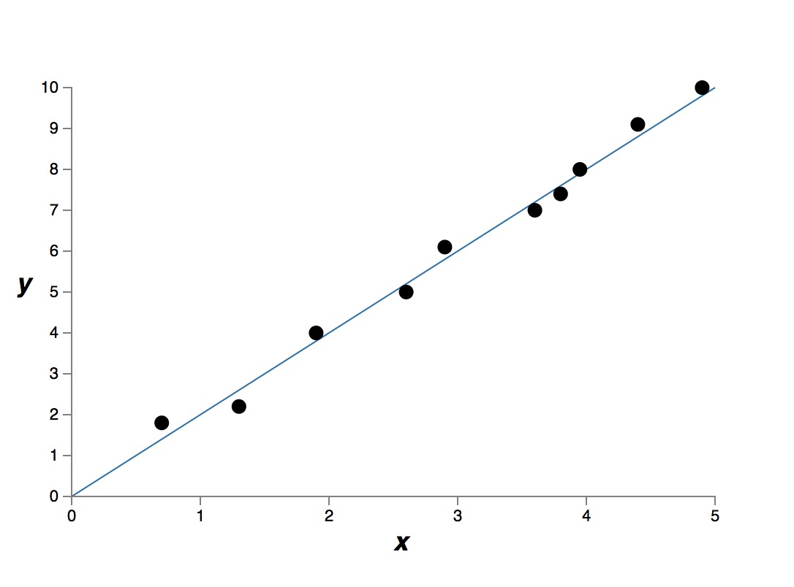

<!DOCTYPE HTML>
<html lang="cn" class="sidebar-visible no-js light">
    <head>
        <!-- Book generated using mdBook -->
        <meta charset="UTF-8">
        <title>Wang Chunye</title>
        
        <meta name="robots" content="noindex" />
        

        <meta content="text/html; charset=utf-8" http-equiv="Content-Type">
        <meta name="description" content="">
        <meta name="viewport" content="width=device-width, initial-scale=1">
        <meta name="theme-color" content="#ffffff" />

        <link rel="shortcut icon" href="favicon.png">
        <link rel="stylesheet" href="css/variables.css">
        <link rel="stylesheet" href="css/general.css">
        <link rel="stylesheet" href="css/chrome.css">
        <link rel="stylesheet" href="css/print.css" media="print">

        <!-- Fonts -->
        <link rel="stylesheet" href="FontAwesome/css/font-awesome.css">
        <link href="https://fonts.googleapis.com/css?family=Open+Sans:300italic,400italic,600italic,700italic,800italic,400,300,600,700,800" rel="stylesheet" type="text/css">
        <link href="https://fonts.googleapis.com/css?family=Source+Code+Pro:500" rel="stylesheet" type="text/css">

        <!-- Highlight.js Stylesheets -->
        <link rel="stylesheet" href="highlight.css">
        <link rel="stylesheet" href="tomorrow-night.css">
        <link rel="stylesheet" href="ayu-highlight.css">

        <!-- Custom theme stylesheets -->
        

        
        <!-- MathJax -->
        <script async type="text/javascript" src="https://cdnjs.cloudflare.com/ajax/libs/mathjax/2.7.1/MathJax.js?config=TeX-AMS-MML_HTMLorMML"></script>
        
    </head>
    <body>
        <!-- Provide site root to javascript -->
        <script type="text/javascript">
            var path_to_root = "";
            var default_theme = window.matchMedia("(prefers-color-scheme: dark)").matches ? "light" : "light";
        </script>

        <!-- Work around some values being stored in localStorage wrapped in quotes -->
        <script type="text/javascript">
            try {
                var theme = localStorage.getItem('mdbook-theme');
                var sidebar = localStorage.getItem('mdbook-sidebar');

                if (theme.startsWith('"') && theme.endsWith('"')) {
                    localStorage.setItem('mdbook-theme', theme.slice(1, theme.length - 1));
                }

                if (sidebar.startsWith('"') && sidebar.endsWith('"')) {
                    localStorage.setItem('mdbook-sidebar', sidebar.slice(1, sidebar.length - 1));
                }
            } catch (e) { }
        </script>

        <!-- Set the theme before any content is loaded, prevents flash -->
        <script type="text/javascript">
            var theme;
            try { theme = localStorage.getItem('mdbook-theme'); } catch(e) { }
            if (theme === null || theme === undefined) { theme = default_theme; }
            var html = document.querySelector('html');
            html.classList.remove('no-js')
            html.classList.remove('light')
            html.classList.add(theme);
            html.classList.add('js');
        </script>

        <!-- Hide / unhide sidebar before it is displayed -->
        <script type="text/javascript">
            var html = document.querySelector('html');
            var sidebar = 'hidden';
            if (document.body.clientWidth >= 1080) {
                try { sidebar = localStorage.getItem('mdbook-sidebar'); } catch(e) { }
                sidebar = sidebar || 'visible';
            }
            html.classList.remove('sidebar-visible');
            html.classList.add("sidebar-" + sidebar);
        </script>

        <nav id="sidebar" class="sidebar" aria-label="Table of contents">
            <div class="sidebar-scrollbox">
                <ol class="chapter"><li class="chapter-item expanded "><a href="SUMMARY.html"><strong aria-hidden="true">1.</strong> Table Of Contents</a></li><li class="chapter-item expanded "><a href="2020-04-09-setup-c-IDE-for-emacs.html"><strong aria-hidden="true">2.</strong> 2020-04-09 setup emacs IDE for C/C++</a></li><li class="chapter-item expanded "><a href="2020-04-05-setup-rust-IDE-for-emacs.html"><strong aria-hidden="true">3.</strong> 2020-04-05 setup emacs IDE for Rust</a></li><li class="chapter-item expanded "><a href="2020-04-05-use-emacs-to-control-tmux.html"><strong aria-hidden="true">4.</strong> 2020-04-05 use emacs to control tmux</a></li><li class="chapter-item expanded "><a href="2020-04-04-start-to-use-mdbook.html"><strong aria-hidden="true">5.</strong> 2020-04-04 start to use mdbook</a></li><li class="chapter-item expanded "><a href="2019-04-22-从一个求和函数谈起.html"><strong aria-hidden="true">6.</strong> 2020-04-22 从一个求和函数谈起</a></li><li class="chapter-item expanded "><a href="2019-02-03-c++-可否同时抛出两个异常.html"><strong aria-hidden="true">7.</strong> 2019-02-03 c++ 可否同时抛出两个异常</a></li><li class="chapter-item expanded "><a href="2019-01-30-c++-中的-converting-constructor.html"><strong aria-hidden="true">8.</strong> 2019-01-30 c++ 中的 converting constructor</a></li><li class="chapter-item expanded "><a href="2019-01-30-深入理解-Return-Value-Optimization.html"><strong aria-hidden="true">9.</strong> 2019-01-30 深入理解 Return Value Optimization</a></li><li class="chapter-item expanded "><a href="2019-01-13-了解-ELF-文件格式.html"><strong aria-hidden="true">10.</strong> 2019-01-13 了解 ELF 文件格式</a></li><li class="chapter-item expanded "><a href="2019-01-01-vector.emplace_back-调用构造函数.html"><strong aria-hidden="true">11.</strong> 2019-01-01 vector.emplace_back 调用构造函数</a></li><li class="chapter-item expanded "><a href="2019-01-01-unique_ptr-的开销有多大.html"><strong aria-hidden="true">12.</strong> 2019-01-01 unique_ptr 的开销有多大</a></li><li class="chapter-item expanded "><a href="2017-07-09-计算一个整数有的二进制表示中多少个-1-.html"><strong aria-hidden="true">13.</strong> 2017-07-09 计算一个整数有的二进制表示中多少个 1 </a></li><li class="chapter-item expanded "><a href="2017-06-18-用c_c++-编写一个-list-操作程序-.html"><strong aria-hidden="true">14.</strong> 2017-06-18 用c/c++ 编写一个 list 操作程序 </a></li><li class="chapter-item expanded "><a href="2017-05-21-c++-中的高维数组-2-.html"><strong aria-hidden="true">15.</strong> 2017-05-21 c++ 中的高维数组(2)</a></li><li class="chapter-item expanded "><a href="2017-05-14-c++-中的高维数组-1-.html"><strong aria-hidden="true">16.</strong> 2017-05-14 c++ 中的高维数组(1)</a></li><li class="chapter-item expanded "><a href="2017-04-30-Walter-E.-Brown-讲解-c++-中的-metaprograming.html"><strong aria-hidden="true">17.</strong> 2017-04-30 Walter E. Brown 讲解 c++ 中的 metaprograming</a></li><li class="chapter-item expanded "><a href="2017-04-30-c++-中的-remove-erase-俗语.html"><strong aria-hidden="true">18.</strong> 2017-04-30 c++ 中的 remove-erase 俗语</a></li><li class="chapter-item expanded "><a href="2017-04-29-c++11-的-extern-template.html"><strong aria-hidden="true">19.</strong> 2017-04-29 c++11 的 extern template</a></li><li class="chapter-item expanded "><a href="2017-04-29-配置-haskell-的开发环境.html"><strong aria-hidden="true">20.</strong> 2017-04-29 配置 haskell 的开发环境</a></li><li class="chapter-item expanded "><a href="2017-04-29-c_c++-的编译和链接的问题.html"><strong aria-hidden="true">21.</strong> 2017-04-29 c/c++ 的编译和链接的问题</a></li><li class="chapter-item expanded "><a href="2017-04-23-c++-non-copyable-的传递性.html"><strong aria-hidden="true">22.</strong> 2017-04-23 c++ non copyable 的传递性</a></li><li class="chapter-item expanded "><a href="2017-04-06-ssh-的无密码登陆.html"><strong aria-hidden="true">23.</strong> 2017-04-06 ssh 的无密码登陆</a></li><li class="chapter-item expanded "><a href="2017-04-04-c++-GSL-中的-owner.html"><strong aria-hidden="true">24.</strong> 2017-04-04 c++ GSL 中的 owner</a></li><li class="chapter-item expanded "><a href="2017-04-04-c++-的-const-reference-extend-lifetime-rvalue.html"><strong aria-hidden="true">25.</strong> 2017-04-04 c++ 的 const reference extend lifetime rvalue</a></li><li class="chapter-item expanded "><a href="2017-04-03-有了c++11-的-unique_ptr，也许就不应该再使用-new_delete-关键字了.html"><strong aria-hidden="true">26.</strong> 2017-04-03 有了c++11 的 unique_ptr，也许就不应该再使用 new/delete 关键字了</a></li><li class="chapter-item expanded "><a href="2017-04-02-c++-的-universal-reference.html"><strong aria-hidden="true">27.</strong> 2017-04-02 c++ 的 universal reference</a></li><li class="chapter-item expanded "><a href="2017-04-02-c++-lambda-capture-by-value-的实验.html"><strong aria-hidden="true">28.</strong> 2017-04-02 c++ lambda capture by value 的实验</a></li><li class="chapter-item expanded "><a href="2017-03-26-c++-中-lambda-的类型和大小.html"><strong aria-hidden="true">29.</strong> 2017-03-26 c++ 中 lambda 的类型和大小</a></li><li class="chapter-item expanded "><a href="2017-03-26-c++-模板的类型推导.html"><strong aria-hidden="true">30.</strong> 2017-03-26 c++ 模板的类型推导</a></li><li class="chapter-item expanded "><a href="2017-03-16-使用--cmake-管理项目.html"><strong aria-hidden="true">31.</strong> 2017-03-16 使用  cmake 管理项目</a></li><li class="chapter-item expanded "><a href="2017-03-16-使用-google-test-framework.html"><strong aria-hidden="true">32.</strong> 2017-03-16 使用 google test framework</a></li><li class="chapter-item expanded "><a href="2017-03-16-google-c++-style-by-examples.html"><strong aria-hidden="true">33.</strong> 2017-03-16 google c++ style by examples</a></li><li class="chapter-item expanded "><a href="2017-03-13-TERMINAL-下的快捷操作.html"><strong aria-hidden="true">34.</strong> 2017-03-13 TERMINAL 下的快捷操作</a></li><li class="chapter-item expanded "><a href="2017-03-12-小叮当效应.html"><strong aria-hidden="true">35.</strong> 2017-03-12 小叮当效应</a></li><li class="chapter-item expanded "><a href="2017-03-12-存款准备金的意义.html"><strong aria-hidden="true">36.</strong> 2017-03-12 存款准备金的意义</a></li><li class="chapter-item expanded "><a href="2017-03-10-过拟合和正则化.html"><strong aria-hidden="true">37.</strong> 2017-03-10 过拟合和正则化</a></li><li class="chapter-item expanded "><a href="2017-03-09-Back-Propagation-算法的向量表示.html"><strong aria-hidden="true">38.</strong> 2017-03-09 Back Propagation 算法的向量表示</a></li><li class="chapter-item expanded "><a href="2017-03-09-成本函数与学习速度-sotfmax-函数与最大似然函数.html"><strong aria-hidden="true">39.</strong> 2017-03-09 成本函数与学习速度 sotfmax 函数与最大似然函数</a></li><li class="chapter-item expanded "><a href="2017-03-08-成本函数与学习速度.html"><strong aria-hidden="true">40.</strong> 2017-03-08 成本函数与学习速度</a></li><li class="chapter-item expanded "><a href="2017-03-08-用-Makefile-+-pandoc-+-markdown-写博客.html"><strong aria-hidden="true">41.</strong> 2017-03-08 用 Makefile + pandoc + markdown 写博客</a></li><li class="chapter-item expanded "><a href="2017-03-05-backpropagation.html"><strong aria-hidden="true">42.</strong> 2017-03-05 backpropagation</a></li><li class="chapter-item expanded "><a href="2017-02-07-理解-java-的-classloader.html"><strong aria-hidden="true">43.</strong> 2017-02-07 理解 java 的 classloader</a></li><li class="chapter-item expanded "><a href="2017-01-25-在-Java-中，我们尽量避免使用-null.html"><strong aria-hidden="true">44.</strong> 2017-01-25 在 Java 中，我们尽量避免使用 null</a></li><li class="chapter-item expanded "><a href="2017-01-14-Java-8-函数式编程例子.html"><strong aria-hidden="true">45.</strong> 2017-01-14 Java 8 函数式编程例子</a></li><li class="chapter-item expanded "><a href="2017-01-08-二分法查找.html"><strong aria-hidden="true">46.</strong> 2017-01-08 二分法查找</a></li><li class="chapter-item expanded "><a href="2017-01-08-最重要的设计原则.html"><strong aria-hidden="true">47.</strong> 2017-01-08 最重要的设计原则</a></li><li class="chapter-item expanded "><a href="2017-01-07-C-语言写的快排程序.html"><strong aria-hidden="true">48.</strong> 2017-01-07 C 语言写的快排程序</a></li><li class="chapter-item expanded "><a href="2017-01-07-编写单链表反转的程序.html"><strong aria-hidden="true">49.</strong> 2017-01-07 编写单链表反转的程序</a></li><li class="chapter-item expanded "><a href="2017-01-07-Feign-client.html"><strong aria-hidden="true">50.</strong> 2017-01-07 Feign client</a></li><li class="chapter-item expanded "><a href="2017-01-07-关于协议设计语言.html"><strong aria-hidden="true">51.</strong> 2017-01-07 关于协议设计语言</a></li><li class="chapter-item expanded "><a href="2017-01-07-简单的多线程并不能提高效率.html"><strong aria-hidden="true">52.</strong> 2017-01-07 简单的多线程并不能提高效率</a></li><li class="chapter-item expanded "><a href="2017-01-07-JAVA8-中的高阶函数.html"><strong aria-hidden="true">53.</strong> 2017-01-07 JAVA8 中的高阶函数</a></li><li class="chapter-item expanded "><a href="2017-01-07-JAVA-JSON-databinding-的多态.html"><strong aria-hidden="true">54.</strong> 2017-01-07 JAVA JSON databinding 的多态</a></li><li class="chapter-item expanded "><a href="2017-01-07-rxjava2-有什么新东西.html"><strong aria-hidden="true">55.</strong> 2017-01-07 rxjava2 有什么新东西</a></li><li class="chapter-item expanded "><a href="2017-01-07-阅读-Subscriber-的实现中关于--backpressure-的部分.html"><strong aria-hidden="true">56.</strong> 2017-01-07 阅读 Subscriber 的实现中关于  backpressure 的部分</a></li><li class="chapter-item expanded "><a href="2017-01-07-阅读-rxjava-源代码之----map.html"><strong aria-hidden="true">57.</strong> 2017-01-07 阅读 rxjava 源代码之  - map</a></li><li class="chapter-item expanded "><a href="2017-01-07-rxjava-如何和传统回调函数结合.html"><strong aria-hidden="true">58.</strong> 2017-01-07 rxjava 如何和传统回调函数结合</a></li><li class="chapter-item expanded "><a href="2017-01-07-阅读-rxjava-源代码.html"><strong aria-hidden="true">59.</strong> 2017-01-07 阅读 rxjava 源代码</a></li><li class="chapter-item expanded "><a href="2017-01-07-使用-Protobuf-设计-REST-API.html"><strong aria-hidden="true">60.</strong> 2017-01-07 使用 Protobuf 设计 REST API</a></li><li class="chapter-item expanded "><a href="2017-01-07-rabbitmq-中的概念.html"><strong aria-hidden="true">61.</strong> 2017-01-07 rabbitmq 中的概念</a></li><li class="chapter-item expanded "><a href="2016-12-25-从零开始构造一个微服务.html"><strong aria-hidden="true">62.</strong> 2016-12-25 从零开始构造一个微服务</a></li><li class="chapter-item expanded "><a href="2016-09-21-基于返回值的-java-generic-类型推导.html"><strong aria-hidden="true">63.</strong> 2016-09-21 基于返回值的 java generic 类型推导</a></li><li class="chapter-item expanded "><a href="2016-09-03-使用-Spring-Integration-Framework-写入-redis-队列.html"><strong aria-hidden="true">64.</strong> 2016-09-03 使用 Spring Integration Framework 写入 redis 队列</a></li><li class="chapter-item expanded "><a href="2016-08-27-开发自己的语言.html"><strong aria-hidden="true">65.</strong> 2016-08-27 开发自己的语言</a></li><li class="chapter-item expanded "><a href="2015-07-29-Erlang-application-environment.html"><strong aria-hidden="true">66.</strong> 2015-07-29 Erlang application environment</a></li><li class="chapter-item expanded "><a href="2015-07-10-ZFS-转移数据.html"><strong aria-hidden="true">67.</strong> 2015-07-10 ZFS 转移数据</a></li><li class="chapter-item expanded "><a href="2015-07-08-C++11-的右值引用问题.html"><strong aria-hidden="true">68.</strong> 2015-07-08 C++11 的右值引用问题</a></li><li class="chapter-item expanded "><a href="2015-07-08-C++-vector-调用多少次元素的构造函数.html"><strong aria-hidden="true">69.</strong> 2015-07-08 C++ vector 调用多少次元素的构造函数</a></li><li class="chapter-item expanded "><a href="2015-07-08-C++11-的-feature,-unique_ptr.html"><strong aria-hidden="true">70.</strong> 2015-07-08 C++11 的 feature, unique_ptr</a></li><li class="chapter-item expanded "><a href="2015-07-08-C_C++-中的求值顺序.html"><strong aria-hidden="true">71.</strong> 2015-07-08 C/C++ 中的求值顺序</a></li><li class="chapter-item expanded "><a href="2015-07-08-C_C++-编程风格:-if-else.html"><strong aria-hidden="true">72.</strong> 2015-07-08 C/C++ 编程风格: if-else</a></li><li class="chapter-item expanded "><a href="2015-07-08-编程风格：-C++-类的结构.html"><strong aria-hidden="true">73.</strong> 2015-07-08 编程风格： C++ 类的结构</a></li><li class="chapter-item expanded "><a href="2015-07-08-折腾-FreeBSD.html"><strong aria-hidden="true">74.</strong> 2015-07-08 折腾 FreeBSD</a></li><li class="chapter-item expanded "><a href="2015-06-01-C-Preprocessor-tricks.html"><strong aria-hidden="true">75.</strong> 2015-06-01 C Preprocessor tricks</a></li><li class="chapter-item expanded "><a href="2015-05-26-C++-should-support-C99-designated-initializer.html"><strong aria-hidden="true">76.</strong> 2015-05-26 C++ should support C99 designated initializer</a></li><li class="chapter-item expanded "><a href="2015-05-20-C++-virtual-function.html"><strong aria-hidden="true">77.</strong> 2015-05-20 C++ virtual function</a></li><li class="chapter-item expanded "><a href="2015-05-18-Understand-X86-64-calling-convention.html"><strong aria-hidden="true">78.</strong> 2015-05-18 Understand X86 64 calling convention</a></li><li class="chapter-item expanded "><a href="2015-05-05-Learning-inline-keyword-by-example-in-C.html"><strong aria-hidden="true">79.</strong> 2015-05-05 Learning inline keyword by example in C</a></li><li class="chapter-item expanded "><a href="2015-04-30-Different-key-binding-in-Emacs-transient-mark-mode.html"><strong aria-hidden="true">80.</strong> 2015-04-30 Different key binding in Emacs transient mark mode</a></li><li class="chapter-item expanded "><a href="2014-11-22-hello-world-in-C.html"><strong aria-hidden="true">81.</strong> 2014-11-22 hello world in C</a></li></ol>
            </div>
            <div id="sidebar-resize-handle" class="sidebar-resize-handle"></div>
        </nav>

        <div id="page-wrapper" class="page-wrapper">

            <div class="page">
                
                <div id="menu-bar-hover-placeholder"></div>
                <div id="menu-bar" class="menu-bar sticky bordered">
                    <div class="left-buttons">
                        <button id="sidebar-toggle" class="icon-button" type="button" title="Toggle Table of Contents" aria-label="Toggle Table of Contents" aria-controls="sidebar">
                            <i class="fa fa-bars"></i>
                        </button>
                        <button id="theme-toggle" class="icon-button" type="button" title="Change theme" aria-label="Change theme" aria-haspopup="true" aria-expanded="false" aria-controls="theme-list">
                            <i class="fa fa-paint-brush"></i>
                        </button>
                        <ul id="theme-list" class="theme-popup" aria-label="Themes" role="menu">
                            <li role="none"><button role="menuitem" class="theme" id="light">Light (default)</button></li>
                            <li role="none"><button role="menuitem" class="theme" id="rust">Rust</button></li>
                            <li role="none"><button role="menuitem" class="theme" id="coal">Coal</button></li>
                            <li role="none"><button role="menuitem" class="theme" id="navy">Navy</button></li>
                            <li role="none"><button role="menuitem" class="theme" id="ayu">Ayu</button></li>
                        </ul>
                        
                        <button id="search-toggle" class="icon-button" type="button" title="Search. (Shortkey: s)" aria-label="Toggle Searchbar" aria-expanded="false" aria-keyshortcuts="S" aria-controls="searchbar">
                            <i class="fa fa-search"></i>
                        </button>
                        
                    </div>

                    <h1 class="menu-title">Wang Chunye</h1>

                    <div class="right-buttons">
                        <a href="print.html" title="Print this book" aria-label="Print this book">
                            <i id="print-button" class="fa fa-print"></i>
                        </a>
                        
                    </div>
                </div>

                
                <div id="search-wrapper" class="hidden">
                    <form id="searchbar-outer" class="searchbar-outer">
                        <input type="search" name="search" id="searchbar" name="searchbar" placeholder="Search this book ..." aria-controls="searchresults-outer" aria-describedby="searchresults-header">
                    </form>
                    <div id="searchresults-outer" class="searchresults-outer hidden">
                        <div id="searchresults-header" class="searchresults-header"></div>
                        <ul id="searchresults">
                        </ul>
                    </div>
                </div>
                

                <!-- Apply ARIA attributes after the sidebar and the sidebar toggle button are added to the DOM -->
                <script type="text/javascript">
                    document.getElementById('sidebar-toggle').setAttribute('aria-expanded', sidebar === 'visible');
                    document.getElementById('sidebar').setAttribute('aria-hidden', sidebar !== 'visible');
                    Array.from(document.querySelectorAll('#sidebar a')).forEach(function(link) {
                        link.setAttribute('tabIndex', sidebar === 'visible' ? 0 : -1);
                    });
                </script>

                <div id="content" class="content">
                    <main>
                        <h1><a class="header" href="#wang-chunyes-blog" id="wang-chunyes-blog">Wang Chunye's BLOG</a></h1>
<ul>
<li><a href="SUMMARY.html">Table Of Contents</a></li>
<li><a href="2020-04-09-setup-c-IDE-for-emacs.html">2020-04-09 setup emacs IDE for C/C++</a></li>
<li><a href="2020-04-05-setup-rust-IDE-for-emacs.html">2020-04-05 setup emacs IDE for Rust</a></li>
<li><a href="2020-04-05-use-emacs-to-control-tmux.html">2020-04-05 use emacs to control tmux</a></li>
<li><a href="2020-04-04-start-to-use-mdbook.html">2020-04-04 start to use mdbook</a></li>
<li><a href="2019-04-22-%E4%BB%8E%E4%B8%80%E4%B8%AA%E6%B1%82%E5%92%8C%E5%87%BD%E6%95%B0%E8%B0%88%E8%B5%B7.html">2020-04-22 从一个求和函数谈起</a></li>
<li><a href="2019-02-03-c++-%E5%8F%AF%E5%90%A6%E5%90%8C%E6%97%B6%E6%8A%9B%E5%87%BA%E4%B8%A4%E4%B8%AA%E5%BC%82%E5%B8%B8.html">2019-02-03 c++ 可否同时抛出两个异常</a></li>
<li><a href="2019-01-30-c++-%E4%B8%AD%E7%9A%84-converting-constructor.html">2019-01-30 c++ 中的 converting constructor</a></li>
<li><a href="2019-01-30-%E6%B7%B1%E5%85%A5%E7%90%86%E8%A7%A3-Return-Value-Optimization.html">2019-01-30 深入理解 Return Value Optimization</a></li>
<li><a href="2019-01-13-%E4%BA%86%E8%A7%A3-ELF-%E6%96%87%E4%BB%B6%E6%A0%BC%E5%BC%8F.html">2019-01-13 了解 ELF 文件格式</a></li>
<li><a href="2019-01-01-vector.emplace_back-%E8%B0%83%E7%94%A8%E6%9E%84%E9%80%A0%E5%87%BD%E6%95%B0.html">2019-01-01 vector.emplace_back 调用构造函数</a></li>
<li><a href="2019-01-01-unique_ptr-%E7%9A%84%E5%BC%80%E9%94%80%E6%9C%89%E5%A4%9A%E5%A4%A7.html">2019-01-01 unique_ptr 的开销有多大</a></li>
<li><a href="2017-07-09-%E8%AE%A1%E7%AE%97%E4%B8%80%E4%B8%AA%E6%95%B4%E6%95%B0%E6%9C%89%E7%9A%84%E4%BA%8C%E8%BF%9B%E5%88%B6%E8%A1%A8%E7%A4%BA%E4%B8%AD%E5%A4%9A%E5%B0%91%E4%B8%AA-1-.html">2017-07-09 计算一个整数有的二进制表示中多少个 1 </a></li>
<li><a href="2017-06-18-%E7%94%A8c_c++-%E7%BC%96%E5%86%99%E4%B8%80%E4%B8%AA-list-%E6%93%8D%E4%BD%9C%E7%A8%8B%E5%BA%8F-.html">2017-06-18 用c/c++ 编写一个 list 操作程序 </a></li>
<li><a href="2017-05-21-c++-%E4%B8%AD%E7%9A%84%E9%AB%98%E7%BB%B4%E6%95%B0%E7%BB%84-2-.html">2017-05-21 c++ 中的高维数组(2)</a></li>
<li><a href="2017-05-14-c++-%E4%B8%AD%E7%9A%84%E9%AB%98%E7%BB%B4%E6%95%B0%E7%BB%84-1-.html">2017-05-14 c++ 中的高维数组(1)</a></li>
<li><a href="2017-04-30-Walter-E.-Brown-%E8%AE%B2%E8%A7%A3-c++-%E4%B8%AD%E7%9A%84-metaprograming.html">2017-04-30 Walter E. Brown 讲解 c++ 中的 metaprograming</a></li>
<li><a href="2017-04-30-c++-%E4%B8%AD%E7%9A%84-remove-erase-%E4%BF%97%E8%AF%AD.html">2017-04-30 c++ 中的 remove-erase 俗语</a></li>
<li><a href="2017-04-29-c++11-%E7%9A%84-extern-template.html">2017-04-29 c++11 的 extern template</a></li>
<li><a href="2017-04-29-%E9%85%8D%E7%BD%AE-haskell-%E7%9A%84%E5%BC%80%E5%8F%91%E7%8E%AF%E5%A2%83.html">2017-04-29 配置 haskell 的开发环境</a></li>
<li><a href="2017-04-29-c_c++-%E7%9A%84%E7%BC%96%E8%AF%91%E5%92%8C%E9%93%BE%E6%8E%A5%E7%9A%84%E9%97%AE%E9%A2%98.html">2017-04-29 c/c++ 的编译和链接的问题</a></li>
<li><a href="2017-04-23-c++-non-copyable-%E7%9A%84%E4%BC%A0%E9%80%92%E6%80%A7.html">2017-04-23 c++ non copyable 的传递性</a></li>
<li><a href="2017-04-06-ssh-%E7%9A%84%E6%97%A0%E5%AF%86%E7%A0%81%E7%99%BB%E9%99%86.html">2017-04-06 ssh 的无密码登陆</a></li>
<li><a href="2017-04-04-c++-GSL-%E4%B8%AD%E7%9A%84-owner.html">2017-04-04 c++ GSL 中的 owner</a></li>
<li><a href="2017-04-04-c++-%E7%9A%84-const-reference-extend-lifetime-rvalue.html">2017-04-04 c++ 的 const reference extend lifetime rvalue</a></li>
<li><a href="2017-04-03-%E6%9C%89%E4%BA%86c++11-%E7%9A%84-unique_ptr%EF%BC%8C%E4%B9%9F%E8%AE%B8%E5%B0%B1%E4%B8%8D%E5%BA%94%E8%AF%A5%E5%86%8D%E4%BD%BF%E7%94%A8-new_delete-%E5%85%B3%E9%94%AE%E5%AD%97%E4%BA%86.html">2017-04-03 有了c++11 的 unique_ptr，也许就不应该再使用 new/delete 关键字了</a></li>
<li><a href="2017-04-02-c++-%E7%9A%84-universal-reference.html">2017-04-02 c++ 的 universal reference</a></li>
<li><a href="2017-04-02-c++-lambda-capture-by-value-%E7%9A%84%E5%AE%9E%E9%AA%8C.html">2017-04-02 c++ lambda capture by value 的实验</a></li>
</ul>
<!-- - [2017-03-29 c++11 中的 uniform initialization](2017-03-29-c++11-中的-uniform-initialization.md) -->
<!-- - [2017-03-29 c++ vector::operator[] 的一个坑点](2017-03-29-c++-vector::operator[]-的一个坑点.md) -->
<ul>
<li><a href="2017-03-26-c++-%E4%B8%AD-lambda-%E7%9A%84%E7%B1%BB%E5%9E%8B%E5%92%8C%E5%A4%A7%E5%B0%8F.html">2017-03-26 c++ 中 lambda 的类型和大小</a></li>
<li><a href="2017-03-26-c++-%E6%A8%A1%E6%9D%BF%E7%9A%84%E7%B1%BB%E5%9E%8B%E6%8E%A8%E5%AF%BC.html">2017-03-26 c++ 模板的类型推导</a></li>
<li><a href="2017-03-16-%E4%BD%BF%E7%94%A8--cmake-%E7%AE%A1%E7%90%86%E9%A1%B9%E7%9B%AE.html">2017-03-16 使用  cmake 管理项目</a></li>
<li><a href="2017-03-16-%E4%BD%BF%E7%94%A8-google-test-framework.html">2017-03-16 使用 google test framework</a></li>
<li><a href="2017-03-16-google-c++-style-by-examples.html">2017-03-16 google c++ style by examples</a></li>
<li><a href="2017-03-13-TERMINAL-%E4%B8%8B%E7%9A%84%E5%BF%AB%E6%8D%B7%E6%93%8D%E4%BD%9C.html">2017-03-13 TERMINAL 下的快捷操作</a></li>
<li><a href="2017-03-12-%E5%B0%8F%E5%8F%AE%E5%BD%93%E6%95%88%E5%BA%94.html">2017-03-12 小叮当效应</a></li>
<li><a href="2017-03-12-%E5%AD%98%E6%AC%BE%E5%87%86%E5%A4%87%E9%87%91%E7%9A%84%E6%84%8F%E4%B9%89.html">2017-03-12 存款准备金的意义</a></li>
<li><a href="2017-03-10-%E8%BF%87%E6%8B%9F%E5%90%88%E5%92%8C%E6%AD%A3%E5%88%99%E5%8C%96.html">2017-03-10 过拟合和正则化</a></li>
<li><a href="2017-03-09-Back-Propagation-%E7%AE%97%E6%B3%95%E7%9A%84%E5%90%91%E9%87%8F%E8%A1%A8%E7%A4%BA.html">2017-03-09 Back Propagation 算法的向量表示</a></li>
<li><a href="2017-03-09-%E6%88%90%E6%9C%AC%E5%87%BD%E6%95%B0%E4%B8%8E%E5%AD%A6%E4%B9%A0%E9%80%9F%E5%BA%A6-sotfmax-%E5%87%BD%E6%95%B0%E4%B8%8E%E6%9C%80%E5%A4%A7%E4%BC%BC%E7%84%B6%E5%87%BD%E6%95%B0.html">2017-03-09 成本函数与学习速度 sotfmax 函数与最大似然函数</a></li>
<li><a href="2017-03-08-%E6%88%90%E6%9C%AC%E5%87%BD%E6%95%B0%E4%B8%8E%E5%AD%A6%E4%B9%A0%E9%80%9F%E5%BA%A6.html">2017-03-08 成本函数与学习速度</a></li>
<li><a href="2017-03-08-%E7%94%A8-Makefile-+-pandoc-+-markdown-%E5%86%99%E5%8D%9A%E5%AE%A2.html">2017-03-08 用 Makefile + pandoc + markdown 写博客</a></li>
<li><a href="2017-03-05-backpropagation.html">2017-03-05 backpropagation</a></li>
<li><a href="2017-02-07-%E7%90%86%E8%A7%A3-java-%E7%9A%84-classloader.html">2017-02-07 理解 java 的 classloader</a></li>
<li><a href="2017-01-25-%E5%9C%A8-Java-%E4%B8%AD%EF%BC%8C%E6%88%91%E4%BB%AC%E5%B0%BD%E9%87%8F%E9%81%BF%E5%85%8D%E4%BD%BF%E7%94%A8-null.html">2017-01-25 在 Java 中，我们尽量避免使用 null</a></li>
<li><a href="2017-01-14-Java-8-%E5%87%BD%E6%95%B0%E5%BC%8F%E7%BC%96%E7%A8%8B%E4%BE%8B%E5%AD%90.html">2017-01-14 Java 8 函数式编程例子</a></li>
<li><a href="2017-01-08-%E4%BA%8C%E5%88%86%E6%B3%95%E6%9F%A5%E6%89%BE.html">2017-01-08 二分法查找</a></li>
<li><a href="2017-01-08-%E6%9C%80%E9%87%8D%E8%A6%81%E7%9A%84%E8%AE%BE%E8%AE%A1%E5%8E%9F%E5%88%99.html">2017-01-08 最重要的设计原则</a></li>
<li><a href="2017-01-07-C-%E8%AF%AD%E8%A8%80%E5%86%99%E7%9A%84%E5%BF%AB%E6%8E%92%E7%A8%8B%E5%BA%8F.html">2017-01-07 C 语言写的快排程序</a></li>
<li><a href="2017-01-07-%E7%BC%96%E5%86%99%E5%8D%95%E9%93%BE%E8%A1%A8%E5%8F%8D%E8%BD%AC%E7%9A%84%E7%A8%8B%E5%BA%8F.html">2017-01-07 编写单链表反转的程序</a></li>
<li><a href="2017-01-07-Feign-client.html">2017-01-07 Feign client</a></li>
<li><a href="2017-01-07-%E5%85%B3%E4%BA%8E%E5%8D%8F%E8%AE%AE%E8%AE%BE%E8%AE%A1%E8%AF%AD%E8%A8%80.html">2017-01-07 关于协议设计语言</a></li>
<li><a href="2017-01-07-%E7%AE%80%E5%8D%95%E7%9A%84%E5%A4%9A%E7%BA%BF%E7%A8%8B%E5%B9%B6%E4%B8%8D%E8%83%BD%E6%8F%90%E9%AB%98%E6%95%88%E7%8E%87.html">2017-01-07 简单的多线程并不能提高效率</a></li>
<li><a href="2017-01-07-JAVA8-%E4%B8%AD%E7%9A%84%E9%AB%98%E9%98%B6%E5%87%BD%E6%95%B0.html">2017-01-07 JAVA8 中的高阶函数</a></li>
<li><a href="2017-01-07-JAVA-JSON-databinding-%E7%9A%84%E5%A4%9A%E6%80%81.html">2017-01-07 JAVA JSON databinding 的多态</a></li>
<li><a href="2017-01-07-rxjava2-%E6%9C%89%E4%BB%80%E4%B9%88%E6%96%B0%E4%B8%9C%E8%A5%BF.html">2017-01-07 rxjava2 有什么新东西</a></li>
<li><a href="2017-01-07-%E9%98%85%E8%AF%BB-Subscriber-%E7%9A%84%E5%AE%9E%E7%8E%B0%E4%B8%AD%E5%85%B3%E4%BA%8E--backpressure-%E7%9A%84%E9%83%A8%E5%88%86.html">2017-01-07 阅读 Subscriber 的实现中关于  backpressure 的部分</a></li>
<li><a href="2017-01-07-%E9%98%85%E8%AF%BB-rxjava-%E6%BA%90%E4%BB%A3%E7%A0%81%E4%B9%8B----map.html">2017-01-07 阅读 rxjava 源代码之  - map</a></li>
<li><a href="2017-01-07-rxjava-%E5%A6%82%E4%BD%95%E5%92%8C%E4%BC%A0%E7%BB%9F%E5%9B%9E%E8%B0%83%E5%87%BD%E6%95%B0%E7%BB%93%E5%90%88.html">2017-01-07 rxjava 如何和传统回调函数结合</a></li>
<li><a href="2017-01-07-%E9%98%85%E8%AF%BB-rxjava-%E6%BA%90%E4%BB%A3%E7%A0%81.html">2017-01-07 阅读 rxjava 源代码</a></li>
<li><a href="2017-01-07-%E4%BD%BF%E7%94%A8-Protobuf-%E8%AE%BE%E8%AE%A1-REST-API.html">2017-01-07 使用 Protobuf 设计 REST API</a></li>
<li><a href="2017-01-07-rabbitmq-%E4%B8%AD%E7%9A%84%E6%A6%82%E5%BF%B5.html">2017-01-07 rabbitmq 中的概念</a></li>
<li><a href="2016-12-25-%E4%BB%8E%E9%9B%B6%E5%BC%80%E5%A7%8B%E6%9E%84%E9%80%A0%E4%B8%80%E4%B8%AA%E5%BE%AE%E6%9C%8D%E5%8A%A1.html">2016-12-25 从零开始构造一个微服务</a></li>
<li><a href="2016-09-21-%E5%9F%BA%E4%BA%8E%E8%BF%94%E5%9B%9E%E5%80%BC%E7%9A%84-java-generic-%E7%B1%BB%E5%9E%8B%E6%8E%A8%E5%AF%BC.html">2016-09-21 基于返回值的 java generic 类型推导</a></li>
<li><a href="2016-09-03-%E4%BD%BF%E7%94%A8-Spring-Integration-Framework-%E5%86%99%E5%85%A5-redis-%E9%98%9F%E5%88%97.html">2016-09-03 使用 Spring Integration Framework 写入 redis 队列</a></li>
<li><a href="2016-08-27-%E5%BC%80%E5%8F%91%E8%87%AA%E5%B7%B1%E7%9A%84%E8%AF%AD%E8%A8%80.html">2016-08-27 开发自己的语言</a></li>
<li><a href="2015-07-29-Erlang-application-environment.html">2015-07-29 Erlang application environment</a></li>
<li><a href="2015-07-10-ZFS-%E8%BD%AC%E7%A7%BB%E6%95%B0%E6%8D%AE.html">2015-07-10 ZFS 转移数据</a></li>
<li><a href="2015-07-08-C++11-%E7%9A%84%E5%8F%B3%E5%80%BC%E5%BC%95%E7%94%A8%E9%97%AE%E9%A2%98.html">2015-07-08 C++11 的右值引用问题</a></li>
<li><a href="2015-07-08-C++-vector-%E8%B0%83%E7%94%A8%E5%A4%9A%E5%B0%91%E6%AC%A1%E5%85%83%E7%B4%A0%E7%9A%84%E6%9E%84%E9%80%A0%E5%87%BD%E6%95%B0.html">2015-07-08 C++ vector 调用多少次元素的构造函数</a></li>
<li><a href="2015-07-08-C++11-%E7%9A%84-feature,-unique_ptr.html">2015-07-08 C++11 的 feature, unique_ptr</a></li>
<li><a href="2015-07-08-C_C++-%E4%B8%AD%E7%9A%84%E6%B1%82%E5%80%BC%E9%A1%BA%E5%BA%8F.html">2015-07-08 C/C++ 中的求值顺序</a></li>
<li><a href="2015-07-08-C_C++-%E7%BC%96%E7%A8%8B%E9%A3%8E%E6%A0%BC:-if-else.html">2015-07-08 C/C++ 编程风格: if-else</a></li>
<li><a href="2015-07-08-%E7%BC%96%E7%A8%8B%E9%A3%8E%E6%A0%BC%EF%BC%9A-C++-%E7%B1%BB%E7%9A%84%E7%BB%93%E6%9E%84.html">2015-07-08 编程风格： C++ 类的结构</a></li>
<li><a href="2015-07-08-%E6%8A%98%E8%85%BE-FreeBSD.html">2015-07-08 折腾 FreeBSD</a></li>
<li><a href="2015-06-01-C-Preprocessor-tricks.html">2015-06-01 C Preprocessor tricks</a></li>
<li><a href="2015-05-26-C++-should-support-C99-designated-initializer.html">2015-05-26 C++ should support C99 designated initializer</a></li>
<li><a href="2015-05-20-C++-virtual-function.html">2015-05-20 C++ virtual function</a></li>
<li><a href="2015-05-18-Understand-X86-64-calling-convention.html">2015-05-18 Understand X86 64 calling convention</a></li>
<li><a href="2015-05-05-Learning-inline-keyword-by-example-in-C.html">2015-05-05 Learning inline keyword by example in C</a></li>
<li><a href="2015-04-30-Different-key-binding-in-Emacs-transient-mark-mode.html">2015-04-30 Different key binding in Emacs transient mark mode</a></li>
<li><a href="2014-11-22-hello-world-in-C.html">2014-11-22 hello world in C</a></li>
</ul>
<h1><a class="header" href="#setup-emacs-ide-for-cc" id="setup-emacs-ide-for-cc">setup Emacs IDE for C/C++</a></h1>
<h2><a class="header" href="#objectives" id="objectives">Objectives</a></h2>
<ol>
<li>auto complete</li>
<li>auto format on save</li>
<li>LSP (eglot or lsp-mode)</li>
</ol>
<h2><a class="header" href="#install-clangd" id="install-clangd">Install clangd</a></h2>
<p><a href="https://clangd.llvm.org/installation.html">cland</a> is a language server for C/C++. <a href="https://clangd.llvm.org/installation.html">install
clangd</a> lists many installation method. Here I show how to
install from source codes.</p>
<h3><a class="header" href="#download" id="download">download</a></h3>
<pre><code class="language-console">% mkdir ~/build/llvm
% cd ~/build/llvm
% ls -l
% curl -Lo llvm-10.0.0.src.tar.xz https://github.com/llvm/llvm-project/releases/download/llvmorg-10.0.0/llvm-10.0.0.src.tar.xz
% curl -Lo clang-10.0.0.src.tar.xz https://github.com/llvm/llvm-project/releases/download/llvmorg-10.0.0/clang-10.0.0.src.tar.xz
% curl -Lo clang-tools-extra-10.0.0.src.tar.xz https://github.com/llvm/llvm-project/releases/download/llvmorg-10.0.0/clang-tools-extra-10.0.0.src.tar.xz
</code></pre>
<h3><a class="header" href="#extract" id="extract">extract</a></h3>
<pre><code class="language-console">% cd ~/build/llvm
% tar -xvf llvm-10.0.0.src.tar.xz
% tar -xvf clang-10.0.0.src.tar.xz -C llvm-10.0.0.src/tools/
% mv ./llvm-10.0.0.src/tools/clang-10.0.0.src llvm-10.0.0.src/tools/clang
% tar -xf clang-tools-extra-10.0.0.src.tar.xz -C llvm-10.0.0.src/tools/clang/tools
% mv llvm-10.0.0.src/tools/clang/tools/clang-tools-extra-10.0.0.src llvm-10.0.0.src/tools/clang/tools/clang-tools-extra
</code></pre>
<h3><a class="header" href="#configure-build-and-install" id="configure-build-and-install">configure, build and install</a></h3>
<p>I am not sure it is a bug or not, but I have to change <code>llvm-10.0.0.src/tools/clang/tools/CMakeLists.txt</code> as below</p>
<pre><code class="language-diff">--- llvm-10.0.0.src/tools/clang/tools/CMakeLists.txt.orig       2020-04-09 11:46:25.844204200 +0800
+++ llvm-10.0.0.src/tools/clang/tools/CMakeLists.txt    2020-04-09 11:46:39.615524000 +0800
@@ -36,7 +36,7 @@
 # on top of the Clang tooling platform. We keep them in a separate repository
 # to keep the primary Clang repository small and focused.
 # It also may be included by LLVM_EXTERNAL_CLANG_TOOLS_EXTRA_SOURCE_DIR.
 -add_llvm_external_project(clang-tools-extra extra)
 +add_llvm_external_project(clang-tools-extra)

 # libclang may require clang-tidy in clang-tools-extra.
 add_clang_subdirectory(libclang)
</code></pre>
<pre><code class="language-console">% cd ~/build/llvm/
% mkdir build_out
% cd  build_out
% cmake -DCMAKE_BUILD_TYPE=MINSIZEREL -DBUILD_SHARED_LIBS=on  ../llvm-10.0.0.src
% make &amp;&amp; sudo make install
% which clangd # /usr/local/bin/clangd, make sure it is exits.
</code></pre>
<h2><a class="header" href="#emacs-configuration" id="emacs-configuration">emacs configuration</a></h2>
<p>If you are not so patient, you can install
<a href="https://github.com/wcy123/100ms_dot_emacs">100ms_dot_emacs</a>, it works
out of box.</p>
<h3><a class="header" href="#eglog" id="eglog">eglog</a></h3>
<pre><code class="language-elisp">(use-package eglot
  :defines (eglot-mode-map eglot-server-programs)
  :hook (((c-mode c++-mode) . eglot-ensure))
  :bind (:map eglot-mode-map
              (&quot;C-c h&quot; . eglot-help-at-point)
              (&quot;C-c f r&quot; . xref-find-references)
              (&quot;C-c f d&quot; . eglot-find-declaration ;; xref-find-definitions
               )
              (&quot;C-c f D&quot; . xref-find-definitions-other-window)
              (&quot;C-c f t&quot; . eglot-find-typeDefinition)
              (&quot;C-c f i&quot; . eglot-find-implementation)
              (&quot;C-c =&quot; . eglot-format-buffer)
              (&quot;C-c c&quot; . eglot-completion-at-point)
              (&quot;C-c r&quot; . eglot-rename)
              (&quot;C-c a&quot; . eglot-code-actions))
  :config
  (add-to-list 'eglot-server-programs '((c++-mode c-mode) &quot;clangd&quot;)))
</code></pre>
<h3><a class="header" href="#company" id="company">company</a></h3>
<pre><code class="language-elisp">(use-package company
  :after (prog-mode)
  :diminish (company-mode . &quot;C&quot;)
  :defines (
            company-active-map
            company-idle-delay
            company-minimum-prefix-length
            company-show-numbers
            company-tooltip-limit
            company-dabbrev-downcase)
  :hook (prog-mode . company-mode)
  :bind (:map company-active-map
              ((&quot;C-n&quot; . company-select-next)
               (&quot;C-p&quot; . company-select-previous)))
  :config
  (setq company-idle-delay              nil)
  (setq company-minimum-prefix-length   2)
  (setq company-show-numbers            t)
  (setq company-tooltip-limit           20)
  (setq company-dabbrev-downcase        nil)
  :bind (:map prog-mode-map
              (&quot;C-r&quot; . company-complete)))
</code></pre>
<h3><a class="header" href="#format-on-save" id="format-on-save">format on save</a></h3>
<pre><code class="language-elisp">(use-package clang-format
  :defines (clang-format-fallback-style)
  :after (cc-mode)
  :config
  (set-default 'clang-format-fallback-style &quot;Google&quot;)
  (add-hook 'c-mode-common-hook #'(lambda()
                                    (add-hook 'before-save-hook
                                              'clang-format-buffer t t))))
</code></pre>
<h3><a class="header" href="#for-makefile-project" id="for-makefile-project">for <code>Makefile</code> project</a></h3>
<p>We need to install <a href="">Bear</a></p>
<pre><code class="language-console">% mkdir ~/build
% cd ~/build
% git clone --depth 1 git@github.com:rizsotto/Bear.git
% cd Bear
% cmake .
% make
% sudo make install
</code></pre>
<p>We create a simple hello world project as below</p>
<pre><code class="language-makefile"># Makefile
hello: hello.c
</code></pre>
<pre><code class="language-c">#include &lt;stdio.h&gt;
struct point {
   int x;
   int y;
};
int main(int char, char argv[]) {
   struct point pt;
   pt.x ; # press C-r to complete, C-r is bind to company-complete
}
</code></pre>
<pre><code class="language-console">% bear make # this generate compile_commands.json
</code></pre>
<h3><a class="header" href="#for-cmake-project" id="for-cmake-project">for <code>cmake</code> project</a></h3>
<pre><code class="language-console">cmake -DCMAKE_EXPORT_COMPILE_COMMANDS=on . # this command generate compile_commands.json
</code></pre>
<h3><a class="header" href="#common-used-key-bindigns" id="common-used-key-bindigns">common used key bindigns</a></h3>
<table><thead><tr><th align="left">key</th><th align="left">command</th></tr></thead><tbody>
<tr><td align="left">M-7</td><td align="left">compile</td></tr>
<tr><td align="left">C-r</td><td align="left">company-complete</td></tr>
<tr><td align="left">M-.</td><td align="left">xref-find-definitions</td></tr>
<tr><td align="left">M-,</td><td align="left">xref-pop-marker-stack</td></tr>
</tbody></table>
<h1><a class="header" href="#setup-emacs-ide-for-rust" id="setup-emacs-ide-for-rust">setup emacs IDE for Rust</a></h1>
<p>Objectives:</p>
<ol>
<li>generate a simple hello world in Rust.</li>
<li>format on save</li>
<li>auto completion</li>
<li>code navigation</li>
<li>cargo integration</li>
</ol>
<h2><a class="header" href="#use-100ms_dot_emacs" id="use-100ms_dot_emacs">use <code>100ms_dot_emacs</code></a></h2>
<p>If you are not so patient, you can install
<a href="https://github.com/wcy123/100ms_dot_emacs">100ms_dot_emacs</a>, it works
out of box.</p>
<h2><a class="header" href="#generate-a-new-project" id="generate-a-new-project">generate a new project</a></h2>
<p><a href="">https://doc.rust-lang.org/cargo/guide/creating-a-new-project.html</a></p>
<pre><code class="language-console">% cargo new hello_world --bin
     Created binary (application) `hello_world` package
% tree .
.
└── hello_world
    ├── Cargo.toml
    └── src
        └── main.rs

2 directories, 2 files
chunywan@localhost:rust% cd hello_world/
chunywan@localhost:hello_world% cargo build
   Compiling hello_world v0.1.0 (/Users/chunywan/d/working/learn/rust/hello_world)
    Finished dev [unoptimized + debuginfo] target(s) in 1.80s
chunywan@localhost:hello_world% cargo run
    Finished dev [unoptimized + debuginfo] target(s) in 0.00s
     Running `target/debug/hello_world`
Hello, world!
</code></pre>
<h2><a class="header" href="#install-emacs-rust-mode" id="install-emacs-rust-mode">install emacs rust-mode</a></h2>
<p><a href="">https://github.com/rust-lang/rust-mode</a></p>
<h2><a class="header" href="#format-on-save-1" id="format-on-save-1">format on save</a></h2>
<p>install  rustfmt</p>
<p><a href="">https://github.com/rust-lang/rustfmt</a></p>
<pre><code class="language-console">rustup component add rustfmt
</code></pre>
<pre><code class="language-console">M-x rust-format-buffer
</code></pre>
<p>you might need <code>exec-path-from-shell</code> if you are using mac os.</p>
<p><a href="">https://github.com/purcell/exec-path-from-shell</a></p>
<pre><code class="language-console">M-x package-install RET exec-path-from-shell RET.
</code></pre>
<pre><code class="language-elisp">(use-package exec-path-from-shell
  :ensure t
  :config
  (when (or (memq window-system '(mac ns x))
            (memq system-type '(darwin)))
    (exec-path-from-shell-initialize)))
</code></pre>
<pre><code class="language-elisp">(use-package rust-mode
  :ensure t
  :config
  (setq rust-format-on-save t))
</code></pre>
<h2><a class="header" href="#auto-completion" id="auto-completion">auto completion</a></h2>
<p>install racer</p>
<p><a href="">https://github.com/racer-rust/racer#installation</a></p>
<pre><code class="language-console">% cargo install racer
% rustup toolchain add nightly
% cargo +nightly install racer
% rustup component add rust-src
</code></pre>
<p><a href="">https://github.com/racer-rust/emacs-racer</a></p>
<pre><code class="language-elisp">(use-package rust-mode
  :mode &quot;\\.rs\\'&quot;
  :ensure t
  :config
  (setq rust-format-on-save t)
  (add-hook 'rust-mode-hook #'cargo-minor-mode))
(use-package racer
  :ensure t
  :config
  :after (rust-mode)
  :config
  (add-hook 'rust-mode-hook #'racer-mode)
  (add-hook 'racer-mode-hook #'eldoc-mode)
  (add-hook 'racer-mode-hook #'company-mode)
  (define-key rust-mode-map (kbd &quot;TAB&quot;) #'company-indent-or-complete-common)
  (setq company-tooltip-align-annotations t)
  (setq racer-loaded 1))
</code></pre>
<p>You can input <code>std::io::B&lt;TAB&gt;</code> , to test whether it works or not.</p>
<pre><code class="language-text">To test go to definition: Place your cursor over a symbol and press M-. to jump to its definition.

Press C-x 4 . to jump to its definition in another window.

Press C-x 5 . to jump to its definition in another frame.

Press M-, to jump back to the previous cursor location.

If it doesn't work, try M-x racer-debug to see what command was run and what output was returned.

</code></pre>
<p>In this way, we can navigate in source code.</p>
<h2><a class="header" href="#cargo-integration" id="cargo-integration">cargo integration</a></h2>
<pre><code class="language-lisp">(add-hook 'rust-mode-hook #'cargo-minor-mode)
</code></pre>
<p><code>cargo-minor-mode</code> is enabled in rust mode, now we can use the following cargo commands.</p>
<pre><code class="language-text">C-c C-c C-a     cargo-process-add
C-c C-c C-b     cargo-process-build
C-c C-c C-c     cargo-process-repeat
C-c C-c C-d     cargo-process-doc
C-c C-c C-e     cargo-process-bench
C-c C-c C-f     cargo-process-current-test
C-c C-c TAB     cargo-process-init
C-c C-c C-k     cargo-process-check
C-c C-c C-l     cargo-process-clean
C-c C-c RET     cargo-process-fmt
C-c C-c C-n     cargo-process-new
C-c C-c C-o     cargo-process-current-file-tests
C-c C-c C-r     cargo-process-run
C-c C-c C-s     cargo-process-search
C-c C-c C-t     cargo-process-test
C-c C-c C-u     cargo-process-update
C-c C-c C-v     cargo-process-doc-open
C-c C-c C-x     cargo-process-run-example
C-c C-c C-S-a   cargo-process-audit
C-c C-c C-S-d   cargo-process-rm
C-c C-c C-S-k   cargo-process-clippy
C-c C-c C-S-o   cargo-process-outdated
C-c C-c C-S-u   cargo-process-upgrade
</code></pre>
<h2><a class="header" href="#language-server-support" id="language-server-support">language server support</a></h2>
<pre><code class="language-console">% rustup component add rls rust-analysis rust-src
</code></pre>
<pre><code class="language-lisp">(use-package lsp-mode
  :defines (lsp-keymap-prefix)
  :commands (lsp lsp-deferred)
  :init (setq lsp-keymap-prefix &quot;C-l&quot;)
  :hook (((rust-mode)
          . lsp-deferred)
         (lsp-mode . lsp-enable-which-key-integration)))
</code></pre>
<h1><a class="header" href="#use-emacs-to-control-tmux" id="use-emacs-to-control-tmux">use emacs to control tmux</a></h1>
<p>There are two main use cases for using emacs to control tmux session.</p>
<ol>
<li>Recording your command history in a markdown file.</li>
<li>Bash programming</li>
</ol>
<h2><a class="header" href="#how-it-works" id="how-it-works">How it works</a></h2>
<p><code>tmux</code> has many subcommands to control tmux, one of is <code>send-keys</code>, for example,</p>
<pre><code class="language-console">tmux send-keys -t ! ls
</code></pre>
<p>It sends <code>ls</code> to the last active window. refer to <a href="http://man7.org/linux/man-pages/man1/tmux.1.html">tmux manual</a> for detail about <code>-t</code></p>
<p>It is not easy to send control characters, like return, tab
etc. Fortunately with latest <code>tmux 3.0a</code>, it supports <code>-H</code> command
line option, e.g.</p>
<pre><code class="language-console">tmux send-keys -t ! -H 6c 73 0a
</code></pre>
<p><code>0a</code> means return key so that we can execute <code>ls</code> in the last active window.</p>
<p>In elisp, we can easily convert any string into hex format as below</p>
<pre><code class="language-lisp">(defun tmux-cc--convert-keys(strings)
  (seq-map #'(lambda(c) (format &quot;%x&quot; c)) strings))
</code></pre>
<pre><code class="language-lisp">(tmux-cc--convert-keys &quot;ls\n&quot;) =&gt; (&quot;6c&quot; &quot;73&quot; &quot;a&quot;)
</code></pre>
<p>It becomes interesting when we invoke tmux <code>send-keys</code> from within a
emacs session.</p>
<pre><code class="language-lisp">(setq strings &quot;ls\n&quot;)
(apply #'call-process
   `(&quot;tmux&quot; nil &quot;*tmux cc*&quot; t
     &quot;send-keys&quot; &quot;-t&quot; &quot;op&quot; &quot;-H&quot; ,@(tmux-cc--convert-keys strings)))
</code></pre>
<p>In this way, we can send arbitrary strings from a emacs buffer to a
tmux session.</p>
<p>There is a complete implemenation in <a href="">https://github.com/wcy123/tmux-cc</a></p>
<p>To install the package, you can put the following lines in your
<code>~/.emacs</code>.</p>
<pre><code class="language-lisp">(use-package tmux-cc
  :straight
  (tmux-cc :type git
           :host github
           :repo &quot;wcy123/tmux-cc&quot;)
  :commands
  (tmux-cc-send-current-line tmux-cc-select-block tmux-cc-send-region))
</code></pre>
<p>And it is recommended to bind <code>C-z</code> in <code>markdown-mode</code> or <code>shell-script-mode</code>.</p>
<pre><code class="language-lisp">(use-package markdown-mode
  :defines (markdown-mode-map)
  :mode &quot;\\.md\\'&quot;
  :mode &quot;\\.markdown\\'&quot;
              (&quot;C-z&quot; . tmux-cc-send-current-line))
</code></pre>
<p>Or you can just install <a href="">https://github.com/wcy123/100ms_dot_emacs</a>
it works out of box.</p>
<h1><a class="header" href="#2020-04-04-start-to-use-mdbook-to-write-my-blog" id="2020-04-04-start-to-use-mdbook-to-write-my-blog">2020-04-04 start to use mdbook to write my blog</a></h1>
<h2><a class="header" href="#download-and-install-mdbook" id="download-and-install-mdbook">download and install mdbook</a></h2>
<p>refer to <a href="https://github.com/rust-lang/mdBook">mdbook@github</a></p>
<pre><code class="language-bash">cargo install mdbook
</code></pre>
<h3><a class="header" href="#create-a-book" id="create-a-book">create a book</a></h3>
<pre><code class="language-bash">mkdir ~/d/working/wcy123.github.com/
mdbook init
</code></pre>
<p>I modifiy <code>book.toml</code> as following, copy some configurations from <a href="https://github.com/rust-lang/mdBook/blob/master/book-example/book.toml">mdBook/book-example/book.toml</a></p>
<pre><code class="language-toml">[book]
authors = [&quot;WangChunye&quot;]
language = &quot;cn&quot;
multilingual = true
src = &quot;src&quot;
title = &quot;Wang Chunye&quot;


[output.html]
mathjax-support = true
google-analytics = &quot;UA-98267158-1&quot;

[output.html.playpen]
editable = true
line-numbers = true

[output.html.search]
limit-results = 20
use-boolean-and = true
boost-title = 2
boost-hierarchy = 2
boost-paragraph = 1
expand = true
heading-split-level = 2
</code></pre>
<p>We can include another file by using a preprocessor, the above is generated by</p>
<pre><code class="language-hbs">```toml
{{#include ../book.toml}}
```
</code></pre>
<p>refer to <a href="https://github.com/rust-lang/mdBook/blob/master/book-example/src/format/mdbook.md">mdBook-specific markdown</a> for detail</p>
<h3><a class="header" href="#start-the-server" id="start-the-server">start the server</a></h3>
<pre><code class="language-bash">mdbook serve
open http://localhost:3000
</code></pre>
<h3><a class="header" href="#mathjax-support" id="mathjax-support">MathJax support</a></h3>
<p>block equations</p>
<p>\[
(a+b)^2 = a^2 + 2ab + b^2
\]</p>
<p>where \( (a+b)^2 = a^2 + 2ab + b^2 \) is an inline equations</p>
<p>refer to <a href="https://rust-lang.github.io/mdBook/format/mathjax.html">MathJax Support</a> for detail</p>
<h3><a class="header" href="#source-code-syntax-high-light" id="source-code-syntax-high-light">source code syntax high light</a></h3>
<pre><code class="language-c">#include &lt;stdio.h&gt;
int main(int argc, char* argv[]) {
    printf(&quot;hello world\n&quot;);
}
</code></pre>
<pre><pre class="playpen"><code class="language-rust">
<span class="boring">#![allow(unused_variables)]
</span><span class="boring">fn main() {
</span>fn foo() -&gt; i32 {
    1 + 1
}
<span class="boring">}
</span></code></pre></pre>
<h3><a class="header" href="#ci-integration-and-deploy-automation" id="ci-integration-and-deploy-automation">CI integration and deploy automation</a></h3>
<ul>
<li>
<p>create a github token</p>
<p>refer to <a href="https://help.github.com/en/github/authenticating-to-github/creating-a-personal-access-token-for-the-command-line#creating-a-token">creating a token</a>. for detail.</p>
</li>
<li>
<p>enable travis ci</p>
<p>refer to https://travis-ci.org/github/</p>
<p>activate Travis CI and set environment variable GITHUB_TOKEN to your token.</p>
<p>read <a href="https://docs.travis-ci.com/user/best-practices-security#recommendations-on-how-to-avoid-leaking-secrets-to-build-logs">secure your token</a></p>
</li>
<li>
<p>deploy automation</p>
</li>
</ul>
<p>read <a href="https://github.com/rust-lang/mdBook/blob/master/book-example/src/continuous-integration.md">Running mdbook in Continuous Integration</a> and <a href="https://docs.travis-ci.com/user/deployment/pages/">GitHub Pages Deployment</a></p>
<p>edit <code>&lt;PROJECT_ROOT&gt;/.travis.yml</code></p>
<pre><code class="language-yaml">language: rust
sudo: false

cache:
  - cargo

rust:
  - stable

before_script:
  - (test -x $HOME/.cargo/bin/cargo-install-update || cargo install cargo-update)
  - (test -x $HOME/.cargo/bin/mdbook || cargo install --vers &quot;^0.3&quot; mdbook)
  - cargo install-update -a

script:
  - mdbook build . &amp;&amp; mdbook test .


deploy:
  provider: pages
  skip-cleanup: true
  github-token: $GITHUB_TOKEN
  local-dir: book
  keep-history: false
  target_branch: master
  on:
    branch: pandoc
</code></pre>
<p>NOTE: we must set the <code>local-dir</code> to <code>book</code> which is the output directory of <code>mdbook</code></p>
<h2><a class="header" href="#theme" id="theme">theme</a></h2>
<pre><code class="language-bash"># get the default theme
mkdir -p $HOME/tmp/book
cd $HOME/tmp/book
mdbook init --theme
cd - # go back to your book directory
cp -av $HOME/tmp/book/src/theme ./ # copy default theme
curl -sLo src/theme/highlight.css  cdnjs.cloudflare.com/ajax/libs/highlight.js/9.18.1/styles/solarized-light.min.css
</code></pre>
<p>NOTE: it is confusing whether the theme directory is <code>./theme</code> or <code>./src/theme</code>, it seems <code>./theme</code> is preferred.</p>
<h1><a class="header" href="#从一个求和函数谈起" id="从一个求和函数谈起">从一个求和函数谈起&quot;</a></h1>
<p>有一个简单的程序，对一个整数数组求和，我们试着用几种不同的方式实现。</p>
<p>第一种方式 <code>goto</code></p>
<pre><code class="language-c">int sum(int *begin, int *end) {
  int ret = 0;
  int *p = begin;
loop:
  if (p == end) {
    goto end;
  }
  ret = ret + *p;
  p = p + 1;
  goto loop;
end:
  return ret;
}
</code></pre>
<p>第二种方式 <code>while</code></p>
<pre><code class="language-c">int sum(int *begin, int *end) {
  int ret = 0;
  int *p = begin;
  while (p != end) {
    ret = ret + *p;
    p = p + 1;
  }
  return ret;
}
</code></pre>
<p>第三种方式 <code>for</code></p>
<pre><code class="language-c">int sum(int *begin, int *end) {
  int ret = 0;
  for(int *p = begin; p != end; p = p + 1){
    ret = ret + *p;
  }
  return ret;
}
</code></pre>
<p>第四种方式 <code>foreach</code>，需要 c++11 标准</p>
<pre><code class="language-c++">struct range {
  int * begin_;
  int * end_;
  int * begin() {return begin_;}
  int * end() {return end_;}
};
int sum(int *begin, int *end) {
  int ret = 0;
  for (int x : range{begin, end}) {
    ret = ret + x;
  }
  return ret;
}
</code></pre>
<p>第五种方式，<code>accumulate</code></p>
<pre><code class="language-c++">int sum(int *begin, int *end) {
  return std::accumulate(begin, end, 0, std::plus&lt;int&gt;());
}
</code></pre>
<p><code>goto</code> 的实现方式是最灵活的，有可能实现麻花式的流程控制。</p>
<p>相对 <code>goto</code> 来说，<code>while</code> 是一种固定模式的循环结构。于是<code>while</code> 抽象出来这种循环模式。</p>
<p>相对 <code>while</code> 来说，<code>for</code> 更加强调了规范的循环结构。</p>
<p><code>for-each</code> 在 <code>for</code> 的基础上，加入了更多的限制，我们无法看到循环的游标变量了。某种程度上，防止了内存非法访问。</p>
<p><code>accumulate</code> 类似的，加入更多的限制。</p>
<p>每种方式增加了一层抽象，逐步提高了代码的可读性。</p>
<p>关于性能，我们可以试着用下面的命令看一下</p>
<pre><code class="language-bash">g++ -std=c++11 -ggdb -o a.out -Os a.cpp
</code></pre>
<p>如果我们使用 <code>-Os</code> 优化开关，五种方式生成了一模一样的汇编代码。在某些情况下，c++ 增加了代码抽象级别，提高了可读性，而且不损失性能。</p>
<h1><a class="header" href="#c-可否同时抛出两个异常" id="c-可否同时抛出两个异常">c++ 可否同时抛出两个异常</a></h1>
<p>在 C++ 中，如果我们抛出异常后 ，在捕获异常之前，会析构掉所有还在堆栈上的对象。</p>
<pre><code class="language-cpp">#include &lt;iostream&gt;
using namespace std;
class Object {
  public:
   ~Object();
};
Object::~Object() { cout &lt;&lt; &quot;Deconstructor is invoked.&quot; &lt;&lt; endl; }
void foo() {
    try {
        Object obj;
        throw invalid_argument(&quot;only for testing&quot;);
    }catch(const exception &amp; e) {
        cout &lt;&lt; &quot;catch exception: &quot; &lt;&lt; e.what() &lt;&lt; endl;
    }
}
int main(int argc, char *argv[])
{
    foo();
    return 0;
}
</code></pre>
<p>这个时候，程序的输出是</p>
<pre><code class="language-plain">Deconstructor is invoked.
catch exception: only for testing
</code></pre>
<p>这里只有一层函数调用，如果有多层函数调用，也是类似的。</p>
<pre><code class="language-c++">#include &lt;iostream&gt;
using namespace std;
class Object {
  public:
   Object(int value) : value_(value){};
   ~Object();
   int value_;
};
Object::~Object() {
  cout &lt;&lt; &quot;Deconstructor is invoked. value=&quot; &lt;&lt; value_ &lt;&lt; endl;
}
void foo3() { throw invalid_argument(&quot;only for testing&quot;); }
void foo2() {
    auto object = Object(2);
    foo3();
}
void foo1() {
    auto object = Object(1);
    foo2();
}
int main(int argc, char *argv[])
{
    try {
        foo1();
    }catch(const exception &amp; e) {
        cout &lt;&lt; &quot;catch exception: &quot; &lt;&lt; e.what() &lt;&lt; endl;
    }
    return 0;
}
</code></pre>
<p>程序输出结果是</p>
<pre><code class="language-plain">Deconstructor is invoked. value=2
Deconstructor is invoked. value=1
catch exception: only for testing
</code></pre>
<p>可以看到，堆栈上的所有对象都被析构掉了。调用析构函数的顺序和调用构造函数的顺序相反。也就是说，堆栈上的对象按照被构造的顺序，反序析构。</p>
<p>什么叫做“同时抛出两个异常” ？ 在上面的例子中，如果我们在析构函数中再抛出一个异常，这样在捕获异常之前，就会同时存在两个异常。</p>
<pre><code class="language-cpp">#include &lt;iostream&gt;
using namespace std;
class Object {
  public:
   ~Object();
};
Object::~Object() {
  cout &lt;&lt; &quot;Deconstructor is invoked.&quot; &lt;&lt; endl;
  throw invalid_argument(&quot;another exception&quot;);
}
void foo() {
    try {
        Object obj;
        throw invalid_argument(&quot;only for testing&quot;);
    }catch(const exception &amp; e) {
        cout &lt;&lt; &quot;catch exception: &quot; &lt;&lt; e.what() &lt;&lt; endl;
    }
}
int main(int argc, char *argv[])
{
    foo();
    return 0;
}
</code></pre>
<p>在 C++ 中，如果像这样同时存在两个异常，那么程序会调用 <code>std::terminate</code> ，程序异常退出。</p>
<p>上面的例子中，输出结果是</p>
<pre><code class="language-plain">Deconstructor is invoked.
libc++abi.dylib: terminating with uncaught exception of type std::invalid_argument: another exception
</code></pre>
<p>于是，<strong>不要在析构函数里面抛出异常</strong>。</p>
<h1><a class="header" href="#c-中的-converting-constructor" id="c-中的-converting-constructor">C++ 中的 converting constructor</a></h1>
<p>如果构造函数可以只传递一个参数，那么这个构造函数又叫做类型转换构造函数, converting constructor 。参考 https://en.cppreference.com/w/cpp/language/converting_constructor</p>
<p>converting constructor 很有用，也容易被误用。</p>
<p>例如</p>
<pre><code class="language-cpp">struct Foo {
  Foo(int value);
};

Foo::Foo(int value) { //
  cout &lt;&lt; &quot;Foo(int) is called, value=&quot; &lt;&lt; value;
}

</code></pre>
<h2><a class="header" href="#应用场景" id="应用场景">应用场景</a></h2>
<p>主要有以下几种应用场景</p>
<h3><a class="header" href="#构造一个对象" id="构造一个对象">构造一个对象</a></h3>
<pre><code class="language-cpp">Foo obj(10);
</code></pre>
<p>这种是很普通的调用，这个时候，converting constructor 看起来和普通构造函数一样，没有什么特殊的地方。</p>
<h3><a class="header" href="#用不同类型直接赋值" id="用不同类型直接赋值">用不同类型直接赋值</a></h3>
<pre><code class="language-cpp">  Foo obj = 10;
</code></pre>
<p>这个时候会调用调用 <code>Foo::Foo(int)</code> 。</p>
<h3><a class="header" href="#函数参数" id="函数参数">函数参数</a></h3>
<pre><code class="language-cpp">void fun1(Foo v) {
}
int main(int argc, char *argv[])
{
  fun1(100);
  return 0;
}
</code></pre>
<p>虽然 <code>fun1</code> 接收参数的类型是 <code>Foo</code> ，然而我们可以传递一个 int 类型的参数给 <code>fun1</code> ，这个时候，会调用 <code>Foo::Foo(int)</code> ，构造一个临时 <code>Foo</code> 对象，然后把这个临时对象传递给 <code>fun1</code> 。</p>
<h3><a class="header" href="#函数返回值" id="函数返回值">函数返回值</a></h3>
<pre><code class="language-cpp">Foo fun2() {
    return 100;
}
int main(int argc, char *argv[])
{
    fun2();
}
</code></pre>
<p>类似的，尽管 <code>fun2</code> 的返回值类型是  <code>Foo</code> ，但是依然可以使用 <code>return 100;</code> ，这个时候，使用 <code>Foo::Foo(int)</code> 构造一个临时对象，<code>fun2</code> 返回这个临时对象。</p>
<h2><a class="header" href="#正确的使用会提高代码的可读性" id="正确的使用会提高代码的可读性">正确的使用，会提高代码的可读性</a></h2>
<p>很多标准库中的类，例如 <code>std::vector</code> ，<code>std::string</code> 都有看起来不错的 converting constructor ，可以使代码的可读性很好。</p>
<pre><code class="language-cpp">string a = &quot;hello world&quot;;
vector&lt;int&gt; v = {1,2,3};
</code></pre>
<p>converting constructor 还可以组合起来。例如</p>
<pre><code class="language-cpp">void fun3(const vector&lt;string&gt;&amp; vs){
    int c = 0;
    for(auto &amp; s: vs) {
      cout &lt;&lt; &quot;vs[&quot; &lt;&lt; c++ &lt;&lt; &quot;] = &quot; &lt;&lt; s &lt;&lt; endl;
    }
}
int main(int argc, char *argv[])
{
    fun3({&quot;hello&quot;, &quot;world&quot;});
}
</code></pre>
<p>这里调用的 vector 构造函数</p>
<pre><code class="language-cpp">vector::vector( std::initializer_list&lt;T&gt; init,
                const Allocator&amp; alloc = Allocator() );
</code></pre>
<p>尤其应该注意的是，转换构造函数可以有多个参数，如果其他参数有默认值的话。</p>
<p>参考 https://en.cppreference.com/w/cpp/container/vector/vector 。</p>
<p>其中 <code>T</code> 是 <code>std::string</code> ，于是又调用</p>
<pre><code class="language-cpp">basic_string( const CharT* s,
              size_type count,
              const Allocator&amp; alloc = Allocator() );
</code></pre>
<p>参考 https://en.cppreference.com/w/cpp/string/basic_string/basic_string 。</p>
<p>类似的，也可以作为返回值。</p>
<pre><code class="language-cpp">vector&lt;string&gt; fun4() { return {&quot;hello&quot;, &quot;world&quot;}; }

int main(int argc, char *argv[])
{
    int c = 0;
    for(auto &amp; s: fun4()) {
      cout &lt;&lt; &quot;vs[&quot; &lt;&lt; c++ &lt;&lt; &quot;] = &quot; &lt;&lt; s &lt;&lt; endl;
    }
}
</code></pre>
<p>这样的代码，看起来十分简洁。</p>
<h2><a class="header" href="#错误的使用代码会有隐藏的-bug" id="错误的使用代码会有隐藏的-bug">错误的使用，代码会有隐藏的 bug</a></h2>
<pre><code class="language-plain">// 这段代码会有编译错误
vector&lt;string&gt; fun5() { return 10u; }
</code></pre>
<p>这里会调用 <code>vector( size_type count );</code> ，为了避免这种错误，标准库里面的定义是</p>
<pre><code class="language-cpp">explicit vector( size_type count );
explicit vector( size_type count, const Allocator&amp; alloc = Allocator() );
</code></pre>
<p>关键字 <code>explicit</code> 起到了应有的作用，尽管 <code>vector(size_type count)</code> 只有一个参数，因为 <code>explicit</code> 关键字的存在，这个构造函数不是一个转换构造函数。</p>
<p>在实际项目中，除了通用性非常好的标准库之外，大多数情况下，我们都不需要使用转换构造函数。转换构造函数看起来很酷，实际上有一些缺点，违反了一些原则。</p>
<ol>
<li>显式比隐式的要好</li>
<li>破坏了 C++ 中的类型安全机制。</li>
<li>考虑到函数重载 function overloading ，很容易搞不清楚调用了哪一个版本的函数。</li>
<li>破坏了 POLA 原则，https://en.wikipedia.org/wiki/Principle_of_least_astonishment 。有些场景，会让用户很吃惊。</li>
</ol>
<p>实际上，大多数的只有一个参数的构造函数都应该加上了 <code>explicit</code> 关键字。</p>
<h1><a class="header" href="#深入理解-return-value-optimization" id="深入理解-return-value-optimization">&quot;深入理解 Return Value Optimization</a></h1>
<p>让我们用一个例子来看看 g++ 的 RVO ( Return Value Optimization ) 是怎么工作的。</p>
<pre><code class="language-cpp">#include &lt;iostream&gt;
using namespace std;
int c = 0;

class Foo {
 public:
  explicit Foo();
  Foo(const Foo&amp; other);
  ~Foo();
  int value;
};

ostream&amp; operator&lt;&lt;(ostream&amp; out, const Foo&amp; v) {
  out &lt;&lt; &quot;Foo[&quot; &lt;&lt; v.value &lt;&lt; &quot;@&quot; &lt;&lt; (void*)&amp;v &lt;&lt; &quot;]&quot;;
  return out;
}

Foo::Foo() : value(c++) { cout &lt;&lt; &quot;construct: &quot; &lt;&lt; *this &lt;&lt; endl; }
Foo::Foo(const Foo&amp; other) : value(other.value) {
  cout &lt;&lt; &quot;copy from &quot; &lt;&lt; other &lt;&lt; &quot;to &quot; &lt;&lt; *this &lt;&lt; endl;
}
Foo::~Foo() { cout &lt;&lt; &quot;deconstructor: &quot; &lt;&lt; *this &lt;&lt; endl; }

Foo build() {
  int mark = 0;
  cout &lt;&lt; &quot;&amp;mark &quot; &lt;&lt; (void*)&amp;mark &lt;&lt; endl  //
      ;
  return Foo();
}

int main(int argc, char* argv[]) {
  cout &lt;&lt; &quot;begin block&quot; &lt;&lt; endl;
  {
    int begin = 0;
    auto obj = build();
    int end = 0;
    cout &lt;&lt; &quot;&amp;begin &quot; &lt;&lt; (void*)&amp;begin &lt;&lt; endl  //
         &lt;&lt; &quot;obj = &quot; &lt;&lt; obj &lt;&lt; endl             //
         &lt;&lt; &quot;&amp;end &quot; &lt;&lt; (void*)&amp;end &lt;&lt; endl      //
        ;
  }
  cout &lt;&lt; &quot;end block&quot; &lt;&lt; endl;
  return 0;
}
</code></pre>
<p>如果我们没有指定编译选项，g++ 默认打开了 RVO 的优化开关</p>
<pre><code class="language-bash-session">% g++ -std=c++11 test_rvo.cpp
% ./a.out
begin block
&amp;mark 0x7fff5476766c
construct: Foo[0@0x7fff54767708]
&amp;begin 0x7fff5476770c
obj = Foo[0@0x7fff54767708]
&amp;end 0x7fff54767704
deconstructor: Foo[0@0x7fff54767708]
end block
</code></pre>
<p>我们知道 x86 平台下，堆栈是向下生长的，也就是说，堆栈上的地址分配如下。</p>
<pre><code class="language-console"># main 函数的堆栈空间
0x7fff5476770c: &amp;begin
0x7fff54767708: &amp;obj
0x7fff54767704: &amp;end
...
# build 函数的堆栈空间
0x7fff5476766c: &amp;mark
</code></pre>
<p>可以看到，<code>build()</code> 函数在构造 <code>Foo</code> 对象的时候，实际上使用的是 <code>main</code> 函数中的堆栈地址空间。换句话说，在调用 <code>build</code> 之前，<code>Foo</code> 对象的内存就已经提前分配好了，使用的是 <code>main</code> 函数的堆栈地址空间，而 <code>Foo</code> 对象的初始化是在调用 <code>build</code> 函数之后执行的。</p>
<p>同时我们注意到，拷贝构造函数没有被调用。</p>
<p>我们试试关闭 RVO 。</p>
<pre><code class="language-console">% g++ -fno-elide-constructors -std=c++11 test_rvo.cpp
% ./a.out
begin block
&amp;mark 0x7fff52a1366c
construct: Foo[0@0x7fff52a13668]
copy from Foo[0@0x7fff52a13668]to Foo[0@0x7fff52a13700]
deconstructor: Foo[0@0x7fff52a13668]
copy from Foo[0@0x7fff52a13700]to Foo[0@0x7fff52a13708]
deconstructor: Foo[0@0x7fff52a13700]
&amp;begin 0x7fff52a1370c
obj = Foo[0@0x7fff52a13708]
&amp;end 0x7fff52a136f0
deconstructor: Foo[0@0x7fff52a13708]
end block
</code></pre>
<p><code>-fno-elide-constructors</code> 表示关闭 RVO 优化开关。</p>
<p>堆栈分析</p>
<pre><code class="language-console"># main 函数的堆栈空间
0x7fff52a1370c: &amp;begin
0x7fff52a13708: &amp;obj
0x7fff52a13700: &amp;拷贝的临时对象 tmp-obj2
0x7fff52a136f0: &amp;end
# build 函数的堆栈空间
...
0x7fff52a1366c: &amp;mark
0x7fff52a13668: &amp;构造临时对象 tmp-obj1
</code></pre>
<p>我们看到，拷贝构造函数被调用了两次。我们仔细看一下发生了什么。</p>
<ol>
<li>在 main 函数的堆栈空间上，预留内存 0x7fff52a13700 ，准备接收返回值 <code>tmp-obj2</code> 。</li>
<li>在 build 函数的堆栈空间上，申请内存 0x7fff52a13668 ，并且构造了临时对象 <code>tmp-obj1</code></li>
<li>调用拷贝构造函数，把 <code>tmp-obj1</code> 拷贝到 <code>tmp-obj2</code> 上。</li>
<li>build 函数在返回之前，调用析构函数，析构掉 <code>tmp-obj1</code> 。</li>
<li>在 main 函数中，调用拷贝构造函数，把 <code>tmp-obj2</code> 拷贝构造到 <code>obj</code> 变量上。</li>
<li>立刻析构掉临时对象 <code>tmp-obj2</code> 。</li>
<li>继续在执行 main 函数之后的代码，在代码块结束的时候，调用析构函数，析构掉 <code>obj</code> 对象。</li>
</ol>
<p>RVO 的优化实在是太有用了，以至于编译器默认是打开这个优化开关的。</p>
<p>我们可以经常使用类似下面的代码</p>
<pre><code class="language-cpp">HeavyClass foo();

// at call site
HeavyClass obj = foo();
</code></pre>
<p>这种代码可读性好，而且我们不用担心效率的问题， RVO 可以保证代码十分高效的运行。</p>
<p>在实际项目中，我会看到下面的代码</p>
<pre><code class="language-cpp">void foo(HeavyClass * ret);

// at call site
HeavyClass obj;
foo(&amp;obj);
</code></pre>
<p>这种方式可读性不好。 作者本来的目的是防止多次拷贝对象，然而， 这样通常导致一次多余的函数调用。 因为一般我们在 <code>foo</code> 函数里面要构造一个对象，然后拷贝到 <code>obj</code> 。更糟糕的是， <code>obj</code> 对象被初始化两次，第一次初始化是在调用 <code>foo</code> 之前，使用默认构造函数。这个时候 <code>obj</code> 对象是一个无意义的对象。因为 RAII 的语义，导致这个设计是很丑陋的。</p>
<h1><a class="header" href="#了解-elf-文件格式" id="了解-elf-文件格式">了解 ELF 文件格式</a></h1>
<p>ELF 是指 Executable and Linkable Foramt ，是 LINUX 下最常用的可执行文件格式。https://en.wikipedia.org/wiki/Executable_and_Linkable_Format 有一个大略的介绍。 man elf 可以得到更详细的介绍。</p>
<p>本文试图只用  echo 的命令，而不使用其他任何命令，构造一个 hello world 的二进制可执行程序。这个程序的意义是</p>
<ol>
<li>深入了解  ELF 的文件格式。</li>
<li>了解机器指令</li>
<li>了解 linux 系统调用</li>
</ol>
<p>首先，按照文档构造 ELF 文件的 64个字节的头部。</p>
<pre><code class="language-bash">echo -ne '\x7fELF' # EI_MAGIC0 .. EI_MAGIC3
echo -ne '\x02'    # EI_CLASS, 64-bit format
echo -ne '\x01'    # EI_DATA, small endian
echo -ne '\x01'    # EI_VERSION = 1, the original version of ELF
echo -ne '\x00'    # EI_OSABI = 0, System V
echo -ne '\x00'    # EI_ABIVERSION = 0
echo -ne '\x00\x00\x00\x00\x00\x00\x00'    # EI_PAD unused
echo -ne '\x03\x00'  # e_type = ET_DYN
echo -ne '\x3e\x00'  # e_machine = 0x3e, x86_64
echo -ne '\x01\x00\x00\x00'  # e_version = 1, the orignal version of ELF
echo -ne '\x78\x00\x00\x00\x00\x00\x00\x00' # e_entry
echo -ne '\x40\x00\x00\x00\x00\x00\x00\x00' # e_phoff
echo -ne '\x00\x00\x00\x00\x00\x00\x00\x00' # e_shoff
echo -ne '\x00\x00\x00\x00' # e_flags = 0
echo -ne '\x40\x00' # e_ehsize = 64
echo -ne '\x38\x00' # e_phentsize = 56
echo -ne '\x01\x00' # e_phnum = 1
echo -ne '\x40\x00' # e_shentsize = 64
echo -ne '\x00\x00' # e_shnum = 0
echo -ne '\x00\x00' # e_shstrn
</code></pre>
<p>这里为了简化，只有一个 program header ，而没有 section header 。需要注意的是 e_entry ，这个是程序入口地址，是 0x78 。后面可以看到，0x78 是第一个机器指令的偏移量。</p>
<p>这个 program herader table 起始于文件偏移量 0x40 处，即 e_phoff，也就是说，64 字节的 ELF header 后面紧跟着一个 program header table，而这个表格里面只有一项 program header。我们开始构造 56 字节的 program header 。</p>
<pre><code class="language-bash">echo -ne '\x01\x00\x00\x00' # p_type = PT_LOAD
echo -ne '\x05\x00\x00\x00' # p_flag = R_E, readonly, and exectable
echo -ne '\x00\x00\x00\x00\x00\x00\x00\x00'  # p_offset = 0x78
echo -ne '\x00\x00\x00\x00\x00\x00\x00\x00'  # v_vaddr = 0x0000
echo -ne '\x00\x00\x00\x00\x00\x00\x00\x00'  # p_vaddr = 0x0000
echo -ne '\xd8\x00\x00\x00\x00\x00\x00\x00'  # p_filesz = 0x100
echo -ne '\xd8\x00\x00\x00\x00\x00\x00\x00'  # p_memsz = 0x100
echo -ne '\x00\x00\x20\x00\x00\x00\x00\x00'  # p_align = 0x200000
</code></pre>
<p>首先指定类型是 PT_LOAD ，这样，加载器就会把整个可执行程序映射到一个虚拟内存上。</p>
<p>p_flag = 0x5 指明虚拟内存的属性是只读的，是可执行的。</p>
<p>最后，我们写入机器指令。</p>
<pre><code class="language-bash">echo -ne '\xba\x0d\x00\x00\x00'         # mov    $0xc,%edx
echo -ne '\x48\x8d\x35\x1e\x00\x00\x00' # lea    0x1e(%rip),%rsi
echo -ne '\x48\xc7\xc7\x01\x00\x00\x00' # mov    $0x1,%rdi
echo -ne '\x48\xc7\xc0\x01\x00\x00\x00' # mov    $0x1,%rax
echo -ne '\x0f\x05'                     # syscall
echo -ne '\x48\xc7\xc7\x4c\x00\x00\x00' # mov    $0x4c,%rdi
echo -ne '\xb8\x3c\x00\x00\x00'         # mov    $0x3c,%eax
echo -ne '\x0f\x05'                     # syscall
echo -ne 'hello world!\n\x00'           # the data
</code></pre>
<p>这段代码，可以参考 man syscalls, man syscall 。等效的 c 代码就是</p>
<pre><code class="language-c">sys_call(WRITE, 1, &quot;hello world!\n&quot;, 14);
sys_call(EXIT, 0x4c);
</code></pre>
<p>为了简化，这里没有任何函数调用。生成的可执行程序如下：</p>
<pre><code class="language-console">% bash hello.sh | xxd
00000000: 7f45 4c46 0201 0100 0000 0000 0000 0000  .ELF............
00000010: 0300 3e00 0100 0000 7800 0000 0000 0000  ..&gt;.....x.......
00000020: 4000 0000 0000 0000 0000 0000 0000 0000  @...............
00000030: 0000 0000 4000 3800 0100 4000 0000 0000  ....@.8...@.....
00000040: 0100 0000 0500 0000 0000 0000 0000 0000  ................
00000050: 0000 0000 0000 0000 0000 0000 0000 0000  ................
00000060: b000 0000 0000 0000 b000 0000 0000 0000  ................
00000070: 0000 2000 0000 0000 ba0d 0000 0048 8d35  .. ..........H.5
00000080: 1e00 0000 48c7 c701 0000 0048 c7c0 0100  ....H......H....
00000090: 0000 0f05 48c7 c74c 0000 00b8 3c00 0000  ....H..L....&lt;...
000000a0: 0f05 6865 6c6c 6f20 776f 726c 6421 0a00  ..hello world!..
</code></pre>
<p>总共 176  (0xb0) 个字节，假设这个程序叫做 a.out 。</p>
<pre><code class="language-console">% bash hello.sh &gt; a.out
% chmod +x a.out
% ./a.out
hello world!
%
</code></pre>
<p>这里可以看到 'ba 0d' 在 0x78 的偏移量处，也就是第一条机器指令的位置，所以 e_phentry = 0x78 。</p>
<p>整个可执行程序的长度是 176 （0xb0) 个字节， 所以第一个 program header 中的 filesz 和 memsz 都是 0xb0。</p>
<p>在实际使用中，我们不使用编译器，连接器，而几乎手工构造一个可执行程序，这样做意义不大。通过这个实验，我们可以解密 linux 可执行程序的魔术，让可执行程序看起来不再那么神秘了。</p>
<h1><a class="header" href="#vectoremplace_back-调用构造函数" id="vectoremplace_back-调用构造函数">vector.emplace_back 调用构造函数</a></h1>
<p><code>vector::emplace_back</code> 会以出乎我们意料之外的方式，调用元素的析构函数和构造函数。</p>
<p>原因是因为 vector 在创建的时候，会申请一个内存，当内存不够的时候，申请更多的内存，然后调用构造函数，把原有的元素复制或者移动到新的内存上，然后析构掉原有的内存。</p>
<p>这里有一个例子:</p>
<pre><code class="language-cpp">#include &lt;vector&gt;
#include &lt;iostream&gt;
using namespace std;

class Foo {
  public:
    explicit Foo(int i) : i_{i}{
        std::cerr &lt;&lt;  __FILE__ &lt;&lt; &quot;:&quot; &lt;&lt; __LINE__ &lt;&lt; &quot;: [&quot; &lt;&lt; __PRETTY_FUNCTION__&lt;&lt;&quot;]&quot;//
                  &lt;&lt; &quot;this &quot;  &lt;&lt; (void*)this &lt;&lt; &quot; &quot; //
                  &lt;&lt; &quot;i &quot;  &lt;&lt; i_ &lt;&lt; &quot; &quot; //
                  &lt;&lt; std::endl;
    }
#ifdef COPY_CTOR
    Foo(const Foo&amp; other) : i_ {other.i_} {
        std::cerr &lt;&lt;  __FILE__ &lt;&lt; &quot;:&quot; &lt;&lt; __LINE__ &lt;&lt; &quot;: [&quot; &lt;&lt; __PRETTY_FUNCTION__&lt;&lt;&quot;]&quot;//
                  &lt;&lt; &quot;this &quot;  &lt;&lt; (void*)this &lt;&lt; &quot; &quot; //
                  &lt;&lt; &quot;other.i &quot;  &lt;&lt; i_ &lt;&lt; &quot; &quot; //
                  &lt;&lt; std::endl;
    }
#endif
#ifdef MOVE_CTOR
    Foo(Foo&amp;&amp; other) NOEXCEPT : i_ {other.i_}  {
        std::cerr &lt;&lt;  __FILE__ &lt;&lt; &quot;:&quot; &lt;&lt; __LINE__ &lt;&lt; &quot;: [&quot; &lt;&lt; __PRETTY_FUNCTION__&lt;&lt;&quot;]&quot;//
                  &lt;&lt; &quot;this &quot;  &lt;&lt; (void*)this &lt;&lt; &quot; &quot; //
                  &lt;&lt; &quot;other.i &quot;  &lt;&lt; i_ &lt;&lt; &quot; &quot; //
                  &lt;&lt; std::endl;
    }
#endif
    ~Foo() {
        std::cerr &lt;&lt;  __FILE__ &lt;&lt; &quot;:&quot; &lt;&lt; __LINE__ &lt;&lt; &quot;: [&quot; &lt;&lt; __PRETTY_FUNCTION__&lt;&lt;&quot;]&quot;//
                  &lt;&lt; &quot;this &quot;  &lt;&lt; (void*)this &lt;&lt; &quot; &quot; //
                  &lt;&lt; &quot;i &quot;  &lt;&lt; i_ &lt;&lt; &quot; &quot; //
                  &lt;&lt; std::endl;
    }
    int i_;
};

int main(int argc, char *argv[])
{
    vector&lt;Foo&gt; v;
    v.emplace_back(0);
    Foo&amp; v0 = v[0];
    cout &lt;&lt; &quot;before push: v.capacity() = &quot; &lt;&lt; v.capacity() &lt;&lt; endl;
    cout &lt;&lt; &quot;v.size() = &quot; &lt;&lt; v.size() &lt;&lt; endl;
    v.emplace_back(1);
    cout &lt;&lt; &quot;after push: v.capacity() = &quot; &lt;&lt; v.capacity() &lt;&lt; endl;
    cout &lt;&lt; &quot;&amp;v0 is dangling pointer: &quot; &lt;&lt; (void*)&amp;v0 &lt;&lt; endl;
    return 0;
}
</code></pre>
<p>我们只定义拷贝构造函数的情况下。</p>
<pre><code class="language-console">% g++ -DNOEXCEPT=  -DCOPY_CTOR -std=c++11 vector_data_race.cpp
</code></pre>
<pre><code class="language-plain">vector_data_race.cpp:8: [Foo::Foo(int)]this 0x7fcdeb400690 i 0 
before push: v.capacity() = 1
v.size() = 1
vector_data_race.cpp:8: [Foo::Foo(int)]this 0x7fcdeb4006a4 i 1 
vector_data_race.cpp:15: [Foo::Foo(const Foo &amp;)]this 0x7fcdeb4006a0 other.i 0 
vector_data_race.cpp:30: [Foo::~Foo()]this 0x7fcdeb400690 i 0 
after push: v.capacity() = 2
&amp;v0 is dangling pointer: 0x7fcdeb400690
vector_data_race.cpp:30: [Foo::~Foo()]this 0x7fcdeb4006a4 i 1 
vector_data_race.cpp:30: [Foo::~Foo()]this 0x7fcdeb4006a0 i 0 
</code></pre>
<p>在调用 v1.push 之前， capacity = 1 , size = 1 ，这个时候在追加一个元素 v2 的时候，发生了以下事情:</p>
<ol>
<li>内存空间不足了，需要申请新的空间。</li>
<li>申请新的空间之后，在新的空间上构造 v1 对象。</li>
<li>然后调用拷贝构造函数，把 v0 拷贝到新的内存上。</li>
<li>然后调用析构函数，析构掉 v0 对象。</li>
</ol>
<p>这个时候， v0 依然拿着 v[0] 的引用，是悬空引用, 我们查看 v0 的内存地址，可以看到，在这个地址上，我们已经调用过了析构函数。</p>
<p>如果没有定义拷贝构造函数，而是定义移动构造函数，那么 vector 会调用拷贝构造函数。</p>
<pre><code class="language-console">% g++ -DNOEXCEPT=  -DMOVE_CTOR -std=c++11 vector_data_race.cpp
</code></pre>
<pre><code class="language-plain">vector_data_race.cpp:23: [Foo::Foo(Foo &amp;&amp;)]this 0x7ff4a7c006a0 other.i 0 
vector_data_race.cpp:30: [Foo::~Foo()]this 0x7ff4a7c00690 i 0 
after push: v.capacity() = 2
&amp;v0 is dangling pointer: 0x7ff4a7c00690
vector_data_race.cpp:30: [Foo::~Foo()]this 0x7ff4a7c006a4 i 1 
vector_data_race.cpp:30: [Foo::~Foo()]this 0x7ff4a7c006a0 i 0 
</code></pre>
<p>如果同时定义拷贝构造函数和移动构造函数的话，vector 调用的是拷贝构造函数还是移动构造函数呢？</p>
<pre><code class="language-console">% g++ -DNOEXCEPT= -DCOPY_CTOR -DMOVE_CTOR -std=c++11 vector_data_race.cpp
</code></pre>
<pre><code class="language-console">vector_data_race.cpp:15: [Foo::Foo(const Foo &amp;)]this 0x7fb2be4006a0 other.i 0 
vector_data_race.cpp:30: [Foo::~Foo()]this 0x7fb2be400690 i 0 
after push: v.capacity() = 2
&amp;v0 is dangling pointer: 0x7fb2be400690
vector_data_race.cpp:30: [Foo::~Foo()]this 0x7fb2be4006a4 i 1 
vector_data_race.cpp:30: [Foo::~Foo()]this 0x7fb2be4006a0 i 0 
</code></pre>
<p>这里可以看到，vector 调用的是拷贝构造函数。这里让人比较吃惊。一般来说，移动构造函数是比拷贝构造函数高效的。</p>
<p>参考 <a href="">https://en.cppreference.com/w/cpp/container/vector/emplace_back</a> 中的描述，可以知道，这个是因为我们没有声明 <code>noexcept</code></p>
<pre><code class="language-text">Exceptions
If an exception is thrown, this function has no effect (strong exception guarantee). If T's move constructor is not noexcept and is not CopyInsertable into *this, vector will use the throwing move constructor. If it throws, the guarantee is waived and the effects are unspecified.
</code></pre>
<p>我们试试看，声明移动构造函数为 <code>noexcept</code></p>
<pre><code class="language-console">% g++ -DNOEXCEPT=noexcept -DCOPY_CTOR -DMOVE_CTOR -std=c++11 vector_data_race.cpp
</code></pre>
<p>我们得到下面的结果</p>
<pre><code class="language-text">vector_data_race.cpp:23: [Foo::Foo(Foo &amp;&amp;)]this 0x7fabe5c006a0 other.i 0 
vector_data_race.cpp:30: [Foo::~Foo()]this 0x7fabe5c00690 i 0 
after push: v.capacity() = 2
&amp;v0 is dangling pointer: 0x7fabe5c00690
vector_data_race.cpp:30: [Foo::~Foo()]this 0x7fabe5c006a4 i 1 
vector_data_race.cpp:30: [Foo::~Foo()]this 0x7fabe5c006a0 i 0 
</code></pre>
<p><strong>一定注意，如果想让 vector 调用元素的移动构造函数，一定要声明 noexcept</strong></p>
<h1><a class="header" href="#unique_ptr-的开销有多大" id="unique_ptr-的开销有多大">unique_ptr 的开销有多大</a></h1>
<p>unique_ptr 的是零开销的，我们看看具体是指什么含义。</p>
<pre><code class="language-cpp">#include &lt;memory&gt;
using namespace std;

struct Foo{
    Foo();
    ~Foo();
};

void UniquePtr() {
    auto p = make_unique&lt;Foo&gt;();
}

void RawPtr() {
    auto p = new Foo();
    delete p;
}
</code></pre>
<p>我们编译一下，然后看看生产的汇编指令</p>
<pre><code class="language-text">+ g++ -Os -fno-exceptions -std=c++14 -c -o unique_ptr_overhead.o unique_ptr_overhead.cpp
+ objdump -D unique_ptr_overhead.o

unique_ptr_overhead.o:	file format Mach-O 64-bit x86-64

Disassembly of section __TEXT,__text:
__Z9UniquePtrv:
       0:	55 	pushq	%rbp
       1:	48 89 e5 	movq	%rsp, %rbp
       4:	53 	pushq	%rbx
       5:	50 	pushq	%rax
       6:	bf 01 00 00 00 	movl	$1, %edi
       b:	e8 00 00 00 00 	callq	0 &lt;__Z9UniquePtrv+0x10&gt;
      10:	48 89 c3 	movq	%rax, %rbx
      13:	48 89 df 	movq	%rbx, %rdi
      16:	e8 00 00 00 00 	callq	0 &lt;__Z9UniquePtrv+0x1b&gt;
      1b:	48 89 df 	movq	%rbx, %rdi
      1e:	e8 00 00 00 00 	callq	0 &lt;__Z9UniquePtrv+0x23&gt;
      23:	48 89 df 	movq	%rbx, %rdi
      26:	48 83 c4 08 	addq	$8, %rsp
      2a:	5b 	popq	%rbx
      2b:	5d 	popq	%rbp
      2c:	e9 00 00 00 00 	jmp	0 &lt;__Z6RawPtrv&gt;

__Z6RawPtrv:
      31:	55 	pushq	%rbp
      32:	48 89 e5 	movq	%rsp, %rbp
      35:	53 	pushq	%rbx
      36:	50 	pushq	%rax
      37:	bf 01 00 00 00 	movl	$1, %edi
      3c:	e8 00 00 00 00 	callq	0 &lt;__Z6RawPtrv+0x10&gt;
      41:	48 89 c3 	movq	%rax, %rbx
      44:	48 89 df 	movq	%rbx, %rdi
      47:	e8 00 00 00 00 	callq	0 &lt;__Z6RawPtrv+0x1b&gt;
      4c:	48 89 df 	movq	%rbx, %rdi
      4f:	e8 00 00 00 00 	callq	0 &lt;__Z6RawPtrv+0x23&gt;
      54:	48 89 df 	movq	%rbx, %rdi
      57:	48 83 c4 08 	addq	$8, %rsp
      5b:	5b 	popq	%rbx
      5c:	5d 	popq	%rbp
      5d:	e9 00 00 00 00 	jmp	0 &lt;__Z6RawPtrv+0x31&gt;
</code></pre>
<p>我们大致比较，可以那看到 <code>make_unique</code> 和 <code>new/delete</code> 编译出来了同样的指令，几乎没有区别。</p>
<p>同样，我们也可以看到，在空间占用上，开销也是一样的，因为 <code>sizeof(unique_ptr&lt;Foo&gt;) == sizeof(Foo*)</code></p>
<h1><a class="header" href="#计算一个整数有的二进制表示中多少个-1" id="计算一个整数有的二进制表示中多少个-1">计算一个整数有的二进制表示中多少个 1</a></h1>
<p>很早以前记着有这么一个技巧，计算一个整数的二进制表示多少个 1 。</p>
<pre><code class="language-cpp">template &lt;typename T&gt;
int count(T a) {
  int ret = 0;
  for (T x = a; x; x &amp;= ~(x - 1) ^ x) {
    ret++;
  }
  return ret;
}
</code></pre>
<p>例如输出结果</p>
<pre><code class="language-text"> 0x0 -&gt; 0
 0x1 -&gt; 1
 0x2 -&gt; 1
 0x3 -&gt; 2
 0x4 -&gt; 1
 0x5 -&gt; 2
 0x6 -&gt; 2
 0x7 -&gt; 3
 0x8 -&gt; 1
 0x9 -&gt; 2
 0xa -&gt; 2
 0xb -&gt; 3
 0xc -&gt; 2
 0xd -&gt; 3
 0xe -&gt; 3
 0xf -&gt; 4
</code></pre>
<p>这个是怎么工作的呢？</p>
<p>如果 <code>a</code> 是零，程序返回零。这个很容易看得出来。 如果不是零，那么假设
<code>x</code> 可以表示成为 <code>b1 b2 b3 b4 1 0 0 0 ...</code> 结尾有 N 个 <code>0</code> ，一个 <code>1</code> 。 <code>b1 ... b4</code> 有可能是 <code>0</code> 或者 <code>1</code></p>
<p>那么 <code>x-1</code> 可以表示成为 <code>b1 b2 b3 b4 0 1 1 1 ...</code> 。</p>
<p><code>(x-1)^x</code> 可以表示成为 <code>0000 11111...</code> 因为 <code>b1 ^ b1 = 0</code> 无论 b1 是 <code>0</code> or <code>1</code> 。</p>
<p>这样的我们得到一个 mask ， <code>x&amp;= ~mask</code> 就可以消除掉 x 最低位的一个 <code>1</code> 。于是不停地重复，需要重复几次，就说明有多少个 1 。于是我们的返回值就是简单计数器，计算循环了多少次。</p>
<p>这个严格上来说，效率比较高。因为循环次数是 1 的个数。</p>
<p>这个技巧属于完全无用的技巧，如果从可读性的角度来说，下面的代码的可读性更好。</p>
<pre><code class="language-cpp">template &lt;typename T&gt;
int count2(T a) {
  int ret = 0;
  T pin = 1;
  for (size_t i = 0; i &lt; sizeof(T); ++i, pin&lt;&lt;=1){
      if(pin&amp;a) ret++;
  }
  return ret;
}
</code></pre>
<p>对于喜欢装 13 的，抗击打能力比较强的，不怕挨揍的，的那些人，可以考虑在生产代码里面采用第一种姿势。后果自负。</p>
<h1><a class="header" href="#用cc-编写一个-list-操作程序" id="用cc-编写一个-list-操作程序">用c/c++ 编写一个 list 操作程序</a></h1>
<h2><a class="header" href="#介绍" id="介绍">介绍</a></h2>
<p>本文试图通过迭代编程，一点一点改进一个关于 list 操作的程序。</p>
<h2><a class="header" href="#基本结构" id="基本结构">基本结构</a></h2>
<pre><code class="language-cpp">struct List {
    int value;
    struct List * next;
};
</code></pre>
<p>这是一个单链表结构。</p>
<pre><code class="language-cpp">#include &lt;iostream&gt;
using namespace std;

struct List {
    int value;
    struct List * next;
};

List * MakeList (int value, List * next) {
    return new List{value, next};
}

ostream&amp; operator&lt;&lt;(ostream&amp; out, const List* head) {
    out &lt;&lt; &quot;(&quot;;
    for(auto i = head; i ; i = i-&gt;next){
        out &lt;&lt; &quot; &quot; &lt;&lt; i-&gt;value;
    }
    out &lt;&lt; &quot;)&quot;;
    return out;
}

int main(int argc, char *argv[])
{
    List * lst = MakeList(1, MakeList(2, MakeList(3, nullptr)));
    cout &lt;&lt; lst &lt;&lt; endl;
    return 0;
}
</code></pre>
<p>输出结果</p>
<pre><code class="language-text">( 1 2 3)
</code></pre>
<h2><a class="header" href="#使用构造函数" id="使用构造函数">使用构造函数</a></h2>
<p>上面的程序没有使用构造函数，使用构造函数，看起来更加清晰。</p>
<pre><code class="language-cpp">#include &lt;iostream&gt;
using namespace std;

class List {
   public:
    List(): head_(nullptr) {};
    void push_front(int value) {
        head_ = new Cons(value, head_);
    }
    bool empty() {
        return head_ == nullptr;
    }
   private:
    struct Cons{
        Cons(int value, Cons* next) : value_(value), next_(next) {}
        int value_;
        struct Cons* next_;
    };
    Cons * head_;
    friend ostream&amp; operator&lt;&lt;(ostream&amp; out, const List&amp; lst);
};

ostream&amp; operator&lt;&lt;(ostream&amp; out, const List&amp; lst) {
    out &lt;&lt; &quot;(&quot;;
    for (auto i = lst.head_; i; i = i-&gt;next_) {
        out &lt;&lt; &quot; &quot; &lt;&lt; i-&gt;value_;
    }
    out &lt;&lt; &quot;)&quot;;
    return out;
}

int main(int argc, char* argv[]) {
    List lst;
    lst.push_front(1);
    lst.push_front(2);
    lst.push_front(3);
    cout &lt;&lt; lst &lt;&lt; endl;
    return 0;
}
</code></pre>
<p>输出结果</p>
<pre><code class="language-text">( 3 2 1)
</code></pre>
<p><code>Cons</code> 名字来源于 Lisp 系列语言。</p>
<h2><a class="header" href="#防止内存泄露" id="防止内存泄露">防止内存泄露</a></h2>
<p>上面的程序明显有内存泄露，我们使用智能指针，来防止内存泄露。</p>
<pre><code class="language-cpp">#include &lt;iostream&gt;
#include &lt;memory&gt;
using namespace std;

class List {
   public:
    List() : head_(nullptr){};
    void push_front(int value) {
        head_ = make_unique&lt;Cons&gt;(value, std::move(head_));
    }
    bool empty() { return head_ == nullptr; }

   private:
    struct Cons {
        Cons(int value, unique_ptr&lt;Cons&gt;&amp;&amp; next)
            : value_(value), next_(std::move(next)) {}
        int value_;
        unique_ptr&lt;Cons&gt; next_;
    };
    unique_ptr&lt;Cons&gt; head_;
    friend ostream&amp; operator&lt;&lt;(ostream&amp; out, const List&amp; lst);
};

ostream&amp; operator&lt;&lt;(ostream&amp; out, const List&amp; lst) {
    out &lt;&lt; &quot;(&quot;;
    for (auto i = lst.head_.get(); i; i = i-&gt;next_.get()) {
        out &lt;&lt; &quot; &quot; &lt;&lt; i-&gt;value_;
    }
    out &lt;&lt; &quot;)&quot;;
    return out;
}

int main(int argc, char* argv[]) {
    List lst;
    lst.push_front(1);
    lst.push_front(2);
    lst.push_front(3);
    cout &lt;&lt; lst &lt;&lt; endl;
    return 0;
}
</code></pre>
<p>输出结果</p>
<pre><code class="language-text">( 3 2 1)
</code></pre>
<p>很遗憾， <code>make_unique</code> 是 c++14 的内容，如果必须使用 c++11 ，那么就需要我们自己实现一下这个函数。</p>
<pre><code class="language-cpp">#if __cplusplus &lt;= 201103L
namespace std {
   template&lt;typename T, typename ...Args&gt;
   unique_ptr&lt;T&gt; make_unique(Args &amp;&amp;...args) {
       return std::unique_ptr&lt;T&gt;(new T(std::forward&lt;Args&gt;(args)...));
   }
}
</code></pre>
<p>使用了 <code>unique_ptr</code> ，我们失去了一个功能，两个 list 不能共享同一段尾巴。也许这是一个好的交换，当两个 list 共享同一段尾巴的时候，需要使用 <code>shared_ptr</code> ，而 <code>unique_ptr</code> 的开销和裸指针一样，效率很高。在大多数情况下，我们不需要这种共享数据。</p>
<h2><a class="header" href="#从其他-container-构造一个-list" id="从其他-container-构造一个-list">从其他 container 构造一个 list</a></h2>
<pre><code class="language-cpp">#include &lt;iostream&gt;
#include &lt;memory&gt;
#include &lt;vector&gt;
using namespace std;

class List {
   public:
    List() : head_(nullptr){};

    template &lt;typename Iter&gt;
    List(Iter begin, Iter end) : head_() {
        for (auto it = begin; it != end; ++it) {
            push_front(*it);
        }
    }

    List(const std::initializer_list&lt;int&gt;&amp; c) : List(c.begin(), c.end()) {}

    template &lt;typename Container&gt;
    List(const Container&amp; c) : List(c.begin(), c.end()) {}

    void push_front(int value) {
        head_ = make_unique&lt;Cons&gt;(value, std::move(head_));
    }
    bool empty() { return head_ == nullptr; }

   private:
    struct Cons {
        Cons(int value, unique_ptr&lt;Cons&gt;&amp;&amp; next)
            : value_(value), next_(std::move(next)) {}
        int value_;
        unique_ptr&lt;Cons&gt; next_;
    };
    unique_ptr&lt;Cons&gt; head_;
    friend ostream&amp; operator&lt;&lt;(ostream&amp; out, const List&amp; lst);
};

ostream&amp; operator&lt;&lt;(ostream&amp; out, const List&amp; lst) {
    out &lt;&lt; &quot;(&quot;;
    for (auto i = lst.head_.get(); i; i = i-&gt;next_.get()) {
        out &lt;&lt; &quot; &quot; &lt;&lt; i-&gt;value_;
    }
    out &lt;&lt; &quot;)&quot;;
    return out;
}

int main(int argc, char* argv[]) {
    auto lst1 = List{1, 2, 3};
    cout &lt;&lt; lst1 &lt;&lt; endl;

    vector&lt;int&gt; v1 = {4, 5, 6};
    auto lst2 = List(v1);
    cout &lt;&lt; lst2 &lt;&lt; endl;
    return 0;
}
</code></pre>
<p>输出结果</p>
<pre><code class="language-text">( 3 2 1)
( 6 5 4)
</code></pre>
<p>这里用到了 c++11 的 delegating constructors, 也就是一个构造函数，调用另一个构造函数。</p>
<h2><a class="header" href="#高效的-append-操作" id="高效的-append-操作">高效的 append 操作</a></h2>
<p>上面的例子中，我们看到列表顺序是反的。我们要顺序的追加操作，而不是从 head 插入。</p>
<p>这个是写本文的出发点。前面都是铺垫。本文参考在 linux 的内核代码代码中的方法。首先我们来一个简单实现。</p>
<pre><code class="language-cpp">    void push_back(int value) {
        if (!head_) {
            head_ = make_unique&lt;Cons&gt;(value, nullptr);
        } else {
            Cons* p = nullptr;
            for (p = head_.get(); p-&gt;next_; p = p-&gt;next_.get()) {
            }
            p-&gt;next_ = make_unique&lt;Cons&gt;(value, nullptr);
        }
    }
</code></pre>
<p>这个方法有两个问题，一个是多了一个 <code>if</code> 判断语句，一个是多了 <code>for</code> 循环语句。好的代码风格是尽量没有<code>if</code> <code>for</code> 这些语句。性能也有一点问题，每插入一个元素，都要遍历一次列表。</p>
<p>linux kernel 的源代码里面用间接指针，<code>struct Cons ** tail_</code> ，很巧妙的实现了这个功能。我们先简单理解没有智能指针的版本。</p>
<p>当列表为空的时候</p>
<pre><code class="language-cpp">tail_ == &amp;head_;
head_ == NULL;
</code></pre>
<p>当有一个元素的时候。</p>
<pre><code class="language-cpp">Cons e1 = {1, nullptr};
head_ == &amp;e1;
tail_ == &amp;head_-&gt;next;
</code></pre>
<p>当有两个元素的时候。</p>
<pre><code class="language-cpp">Cons e2 = {2, nullptr};
Cons e1 = {1, &amp;e2};
head_ == &amp;e1;
tail_ == &amp;head_-&gt;next-&gt;next;
</code></pre>
<p>依次类推。增加一个间接指针之后，当我们遍历列表的时候，我们不但知道列表元素，而且还知道我们从哪里过来的。</p>
<ol>
<li><code>tail_</code> 永远不会是指向一个无效地址。 <code>assert(*tail_ != nullptr);</code></li>
<li>当列表为空的时候，<code>*tail_ == &amp;head</code> ，即指向 head_ 的地址。</li>
<li>当列表不为空的时候， <code>*tail_ == &amp;last.next</code> ，即指向最后一个元素的 <code>next</code> 的地址。</li>
</ol>
<p>我们要追加一个元素的时候。</p>
<pre><code class="language-cpp">(*tail_) = &amp;new_entry;
tail_ = &amp;new_enty.next_;
</code></pre>
<p>就可以了。为什么呢？</p>
<ol>
<li>如果列表为空，<code>(*tail_)=&amp;new_entry</code> 导致 <code>head_ = &amp;new_entry</code></li>
<li>如果列表不为空，<code>(*tail_) = &amp;new_entry</code> 导致 <code>last.next_ = &amp;new_entry</code></li>
</ol>
<p>然后，<code>tail_ = &amp;new_entry.next_</code> 保证 <code>tail_</code> 一直指向列表最后一个元素的 <code>next</code> 的地址。</p>
<p>下面是带有智能指针的代码。</p>
<pre><code class="language-cpp">#include &lt;iostream&gt;
#include &lt;memory&gt;
#include &lt;vector&gt;
using namespace std;

class List {
   public:
    List() : head_(nullptr), tail_(&amp;head_){};

    template &lt;typename Iter&gt;
    List(Iter begin, Iter end) : head_(), tail_(&amp;head_) {
        for (auto it = begin; it != end; ++it) {
            push_back(*it);
        }
    }

    List(const std::initializer_list&lt;int&gt;&amp; c) : List(c.begin(), c.end()) {}

    template &lt;typename Container&gt;
    List(const Container&amp; c) : List(c.begin(), c.end()) {}

    void push_front(int value) {
        head_ = make_unique&lt;Cons&gt;(value, std::move(head_));
    }

    void push_back(int value) {
        (*tail_) = make_unique&lt;Cons&gt;(value, nullptr);
        tail_ = &amp;(*tail_)-&gt;next_;
    }

    void remove(int value) {
        (*tail_) = make_unique&lt;Cons&gt;(value, nullptr);
        tail_ = &amp;(*tail_)-&gt;next_;
    }

    bool empty() { return head_ == nullptr; }

   private:
    struct Cons {
        Cons(int value, unique_ptr&lt;Cons&gt;&amp;&amp; next)
            : value_(value), next_(std::move(next)) {}
        int value_;
        unique_ptr&lt;Cons&gt; next_;
    };
    unique_ptr&lt;Cons&gt; head_;
    unique_ptr&lt;Cons&gt; * tail_;
    friend ostream&amp; operator&lt;&lt;(ostream&amp; out, const List&amp; lst);
};

ostream&amp; operator&lt;&lt;(ostream&amp; out, const List&amp; lst) {
    out &lt;&lt; &quot;(&quot;;
    for (auto i = lst.head_.get(); i; i = i-&gt;next_.get()) {
        out &lt;&lt; &quot; &quot; &lt;&lt; i-&gt;value_;
    }
    out &lt;&lt; &quot;)&quot;;
    return out;
}

int main(int argc, char* argv[]) {
    auto lst1 = List{1, 2, 3};
    cout &lt;&lt; lst1 &lt;&lt; endl;

    vector&lt;int&gt; v1 = {4, 5, 6};
    auto lst2 = List(v1);
    cout &lt;&lt; lst2 &lt;&lt; endl;
    return 0;
}
</code></pre>
<p>输出结果</p>
<pre><code class="language-text">( 1 2 3)
( 4 5 6)
</code></pre>
<p>其中关键代码是</p>
<pre><code class="language-cpp">    void push_back(int value) {
        (*tail_) = make_unique&lt;Cons&gt;(value, nullptr);
        tail_ = &amp;(*tail_)-&gt;next_;
    }
</code></pre>
<h1><a class="header" href="#删除一个元素" id="删除一个元素">删除一个元素</a></h1>
<p>先来一个普通版本。</p>
<pre><code class="language-cpp">    void remove(int value) {
        Cons * p = nullptr;
        for (auto i = head_.get(); i; p = i, i = i-&gt;next_.get()) {
                if (i-&gt;value_ == value) {
                    p-&gt;next_ = std::move(i-&gt;next_);
                    break;
                }
        }
    }
</code></pre>
<p>这个版本是有 bug 的，如果删除的是第一个元素，就挂了，因为 <code>p</code> 是 nullptr.</p>
<pre><code class="language-cpp">    void remove(int value) {
        Cons * p = nullptr;
        for (auto i = head_.get(); i; p = i, i = i-&gt;next_.get()) {
            if (i-&gt;value_ == value) {
                if (p != nullptr) {
                    p-&gt;next_ = std::move(i-&gt;next_);
                } else {
                    head_ = std::move(head_-&gt;next_);
                }
                break;
            }
        }
    }
</code></pre>
<p>这个版本工作，但是多了一个 <code>if</code> 判断，让代码看起来不是那么的帅气。利用间接指针，我们可以帅气的解决这个问题。</p>
<pre><code class="language-cpp">    void remove(int value) {
        for (auto i = &amp;head_; *i; i = &amp;((*i)-&gt;next_)) {
            if ((*i)-&gt;value_ == value) {
                (*i) = std::move((*i)-&gt;next_);
                break;
            }
        }
    }
</code></pre>
<p>这个代码为什么能工作？ 和 <code>tail_</code> 类似，在遍历的过程中 <code>i</code> 是一个间接指针。</p>
<ol>
<li><code>i</code> 是指向遍历的对象指针的指针。</li>
<li><code>*i</code> 永远不会为 nullptr</li>
<li>当列表为空的时候， <code>*i</code> 指向头指针的地址。 <code>assert(i == &amp;head)</code> , <code>assert(*i == nullptr)</code> <code>assert(head == nullptr</code></li>
<li>当列表不为空的时候，<code>*i</code> 指向前一个元素的 <code>next</code> 的地址。 <code>assert(i == &amp;previous_element.next)</code> ，也就是说， <code>*i</code> 是当前元素的地址， <code>(*i)-&gt;value</code> 是当前元素的值。</li>
<li>移动到下一个元素的时候，<code>i = &amp;((*i)-&gt;next_</code> ，保证 <code>i</code> 一直指向前一个元素的 <code>next</code> 地址。</li>
<li>当列表不空的时候，<code>*i = (*i)-&gt;next_</code> ，就是说，修改前一个元素的 <code>next</code> 值，让他指向当前元素的下一个元素，<code>(*i)-&gt;next</code> ，这样就把当前元素给跳过去了。完成了删除的操作。</li>
<li>当列表为空的时候，循环立即结束。</li>
</ol>
<pre><code class="language-cpp">#include &lt;iostream&gt;
#include &lt;memory&gt;
#include &lt;vector&gt;
using namespace std;

class List {
   public:
    List() : head_(nullptr), tail_(&amp;head_){};

    template &lt;typename Iter&gt;
    List(Iter begin, Iter end) : head_(), tail_(&amp;head_) {
        for (auto it = begin; it != end; ++it) {
            push_back(*it);
        }
    }

    List(const std::initializer_list&lt;int&gt;&amp; c) : List(c.begin(), c.end()) {}

    template &lt;typename Container&gt;
    List(const Container&amp; c) : List(c.begin(), c.end()) {}

    void push_front(int value) {
        head_ = make_unique&lt;Cons&gt;(value, std::move(head_));
    }

    void push_back(int value) {
        (*tail_) = make_unique&lt;Cons&gt;(value, nullptr);
        tail_ = &amp;(*tail_)-&gt;next_;
    }

    void remove(int value) {
        for (auto i = &amp;head_; *i; i = &amp;((*i)-&gt;next_)) {
            if ((*i)-&gt;value_ == value) {
                (*i) = std::move((*i)-&gt;next_);
                break;
            }
        }
    }

    bool empty() { return head_ == nullptr; }

   private:
    struct Cons {
        Cons(int value, unique_ptr&lt;Cons&gt;&amp;&amp; next)
            : value_(value), next_(std::move(next)) {}
        int value_;
        unique_ptr&lt;Cons&gt; next_;
    };
    unique_ptr&lt;Cons&gt; head_;
    unique_ptr&lt;Cons&gt; * tail_;
    friend ostream&amp; operator&lt;&lt;(ostream&amp; out, const List&amp; lst);
};

ostream&amp; operator&lt;&lt;(ostream&amp; out, const List&amp; lst) {
    out &lt;&lt; &quot;(&quot;;
    for (auto i = lst.head_.get(); i; i = i-&gt;next_.get()) {
        out &lt;&lt; &quot; &quot; &lt;&lt; i-&gt;value_;
    }
    out &lt;&lt; &quot;)&quot;;
    return out;
}

int main(int argc, char* argv[]) {
    auto lst1 = List{1, 2, 3};
    lst1.remove(1);
    cout &lt;&lt; lst1 &lt;&lt; endl;

    auto lst2 = List{1, 2, 3};
    lst2.remove(3);
    cout &lt;&lt; lst2 &lt;&lt; endl;

    return 0;
}
</code></pre>
<p>输出结果</p>
<pre><code class="language-text">( 2 3)
( 1 2)
</code></pre>
<h2><a class="header" href="#todo" id="todo">TODO</a></h2>
<p>如果 list 十分长，那么在调用析构函数的时候，有可能导致堆栈空间不够，爆栈了。</p>
<h1><a class="header" href="#c-中的高维数组2" id="c-中的高维数组2">c++ 中的高维数组(2)</a></h1>
<p>数值计算中，常常需要操作高维数组，C++ 很容易写出来占用内存多，而且速度慢的程序。</p>
<pre><code class="language-cpp">#include &lt;iostream&gt;
using namespace std;

class Video {
  public:
   Video(size_t num_of_channels, size_t width, size_t height,
         size_t num_of_colors)
       : num_of_channels_(num_of_channels),
         width_(width),
         height_(height),
         num_of_colors_(num_of_colors) {
       buf_ = new char***[num_of_channels];
       for (size_t c = 0; c &lt; num_of_channels; ++c) {
           buf_[c] = new char**[width];
           for (size_t w = 0; w &lt; width; ++w) {
               buf_[c][w] = new char*[height];
               for (size_t h = 0; h &lt; height; ++h) {
                   buf_[c][w][h] = new char[num_of_colors];
                   for (size_t r = 0; r &lt; num_of_colors; ++r) {
                       buf_[c][w][h][r] = 0.0;
                   }
               }
           }
       }
    }
    ~Video() {
        for (size_t c = 0; c &lt; num_of_channels_; ++c) {
            for (size_t w = 0; w &lt; width_; ++w) {
                for (size_t h = 0; h &lt; height_; ++h) {
                    delete[] buf_[c][w][h];
                }
                delete[] buf_[c][w];
            }
            delete[] buf_[c];
        }
        delete[] buf_;
    }

   private:
    const size_t num_of_channels_;
    const size_t width_;
    const size_t height_;
    const size_t num_of_colors_;
    char **** buf_;
};


int main(int argc, char *argv[])
{
    Video v(10,1920,1080,3);
    return 0;
}
</code></pre>
<p>我碰到过一些真实的，代码量很大的项目，至少三次看到上面这种模式。这种方法占用内存多，速度慢。</p>
<p>可以用一维数组模拟高维数组。</p>
<pre><code class="language-cpp">#include &lt;iostream&gt;
using namespace std;

class Video {
  public:
   Video(size_t num_of_channels, size_t width, size_t height,
         size_t num_of_colors)
       : num_of_channels_(num_of_channels),
         width_(width),
         height_(height),
         num_of_colors_(num_of_colors) {
       buf_ = new char[num_of_channels * width * height * num_of_colors];
       for (size_t c = 0; c &lt; num_of_channels; ++c) {
           for (size_t w = 0; w &lt; width; ++w) {
               for (size_t h = 0; h &lt; height; ++h) {
                   for (size_t r = 0; r &lt; num_of_colors; ++r) {
                       buf_[c*width*height*num_of_colors + w*height*num_of_colors + h*num_of_colors + r] = 0.0;
                   }
               }
           }
       }
    }
    ~Video() {
        delete[] buf_;
    }

   private:
    const size_t num_of_channels_;
    const size_t width_;
    const size_t height_;
    const size_t num_of_colors_;
    char * buf_;
};


int main(int argc, char *argv[])
{
    Video v(10,1920,1080,3);
    return 0;
}
</code></pre>
<p>我们看看速度</p>
<pre><code class="language-console">% c++ -O3 -std=c++11 high_dim_array_1.cpp
% ./a.out

real	0m2.873s
user	0m2.637s
sys	0m0.226s
+ c++ -O3 -std=c++11 high_dim_array_2.cpp
+ ./a.out

real	0m0.004s
user	0m0.001s
sys	0m0.001s
</code></pre>
<p>和上一篇文章里面不同，经过优化开关的代码，二者差距更大。</p>
<p>我们分析一下内存使用。对于数据来说，二者是一样的。但是第一种方案，额外存储了很多内存指针。</p>
<ol>
<li><code>new char***[num_of_channels];</code> 需要 10 个指针。</li>
<li>同样道理，宽度层，需要  10 * 1920 个指针</li>
<li>高度层，需要 10*1920*1080 个指针</li>
<li>最后一层，没有额外的指针空间，因为这些就是原始数据了。</li>
</ol>
<p>可以看到，每个指针 8 个字节(64位机器），我们额外需要大约 160M+ 的内存，存储间接指针。</p>
<pre><code class="language-cpp">buf_[c][w][h][r] = 0.0;
buf_[c*width*height*num_of_colors + w*height*num_of_colors + h*num_of_colors + r] = 0.0;
</code></pre>
<p>这两个相比，前者看起来更加干净。但是，我们很容易做做操作符重载</p>
<pre><code class="language-cpp">char&amp; operator()(size_t c, size_t w, size_t h, size_t r){
   return buf_[c*width*height*num_of_colors + w*height*num_of_colors + h*num_of_colors + r];
}
</code></pre>
<p>这样我们就可以使用下面的语法。</p>
<pre><code class="language-cpp"> (*this)(c,w,h,r) = 0.0;
</code></pre>
<p>这里淡淡的吐槽一下 c++ ，<code>(*this)[c,w,h,r] = 0.0;</code> 也许更好，可惜 c++
的对方括号的操作符重载，只允许一个参数。</p>
<p>如果非要用第一种语法形式 <code>(*this)[c][w][h][r]</code> 的话，<code>(*this)[c]</code> 返回一个对象，依次产生三个临时对象。</p>
<p>我们比较一下访问速度</p>
<pre><code class="language-cpp">#include &lt;time.h&gt;

#include &lt;iostream&gt;
using namespace std;

class Video {
  public:
   Video(size_t num_of_channels, size_t width, size_t height,
         size_t num_of_colors)
       : num_of_channels_(num_of_channels),
         width_(width),
         height_(height),
         num_of_colors_(num_of_colors) {
       buf_ = new char***[num_of_channels];
       for (size_t c = 0; c &lt; num_of_channels; ++c) {
           buf_[c] = new char**[width];
           for (size_t w = 0; w &lt; width; ++w) {
               buf_[c][w] = new char*[height];
               for (size_t h = 0; h &lt; height; ++h) {
                   buf_[c][w][h] = new char[num_of_colors];
                   for (size_t r = 0; r &lt; num_of_colors; ++r) {
                       buf_[c][w][h][r] = r;
                   }
               }
           }
       }
    }
    ~Video() {
        for (size_t c = 0; c &lt; num_of_channels_; ++c) {
            for (size_t w = 0; w &lt; width_; ++w) {
                for (size_t h = 0; h &lt; height_; ++h) {
                    delete[] buf_[c][w][h];
                }
                delete[] buf_[c][w];
            }
            delete[] buf_[c];
        }
        delete[] buf_;
    }

    float SumOfFirstColumn();
    float SumOfFirstRows();
   private:
    const size_t num_of_channels_;
    const size_t width_;
    const size_t height_;
    const size_t num_of_colors_;
    char **** buf_;
};

float Video::SumOfFirstColumn() {
    float ret = 0.0f;
    for (size_t c = 0; c &lt; num_of_channels_; ++c) {
        for (size_t w = 0; w &lt; 1; ++w) {
            for (size_t h = 0; h &lt; height_; ++h) {
                for (size_t r = 0; r &lt; num_of_colors_; ++r) {
                    ret += buf_[c][w][h][r];
                }
            }
        }
    }
    return ret;
}
float Video::SumOfFirstRows() {
    float ret = 0.0f;
    for (size_t c = 0; c &lt; num_of_channels_; ++c) {
        for (size_t w = 0; w &lt; width_; ++w) {
            for (size_t h = 0; h &lt; 1; ++h) {
                for (size_t r = 0; r &lt; num_of_colors_; ++r) {
                    ret += buf_[c][w][h][r];
                }
            }
        }
    }
    return ret;
}

int time_diff(const struct timespec&amp; ts_end, const struct timespec&amp; ts_start) {
    return (ts_start.tv_sec - ts_end.tv_sec) * 1000 -
           (ts_start.tv_nsec - ts_end.tv_nsec) / 1000;
}
int main(int argc, char *argv[])
{
    Video v(10,1920,1080,3);
    struct timespec ts_start;
    struct timespec ts_end;

    clock_gettime(CLOCK_MONOTONIC, &amp;ts_start);
    float r1 = v.SumOfFirstColumn();
    clock_gettime(CLOCK_MONOTONIC, &amp;ts_end);
    cout &lt;&lt; __FILE__ &lt;&lt; &quot;:&quot; &lt;&lt; __LINE__ &lt;&lt; &quot;: [&quot; &lt;&lt; __FUNCTION__ &lt;&lt; &quot;] &quot;
         &lt;&lt; &quot;r1 &quot; &lt;&lt; r1 &lt;&lt; &quot; &quot;
         &lt;&lt; &quot; it takes &quot; &lt;&lt; time_diff(ts_end, ts_start) &lt;&lt; &quot; ms&quot;
         &lt;&lt; endl;

    clock_gettime(CLOCK_MONOTONIC, &amp;ts_start);
    float r2 = v.SumOfFirstRows();
    clock_gettime(CLOCK_MONOTONIC, &amp;ts_end);
    cout &lt;&lt; __FILE__ &lt;&lt; &quot;:&quot; &lt;&lt; __LINE__ &lt;&lt; &quot;: [&quot; &lt;&lt; __FUNCTION__ &lt;&lt; &quot;] &quot;
         &lt;&lt; &quot;r2 &quot; &lt;&lt; r2 &lt;&lt; &quot; &quot;
         &lt;&lt; &quot; it takes &quot; &lt;&lt; time_diff(ts_end, ts_start) &lt;&lt; &quot; ms&quot;
         &lt;&lt; endl;

    return 0;
}
</code></pre>
<pre><code class="language-cpp">#include &lt;time.h&gt;

#include &lt;iostream&gt;
using namespace std;

class Video {
  public:
   Video(size_t num_of_channels, size_t width, size_t height,
         size_t num_of_colors)
       : num_of_channels_(num_of_channels),
         width_(width),
         height_(height),
         num_of_colors_(num_of_colors) {
       buf_ = new char[num_of_channels * width * height * num_of_colors];
       for (size_t c = 0; c &lt; num_of_channels; ++c) {
           for (size_t w = 0; w &lt; width; ++w) {
               for (size_t h = 0; h &lt; height; ++h) {
                   for (size_t r = 0; r &lt; num_of_colors; ++r) {
                       buf_[c*width*height*num_of_colors + w*height*num_of_colors + h*num_of_colors + r] = r;
                   }
               }
           }
       }
    }
    ~Video() {
        delete[] buf_;
    }
    float SumOfFirstColumn();
    float SumOfFirstRow();
   private:
    const size_t num_of_channels_;
    const size_t width_;
    const size_t height_;
    const size_t num_of_colors_;
    char * buf_;
};

float Video::SumOfFirstColumn() {
    float ret = 0.0f;
    for (size_t c = 0; c &lt; num_of_channels_; ++c) {
        for (size_t w = 0; w &lt; 1; ++w) {
            for (size_t h = 0; h &lt; height_; ++h) {
                for (size_t r = 0; r &lt; num_of_colors_; ++r) {
                    ret += buf_[c * width_ * height_ * num_of_colors_ + w * height_ * num_of_colors_ + h * num_of_colors_ + r];
                }
            }
        }
    }
    return ret;
}
float Video::SumOfFirstRow() {
    float ret = 0.0f;
    for (size_t c = 0; c &lt; num_of_channels_; ++c) {
        for (size_t w = 0; w &lt; width_; ++w) {
            for (size_t h = 0; h &lt; 1; ++h) {
                for (size_t r = 0; r &lt; num_of_colors_; ++r) {
                    ret += buf_[c * width_ * height_ * num_of_colors_ + w * height_ * num_of_colors_ + h * num_of_colors_ + r];
                }
            }
        }
    }
    return ret;
}

int time_diff(const struct timespec&amp; ts_end, const struct timespec&amp; ts_start) {
    return (ts_start.tv_sec - ts_end.tv_sec) * 1000 -
           (ts_start.tv_nsec - ts_end.tv_nsec) / 1000;
}
int main(int argc, char *argv[])
{
    Video v(10,1920,1080,3);
    struct timespec ts_start;
    struct timespec ts_end;

    clock_gettime(CLOCK_MONOTONIC, &amp;ts_start);
    float r1 = v.SumOfFirstColumn();
    clock_gettime(CLOCK_MONOTONIC, &amp;ts_end);
    cout &lt;&lt; __FILE__ &lt;&lt; &quot;:&quot; &lt;&lt; __LINE__ &lt;&lt; &quot;: [&quot; &lt;&lt; __FUNCTION__ &lt;&lt; &quot;] &quot;
         &lt;&lt; &quot;r1 &quot; &lt;&lt; r1 &lt;&lt; &quot; &quot;
         &lt;&lt; &quot; it takes &quot; &lt;&lt; time_diff(ts_end, ts_start) &lt;&lt; &quot; ms&quot;
         &lt;&lt; endl;

    clock_gettime(CLOCK_MONOTONIC, &amp;ts_start);
    float r2 = v.SumOfFirstRow();
    clock_gettime(CLOCK_MONOTONIC, &amp;ts_end);
    cout &lt;&lt; __FILE__ &lt;&lt; &quot;:&quot; &lt;&lt; __LINE__ &lt;&lt; &quot;: [&quot; &lt;&lt; __FUNCTION__ &lt;&lt; &quot;] &quot;
         &lt;&lt; &quot;r2 &quot; &lt;&lt; r2 &lt;&lt; &quot; &quot;
         &lt;&lt; &quot; it takes &quot; &lt;&lt; time_diff(ts_end, ts_start) &lt;&lt; &quot; ms&quot;
         &lt;&lt; endl;
return 0;
}
</code></pre>
<pre><code class="language-console">% c++ -O3 -std=c++11 high_dim_array_1.cpp
% ./a.out

real    0m2.873s
user    0m2.637s
sys 0m0.226s
% c++ -O3 -std=c++11 high_dim_array_2.cpp
% ./a.out

real    0m0.004s
user    0m0.001s
sys 0m0.001s
% c++ -O3 -std=c++11 high_dim_array_3.cpp
% ./a.out
high_dim_array_3.cpp:91: [main] r1 32400  it takes 40 ms
high_dim_array_3.cpp:99: [main] r2 57600  it takes 868 ms
% c++ -O3 -std=c++11 high_dim_array_4.cpp
% ./a.out
high_dim_array_4.cpp:78: [main] r1 32400  it takes 34 ms
high_dim_array_4.cpp:86: [main] r2 57600  it takes 419 ms
</code></pre>
<p><code>SumOfFirstColumn</code> 是连续访问内存，因为内存中，是一列一列像素连续存储的。</p>
<p><code>SumOfFirstRow</code> 是非连续访问内存。</p>
<p>单独访问一个像素点的时候</p>
<ul>
<li>方法1 <code>buf_[c][w][h][r]</code>， 需要访问四次内存，才能把内存中的像素数据搬运到寄存器中运算。</li>
<li>方法2 <code>buf_[c * width_ * height_ * num_of_colors_ + w * height_ * num_of_colors_ + h * num_of_colors_ + r];</code>，需要做 6 次乘法，3 次加法，一次内存访问，才能完成数据搬移。</li>
</ul>
<p>从结果上看，数学运算的速度要快于内存访问。当连续内存访问的时候，内存 cache 的命中率比较高，数学运算的速度并不一定快于内存访问。当非连续内存访问的时候，内存访问的 cache 命中率较低，二者的差距就更加明显了。</p>
<h1><a class="header" href="#c-中的高维数组1" id="c-中的高维数组1">c++ 中的高维数组(1)</a></h1>
<p>数值计算中，常常需要操作高维数组，C++ 很容易写出来占用内存多，而且速度慢的程序。</p>
<pre><code class="language-cpp">#include &lt;iostream&gt;
using namespace std;

class Video {
  public:
   Video(size_t num_of_channels, size_t width, size_t height,
         size_t num_of_colors)
       : num_of_channels_(num_of_channels),
         width_(width),
         height_(height),
         num_of_colors_(num_of_colors) {
       buf_ = new char***[num_of_channels];
       for (size_t c = 0; c &lt; num_of_channels; ++c) {
           buf_[c] = new char**[width];
           for (size_t w = 0; w &lt; width; ++w) {
               buf_[c][w] = new char*[height];
               for (size_t h = 0; h &lt; height; ++h) {
                   buf_[c][w][h] = new char[num_of_colors];
                   for (size_t r = 0; r &lt; num_of_colors; ++r) {
                       buf_[c][w][h][r] = 0.0;
                   }
               }
           }
       }
    }
    ~Video() {
        for (size_t c = 0; c &lt; num_of_channels_; ++c) {
            for (size_t w = 0; w &lt; width_; ++w) {
                for (size_t h = 0; h &lt; height_; ++h) {
                    delete[] buf_[c][w][h];
                }
                delete[] buf_[c][w];
            }
            delete[] buf_[c];
        }
        delete[] buf_;
    }

   private:
    const size_t num_of_channels_;
    const size_t width_;
    const size_t height_;
    const size_t num_of_colors_;
    char **** buf_;
};


int main(int argc, char *argv[])
{
    Video v(10,1920,1080,3);
    return 0;
}
</code></pre>
<p>我碰到过一些真实的，代码量很大的项目，至少三次看到上面这种模式。这种方法占用内存多，速度慢。</p>
<p>可以用一维数组模拟高维数组。</p>
<pre><code class="language-cpp">#include &lt;iostream&gt;
using namespace std;

class Video {
  public:
   Video(size_t num_of_channels, size_t width, size_t height,
         size_t num_of_colors)
       : num_of_channels_(num_of_channels),
         width_(width),
         height_(height),
         num_of_colors_(num_of_colors) {
       buf_ = new char[num_of_channels * width * height * num_of_colors];
       for (size_t c = 0; c &lt; num_of_channels; ++c) {
           for (size_t w = 0; w &lt; width; ++w) {
               for (size_t h = 0; h &lt; height; ++h) {
                   for (size_t r = 0; r &lt; num_of_colors; ++r) {
                       buf_[c*width*height*num_of_colors + w*height*num_of_colors + h*num_of_colors + r] = 0.0;
                   }
               }
           }
       }
    }
    ~Video() {
        delete[] buf_;
    }

   private:
    const size_t num_of_channels_;
    const size_t width_;
    const size_t height_;
    const size_t num_of_colors_;
    char * buf_;
};


int main(int argc, char *argv[])
{
    Video v(10,1920,1080,3);
    return 0;
}
</code></pre>
<p>我们看看速度</p>
<pre><code class="language-console">% c++ -std=c++11 high_dim_array_1.cpp
% ./a.out

real	0m3.046s
user	0m2.801s
sys	0m0.235s
% c++ -std=c++11 high_dim_array_2.cpp
% ./a.out

real	0m0.244s
user	0m0.206s
sys	0m0.028s
</code></pre>
<p>后者快了 14 倍。</p>
<p>我们分析一下内存使用。对于数据来说，二者是一样的。但是第一种方案，额外存储了很多内存指针。</p>
<ol>
<li><code>new char***[num_of_channels];</code> 需要 10 个指针。</li>
<li>同样道理，宽度层，需要  10 * 1920 个指针</li>
<li>高度层，需要 10*1920*1080 个指针</li>
<li>最后一层，没有额外的指针空间，因为这些就是原始数据了。</li>
</ol>
<p>可以看到，每个指针 8 个字节(64位机器），我们额外需要大约 160M+ 的内存，存储间接指针。</p>
<pre><code class="language-cpp">buf_[c][w][h][r] = 0.0;
buf_[c*width*height*num_of_colors + w*height*num_of_colors + h*num_of_colors + r] = 0.0;
</code></pre>
<p>这两个相比，前者看起来更加干净。但是，我们很容易做做操作符重载</p>
<pre><code class="language-cpp">char&amp; operator()(size_t c, size_t w, size_t h, size_t r){
   return buf_[c*width*height*num_of_colors + w*height*num_of_colors + h*num_of_colors + r];
}
</code></pre>
<p>这样我们就可以使用下面的语法。</p>
<pre><code class="language-cpp"> (*this)(c,w,h,r) = 0.0;
</code></pre>
<p>这里淡淡的吐槽一下 c++ ，<code>(*this)[c,w,h,r] = 0.0;</code> 也许更好，可惜 c++
的对方括号的操作符重载，只允许一个参数。</p>
<p>如果非要用第一种语法形式 <code>(*this)[c][w][h][r]</code> 的话，<code>(*this)[c]</code> 返回一个对象，依次产生三个临时对象。</p>
<h1><a class="header" href="#walter-e-brown-讲解-c-中的-metaprograming" id="walter-e-brown-讲解-c-中的-metaprograming">Walter E. Brown 讲解 c++ 中的 metaprograming</a></h1>
<p>今天看了 Walter E. Brown 的<a href="https://www.youtube.com/watch?v=a0FliKwcwXE">youtube 视频</a>，介绍 c++ 中的 metaprogramming 受益非浅。 这里记录一下学到的内容。</p>
<p>我已经熟悉如何使用 <code>enable_if</code> , <code>is_same</code> ，<code>conditional</code> 等等。但是从来没有想过的如何自己动手实现这些功能，觉得实现这些功能，一定非常非常难。 Brown 的视频启发我，鼓励我，去实现这些功能，没有想象中的那么难，只是因为我们不熟悉 (unfimiliar)模板编程。</p>
<h2><a class="header" href="#true_type-和-false_type" id="true_type-和-false_type"><code>true_type</code> 和 <code>false_type</code></a></h2>
<p>这两个定义十分简单。很多简单的东西，看上去显而易见，第一感觉是这个东西没啥用，后来慢慢体会到，这些东西十分有用。就像阿拉伯数字 <code>0</code> 。</p>
<pre><code class="language-cpp">struct true_type {
    static constexpr bool value = true;
};
struct false_type {
    static constexpr bool value = false;
};
</code></pre>
<h2><a class="header" href="#is_same-判断两个类是否相等" id="is_same-判断两个类是否相等"><code>is_same</code> 判断两个类是否相等</a></h2>
<p>首先定义主干模板 (primary template)</p>
<pre><code class="language-cpp">template&lt;class T, class U&gt;
struct is_same : public false_type {
};
</code></pre>
<p>定义一个模板，<code>is_same&lt;T,U&gt;</code> ，默认情况下，这两个类不相同。</p>
<p>然后部分特例化 (partial specialization)</p>
<pre><code class="language-cpp">template&lt;class T&gt;
struct is_same&lt;T,T&gt; : public true_type {
};
</code></pre>
<p>完整的例子如下 。</p>
<pre><code class="language-cpp">// is_same_0.cpp
#include &lt;iostream&gt;
using std::cout;
using std::endl;


struct true_type {
    static constexpr bool value = true;
};
struct false_type {
    static constexpr bool value = false;
};

// primary defination.
template&lt;class T, class U&gt;
struct is_same : public false_type {
};

// partial specialization.
template&lt;class T&gt;
struct is_same&lt;T,T&gt; : public true_type {
};


int main(int argc, char *argv[])
{
    cout &lt;&lt; &quot;is_same&lt;int,int&gt; = &quot; &lt;&lt; is_same&lt;int,int&gt;::value &lt;&lt; endl;
    cout &lt;&lt; &quot;is_same&lt;int,float&gt; = &quot; &lt;&lt; is_same&lt;int,float&gt;::value &lt;&lt; endl;
    cout &lt;&lt; &quot;is_same&lt;int,const int&gt; = &quot; &lt;&lt; is_same&lt;int,const int&gt;::value &lt;&lt; endl;
    return 0;
}
</code></pre>
<p>输出</p>
<pre><code class="language-text">is_same&lt;int,int&gt; = 1
is_same&lt;int,float&gt; = 0
is_same&lt;int,const int&gt; = 0}
</code></pre>
<p>这个例子中，我们看到模板编程的一个编程模式</p>
<ol>
<li>定义 primary template 。</li>
<li>然后 partial specialization 。</li>
</ol>
<p>很多时候，我们都是遵循这个模式。 primary template 类似定义接口，表明我们的模板看起来像个什么样子。 有的时候，顺便定义默认实现。 第二步，我们部分特例化，定义和默认定义不一样的案例。</p>
<h2><a class="header" href="#is_void-查看一个类型是否是-void" id="is_void-查看一个类型是否是-void"><code>is_void</code> 查看一个类型是否是 <code>void</code></a></h2>
<p><code>is_void&lt;T&gt;::value</code> 是 true ，如果 <code>T</code> 是  <code>void</code> ， <code>void const</code> ，<code>void const volatile</code> 或者是  <code>void const volatile</code> 。</p>
<p>首先定义 primary template .</p>
<pre><code class="language-cpp">template&lt;class T&gt;
struct is_void : public false_type {
};
</code></pre>
<p>默认 <code>T</code> 不是 <code>void</code> 。</p>
<p>然后，我们做 partial specialization 。</p>
<pre><code class="language-cpp">// partial specialization.
template&lt;&gt;
struct is_void&lt;void&gt; : public true_type {
};
template&lt;&gt;
struct is_void&lt;void const&gt; : public true_type {
};
template&lt;&gt;
struct is_void&lt;void const volatile&gt; : public true_type {
};
template&lt;&gt;
struct is_void&lt;void volatile&gt; : public true_type {
};
</code></pre>
<p>这个看起来有点傻，但是可读性很好，几乎就是把我们的需求重新用 c++ 语言描述一遍。后面会有一个改进版本。</p>
<p>完整代码</p>
<pre><code class="language-cpp">// is_void_0.cpp
#include &lt;iostream&gt;
using std::cout;
using std::endl;


struct true_type {
    static constexpr bool value = true;
};
struct false_type {
    static constexpr bool value = false;
};

// primary defination.
template&lt;class T&gt;
struct is_void : public false_type {
};

// partial specialization.
template&lt;&gt;
struct is_void&lt;void&gt; : public true_type {
};
template&lt;&gt;
struct is_void&lt;void const&gt; : public true_type {
};
template&lt;&gt;
struct is_void&lt;void const volatile&gt; : public true_type {
};
template&lt;&gt;
struct is_void&lt;void volatile&gt; : public true_type {
};


int main(int argc, char *argv[])
{
    cout &lt;&lt; &quot;is_void&lt;int&gt; = &quot; &lt;&lt; is_void&lt;int&gt;::value &lt;&lt; endl;
    cout &lt;&lt; &quot;is_void&lt;void&gt; = &quot; &lt;&lt; is_void&lt;void&gt;::value &lt;&lt; endl;
    cout &lt;&lt; &quot;is_void&lt;void const&gt; = &quot; &lt;&lt; is_void&lt;void const&gt;::value &lt;&lt; endl;
    cout &lt;&lt; &quot;is_void&lt;void volatile&gt; = &quot; &lt;&lt; is_void&lt;void volatile&gt;::value &lt;&lt; endl;
    cout &lt;&lt; &quot;is_void&lt;void const volatile&gt; = &quot; &lt;&lt; is_void&lt;void const volatile&gt;::value &lt;&lt; endl;
    return 0;
}
</code></pre>
<p>程序输出</p>
<pre><code class="language-text">is_void&lt;int&gt; = 0
is_void&lt;void&gt; = 1
is_void&lt;void const&gt; = 1
is_void&lt;void volatile&gt; = 1
is_void&lt;void const volatile&gt; = 1
</code></pre>
<h1><a class="header" href="#remove_cv-删除一个类的-const-volatile-修饰" id="remove_cv-删除一个类的-const-volatile-修饰"><code>remove_cv</code> 删除一个类的 const volatile 修饰</a></h1>
<p><code>remove_cv&lt;void&gt;</code>, <code>remove_cv&lt;void const&gt;</code> ,<code>remove_cv&lt;void volatile&gt;</code> 和 <code>remove_cv&lt;void const volatile&gt;</code> 都是 <code>void</code> 。</p>
<p>定义 primary template</p>
<pre><code class="language-cpp">// partial specialization
template&lt;class T&gt;
struct remove_cv&lt;T const&gt; {
    using type = T;
};
</code></pre>
<p>定义 partial specialization</p>
<pre><code class="language-cpp">// partial specialization
template&lt;class T&gt;
struct remove_cv&lt;T const&gt; {
    using type = T;
};
template&lt;class T&gt;
struct remove_cv&lt;T volatile&gt; {
    using type = T;
};
template&lt;class T&gt;
struct remove_cv&lt;T volatile const&gt; {
    using type = T;
};
</code></pre>
<p>这里通常用 <code>type</code> 来表示应用一个 template 之后的结果。</p>
<p>完整代码</p>
<pre><code class="language-cpp">// remove_cv_0.cpp
#include &lt;iostream&gt;
#include &lt;boost/type_index.hpp&gt;
using boost::typeindex::type_id_with_cvr;
using std::cout;
using std::endl;

// primary defination.
template&lt;class T&gt;
struct remove_cv {
    using type = T;
};
// partial specialization
template&lt;class T&gt;
struct remove_cv&lt;T const&gt; {
    using type = T;
};
template&lt;class T&gt;
struct remove_cv&lt;T volatile&gt; {
    using type = T;
};
template&lt;class T&gt;
struct remove_cv&lt;T volatile const&gt; {
    using type = T;
};


int main(int argc, char *argv[])
{
    cout &lt;&lt; &quot;remove_cv&lt;int&gt; = &quot; &lt;&lt; type_id_with_cvr&lt;remove_cv&lt;int&gt;::type &gt;().pretty_name() &lt;&lt; endl;
    cout &lt;&lt; &quot;remove_cv&lt;const int&gt; = &quot; &lt;&lt; type_id_with_cvr&lt;remove_cv&lt;int&gt;::type &gt;().pretty_name() &lt;&lt; endl;
    cout &lt;&lt; &quot;remove_cv&lt;int const&gt; = &quot; &lt;&lt; type_id_with_cvr&lt;remove_cv&lt;int&gt;::type &gt;().pretty_name() &lt;&lt; endl;
    cout &lt;&lt; &quot;remove_cv&lt;int volatile&gt; = &quot; &lt;&lt; type_id_with_cvr&lt;remove_cv&lt;int&gt;::type &gt;().pretty_name() &lt;&lt; endl;
    cout &lt;&lt; &quot;remove_cv&lt;int const volatile&gt; = &quot; &lt;&lt; type_id_with_cvr&lt;remove_cv&lt;int&gt;::type &gt;().pretty_name() &lt;&lt; endl;
    return 0;
}
</code></pre>
<p>程序输出</p>
<pre><code class="language-text">remove_cv&lt;int&gt; = int
remove_cv&lt;const int&gt; = int
remove_cv&lt;int const&gt; = int
remove_cv&lt;int volatile&gt; = int
remove_cv&lt;int const volatile&gt; = int
</code></pre>
<h2><a class="header" href="#重写-remove_cv" id="重写-remove_cv">重写 <code>remove_cv</code></a></h2>
<p>我们可以写简化一下 <code>remove_cv</code> ，这里的 &quot;简化&quot; ，我理解不是“变得更简单&quot; 的意思。而是让他变得更加 “可组合的”。</p>
<p>这个比较简单，直接上代码了。这里不停地重复一个模式，就是上面谈到的模式。</p>
<p>完整代码</p>
<pre><code class="language-cpp">// remove_cv_0.cpp
#include &lt;iostream&gt;
#include &lt;boost/type_index.hpp&gt;
using boost::typeindex::type_id_with_cvr;
using std::cout;
using std::endl;

// primary defination.
template&lt;class T&gt;
struct remove_const {
    using type = T;
};
// partial specialization
template&lt;class T&gt;
struct remove_const&lt;T const&gt; {
    using type = T;
};

// primary defination
template&lt;class T&gt;
struct remove_volatile{
    using type = T;
};
// partial specialization
template&lt;class T&gt;
struct remove_volatile&lt;T volatile&gt; {
    using type = T;
};

// bang
template&lt;class T&gt;
struct remove_cv {
    using type = typename remove_const&lt;typename remove_volatile&lt;T&gt;::type &gt;::type;
};


int main(int argc, char *argv[])
{
    cout &lt;&lt; &quot;remove_cv&lt;int&gt; = &quot; &lt;&lt; type_id_with_cvr&lt;remove_cv&lt;int&gt;::type &gt;().pretty_name() &lt;&lt; endl;
    cout &lt;&lt; &quot;remove_cv&lt;const int&gt; = &quot; &lt;&lt; type_id_with_cvr&lt;remove_cv&lt;int&gt;::type &gt;().pretty_name() &lt;&lt; endl;
    cout &lt;&lt; &quot;remove_cv&lt;int const&gt; = &quot; &lt;&lt; type_id_with_cvr&lt;remove_cv&lt;int&gt;::type &gt;().pretty_name() &lt;&lt; endl;
    cout &lt;&lt; &quot;remove_cv&lt;int volatile&gt; = &quot; &lt;&lt; type_id_with_cvr&lt;remove_cv&lt;int&gt;::type &gt;().pretty_name() &lt;&lt; endl;
    cout &lt;&lt; &quot;remove_cv&lt;int const volatile&gt; = &quot; &lt;&lt; type_id_with_cvr&lt;remove_cv&lt;int&gt;::type &gt;().pretty_name() &lt;&lt; endl;
    return 0;
}
</code></pre>
<p>程序输出</p>
<pre><code class="language-text">remove_cv&lt;int&gt; = int
remove_cv&lt;const int&gt; = int
remove_cv&lt;int const&gt; = int
remove_cv&lt;int volatile&gt; = int
remove_cv&lt;int const volatile&gt; = int
</code></pre>
<h2><a class="header" href="#重写-is_void" id="重写-is_void">重写 <code>is_void</code></a></h2>
<p>有了 <code>is_same</code> 和 <code>remove_cv</code> ，我们可以简化 <code>is_void</code> 的实现。</p>
<pre><code class="language-cpp">// primary defination.
template&lt;class T&gt;
struct is_void : public is_same&lt;typename remove_cv&lt;T&gt;::type, void&gt; {
};
</code></pre>
<p>完整代码</p>
<pre><code class="language-cpp">// is_void_0.cpp
#include &lt;iostream&gt;
using std::cout;
using std::endl;


struct true_type {
    static constexpr bool value = true;
};
struct false_type {
    static constexpr bool value = false;
};

// primary defination.
template&lt;class T, class U&gt;
struct is_same : public false_type {
};

// partial specialization.
template&lt;class T&gt;
struct is_same&lt;T,T&gt; : public true_type {
};
// primary defination.
template&lt;class T&gt;
struct remove_cv {
    using type = T;
};
// partial specialization
template&lt;class T&gt;
struct remove_cv&lt;T const&gt; {
    using type = T;
};
template&lt;class T&gt;
struct remove_cv&lt;T volatile&gt; {
    using type = T;
};
template&lt;class T&gt;
struct remove_cv&lt;T volatile const&gt; {
    using type = T;
};


// primary defination.
template&lt;class T&gt;
struct is_void : public is_same&lt;typename remove_cv&lt;T&gt;::type, void&gt; {
};


int main(int argc, char *argv[])
{
    cout &lt;&lt; &quot;is_void&lt;int&gt; = &quot; &lt;&lt; is_void&lt;int&gt;::value &lt;&lt; endl;
    cout &lt;&lt; &quot;is_void&lt;void&gt; = &quot; &lt;&lt; is_void&lt;void&gt;::value &lt;&lt; endl;
    cout &lt;&lt; &quot;is_void&lt;void const&gt; = &quot; &lt;&lt; is_void&lt;void const&gt;::value &lt;&lt; endl;
    cout &lt;&lt; &quot;is_void&lt;void volatile&gt; = &quot; &lt;&lt; is_void&lt;void volatile&gt;::value &lt;&lt; endl;
    cout &lt;&lt; &quot;is_void&lt;void const volatile&gt; = &quot; &lt;&lt; is_void&lt;void const volatile&gt;::value &lt;&lt; endl;
    return 0;
}
</code></pre>
<p>程序输出</p>
<pre><code class="language-text">is_void&lt;int&gt; = 0
is_void&lt;void&gt; = 1
is_void&lt;void const&gt; = 1
is_void&lt;void volatile&gt; = 1
is_void&lt;void const volatile&gt; = 1
</code></pre>
<h1><a class="header" href="#is_one_of-判断一个类是否是某些类中的一个" id="is_one_of-判断一个类是否是某些类中的一个"><code>is_one_of</code> 判断一个类是否是某些类中的一个</a></h1>
<ol>
<li><code>is_one_of&lt;int&gt;::value</code> 是  <code>false</code> 。</li>
<li><code>is_one_of&lt;int,int&gt;::value</code> 是  <code>true</code> 。</li>
<li><code>is_one_of&lt;int, float, int&gt;::value</code> 是  <code>true</code> 。</li>
<li><code>is_one_of&lt;int, float, double&gt;::value</code> 是  <code>false</code> 。</li>
<li><code>is_one_of&lt;int, float, double, int&gt;::value</code> 是  <code>true</code> 。</li>
</ol>
<p>这里使用了 c++11 中的可变长模板的特性，但是基本的模板编程模式是不变的。</p>
<p>定义  primary template</p>
<pre><code class="language-cpp">// primary defination.
template&lt;class T, class... P0toN&gt;
struct is_one_of : public false_type {
};

</code></pre>
<p>定义 partial specialization</p>
<pre><code class="language-cpp">// partial specialization.
template&lt;class T, class... P1toN&gt;
struct is_one_of&lt;T,T, P1toN...&gt; : public true_type {
};
</code></pre>
<p>这个是显而易见的，如果和列表中的第一个类型相同，那么就是 <code>true_type</code> 。</p>
<p>如果匹配失败呢，那么我们有一种递归消减的模式。</p>
<pre><code class="language-cpp">template&lt;class T, class U, class... P1toN&gt;
struct is_one_of&lt;T, U, P1toN...&gt; : public is_one_of&lt;T, P1toN...&gt; {
};
</code></pre>
<p>或者</p>
<pre><code class="language-cpp">template&lt;class T, class U, class... P1toN&gt;
struct is_one_of&lt;T, U, P1toN...&gt; {
    static constexpr bool value = is_one_of&lt;T, P1toN...&gt;::value;
};
</code></pre>
<p>我不确定哪一种风格是好的。</p>
<p>完整代码</p>
<pre><code class="language-cpp">// is_one_of_0.cpp
#include &lt;iostream&gt;
using std::cout;
using std::endl;


struct true_type {
    static constexpr bool value = true;
};
struct false_type {
    static constexpr bool value = false;
};

// primary defination.
template&lt;class T, class... P0toN&gt;
struct is_one_of : public false_type {
};

// partial specialization.
template&lt;class T, class... P1toN&gt;
struct is_one_of&lt;T,T, P1toN...&gt; : public true_type {
};
template&lt;class T, class U, class... P1toN&gt;
struct is_one_of&lt;T, U, P1toN...&gt; : public is_one_of&lt;T, P1toN...&gt; {
};


int main(int argc, char *argv[])
{
    cout &lt;&lt; &quot;is_one_of&lt;int&gt; = &quot; &lt;&lt; is_one_of&lt;int&gt;::value &lt;&lt; endl;
    cout &lt;&lt; &quot;is_one_of&lt;int,int&gt; = &quot; &lt;&lt; is_one_of&lt;int,int&gt;::value &lt;&lt; endl;
    cout &lt;&lt; &quot;is_one_of&lt;int,float,int&gt; = &quot; &lt;&lt; is_one_of&lt;int,float,int&gt;::value &lt;&lt; endl;
    cout &lt;&lt; &quot;is_one_of&lt;int,float,double&gt; = &quot; &lt;&lt; is_one_of&lt;int,float,double&gt;::value &lt;&lt; endl;

    return 0;
}
</code></pre>
<p>程序输出</p>
<pre><code class="language-text">is_one_of&lt;int&gt; = 0
is_one_of&lt;int,int&gt; = 1
is_one_of&lt;int,float,int&gt; = 1
is_one_of&lt;int,float,double&gt; = 0
</code></pre>
<h1><a class="header" href="#is_copy_assignable-判断一个类是否可复制可赋值" id="is_copy_assignable-判断一个类是否可复制可赋值"><code>is_copy_assignable</code> 判断一个类是否可复制，可赋值</a></h1>
<p>如果 <code>T</code> 定义了拷贝构造函数和赋值操作符重载，那么 <code>is_copy_assignable&lt;T&gt;::value</code> 是 <code>true</code> ，否则就是  <code>false</code> 。举几个 <code>false</code> 的例子</p>
<ol>
<li><code>is_copy_assignable&lt;unique_ptr&lt;int&gt; &gt;::value</code></li>
<li><code>is_copy_assignable&lt;mutex &gt;::value</code></li>
<li><code>is_copy_assignable&lt;lock_guard&lt;mutex&gt; &gt;::value</code></li>
</ol>
<p>这个实现起来是很有难度的。我们从简单的事情做起。第一步，写 primary template 。</p>
<pre><code class="language-cpp">template&lt;typename T&gt;
struct is_copy_assignable : true_type {
}
</code></pre>
<p>恩，这个看起来很简单，不是吗？实例化的部分就有难度了。</p>
<p>首先，我们定义一个简单的东西，<code>declval</code></p>
<pre><code class="language-cpp">template&lt;typename T&gt;
T declval();
</code></pre>
<p>声明一个模板函数，<code>declval&lt;T&gt;()</code> 的返回值的类型是 <code>T</code> 。这个函数没有定义，我们无法运行期调用这个函数。</p>
<p>编译期，我们可以使用 <code>decltype(declval&lt;T&gt;())</code> 得到类型 <code>T</code> 。 <code>decltype</code> 是 c++11 的特性。</p>
<p>如果一个类定义了赋值操作符重载，那么下面的表达式就是成立的。</p>
<pre><code class="language-cpp">decltype( declval&lt;U&amp;&gt;() = declval&lt;U const&amp;&gt;() )
</code></pre>
<p><code>declval&lt;U const&amp;&gt;()</code> 返回一个 <code>U const&amp;</code> 的对象 <code>x</code>，<code>declval&lt;U&amp;&gt;()</code> 返回一个 <code>U&amp;</code> 的对象 <code>y</code> ，然后试图调用赋值语句，<code>y=x</code> 。</p>
<p>等等，这里我们并没有真正的执行求值(evaluate) 的动作，无论是编译期还是运行期。<code>decltype</code> 就像 <code>sizeof</code>, <code>noexcept</code> 和 <code>typeid</code> 一样，并不真正执行求值的动作。一切发生在想象中。</p>
<p>无论如何，如果 <code>U</code> 没有定义 <code>=</code> 操作符重载的话，上面的语句就会失败(failure) ，注意，我没有使用出错(error) 这个表达方式。 SFINAE (Substitue Failure Is Not An Error) 。就是说，如果上面的表达式是不合法的 (ill-formed) ，那么编译器不认为是错误，继续尝试匹配其他的表达式。</p>
<pre><code class="language-cpp">template&lt;typename T&gt;
struct is_copy_assignable {
  private:
    template&lt;class U, class = decltype( declval&lt;U&amp;&gt;() = declval&lt;U const&amp;&gt;() )&gt;
    static true_type try_assignment(U&amp;&amp; );

    static false_type try_assignment(...);
  public:
    using type = decltype( try_assignment(declval&lt;T&gt;()));
    static constexpr bool value = type::value;
};
</code></pre>
<p>通常，起名字是程序员最头痛的事情，如果你不引用一个东西，就不要给他起名字。例如上面的例子，<code>class = ...</code> 就没有起名字，尽管没有名字，这个模板参数可以有一个默认值。默认值就是那一长串 <code>decltype( declval&lt;U&amp;&gt;() = declval&lt;U const&amp;&gt;()</code> 。</p>
<pre><code class="language-cpp">static false_type try_assignment(...);
</code></pre>
<p>这个是一个十分不常用的语法，<code>...</code> ，来自于 C 语言的历史遗产，<code>printf(...)</code> 。 这个在 C++ 中极力不提倡使用，推荐使用可变长模板。原因是这个没有 type safe ，多少 c 语言的 bug 倒在这个上面。 这 C++ 中，可变长的参数的函数，在函数重载(overload) 中是最后一个选项。也就谁说，函数重载 (overload) 的时候，寻找合适的重载函数时候，只有所有其他匹配都不成功的时候，才会匹配这个可变长参数的同名函数。</p>
<p>把两个重载的 <code>try_assigment</code> 连起来看，我们理解一下 SFINAE 。如果 <code>U</code> 定义了 <code>=</code> 操作符重载，那么  <code>decltype( declval&lt;U&amp;&gt;() = declval&lt;U const&amp;&gt;()</code> 就是一个合理的表达式，匹配成功，于是 <code>try_assigment()</code> 的返回值的类型是 <code>true_type</code> 。否则，匹配失败，但是失败不是错误，继续匹配，匹配到了第二个可变长参数及的 <code>try_assigment</code>，这时，返回值的类型是  <code>false_type</code> 。</p>
<p>如果我们在重复利用 <code>delctype</code> 和  <code>declval</code> 的技巧，就可以得到 <code>type</code> 的定义。</p>
<pre><code class="language-cpp">using type = decltype( try_assignment(declval&lt;T&gt;()));
</code></pre>
<p>后面的 <code>static constexpr bool value</code> 就不难理解了。</p>
<p>这段代码极其不好理解，因为看起来十分的奇怪。这也是为什么 template 让大家觉得陌生。</p>
<p>这段代码并不是最好的，因为用到太多的小技巧，后面 Walter E. Brown 会试图重写一下。</p>
<p>有几个技术是值得学习的。 <code>decltype</code> ，这个十分有用。<code>decltype</code> 很独特，因为他的参数是一个表达式，而不是一个 type ，这个表达式即不在运行期求值，也不在编译器求值。 为了配合使用 <code>decltype</code> ，我们才会引入一个 <code>declval&lt;T&gt;()</code> 的傻函数。 <code>decltype</code> + <code>declval</code> 的技术不是很难，十分有用，应该被掌握。</p>
<p><code>...</code> 的可变参数，还有函数重载的复杂规则，我们应该敬而远之。尤其是函数重载。考虑到默认构造函数，默认类型转换函数，默认参数，模板函数等等语言特性，模板函数的重载规则是十分复杂的。如果大多数人都记不住这些复杂的规则，那么利用这些规则写出来的代码，就可读性很差了。</p>
<p>这些例子远远没有到达库函数的质量，因为我们没有考虑很多边缘案例，例如，如果 T 有等号操作符重载，但是等号操作符重载函数的返回值不是 <code>T&amp;</code> 。</p>
<p>完整代码</p>
<pre><code class="language-cpp">// is_copy_assignable_0.cpp
#include &lt;iostream&gt;
#include &lt;memory&gt;
#include &lt;mutex&gt;
using std::cout;
using std::endl;


struct true_type {
    static constexpr bool value = true;
};
struct false_type {
    static constexpr bool value = false;
};

template&lt;typename T&gt;
T declval();


// primary defination.
template&lt;typename T&gt;
struct is_copy_assignable {
  private:
    template&lt;class U, class = decltype( declval&lt;U&amp;&gt;() = declval&lt;U const&amp;&gt;() )&gt;
    static true_type try_assignment(U&amp;&amp; );

    static false_type try_assignment(...);
  public:
    using type = decltype( try_assignment(declval&lt;T&gt;()));
    static constexpr bool value = type::value;
};


int main(int argc, char *argv[])
{
    cout &lt;&lt; &quot;is_copy_assignable&lt;unique_ptr&lt;int&gt; &gt; = &quot; &lt;&lt;
            is_copy_assignable&lt;std::unique_ptr&lt;int&gt; &gt;::value &lt;&lt; endl;

    cout &lt;&lt; &quot;is_copy_assignable&lt;mutex&gt; = &quot; &lt;&lt;
            is_copy_assignable&lt;std::mutex&gt;::value &lt;&lt; endl;


    cout &lt;&lt; &quot;is_copy_assignable&lt;lock_guard&gt; = &quot; &lt;&lt;
            is_copy_assignable&lt;std::lock_guard&lt;std::mutex&gt; &gt;::value &lt;&lt; endl;

    cout &lt;&lt; &quot;is_copy_assignable&lt;int &gt; = &quot; &lt;&lt;
            is_copy_assignable&lt;int&gt;::value &lt;&lt; endl;

    return 0;
}
</code></pre>
<p>程序输出</p>
<pre><code class="language-text">is_copy_assignable&lt;unique_ptr&lt;int&gt; &gt; = 0
is_copy_assignable&lt;mutex&gt; = 0
is_copy_assignable&lt;lock_guard&gt; = 0
is_copy_assignable&lt;int &gt; = 1
</code></pre>
<h1><a class="header" href="#void_t-一个奇怪的而有用的模板类" id="void_t-一个奇怪的而有用的模板类"><code>void_t</code> 一个奇怪的，而有用的模板类</a></h1>
<pre><code class="language-cpp">template&lt;class...&gt;
using void_t = void;
</code></pre>
<p><code>void_t</code> 已经是 c++17 的标准了 <a href="">http://en.cppreference.com/w/cpp/types/void_t</a> 。 但是大神讲这个视频的时候，还没有进去。</p>
<p>这个类型看起来没啥用，很简单。</p>
<p>你给他无论啥类型，他都返回一个 void 类型。</p>
<p>关键点是，你给他的类型必须是有效的类型 (well-formed)，不能是非法的的类型(ill-formed)。</p>
<p>这里还用的了 c++11 的一个新特性， <code>using</code> ，这个十分有用，让代码看起来十分简洁。</p>
<p>后面大神讲到应用这个 <code>void_t</code> 重写 <code>is_copy_assignable</code> 的时候，现场一片掌声。</p>
<h1><a class="header" href="#使用-void_t编写-has_type_member" id="使用-void_t编写-has_type_member">使用 <code>void_t</code>，编写 <code>has_type_member</code></a></h1>
<p>如果 <code>T::type</code> 是一个合法的表达式，那么 <code>has_type_member&lt;T&gt;::value</code> 是 true ，否则就是  false 。例如</p>
<ol>
<li><code>has_type_member&lt;enable_if&lt;true&gt; &gt;::value</code> = true</li>
<li><code>has_type_member&lt;int&gt;::value</code> = false</li>
</ol>
<p>按照模式，我们首先定义 primary template</p>
<pre><code class="language-cpp">// primary defination.
template&lt;class T, class = void &gt;
struct has_type_member : public true_type {
};

</code></pre>
<p>很明显，大多数我们自定义的类，都没有 <code>T::type</code> 的定义，于是默认返回 false 。</p>
<p>注意 <code>class = void</code> 十分关键。 要理解他为什么十分关键，就需要理解 c++ 是如何找到匹配的 template specialization 的。这个比较长，我简单说一下我的理解。</p>
<ol>
<li>首先确定模板参数。</li>
<li>看用户给定的参数，如果有给定参数，那么用用户提供的参数。</li>
<li>如果用户没有提供模板参数，那么用默认的。</li>
<li>找到所有模板参数之后，看看哪一个实例化是更加匹配的，找到最匹配的那一个。</li>
</ol>
<p>对于 <code>has_type_member&lt;int&gt;</code>来说，<code>has_type_member</code> 的第一个模板参数是  int ，用户提供的，第二个模板参数，用户没有提供，我们用默认的，就是 void ，这就是为什么 <code> </code>class = void` 十分关键。</p>
<p>找到参数之后，这个时候，编译器发现有两个匹配的模板。</p>
<p>部分特例化的 <code>struct has_type_member&lt;T, void_t&lt;typename T::type&gt; &gt; : public true_type</code> ，这个匹配不上，因为 <code>void_t&lt;int::type&gt;</code> 匹配失败。 匹配失败不是错误，继续匹配。匹配到了 primary template 。于是 <code>has_type_member&lt;int&gt;::value</code> 是 false 。</p>
<p>对于 <code>has_type_member&lt;enable_if&lt;true,void&gt; &gt;</code>来说，<code>has_type_member</code> 的第一个模板参数是 <code>enable_if&lt;true,void&gt;</code> ，用户提供的，第二个模板参数，用户没有提供，我们用默认的，就是 void 。</p>
<p>部分特例化的 <code>struct has_type_member&lt;T, void_t&lt;typename T::type&gt; &gt; : public true_type</code> ，这个匹配成功，因为 <code>void_t&lt;int::type&gt;</code> 是合理的表达式。于是 <code> has_type_member&lt;T, void_t&lt;typename T::type&gt;::value</code> 是  true 。</p>
<p>这个模式十分有用，简单易懂。可以判断一个类是否有成员函数，静态成员变量，成员变量等等。我们就离实现 <code>concept</code> 不远了。</p>
<p>完整代码</p>
<pre><code class="language-cpp">// has_type_member_0.cpp
#include &lt;iostream&gt;
#include &lt;type_traits&gt;
using std::cout;
using std::endl;


struct true_type {
    static constexpr bool value = true;
};
struct false_type {
    static constexpr bool value = false;
};

// the imfamous void_t
template&lt;class...&gt;
using void_t = void;


// primary defination.
template&lt;class T, class = void &gt;
struct has_type_member : public false_type {
};

// partial specialization.
template&lt;class T&gt;
struct has_type_member&lt;T, void_t&lt;typename T::type&gt; &gt; : public true_type {
};


int main(int argc, char *argv[])
{
    cout &lt;&lt; &quot;has_type_member&lt;int&gt; = &quot; &lt;&lt; has_type_member&lt;int&gt;::value &lt;&lt; endl;
    cout &lt;&lt; &quot;has_type_member&lt;std::enable_if&lt;true,void&gt; &gt; = &quot; &lt;&lt; has_type_member&lt;std::enable_if&lt;true,void&gt; &gt;::value &lt;&lt; endl;
    return 0;
}
</code></pre>
<p>程序输出</p>
<pre><code class="language-text">has_type_member&lt;int&gt; = 0
has_type_member&lt;std::enable_if&lt;true,void&gt; &gt; = 1
</code></pre>
<h1><a class="header" href="#重写-is_copy_assignable" id="重写-is_copy_assignable">重写 <code>is_copy_assignable</code></a></h1>
<p>应用模式，写出 primary template</p>
<pre><code class="language-cpp">// primary defination.
template&lt;typename T, class = void&gt;
struct is_copy_assignable : public false_type {
};
</code></pre>
<p>默认都不能 copy assignable 。</p>
<p>然后 partial specialization</p>
<pre><code class="language-cpp">// partial specialization
template&lt;typename T&gt;
struct is_copy_assignable&lt;T, void_t&lt;decltype( declval&lt;T&amp;&gt;() = declval&lt;T const&amp;&gt;() )&gt; &gt;
        : public true_type {
};
</code></pre>
<p>这里 Brown 赢得的一片掌声。 的确精妙。 他的精妙之处，不在于解决了一个特定的问题，而在于他创造了一种模式，应用这种模式，让人们不再使用那些难懂的技巧，就可以写出可读性很好的模板程序。</p>
<p>完整代码</p>
<pre><code class="language-cpp">// is_copy_assignable_1.cpp
#include &lt;iostream&gt;
#include &lt;memory&gt;
#include &lt;mutex&gt;
using std::cout;
using std::endl;


struct true_type {
    static constexpr bool value = true;
};
struct false_type {
    static constexpr bool value = false;
};

template&lt;typename T&gt;
T declval();

// the imfamous void_t
template&lt;class...&gt;
using void_t = void;


// primary defination.
template&lt;typename T, class = void&gt;
struct is_copy_assignable : public false_type {
};

// partial specialization
template&lt;typename T&gt;
struct is_copy_assignable&lt;T, void_t&lt;decltype( declval&lt;T&amp;&gt;() = declval&lt;T const&amp;&gt;() )&gt; &gt;
        : public true_type {
};


int main(int argc, char *argv[])
{
    cout &lt;&lt; &quot;is_copy_assignable&lt;unique_ptr&lt;int&gt; &gt; = &quot; &lt;&lt;
            is_copy_assignable&lt;std::unique_ptr&lt;int&gt; &gt;::value &lt;&lt; endl;

    cout &lt;&lt; &quot;is_copy_assignable&lt;mutex&gt; = &quot; &lt;&lt;
            is_copy_assignable&lt;std::mutex&gt;::value &lt;&lt; endl;


    cout &lt;&lt; &quot;is_copy_assignable&lt;lock_guard&gt; = &quot; &lt;&lt;
            is_copy_assignable&lt;std::lock_guard&lt;std::mutex&gt; &gt;::value &lt;&lt; endl;

    cout &lt;&lt; &quot;is_copy_assignable&lt;int &gt; = &quot; &lt;&lt;
            is_copy_assignable&lt;int&gt;::value &lt;&lt; endl;

    return 0;
}
</code></pre>
<p>程序输出</p>
<pre><code class="language-text">is_copy_assignable&lt;unique_ptr&lt;int&gt; &gt; = 0
is_copy_assignable&lt;mutex&gt; = 0
is_copy_assignable&lt;lock_guard&gt; = 0
is_copy_assignable&lt;int &gt; = 1
</code></pre>
<h1><a class="header" href="#c-中的-remove-erase-俗语" id="c-中的-remove-erase-俗语">c++ 中的 remove-erase 俗语</a></h1>
<p><a href="https://en.wikipedia.org/wiki/Erase%E2%80%93remove_idiom">Erase–remove_idiom</a>
和 Scott Mayer 的 effective stl 都提到过这个俗语。</p>
<p>类似下面的代码，删除所有偶数。</p>
<pre><code class="language-cpp">// remove_erase.cpp
#include &lt;iostream&gt;
#include &lt;vector&gt;
using namespace std;
int main(int argc, char *argv[])
{
    vector&lt;int&gt; avec={1,2,3,4,6,7,8};
    avec.erase(remove_if(avec.begin(), avec.end(), [](int a) { return a %2 == 0; }), avec.end());

    for(auto i : avec){
        cout &lt;&lt; &quot;i= &quot; &lt;&lt; i &lt;&lt; endl;
    }
    return 0;
}
</code></pre>
<p>我们深入研究一下，<code>remove</code> 之后，vector 里面变成了什么。</p>
<pre><code class="language-cpp">// remove_erase_2.cpp
#include &lt;iostream&gt;
#include &lt;vector&gt;
using namespace std;
int main(int argc, char *argv[])
{
    vector&lt;int&gt; avec={1,2,3,4,6,7,8};
    auto it = remove_if(avec.begin(), avec.end(), [](int a) { return a %2 == 0; });
    cout &lt;&lt; &quot;before erase &quot; &lt;&lt; endl;
    for(auto i : avec){
        cout &lt;&lt; &quot;i= &quot; &lt;&lt; i &lt;&lt; endl;
    }

    avec.erase(it, avec.end());

    cout &lt;&lt; &quot;after erase &quot; &lt;&lt; endl;
    for(auto i : avec){
        cout &lt;&lt; &quot;i= &quot; &lt;&lt; i &lt;&lt; endl;
    }
    return 0;
}
</code></pre>
<pre><code class="language-text">before erase
i= 1
i= 3
i= 7
i= 4
i= 6
i= 7
i= 8
after erase
i= 1
i= 3
i= 7
</code></pre>
<p>可以看到， <code>remove</code> 重新排列了 <code>vector</code>  中的元素。</p>
<p>但是后面的元素有些奇怪，<code>2</code> 不见了，出现两个 <code>7</code> 。无论如何，根据手册，后面的元素已经是无效了。我们只是好奇，后面的元素是什么。</p>
<p>我们看看 remove 的实现，gcc 中的 stl 的实现。</p>
<pre><code class="language-cpp">template &lt;class _ForwardIterator, class _Predicate&gt;
_ForwardIterator
remove_if(_ForwardIterator __first, _ForwardIterator __last, _Predicate __pred)
{
    __first = std::__1::find_if&lt;_ForwardIterator, typename add_lvalue_reference&lt;_Predicate&gt;::type&gt;
                           (__first, __last, __pred);
    if (__first != __last)
    {
        _ForwardIterator __i = __first;
        while (++__i != __last)
        {
            if (!__pred(*__i))
            {
                *__first = std::__1::move(*__i);
                ++__first;
            }
        }
    }
    return __first;
}
</code></pre>
<p>可以看到，标准库里面用 <code>std::move</code> 函数重新排列了顺序。</p>
<p>这里可以看到，代码移动了 <code>3</code> 和 <code>7</code> 元素，但是不保证 <code>2</code> 元素继续有效，因为他的位置已经无效了，在移动过程中，<code>2</code> 把位置让给了 <code>3</code> 。<code>3</code> 的位置让给了 <code>7</code>。</p>
<p>我们验证一下移动的次数。</p>
<pre><code class="language-cpp">// remove_erase_3.cpp
#include &lt;iostream&gt;
using namespace std;
#include &lt;vector&gt;

class Foo {
  public:
    Foo(int v): value(v) {
        cout &lt;&lt;  __FILE__ &lt;&lt; &quot;:&quot; &lt;&lt; __LINE__ &lt;&lt; &quot;: [&quot; &lt;&lt; __FUNCTION__&lt;&lt; &quot;] &quot;
             &lt;&lt; &quot;v &quot;  &lt;&lt; v &lt;&lt; &quot; &quot;
             &lt;&lt; endl;
    }
    Foo(const Foo&amp; other): value(other.value) {
        cout &lt;&lt;  __FILE__ &lt;&lt; &quot;:&quot; &lt;&lt; __LINE__ &lt;&lt; &quot;: [&quot; &lt;&lt; __FUNCTION__&lt;&lt; &quot;] &quot;
             &lt;&lt; &quot;other.value &quot;  &lt;&lt; other.value &lt;&lt; &quot; &quot;
             &lt;&lt; &quot;value &quot;  &lt;&lt; value &lt;&lt; &quot; &quot;
             &lt;&lt; endl;
    }
    Foo&amp; operator =(Foo&amp;&amp; other) {
        cout &lt;&lt;  __FILE__ &lt;&lt; &quot;:&quot; &lt;&lt; __LINE__ &lt;&lt; &quot;: [&quot; &lt;&lt; __FUNCTION__&lt;&lt; &quot;] &quot;
             &lt;&lt; &quot;other.value &quot;  &lt;&lt; other.value &lt;&lt; &quot; &quot;
             &lt;&lt; &quot;value &quot;  &lt;&lt; value &lt;&lt; &quot; &quot;
             &lt;&lt; endl;
        value = other.value;
        other.value = 0;
        return *this;
    }
    ~Foo() {
            cout &lt;&lt;  __FILE__ &lt;&lt; &quot;:&quot; &lt;&lt; __LINE__ &lt;&lt; &quot;: [&quot; &lt;&lt; __FUNCTION__&lt;&lt; &quot;] &quot;
                 &lt;&lt; &quot;value &quot;  &lt;&lt; value &lt;&lt; &quot; &quot;
                 &lt;&lt; endl;
    }
  public:
    int value;
};

using namespace std;
int main(int argc, char *argv[])
{
    vector&lt;Foo&gt; avec={1,2,3,4,6,7,8};
    auto it = remove_if(avec.begin(), avec.end(), [](Foo&amp; a) { return a.value %2 == 0; });
    cout &lt;&lt; &quot;before erase &quot; &lt;&lt; endl;
    for(auto i : avec){
        cout &lt;&lt; &quot;i= &quot; &lt;&lt; i.value &lt;&lt; endl;
    }

    avec.erase(it, avec.end());

    cout &lt;&lt; &quot;after erase &quot; &lt;&lt; endl;
    for(auto i : avec){
        cout &lt;&lt; &quot;i= &quot; &lt;&lt; i.value &lt;&lt; endl;
    }
    return 0;
}
</code></pre>
<p>我们观察一下输出</p>
<pre><code class="language-text">remove_erase_3.cpp:9: [Foo] v 1 
remove_erase_3.cpp:9: [Foo] v 2 
remove_erase_3.cpp:9: [Foo] v 3 
remove_erase_3.cpp:9: [Foo] v 4 
remove_erase_3.cpp:9: [Foo] v 6 
remove_erase_3.cpp:9: [Foo] v 7 
remove_erase_3.cpp:9: [Foo] v 8 
remove_erase_3.cpp:14: [Foo] other.value 1 value 1 
remove_erase_3.cpp:14: [Foo] other.value 2 value 2 
remove_erase_3.cpp:14: [Foo] other.value 3 value 3 
remove_erase_3.cpp:14: [Foo] other.value 4 value 4 
remove_erase_3.cpp:14: [Foo] other.value 6 value 6 
remove_erase_3.cpp:14: [Foo] other.value 7 value 7 
remove_erase_3.cpp:14: [Foo] other.value 8 value 8 
remove_erase_3.cpp:29: [~Foo] value 8 
remove_erase_3.cpp:29: [~Foo] value 7 
remove_erase_3.cpp:29: [~Foo] value 6 
remove_erase_3.cpp:29: [~Foo] value 4 
remove_erase_3.cpp:29: [~Foo] value 3 
remove_erase_3.cpp:29: [~Foo] value 2 
remove_erase_3.cpp:29: [~Foo] value 1 
remove_erase_3.cpp:20: [operator=] other.value 3 value 2 
remove_erase_3.cpp:20: [operator=] other.value 7 value 0 
before erase 
remove_erase_3.cpp:14: [Foo] other.value 1 value 1 
i= 1
remove_erase_3.cpp:29: [~Foo] value 1 
remove_erase_3.cpp:14: [Foo] other.value 3 value 3 
i= 3
remove_erase_3.cpp:29: [~Foo] value 3 
remove_erase_3.cpp:14: [Foo] other.value 7 value 7 
i= 7
remove_erase_3.cpp:29: [~Foo] value 7 
remove_erase_3.cpp:14: [Foo] other.value 4 value 4 
i= 4
remove_erase_3.cpp:29: [~Foo] value 4 
remove_erase_3.cpp:14: [Foo] other.value 6 value 6 
i= 6
remove_erase_3.cpp:29: [~Foo] value 6 
remove_erase_3.cpp:14: [Foo] other.value 0 value 0 
i= 0
remove_erase_3.cpp:29: [~Foo] value 0 
remove_erase_3.cpp:14: [Foo] other.value 8 value 8 
i= 8
remove_erase_3.cpp:29: [~Foo] value 8 
remove_erase_3.cpp:29: [~Foo] value 8 
remove_erase_3.cpp:29: [~Foo] value 0 
remove_erase_3.cpp:29: [~Foo] value 6 
remove_erase_3.cpp:29: [~Foo] value 4 
after erase 
remove_erase_3.cpp:14: [Foo] other.value 1 value 1 
i= 1
remove_erase_3.cpp:29: [~Foo] value 1 
remove_erase_3.cpp:14: [Foo] other.value 3 value 3 
i= 3
remove_erase_3.cpp:29: [~Foo] value 3 
remove_erase_3.cpp:14: [Foo] other.value 7 value 7 
i= 7
remove_erase_3.cpp:29: [~Foo] value 7 
remove_erase_3.cpp:29: [~Foo] value 7 
remove_erase_3.cpp:29: [~Foo] value 3 
remove_erase_3.cpp:29: [~Foo] value 1 
</code></pre>
<p>我试着解释一下输出结果。</p>
<ol>
<li><code>{1,2,3...}</code> 调用 <code>Foo(int)</code> 构造了 7 个  Foo 对象</li>
<li>vector 通过 <code>Foo(const Foo&amp; x)</code> ，把 <code>initialize_list</code> 中的对象拷贝到 vector 中。</li>
<li>原来的 7  <code>initialize_list</code> 中的对象被析构掉了。</li>
<li><code>remove</code> 移动对象，调用了 <code>operator=(Foo&amp;&amp;)</code> ，后面具体解释。</li>
<li>在打印过程中，因为 <code>for(auto i:</code> 中，没有使用 <code>auto&amp;</code> ，于是拷贝构造了临时对象 <code>1</code>, <code>3</code>, <code>7</code>, <code>4</code>, <code>6</code>, <code>0</code>, <code>8</code> ，然后打印，然后析构这些临时对象</li>
<li>调用 <code>vector.erase</code> 的时候，会调用 <code>~Foo</code> 析构掉 <code>8,0,6,4</code> 。可以看到，vector 是倒着析构这些对象的。不过这个无关紧要，标准没有强调析构顺序。</li>
<li>然后类似步骤 5 打印过程中，构造，析构 临时对象 。 <code>1,3,7</code></li>
<li>main 函数结束，析构 <code>vector</code> 对象，<code>vector</code> 对象倒着析构了 <code>7,3,1</code> 三个对象。</li>
</ol>
<p>上面的代码，第4步中，在移动的过程中，打印调试信息，显式 <code>2</code> 的位置让给了 <code>3</code> 。然后 <code>3</code> 的位置设置为无效值 <code>value = 0</code> 。 <code>3</code> 位置上已经是带有了无效值，这个位置让给了 <code>7</code> ，同时 <code>7</code> 的位置被设置成为了无效值。</p>
<h1><a class="header" href="#c11-的-extern-template" id="c11-的-extern-template">c++11 的 extern template</a></h1>
<p>c++98 的 template 有些问题，代码会膨胀，而且不容易定位到底是实例化了那一个实例。</p>
<p>我设计了一个例子，展现这两个问题。</p>
<pre><code class="language-cpp">// extn_tmpl.hpp
#pragma once

template&lt;typename T&gt;
T foo(T a , T b ){
    return a + b + EXTRA;
}
#ifdef EXTERN_TMPL
extern template int foo&lt;int&gt;(int a, int b);
#endif
</code></pre>
<p>这里可以看到，根据预处理的宏定义 <code>EXTRA</code> 的不同，会产生不同的实例。当然，这个例子看起来十分傻，但是在真实的项目中，由于多人开发，项目复杂，这种例子还真有可能会出现。</p>
<pre><code class="language-cpp">// extn_tmpl_1.cpp
#include &quot;extn_tmpl.hpp&quot;
int foo_caller1(int a, int b)
{
    return foo(a,b);
}
</code></pre>
<pre><code class="language-cpp">// extn_tmpl_2.cpp
#include &quot;extn_tmpl.hpp&quot;
int foo_caller2(int a, int b)
{
    return foo(a,b);
}
</code></pre>
<p>这里是简单的使用 <code>extn_tmpl.hpp</code></p>
<pre><code class="language-cpp">// extn_tmpl_main.cpp
extern int foo_caller1(int a, int b);
extern int foo_caller2(int a, int b);

#ifdef EXTERN_TMPL
#include &quot;extn_tmpl.hpp&quot;
template int foo(int a, int b);
#endif


int main(int argc, char *argv[])
{
    if(argv[1][0] == '1'){
        return foo_caller1(1,1);
    }else if(argv[1][0] == '2'){
        return foo_caller2(1,1);
    }
    return 0;
}
</code></pre>
<p>我们采用下面的命令编译程序</p>
<pre><code class="language-console">% c++ -std=c++11 -DEXTRA=1 -c -O3 -fno-inline -o extn_tmpl_1.o extn_tmpl_1.cpp
% c++ -std=c++11 -DEXTRA=2 -c -O3 -fno-inline -o extn_tmpl_2.o extn_tmpl_2.cpp
% c++ -std=c++11 -c -O3 -fno-inline -o extn_tmpl_main.o extn_tmpl_main.cpp
% nm extn_tmpl_2.o | c++filt
0000000000000000 T foo_caller2(int, int)
0000000000000010 T int foo&lt;int&gt;(int, int)
% nm extn_tmpl_1.o | c++filt
0000000000000000 T foo_caller1(int, int)
0000000000000010 T int foo&lt;int&gt;(int, int)
% ls -l extn_tmpl_1.o extn_tmpl_2.o
-rw-r--r--  1 wangchunye  staff  760 Apr 29 23:32 extn_tmpl_1.o
-rw-r--r--  1 wangchunye  staff  760 Apr 29 23:32 extn_tmpl_2.o
% c++ extn_tmpl_main.o extn_tmpl_1.o extn_tmpl_2.o
% ./a.out 1
% echo $?
3
% ./a.out 2
% echo $?
3
% c++ extn_tmpl_main.o extn_tmpl_2.o extn_tmpl_1.o
% ./a.out 1
% echo $?
4
% ./a.out 2
% echo $?
4
</code></pre>
<p>注意到，<code>extn_tmpl_1</code> 和 <code>extn_tmpl_2</code> 因为 <code>EXTRA</code> 的定义不同，看到了不同的 <code>foo</code> 的实例化。
而实际使用哪一个，完全取决于链接的时候，是 <code>extn_tmpl_1</code> 在前面，还是 <code>extn_tmpl_2</code> 在前面，谁在前面，就用哪一个。</p>
<p>这个太危险了，因为在编译期，我们无法确定最终的可执行文件使用哪一个 <code>foo</code> 的实例化。</p>
<p>还有一个问题，就是 <code>foo&lt;int&gt;()</code> 在 <code>extn_tmpl_1</code> 和 <code>extn_tmpl_2</code> 中都有定义。导致了代码臃肿。</p>
<p>如果我们使用 <code>extern template</code> 的 c++11 的特性，</p>
<pre><code class="language-console">% c++ -std=c++11 -DEXTERN_TMPL -DEXTRA=1 -c -O3 -fno-inline -o extn_tmpl_1.o extn_tmpl_1.cpp
% c++ -std=c++11 -DEXTERN_TMPL -DEXTRA=2 -c -O3 -fno-inline -o extn_tmpl_2.o extn_tmpl_2.cpp
% nm extn_tmpl_2.o
% c++filt
0000000000000000 T foo_caller2(int, int)
                 U int foo&lt;int&gt;(int, int)
% nm extn_tmpl_1.o | c++filt
0000000000000000 T foo_caller1(int, int)
                 U int foo&lt;int&gt;(int, int)
% ls -l extn_tmpl_1.o extn_tmpl_2.o
-rw-r--r--  1 wangchunye  staff  664 Apr 29 23:38 extn_tmpl_1.o
-rw-r--r--  1 wangchunye  staff  664 Apr 29 23:38 extn_tmpl_2.o
% c++ extn_tmpl_main.o extn_tmpl_1.o extn_tmpl_2.o
Undefined symbols for architecture x86_64:
  &quot;int foo&lt;int&gt;(int, int)&quot;, referenced from:
      foo_caller1(int, int) in extn_tmpl_1.o
</code></pre>
<p>因为 <code>-DEXTERN_TMPL</code> , <code>extern template</code> 被激活。</p>
<p>这样我们注意到两件事</p>
<ol>
<li><code>foo&lt;int&gt;</code> 不再出现在  <code>extn_tmpl_1.o</code> 或者 <code>extn_tmpl_2.o</code> 的定义中，而成为了未定符号。</li>
<li>文件大小变小了，从 760 字节，变成了 664 字节。</li>
</ol>
<p>也许你会说，文件变小一点点，没什么大不了，然而，在真实的项目中，有很多 header only 的库，巨大的头文件，被几千个小文件包含，这个代码膨胀的数字就很可观了。</p>
<p>还有，我们在链接的时候，得到了一个链接错误，这正是我们想要的，我们需要确定的知道实例化的实现是什么，如果不知道，那么就抛出错误。</p>
<p>我们可以重新编译 <code>extn_tmpl_main.o</code> ，来定义 <code>foo&lt;int&gt;</code>。</p>
<pre><code class="language-console">% c++ -std=c++11 -DEXTERN_TMPL -DEXTRA=0 -c -O3 -fno-inline -o extn_tmpl_main.o extn_tmpl_main.cpp
% nm extn_tmpl_main.o
% c++filt
                 U foo_caller1(int, int)
                 U foo_caller2(int, int)
0000000000000000 T int foo&lt;int&gt;(int, int)
0000000000000010 T _main
</code></pre>
<p>这样，我们确切的知道，<code>foo&lt;int&gt;</code> 定义在 <code>extn_tmpl_main</code> 中， 无论怎样调换 <code>extn_tmpl_1</code> 和 <code>extn_tmpl_2</code> 链接的时候的位置，都得到相同的运行结果。</p>
<pre><code class="language-console">% c++ extn_tmpl_main.o extn_tmpl_1.o extn_tmpl_2.o
% ./a.out 1
% echo $?
2
% ./a.out 2
% echo $?
2
% c++ extn_tmpl_main.o extn_tmpl_2.o extn_tmpl_1.o
% ./a.out 1
% echo $?
2
% ./a.out 2
% echo $?
2
</code></pre>
<h1><a class="header" href="#配置-haskell-的开发环境" id="配置-haskell-的开发环境">&quot;配置 haskell 的开发环境&quot;</a></h1>
<p>ghc 官方下载，然后安装，挺顺利的。 我用的是 osx 下的 ghc 8.0.2.</p>
<p>安装 emacs 下的 haskell-mode.el 也十分容易，按照 <a href="">https://github.com/haskell/haskell-mode</a> 的手册操作，也没有什么难度。</p>
<p>用 emacs 打开一个文件 <code>hello_world.hs</code> ，可以看到安装 haskell-mode 之后，emacs 能够用 haskell-mode 关联 <code>hs</code> 扩展名的文件。</p>
<pre><code class="language-hs">module Main where
main ::  IO ()
main =
  putStrLn &quot;hello world&quot;
</code></pre>
<p>然后选择菜单，<code>Haskell -&gt; Start Interpreter</code> ，然后选择，<code>Haskell -&gt; Load  File</code> ，这样进入一个 <code>*haskell*</code> 的 buffer 。运行指令</p>
<pre><code class="language-console">λ&gt; :main
hello world
</code></pre>
<p>我们也可以手工加载这个程序，假设，我们的源文件叫做  <code>Main.hs</code> ，那么，我们可以使用 <code>:load</code> 指令加载这个文件。</p>
<pre><code class="language-console">λ&gt; :load Main.hs
[1 of 1] Compiling Main             ( Main.hs, interpreted )
Ok, modules loaded: Main.
Collecting type info for 1 module(s) ...
λ&gt; main
hello world
</code></pre>
<p>Haskell 寻找模块的方式和 Java 类似，模块名称必须大写字母开头，模块名称和源文件名称一致。</p>
<pre><code class="language-hs">-- Foo.hs
module Foo where

foo x y = x + y
</code></pre>
<p>运行这个程序</p>
<pre><code class="language-console">λ&gt; :load Foo.hs
[1 of 1] Compiling Foo              ( Foo.hs, interpreted )
Ok, modules loaded: Foo.
Collecting type info for 1 module(s) ...
λ&gt; Foo.foo 1 2
3
</code></pre>
<p>修改 Foo.hs 如下</p>
<pre><code class="language-console">-- Foo.hs
module Foo where

foo x y = x + y

bar x y = x * y
</code></pre>
<p>我们可以用 <code>:reload</code> 指令重新加载模块。</p>
<pre><code class="language-console">λ&gt; :reload
[1 of 1] Compiling Foo              ( Foo.hs, interpreted )
Ok, modules loaded: Foo.
Collecting type info for 1 module(s) ...
λ&gt; Foo.bar 2 4
8
</code></pre>
<p>每次都输入 <code>Foo.</code> 也挺麻烦的，我们可以用 <code>:module</code> 指令简化这个操作</p>
<pre><code class="language-console">λ&gt; :module +Foo
λ&gt; foo 2 3
5
λ&gt; bar 3 3
9
</code></pre>
<h1><a class="header" href="#cc-的编译和链接的问题" id="cc-的编译和链接的问题">&quot;c/c++ 的编译和链接的问题&quot;</a></h1>
<h2><a class="header" href="#介绍-1" id="介绍-1">介绍</a></h2>
<p>在 <a href="2014-11-22-c-hello-world.html">hello world in c</a> 中，提到了一些编译链接
的问题。在实际项目中，大家学习很多 c/c++ 的语言特性，而忽略了编译和链
接的过程。 对编译和链接过程的理解，反过来有助于我们理解 c/c++ 的很多语
言特性。</p>
<h2><a class="header" href="#前提" id="前提">前提</a></h2>
<p>为了让观点更加明显，我去除所有的库函数调用。这样就需要理解 main 函数的返回值。</p>
<p>我们写一个最简单的程序</p>
<pre><code class="language-cpp">// simple_main.cpp
int main(int argc, char * argv[]) {
   return 12;
}
</code></pre>
<p>我们看一下程序输出</p>
<pre><code class="language-console">% c++ simple_main.cpp &amp;&amp; ./a.out ; echo $?
12
</code></pre>
<p>在 bash 中 <code>$?</code> 表示进程的返回值。也就是 <code>main</code> 函数的返回值。</p>
<h2><a class="header" href="#编译过程" id="编译过程">编译过程</a></h2>
<p>我们看下面的程序。这个程序在编译过程中不会报错的。</p>
<pre><code class="language-cpp">extern int foo(int input);
int main(int argc, char * argv[]) {
   return foo(12);
}
</code></pre>
<p>注意到，我为了排除噪音，没有任何 <code>#include</code> 语句。</p>
<pre><code class="language-console">% c++ -c -o simple_main.o simple_main.cpp
</code></pre>
<p>命令成功执行，没有任何错误。<code>-c</code> 表示编译。如果不带这个选项， gcc 自动
启动连接过程，会有链接错误。</p>
<p><code>-o</code> 表明输出文件的位置。我们检查一下输出文件。</p>
<p>linux 下运行</p>
<pre><code class="language-console">% nm -C simple_main.o
</code></pre>
<p>OSX 下运行</p>
<pre><code class="language-console">% nm  simple_main.o
                 U __Z3fooi
0000000000000000 T _main

% nm  simple_main.o | c++filt
                 U foo(int)
0000000000000000 T _main
</code></pre>
<p>这里我们注意到， <code>U</code> 表示引用外部符号。这就是 <code>extern int foo(int input)</code> 的作用。</p>
<p>我们还注意到，c++ 的 mangle/demangle 的作用个， <code>int foo</code> 被翻译成了
<code>__z3fooi</code> 了，这种程序在链接过程中， C 语言的程序是无法找到这个符号的。</p>
<p>我们换一种方法</p>
<pre><code class="language-cpp">extern &quot;C&quot; int foo(int input);
int main(int argc, char * argv[]) {
   return foo(12);
}
</code></pre>
<pre><code class="language-console">% g++ -c -o simple_main.o simple_main.cpp
% nm simple_main.o
                 U _foo
0000000000000000 T _main
</code></pre>
<p>这里我们看到 <code>extern &quot;C&quot;</code> 的作用就是防止 mangle 。</p>
<p>参考 <a href="">https://en.wikipedia.org/wiki/Name_mangling</a> 。</p>
<p>这里不同的平台会自动添加一个下划线在符号中。我们先忽略这个。</p>
<p>编译成功。</p>
<h2><a class="header" href="#链接简单的目标文件" id="链接简单的目标文件">链接简单的目标文件</a></h2>
<pre><code class="language-cpp">// foo1.cpp
int foo(int input){
    return input;
}
</code></pre>
<pre><code class="language-cpp">// foo2.cpp
int foo(int input){
    return input*2;
}
</code></pre>
<p>我们分别编译一下。</p>
<pre><code class="language-console">% c++ -c -o foo1.o foo1.cpp
% c++ -c -o foo2.o foo2.cpp
% nm foo1.o
0000000000000000 T __Z3fooi
% nm foo2.o
0000000000000000 T __Z3fooi
</code></pre>
<p>nm 的输出中， <code>T</code> 表示这个函数已经在这个目标文件中定义了。</p>
<p>如果我们链接第一个库</p>
<pre><code class="language-console">% c++ -o a.out simple_main.o foo1.o &amp;&amp; ./a.out ; echo $?

12

% c++ -o a.out simple_main.o foo2.o &amp;&amp; ./a.out ; echo $?

24
</code></pre>
<p>可以看到，只有连接的时候，才能决定我们调用哪一个函数。如果我们声明的是 <code>extern &quot;C&quot; int foo(int)</code> 的话，就会有连接错误。</p>
<pre><code class="language-text">Undefined symbols for architecture x86_64:
  &quot;_foo&quot;, referenced from:
      _main in simple_main.o
</code></pre>
<p>解决这个错误的办法就是用  C 语言写一个 foo 函数。</p>
<pre><code class="language-cpp">// foo1.c
int foo(int i) { return i*3; }
</code></pre>
<pre><code class="language-console">% gcc -c -o fooc.o  foo1.c
% nm fooc.o
0000000000000000 T _foo

% c++  -o a.out fooc.o simple_main.o
% ./a.out ; echo $?
36
</code></pre>
<p>在连接阶段，语言的特征就比较模糊了，连接器看到就是一大堆没有定义的符号，无论这些目标文件是 c, c++ 还是汇编语言。还是其他什么语言生成的目标文件。</p>
<p>尽管如此，符号上还是带有一些语言特征，例如 c++ 的 mangle 机制。</p>
<p>如果我们两个目标文件都链接的话，会产生链接错误。</p>
<pre><code class="language-console">5 g++ -o a.out simple_main.o foo1.o foo2.o
duplicate symbol __Z3fooi in:
    foo1.o
    foo2.o
ld: 1 duplicate symbol for architecture x86_64
clang: error: linker command failed with exit code 1 (use -v to see invocation)
</code></pre>
<h2><a class="header" href="#链接静态链接库" id="链接静态链接库">链接静态链接库</a></h2>
<p>静态链接库很简单，就是一大堆目标文件的堆叠。</p>
<p>创建链接库</p>
<pre><code class="language-console">% ar r libfoo1.a foo1.o
% ar r libfoo2.a foo2.o
</code></pre>
<p>连接静态链接库</p>
<pre><code class="language-console">% c++ -L. -o a.out simple_main.o -lfoo1
</code></pre>
<p><code>-L.</code> 表明到哪里寻找 <code>libfoo.a</code> 。这里用当前目录。</p>
<p><code>-lfoo1</code> 表示要连接 <code>foo1</code> 这个库。</p>
<p>如果我们两个库都链接的话</p>
<pre><code class="language-console">% g++ -o a.out simple_main.o -L. -lfoo1 -lfoo2
% ./a.out; echo $?
12
% g++ -o a.out simple_main.o -L. -lfoo2 -lfoo1
% ./a.out; echo $?
24
</code></pre>
<p>和链接目标文件不一样，如果出现符号重复定义，这里没有任何错误，具体调用哪一个 <code>foo</code> 函数，完全取决于 <code>-l</code> 在链接过程中出现的位置。</p>
<p>这是一个经常误入的一个坑点，注意，这里和编译没有关系。完全是连接的问题。</p>
<h2><a class="header" href="#链接共享链接库" id="链接共享链接库">链接共享链接库</a></h2>
<p>shared library 的使用，必须重新编译所有目标文件，让目标文件是位置无关的代码 PIC, Position Independent Code。</p>
<pre><code class="language-console">% g++ -c -fPIC -o simple_main.o  simple_main.cpp
% g++ -c -fPIC -o foo1.o foo1.cpp
% g++ -c -fPIC -o foo2.o foo2.cpp
</code></pre>
<p>生成动态链接库</p>
<p>OSX 下</p>
<pre><code class="language-console">% g++ -dynamiclib -o libfoo1.dylib foo1.o
% g++ -dynamiclib -o libfoo2.dylib foo2.o
</code></pre>
<p>linux 下</p>
<pre><code class="language-console">% g++ -o libfoo1.so -shared foo1.o
% g++ -o libfoo2.so -shared foo2.o
</code></pre>
<p>链接</p>
<pre><code class="language-console">% g++ -L. -o a.out simple_main.o -lfoo1
% ./a.out ; echo $?
12
% g++ -L. -o a.out simple_main.o -lfoo2
./a.out ; echo $?
24
</code></pre>
<p>链接不同的库，调用不同的动态链接库。</p>
<p>同时链接两个</p>
<pre><code class="language-console">% g++ -L. -o a.out simple_main.o -lfoo1 -lfoo2
./a.out; echo $?
12
% g++ -L. -o a.out simple_main.o -lfoo2 -lfoo1
./a.out; echo $?
24
</code></pre>
<p>和静态链接库类似，符号重复定义的时候，没有报错，取决于链接命令中，库出现的顺序。</p>
<p>延伸，故事才开始，共享链接和静态连接有很多很多的不同。换句话说，静态链接很简单，几乎和直接链接目标文件一样。动态链接就不一样了。还取决于生成期链接和运行期链接。 rpath, <code>LD_LIBRARY_PATH</code> 等等。比较复杂。这里指出其复杂性，不做展开讨论。</p>
<h2><a class="header" href="#链接动态链接库" id="链接动态链接库">链接动态链接库</a></h2>
<p>这里指出 windows 下的 DLL 是动态链接库，和 *unix 的共享链接库有很多类似，但也有很多不同。我在 windows 下的经验有限，不是十分了解。仅仅指出他们不同。</p>
<h1><a class="header" href="#c-non-copyable-的传递性" id="c-non-copyable-的传递性">&quot;c++ non copyable 的传递性&quot;</a></h1>
<hr />
<p>什么是 non copyable 的类</p>
<p>标准中有些类很有意思，是 non-copyable 的，不可拷贝的。 例如 <code>unique_ptr</code>, <code>mutex</code>, <code>lock_guard</code> 。
这些类的拷贝构造函数标记称为删除了。</p>
<p>例如 <a href="http://en.cppreference.com/w/cpp/thread/lock_guard/lock_guard">lock_guard</a></p>
<pre><code class="language-cpp">lock_guard( const lock_guard&amp; ) = delete;	(3) 	(since C++11)
</code></pre>
<p>这些 non-copyable 的类，他们的对象中，无法有 copy 的语义。于是，通常来说，他们的赋值操作符重载也被标记为删除了。</p>
<pre><code class="language-cpp">... operator=(...) deleted; // not copy-assignable

</code></pre>
<p>这些语义上就是不可拷贝的对象，在实际中有很多应用。</p>
<p>这种语义是有传递性的，也就是说，如果一个类的成语变量是一个 non-copyable 的，那么这个类本身也应该是一个 non-copyable 的。例如</p>
<pre><code class="language-cpp">#include &lt;iostream&gt;
#include &lt;memory&gt;
using namespace std;


class Foo {
  public:
  private:
    unique_ptr&lt;int&gt; pInt_;
};


int main(int argc, char *argv[])
{
    Foo a;
    Foo b{a};

    return 0;
}
</code></pre>
<p>这个代码会有编译错误</p>
<pre><code class="language-cpp">simple_non_copyable.cpp:16:9: error: call to implicitly-deleted copy constructor of 'Foo'
    Foo b{a};
        ^~~~
simple_non_copyable.cpp:9:21: note: copy constructor of 'Foo' is implicitly deleted because field 'pInt_' has a deleted copy constructor
    unique_ptr&lt;int&gt; pInt_;
                    ^
</code></pre>
<p>解决这个问题的方法就是，不能使用拷贝构造函数，c++ 在防止作者出现这种设计上的语义错误。</p>
<h1><a class="header" href="#ssh-的无密码登陆" id="ssh-的无密码登陆">&quot;ssh 的无密码登陆&quot;</a></h1>
<hr />
<h1><a class="header" href="#无密码登陆" id="无密码登陆">无密码登陆</a></h1>
<p>公钥就是锁，私钥就是钥匙。我们可以生成一对钥匙和锁，然后把给服务器上锁，把钥匙留着笔记本上，然后就可以无密码登陆了。</p>
<h2><a class="header" href="#生成钥匙和锁" id="生成钥匙和锁">生成钥匙和锁</a></h2>
<pre><code class="language-console">% ls -l ~/.ssh
total 0
% ssh-keygen
Generating public/private rsa key pair.
Enter file in which to save the key (/home/wcy123/.ssh/id_rsa):
Enter passphrase (empty for no passphrase):
Enter same passphrase again:
Your identification has been saved in /home/wcy123/.ssh/id_rsa.
Your public key has been saved in /home/wcy123/.ssh/id_rsa.pub.
The key fingerprint is:
2b:03:51:b3:86:8c:44:9a:49:fe:ee:ff:0f:ef:77:d6 wcy123@hostname
The key's randomart image is:
+--[ RSA 2048]----+
| oo   o          |
|o= o o o         |
|+.. + o          |
|  .  o           |
|   ..   S        |
|  .  .   .       |
|   .  o..     .  |
|  .    oo  . o E |
|   .....o+. o    |
+-----------------+
% ls -l ~/.ssh                                                                                                   1 ↵
total 16
-rw------- 1 wcy123 ubuntu 1679 Apr  8 09:44 id_rsa
-rw-r--r-- 1 wcy123 ubuntu  396 Apr  8 09:44 id_rsa.pub
</code></pre>
<p>上面是在 linux 的笔记本上， windows 上的 putty 或者其他工具也是类似的。</p>
<p><code>id_rsa</code> 是钥匙， <code>id_rsa.pub</code> 是锁。</p>
<h2><a class="header" href="#给服务器上锁" id="给服务器上锁">给服务器上锁</a></h2>
<pre><code class="language-console">% cat ~/.ssh/id_rsa.pub | ssh wangchunye@10.10.0.102 'chmod +w $HOME/.ssh/authorized_keys ; tee -a $HOME/.ssh/authorized_keys ; chmod 600 $HOME/.ssh/authorized_keys'
wangchunye@10.10.0.102's password:
chmod: cannot access '/home/wangchunye/.ssh/authorized_keys': No such file or directory
ssh-rsa AAAAB3NzaC1yc2EAAAADAQABAAABAQDIPBvlQ0sfpPFmSsgi2odj/dS9GlaiYCXZOKKm9R2t4RpxWbQafUR7OmcGbNdJNBUyrauEKaH3v1Incaz//PAJ9zalABqBPwc7qzWZfwDYQ3ojsbQMO/mherkI5ZSMYhbnQCAt0k1KqDbZnmS6icAarXpVAvY1nHVWpya/FuepTFp/fPpoq3VN3BlBeX9F4KpeO5V329dKzZs3CCez5q7Woltdr4pwz6BHW8ddoBuQlueKrRru/86rAQxz/CYG5F0QgtTEqoyIcWHVpf01BayeB3vSnKH0URFkBrRTBbY0880XVa5U0skrYc7/tDUG/fIXdjvX8iIDMQGz3RnqtCp1 wangchunye@wangchunye.local
</code></pre>
<p>这个命令看起来有些复杂，有些机器上有  <code>ssh-copy-id</code> 可以完成一样的功能。</p>
<pre><code class="language-console">% ssh-copy-id wangchunye@10.10.0.102
</code></pre>
<p>每次 <code>ssh-agent</code> 是本地的一个守护进程，他记录了本地的钥匙。<code>ssh-add</code> 用于添加删除这些钥匙</p>
<pre><code class="language-console">% ssh-agent
....

%
</code></pre>
<p>这样登陆主机就不用密码了。</p>
<h1><a class="header" href="#随身带着钥匙" id="随身带着钥匙">随身带着钥匙</a></h1>
<p>假设你配置好了笔记本 N, 然后登陆主机 A ，不用密码了，很好。然后从  A 登陆 B ，这个时候你还是需要输入密码。</p>
<p>你可以把 <code>~/.ssh/id_rsa</code> 也就是你的钥匙，拷贝到主机 A 的 HOME 目录下，但是，这样明显有问题。主机 A 上的管理员账号 <code>root</code> 可以看你的钥匙，偷你的钥匙。</p>
<p>有一个简单的办法</p>
<pre><code class="language-console">ssh -A hostA
</code></pre>
<p><code>-A</code> 这样登陆 hostA 之后，再登陆其他主机，就不用再次输入密码了，因为 hostB 会问 hostA 上的 ssh 进程，钥匙是啥，ssh 进程再问笔记本上的 <code>ssh-agent</code> 进程，钥匙是啥。<code>ssh-add</code> 已经加进去了钥匙，在你安全的笔记本上。所以这个办法很好。</p>
<h1><a class="header" href="#tmux" id="tmux">tmux</a></h1>
<p>我们都知道 tmux 是一个好东西。 配合使用 tmux attach 的时候，上面wangchunye@wangchunye:~ » ssh-agent
SSH_AUTH_SOCK=/var/folders/_g/t1l2srf912b7yg4qnw8k5jr00000gn/T//ssh-CS0a1Qh3satx/agent.95237; export SSH_AUTH_SOCK;
SSH_AGENT_PID=95238; export SSH_AGENT_PID;
echo Agent pid 95238;的连续穿梭的办法就有问题了。第一次在 hostA 上创建 tmux 会话的时候，可以不用密码穿梭到 hostB 上，然后我们 <code>tmux attach</code> 重新连接的时候，就还需要输入密码了，原因是进程不能共享一些环境变量。下面的方法可以搞定这个问题。</p>
<p><a href="http://unix.stackexchange.com/questions/114558/how-can-i-forward-a-already-forwarded-ssh-key-into-tmux">stackoverflow</a></p>
<pre><code class="language-sh">#!/bin/sh
SSHVARS=&quot;SSH_CLIENT SSH_TTY SSH_AUTH_SOCK SSH_CONNECTION DISPLAY&quot;

for var in ${SSHVARS} ; do
  echo &quot;export $var=\&quot;$(eval echo '$'$var)\&quot;&quot;
done 1&gt;$HOME/.ssh/latestagent

</code></pre>
<p><code>tmux attach</code> 之后，运行下面的命令就可以继续无密码穿梭了。</p>
<pre><code class="language-sh">source  ~/.ssh/saveagent
</code></pre>
<p>这个命令很长，可以把这个放到 <code>~/.bashrc</code> 中</p>
<pre><code class="language-sh">alias s='source ~/.ssh/saveagent'
</code></pre>
<p>然后，打一个 <code>s</code> 就可以继续穿梭了。</p>
<h1><a class="header" href="#c-gsl-中的-owner" id="c-gsl-中的-owner">&quot;c++ GSL 中的 owner&quot;</a></h1>
<p><code>owner</code> 是一个底层机制，用于标记一个指针的是所指对象的所有者。</p>
<pre><code class="language-cpp">foo(owner&lt;int*&gt; p) {
    delete p; // OK
}
</code></pre>
<p>正常来讲，用户层面的代码不会使用这个 owner ，这个东西主要为了静态分析工具来分析资源泄露。</p>
<p>在 <a href="https://github.com/Microsoft/GSL.git">GSL</a> 中， owner 的定义很简单。</p>
<pre><code class="language-cpp">template &lt;class T&gt;
using owner = T;
</code></pre>
<p>这里用了 c++11 的一个新功能, <code>using</code> 做 type 别名。</p>
<p>Effective Modern C++ 中建议尽量使用 using 来替代 typedef 。</p>
<p>主要有两个好处</p>
<ol>
<li>支持模板。</li>
<li>更加准确</li>
</ol>
<p>为什么说更加准确？例如</p>
<pre><code class="language-cpp">template&lt;typename T&gt;
struct owner {
    typedef T type;
};
</code></pre>
<p>这个看起来是不错的。但是使用的时候，需要 <code>owner&lt;int*&gt;::type p</code> ，这样做是有坑的。
没有人阻止客户可以写下下面的代码</p>
<pre><code class="language-cpp">template&lt;&gt;
struct owner&lt;int*&gt; {
   typedef float* type;
};
template&lt;&gt;
struct owner&lt;float*&gt; {
};
</code></pre>
<p>第一种情况是，完全定义了一个不相关的类型， <code>owner&lt;int*&gt;::type</code> 其实是 <code>float*</code>。</p>
<p>第二种情况是，完全没有 <code>type</code> 这个定义，会产生编译错误，抱怨
<code>owner&lt;float*&gt;</code> 在实例化的过程中，<code>::type</code> 没有定义。</p>
<p>回到这个 owner 上，我们看到，<code>owner&lt;T*&gt;</code> 其实就是 <code>T*</code> 的别名而已。很简单，很巧妙的写法。</p>
<p>但是，这个技巧不是给普通应用程序的代码使用的，而是给静态分析工具使用的。</p>
<h1><a class="header" href="#c-的-const-reference-extend-lifetime-rvalue" id="c-的-const-reference-extend-lifetime-rvalue">c++ 的 const reference extend lifetime rvalue</a></h1>
<p>c++ 中，如果一个函数返回一个对象，那么这个对象是如果返回的呢？</p>
<p>本文用 OSX 下的 llvm 来汇编理解这个定义。</p>
<pre><code class="language-cpp">// life_expansion.cpp
#include &lt;iostream&gt;
#include &lt;functional&gt;
#include &lt;boost/type_index.hpp&gt;
using namespace std;
class Foo {
  public:
    Foo(int v):i(v) {
        cout &lt;&lt;  __FILE__ &lt;&lt; &quot;:&quot; &lt;&lt; __LINE__ &lt;&lt; &quot;: [&quot; &lt;&lt; __PRETTY_FUNCTION__&lt;&lt; &quot;] &quot;
             &lt;&lt; &quot;this &quot;  &lt;&lt; this &lt;&lt; &quot; &quot;
             &lt;&lt; &quot;i &quot;  &lt;&lt; i &lt;&lt; &quot; &quot;
             &lt;&lt; endl;
    }
    Foo(const Foo&amp; foo):i(foo.i + 1) {
        cout &lt;&lt;  __FILE__ &lt;&lt; &quot;:&quot; &lt;&lt; __LINE__ &lt;&lt; &quot;: [&quot; &lt;&lt; __PRETTY_FUNCTION__&lt;&lt; &quot;] &quot;
             &lt;&lt; &quot;i &quot;  &lt;&lt; i &lt;&lt; &quot; &quot;
             &lt;&lt; endl;
    }
    ~Foo() {
        cout &lt;&lt;  __FILE__ &lt;&lt; &quot;:&quot; &lt;&lt; __LINE__ &lt;&lt; &quot;: [&quot; &lt;&lt; __PRETTY_FUNCTION__&lt;&lt; &quot;] &quot;
             &lt;&lt; &quot;i &quot;  &lt;&lt; i &lt;&lt; &quot; &quot;
             &lt;&lt; &quot;this &quot;  &lt;&lt; this &lt;&lt; &quot; &quot;
             &lt;&lt; endl;
        i = -100;
    }
  public:
    int i = 0;
};

Foo calc()
{
    Foo foo(1);
    return foo;
}
void show(const Foo&amp; f){
    printf(&quot;%d\nq&quot;, f.i);
}
int main(int argc, char *argv[])
{
    printf(&quot;before\n&quot;);
    {
        const auto&amp; f1 = calc();
        show(f1);
    }
    printf(&quot;after\n&quot;);
    return 0;
}
</code></pre>
<p>我们看一下，产生的汇编</p>
<pre><code class="language-console">% c++ -O3 -fno-inline -std=c++11 -o a.out life_expansion.cpp
otool -tV a.out | c++filt
</code></pre>
<p>截取其中的汇编代码</p>
<pre><code class="language-x86asm">_main:
        pushq   %rbp
        movq    %rsp, %rbp
        pushq   %rbx
        pushq   %rax
        leaq    0x869(%rip), %rdi ## literal pool for: &quot;before&quot;
        callq   0x100000d10 ## symbol stub for: _puts # 这里调用 printf
        leaq    -0x10(%rbp), %rbx                     # 这里申请临时变量的内存
        movq    %rbx, %rdi
        callq   calc() ## calc()
        movq    %rbx, %rdi
        callq   show(Foo const&amp;) ## show(Foo const&amp;)
        movq    %rbx, %rdi
        callq   Foo::~Foo() ## Foo::~Foo()
        leaq    0x848(%rip), %rdi ## literal pool for: &quot;after&quot;
        callq   0x100000d10 ## symbol stub for: _puts
        xorl    %eax, %eax
        addq    $0x8, %rsp
        popq    %rbx
        popq    %rbp
        retq
        nopw    %cs:(%rax,%rax)
</code></pre>
<pre><code class="language-x86asm">calc():
        pushq   %rbp
        movq    %rsp, %rbp
        pushq   %rbx
        pushq   %rax
        movq    %rdi, %rbx
        movl    $0x1, %esi
        callq   Foo::Foo(int) ## Foo::Foo(int)
        movq    %rbx, %rax
        addq    $0x8, %rsp
        popq    %rbx
        popq    %rbp
        retq
        nopl    (%rax)
</code></pre>
<p>这里可以看到，对于 <code>calc</code> 的返回值，实际分配内存是在调用者的堆栈里申请的。</p>
<p>而如果调用者，用一个 const reference 抓住（引用） 这个变量的话，那么这个临时变量的生命周期会被拉长。</p>
<p>他的生命周期拉长到和 const reference 的生命周期一样。</p>
<p>详见 <a href="">http://www.open-std.org/jtc1/sc22/wg21/docs/papers/1993/N0345.pdf</a></p>
<h1><a class="header" href="#有了c11-的-unique_ptr也许就不应该再使用-newdelete-关键字了" id="有了c11-的-unique_ptr也许就不应该再使用-newdelete-关键字了">有了c++11 的 unique_ptr，也许就不应该再使用 new/delete 关键字了</a></h1>
<pre><code class="language-cpp">Widget* BuildWidget() {
    Widget * ret = new SomeWidget();
    ...
    return ret;
}
</code></pre>
<p>上面是以前 c++ 经常的风格。有了 c++11 的 <code>unique_ptr</code> 或许我们应该这么写</p>
<pre><code class="language-cpp">std::unique_ptr&lt;Widget&gt; BuildWidget() {
    std::unique_ptr&lt;Widget&gt;  ret = std::make_unique&lt;Widget&gt;(a1,a2);
    ...
    return ret;
}
</code></pre>
<p>也许有人担心性能，其实 <code>unique_ptr</code> 和一个 raw pointer 是同样的大小。这么做几乎没有任何额外开销。</p>
<p>这样做的最大好处是明确所有权。 C++ 区别于其他语言的重要特点就是资源管理。RAII
Resource acquisition is initialization 。 于是 new 了一个对象，谁拥有这个对象就变得十分重要了。
返回 <code>unique_ptr</code> 明确的说明，所有权转移给了调用者。这里指释放资源，资源不仅仅是内存。</p>
<p>就算调用者拒绝拥有这个对象，也不会产生资源泄露</p>
<pre><code class="language-cpp">std::unique_ptr&lt;Widget&gt; pWidget = BuildWidget();
</code></pre>
<p>当 <code>pWidget</code> 被析构的是时候，会自动释放资源。</p>
<p>很可惜，<code>make_unique</code> 不在  c++11 中，我们可以很容易自己写一个。</p>
<pre><code class="language-cpp">template&lt;typename T, typename ...Args&gt;
std::unique_ptr&lt;T&gt; make_unique(Args &amp;&amp;...args) {
    return std::unique_ptr&lt;T&gt;(new T(std::forward&lt;Args&gt;(args)...));
}
</code></pre>
<p>这么做还有一个好处，就是针对异常友好。就是说在程序某处 throw exception 的时候，不会产生资源泄露。</p>
<p><code>std::unique_ptr</code> 也可以放在成员变量中。例如</p>
<pre><code class="language-cpp">class A {
...
std::unique_ptr&lt;B&gt; pB;
...
};
</code></pre>
<p>和</p>
<pre><code class="language-cpp">class A {
...
B* pB;
...
};
</code></pre>
<p>相比之下，<code>unique_ptr</code> 当然是有好处的。</p>
<p>还有一种方案，就是A 对象直接拥有一个 b 对象，而不是指针，例如下面这种情况，或许更合适。</p>
<pre><code class="language-cpp">class A {
...
B b;
...
};
</code></pre>
<h1><a class="header" href="#c-的-universal-reference" id="c-的-universal-reference">&quot;c++ 的 universal reference&quot;</a></h1>
<p>估计很多人都没有听说过 universal reference ，这个不奇怪，因为是 Scott
Meyers 自己创造的这个术语，参考
<a href="">https://isocpp.org/blog/2012/11/universal-references-in-c11-scott-meyers</a>
。 C++ 标准里面没有这个术语，标准术语是 <code>Reference collapsing</code> 。但是
这种解释是更难理解，尽管更加准确。</p>
<p><a href="https://herbsutter.com">Herb Sutter</a> 同意这个东西应该有一个名字，但是应该叫做 forwarding reference。
因为 universal reference 似乎建议这个东西是更加通用的东西，到处都可以用，其实不是这样。 forwarding reference 则强调
这个东西只有在做 perfect forwarding 的时候才用。 关于 perfect forwarding ，<a href="2015-07-08-C++11-%E7%9A%84%E5%8F%B3%E5%80%BC%E5%BC%95%E7%94%A8%E9%97%AE%E9%A2%98.html">看这里</a></p>
<p>我理解 scott meyers 的文章的意思只是指当看起来像右值引用的 <code>T&amp;&amp;</code> 出现在 template 的中，他就是
<code>universal reference</code> ，既不是 <code>lvalue reference</code> 也不是 <code>rvalue reference</code> 。</p>
<p>universal reference 的实际效果就是，你给他一个 lvalue reference 的时候，他就是 lvalue reference ，你给他 rvalue reference 的时候，他就是  rvalue reference 。</p>
<p>看下面的例子</p>
<pre><code class="language-cpp">#include &lt;iostream&gt;
#include &lt;functional&gt;
#include &lt;boost/type_index.hpp&gt;
using namespace std;

#define SHOW_TYPE_AND_SIZE(expr) if(1){             \
        cout &lt;&lt; #expr &lt;&lt; &quot;:\n&quot;; show_type_and_size(expr);   \
}while(0)


template&lt;typename T&gt;
void show_type_and_size(T&amp;&amp; x) {
    cout &lt;&lt; &quot;T = &quot;
         &lt;&lt; boost::typeindex::type_id_with_cvr&lt;T&gt;().pretty_name() &lt;&lt; &quot;;\n&quot;
         &lt;&lt; boost::typeindex::type_id_with_cvr&lt;decltype(x)&gt;().pretty_name() &lt;&lt; &quot; x;\n&quot;
         &lt;&lt; &quot;sizeof(x) &quot;  &lt;&lt; sizeof(x) &lt;&lt; &quot;\n&quot;
         &lt;&lt; endl;
}
int foo() {
    return 100;
}
int main(int argc, char *argv[])
{
    int x = 100;
    int&amp;&amp; rf = foo();
    SHOW_TYPE_AND_SIZE(100);
    SHOW_TYPE_AND_SIZE(rf);
    SHOW_TYPE_AND_SIZE(foo());
    SHOW_TYPE_AND_SIZE(x);
    return 0;
}
</code></pre>
<p>输出如下：</p>
<pre><code class="language-text">100:
T = int;
int&amp;&amp; x;
sizeof(x) 4

rf:
T = int&amp;;
int&amp; x;
sizeof(x) 4

foo():
T = int;
int&amp;&amp; x;
sizeof(x) 4

x:
T = int&amp;;
int&amp; x;
sizeof(x) 4

</code></pre>
<p>这里需要注意，尽管 <code>rf</code> 的值是一个 rvalue reference ，但是他本身是一个 lvalue 。参考 <a href="2015-07-08-C++11-%E7%9A%84%E5%8F%B3%E5%80%BC%E5%BC%95%E7%94%A8%E9%97%AE%E9%A2%98.html">C++11 的右值引用问题</a></p>
<h1><a class="header" href="#c-lambda-capture-by-value-的实验" id="c-lambda-capture-by-value-的实验">c++ lambda capture by value 的实验</a></h1>
<p><a href="2017-03-26-c++-%E4%B8%AD-lambda-%E7%9A%84%E7%B1%BB%E5%9E%8B%E5%92%8C%E5%A4%A7%E5%B0%8F.html">c++ 中 lambda 的类型和大小</a>
到 lambda 生成一个匿名类。当没有 capture 任何变量的时候，大小几乎是 0
。</p>
<p>c++11 中的 lambda 关键字对于程序的结构影响很大，其中的闭包是一个很关键
的概念。因为 c++ 语言本身不支持垃圾回收，所以 capture by value 和其他
语言还是有区别的。关键的问题在于，拷贝构造函数调用多少次？</p>
<p>例如代码</p>
<pre><code class="language-cpp">#include &lt;iostream&gt;
#include &lt;functional&gt;
#include &lt;boost/type_index.hpp&gt;
using cnamespace std;
class Foo {
  public:
    Foo():i(100) {
        cout &lt;&lt;  __FILE__ &lt;&lt; &quot;:&quot; &lt;&lt; __LINE__ &lt;&lt; &quot;: [&quot; &lt;&lt; __PRETTY_FUNCTION__&lt;&lt; &quot;] &quot;
             &lt;&lt; &quot;i &quot;  &lt;&lt; i &lt;&lt; &quot; &quot;
             &lt;&lt; endl;
    }
    Foo(const Foo&amp; foo):i(foo.i + 1) {
        cout &lt;&lt;  __FILE__ &lt;&lt; &quot;:&quot; &lt;&lt; __LINE__ &lt;&lt; &quot;: [&quot; &lt;&lt; __PRETTY_FUNCTION__&lt;&lt; &quot;] &quot;
             &lt;&lt; &quot;i &quot;  &lt;&lt; i &lt;&lt; &quot; &quot;
             &lt;&lt; endl;
    }
    ~Foo() {
        cout &lt;&lt;  __FILE__ &lt;&lt; &quot;:&quot; &lt;&lt; __LINE__ &lt;&lt; &quot;: [&quot; &lt;&lt; __PRETTY_FUNCTION__&lt;&lt; &quot;] &quot;
             &lt;&lt; &quot;i &quot;  &lt;&lt; i &lt;&lt; &quot; &quot;
             &lt;&lt; endl;
        i = -100;
    }
  public:
    int i = 0;
    friend ostream&amp; operator&lt;&lt;(ostream&amp; out, const Foo &amp; obj);
};
ostream&amp; operator&lt;&lt;(ostream&amp; out, const Foo &amp; obj)
{
    out &lt;&lt; &quot;foo(&quot; &lt;&lt; &amp;obj &lt;&lt; &quot;,&quot; &lt;&lt; obj.i &lt;&lt; &quot;)&quot;;
    return out;
}
void
CreateLambda() {
    Foo foo;
    {
      [foo]() { cout &lt;&lt; foo.i &lt;&lt; endl; }();
    }
}
int main(int argc, char *argv[])
{
    CreateLambda();
    return 0;
}
</code></pre>
<p>程序的输出如下</p>
<pre><code class="language-text">cpp_lambda_capture_1.cpp:8: [Foo::Foo()] i 100 
before create lambda1
cpp_lambda_capture_1.cpp:13: [Foo::Foo(const Foo &amp;)] i 101 
after create lambda1
before create lambda2
cpp_lambda_capture_1.cpp:13: [Foo::Foo(const Foo &amp;)] i 102 
after create lambda2
before create lambda3
cpp_lambda_capture_1.cpp:13: [Foo::Foo(const Foo &amp;)] i 103 
after create lambda3
before create lambda3
cpp_lambda_capture_1.cpp:13: [Foo::Foo(const Foo &amp;)] i 104 
after create lambda4
before lambda4 out of scope
cpp_lambda_capture_1.cpp:18: [Foo::~Foo()] i 104 
after lambda4 out of scope
cpp_lambda_capture_1.cpp:18: [Foo::~Foo()] i 103 
after lambda3 out of scope
before lambda2 out of scope
cpp_lambda_capture_1.cpp:18: [Foo::~Foo()] i 102 
after lambda2 out of scope
cpp_lambda_capture_1.cpp:18: [Foo::~Foo()] i 101 
cpp_lambda_capture_1.cpp:18: [Foo::~Foo()] i 100 
</code></pre>
<p>我们仔细看输出，可以看到一下几点</p>
<ol>
<li>生成的匿名 lambda 类，内部有一个不可见的成员变量 <code>Foo</code> 。</li>
<li>匿名 lambda 对象赋值的时候，会调用内部成员变量变量的 <code>Foo</code> 的拷贝构造函数。</li>
<li>匿名 lambda 对象析构的时候，会调用内部成员变量的析构函数，析构掉这个不可见的成员变量。</li>
</ol>
<p>我们看看生成对象的大小</p>
<p>例如代码</p>
<pre><code class="language-cpp">#include &lt;iostream&gt;
#include &lt;functional&gt;
#include &lt;boost/type_index.hpp&gt;
#include &lt;iostream&gt;
#include &lt;functional&gt;
#include &lt;boost/type_index.hpp&gt;
using namespace std;

class Foo {
  public:
    Foo():i(100) {
        cout &lt;&lt;  __FILE__ &lt;&lt; &quot;:&quot; &lt;&lt; __LINE__ &lt;&lt; &quot;: [&quot; &lt;&lt; __PRETTY_FUNCTION__&lt;&lt; &quot;] &quot;
             &lt;&lt; &quot;i &quot;  &lt;&lt; i &lt;&lt; &quot; &quot;
             &lt;&lt; endl;
    }
    Foo(const Foo&amp; foo):i(foo.i + 1) {
        cout &lt;&lt;  __FILE__ &lt;&lt; &quot;:&quot; &lt;&lt; __LINE__ &lt;&lt; &quot;: [&quot; &lt;&lt; __PRETTY_FUNCTION__&lt;&lt; &quot;] &quot;
             &lt;&lt; &quot;i &quot;  &lt;&lt; i &lt;&lt; &quot; &quot;
             &lt;&lt; endl;
    }
    ~Foo() {
        cout &lt;&lt;  __FILE__ &lt;&lt; &quot;:&quot; &lt;&lt; __LINE__ &lt;&lt; &quot;: [&quot; &lt;&lt; __PRETTY_FUNCTION__&lt;&lt; &quot;] &quot;
             &lt;&lt; &quot;i &quot;  &lt;&lt; i &lt;&lt; &quot; &quot;
             &lt;&lt; endl;
        i = -100;
    }
  public:
    int i = 0;
    friend ostream&amp; operator&lt;&lt;(ostream&amp; out, const Foo &amp; obj);
};
ostream&amp; operator&lt;&lt;(ostream&amp; out, const Foo &amp; obj)
{
    out &lt;&lt; &quot;foo(&quot; &lt;&lt; &amp;obj &lt;&lt; &quot;,&quot; &lt;&lt; obj.i &lt;&lt; &quot;)&quot;;
    return out;
}


template&lt;typename T&gt;
void show_type_and_size(T&amp; x) {
    cout &lt;&lt; &quot;T = &quot;
         &lt;&lt; boost::typeindex::type_id_with_cvr&lt;T&gt;().pretty_name() &lt;&lt; &quot;;\n&quot;
         &lt;&lt; boost::typeindex::type_id_with_cvr&lt;decltype(x)&gt;().pretty_name() &lt;&lt; &quot; x;\n&quot;
         &lt;&lt; &quot;sizeof(x) &quot;  &lt;&lt; sizeof(x) &lt;&lt; &quot;\n&quot;
         &lt;&lt; endl;
}

void
CreateLambda() {
    Foo foo;
    auto lambda1 =  [foo](){ cout &lt;&lt; foo.i &lt;&lt; endl;};

    show_type_and_size(foo);
    show_type_and_size(lambda1);

}
int main(int argc, char *argv[])
{
    CreateLambda();
    return 0;
}
</code></pre>
<p>程序的输出如下</p>
<pre><code class="language-text">cpp_lambda_capture_2.cpp:12: [Foo::Foo()] i 100 
cpp_lambda_capture_2.cpp:17: [Foo::Foo(const Foo &amp;)] i 101 
T = Foo;
Foo&amp; x;
sizeof(x) 4

T = CreateLambda()::$_0;
CreateLambda()::$_0&amp; x;
sizeof(x) 4

cpp_lambda_capture_2.cpp:22: [Foo::~Foo()] i 101 
cpp_lambda_capture_2.cpp:22: [Foo::~Foo()] i 100 
</code></pre>
<p>可以看到，对象的大小就是 4 字节 ，和 Foo 本身的对象是一样大的。这说明</p>
<ol>
<li>除了抓住的对象的内存，匿名 lambda 类本身不占用额外的内存</li>
<li>匿名 lambda 类没有虚函数表</li>
</ol>
<p>这里注意到一点</p>
<pre><code class="language-cpp">std::function&lt;void(void)&gt; f = [](){...};
auto lambda = [](){...};

</code></pre>
<p>这两个是不一样的， <code>f</code> 是一个 <code>std::function</code> ，内部可以包含一个
lambda 对象。会调用 lambda 对象的拷贝构造函数，构造一个新的 lambda 对
象。于是，capture by value 的 lambda 对象，也会调用每一个 capture 对象
的拷贝构造函数。</p>
<h1><a class="header" href="#c-中-lambda-的类型和大小" id="c-中-lambda-的类型和大小">c++ 中 lambda 的类型和大小</a></h1>
<p>本文说明 c++11 lambda 生成一个匿名类，当没有 capture 到任何变量的时候，
大小几乎为零。其实是 1 byte ，因为 c++ 不允许 0 字节的结构体。</p>
<pre><code class="language-cpp">#include &lt;iostream&gt;
#include &lt;functional&gt;
#include &lt;boost/type_index.hpp&gt;
using namespace std;

template&lt;typename T&gt;
void show_type_and_size(T&amp; x) {
    cout &lt;&lt; &quot;T = &quot;
         &lt;&lt; boost::typeindex::type_id_with_cvr&lt;T&gt;().pretty_name() &lt;&lt; &quot;;\n&quot;
         &lt;&lt; boost::typeindex::type_id_with_cvr&lt;decltype(x)&gt;().pretty_name() &lt;&lt; &quot; x;\n&quot;
         &lt;&lt; &quot;sizeof(x) &quot;  &lt;&lt; sizeof(x) &lt;&lt; &quot;\n&quot;
         &lt;&lt; endl;
}

int main(int argc, char *argv[])
{
    auto x = []() { cout &lt;&lt; &quot;hello world 1&quot; &lt;&lt; endl; };
    auto y = []() { cout &lt;&lt; &quot;hello world 2&quot; &lt;&lt; endl; };
    show_type_and_size(x);
    show_type_and_size(y);

    function&lt;void(void)&gt; fx = x;
    show_type_and_size(fx);

    return 0;
}
</code></pre>
<p>程序的输出结果</p>
<pre><code class="language-text">T = main::$_0;
main::$_0&amp; x;
sizeof(x) 1

T = main::$_1;
main::$_1&amp; x;
sizeof(x) 1

T = std::__1::function&lt;void ()&gt;;
std::__1::function&lt;void ()&gt;&amp; x;
sizeof(x) 48

</code></pre>
<p>这里可以看到，每一个 lambda 有自己的匿名类，<code>main::$_0</code> 。</p>
<p>如果我们试图创建这样的对象</p>
<pre><code class="language-cpp">    decltype(x) x1;
</code></pre>
<p>会有报错</p>
<pre><code class="language-text">cpp_src/cpp_lambda_size_type.cpp:21:17: error: no matching constructor for initialization of 'decltype(x)' (aka '(lambda at cpp_src/cpp_lambda_size_type.cpp:16:14)')
    decltype(x) x1;
                ^
cpp_src/cpp_lambda_size_type.cpp:16:14: note: candidate constructor (the implicit copy constructor) not viable: requires 1 argument, but 0 were provided
    auto x = []() { cout &lt;&lt; &quot;hello world&quot; &lt;&lt; endl; };
             ^
cpp_src/cpp_lambda_size_type.cpp:16:14: note: candidate constructor (the implicit move constructor) not viable: requires 1 argument, but 0 were provided
1 error generated.
</code></pre>
<p>这说明这个匿名类是没有默认构造函数的，但是可以创建引用</p>
<pre><code class="language-cpp">    decltype(x) &amp; x1 = x;
    x1();
    decltype(y) &amp; y1 = y;
    y1();
</code></pre>
<p>而把 lambda 表达式赋值给一个 function 对象的时候，这个对象的大小就是 48 bytes 了。这是因为调用了</p>
<pre><code class="language-cpp">template&lt; class F &gt;
function::function( F f );
</code></pre>
<p>这个构造函数。</p>
<p>从这个角度上看，直接使用 <code>lambda</code> ，并且配合使用 <code>auto</code>, <code>decltype</code> ，可以得到更加紧凑的函数对象。</p>
<h1><a class="header" href="#c-模板的类型推导" id="c-模板的类型推导">c++ 模板的类型推导</a></h1>
<pre><code class="language-cpp">#include &lt;iostream&gt;
#include &lt;boost/type_index.hpp&gt;
using namespace std;

#define S(expr) do{ cerr &lt;&lt; #expr &lt;&lt; &quot;:&quot;  ; expr; } while(0)

template&lt;typename T&gt;
void foo1(T x) {
    cerr &lt;&lt; &quot;T = &quot;
         &lt;&lt; boost::typeindex::type_id_with_cvr&lt;T&gt;().pretty_name() &lt;&lt; &quot;;&quot;
         &lt;&lt; boost::typeindex::type_id_with_cvr&lt;decltype(x)&gt;().pretty_name() &lt;&lt; &quot; x;&quot;
         &lt;&lt; endl;
}

template&lt;typename T&gt;
void foo2(T&amp; x) {
    cerr &lt;&lt; &quot;T = &quot;
         &lt;&lt; boost::typeindex::type_id_with_cvr&lt;T&gt;().pretty_name() &lt;&lt; &quot;;&quot;
         &lt;&lt; boost::typeindex::type_id_with_cvr&lt;decltype(x)&gt;().pretty_name() &lt;&lt; &quot; x;&quot;
         &lt;&lt; endl;
}

template&lt;typename T&gt;
void foo3(const T&amp; x) {
    cerr &lt;&lt; &quot;T = &quot;
         &lt;&lt; boost::typeindex::type_id_with_cvr&lt;T&gt;().pretty_name() &lt;&lt; &quot;;&quot;
         &lt;&lt; boost::typeindex::type_id_with_cvr&lt;decltype(x)&gt;().pretty_name() &lt;&lt; &quot; x;&quot;
         &lt;&lt; endl;
}

class Widget {
  public:
    Widget() {}
};

int main(int argc, char *argv[])
{
    Widget w1;
    Widget&amp; rw = w1;
    const Widget cw;
    const Widget&amp; crw1 = w1;
    const Widget&amp; crw2 = cw;
    Widget w2 = cw;
    // Widget&amp; w3 = cw;

    S(foo1(w1));
    S(foo2(w1));
    S(foo3(w1));

    cerr &lt;&lt; endl;

    S(foo1(rw));
    S(foo2(rw));
    S(foo3(rw));

    cerr &lt;&lt; endl;

    S(foo1(cw));
    S(foo2(cw));
    S(foo3(cw));

    cerr &lt;&lt; endl;

    S(foo1(crw1));
    S(foo2(crw1));
    S(foo3(crw1));


    return 0;
}
</code></pre>
<p>输出结果是</p>
<pre><code class="language-text">foo1(w1):T = Widget;Widget x;
foo2(w1):T = Widget;Widget&amp; x;
foo3(w1):T = Widget;Widget const&amp; x;

foo1(rw):T = Widget;Widget x;
foo2(rw):T = Widget;Widget&amp; x;
foo3(rw):T = Widget;Widget const&amp; x;

foo1(cw):T = Widget;Widget x;
foo2(cw):T = Widget const;Widget const&amp; x;
foo3(cw):T = Widget;Widget const&amp; x;

foo1(crw1):T = Widget;Widget x;
foo2(crw1):T = Widget const;Widget const&amp; x;
foo3(crw1):T = Widget;Widget const&amp; x;
</code></pre>
<p>这里面我们注意到</p>
<ul>
<li><code>rw</code> 和 <code>w1</code> 的推导是完全一样的。也就是说，在模板类型推导的时候，首先忽略到引用。这也是很自然的，引用就是变量的别名，所以他们两个是一样的。同样道理，<code>cw</code> 和 <code>crw1</code> 的输出也是一样的。</li>
<li>对于 <code>cw</code> ，带有 <code>const</code> 修饰符的，那么就需要模式匹配，也就是把 T 换成 <code>Widget</code> 或者 <code>Widget const</code> ，看哪一个和 <code>Widget const</code> 匹配，哪一个就是 <code>T</code> 的类型。</li>
</ul>
<p>其他几个不关键的点</p>
<ul>
<li>宏展开的时候， <code>#expr</code> 可以展成字符串。 stringify</li>
<li>必须指定 <code>Widget() {}</code> 构造函数，否则 <code>const Widget cw</code> 会报错。为什么会报错呢，参考 <a href="http://stackoverflow.com/questions/7411515/why-does-c-require-a-user-provided-default-constructor-to-default-construct-a">stack overflow</a></li>
<li><code>boost::typeindex::type_id_with_cvr</code> 是在运行期打印类型信息的可靠工具。</li>
</ul>
<h1><a class="header" href="#使用--cmake-管理项目" id="使用--cmake-管理项目">使用  cmake 管理项目</a></h1>
<h2><a class="header" href="#介绍-2" id="介绍-2">介绍</a></h2>
<p>cmake 是 c/c++ 的一个项目管理工具。远古人类使用 make，
后来慢慢用 automake/autoconf/libtool 这些工具。 后来有人重新轮了几个，包括 scon, gyp , cmake。</p>
<p>gyp 是 google 的 JavaScript 引擎 V8 的管理工具。据说 google 自己也不用了，我没有确认过。</p>
<p>cmake 一开始是 kde 的项目的管理工具，后来越来越多的人使用了。</p>
<h2><a class="header" href="#hello-world" id="hello-world">hello world</a></h2>
<p>cmake 需要 CMakeLists.txt 作为输入。目录结构如下</p>
<pre><code class="language-text">├── CMakeLists.txt
└── hello.cpp
</code></pre>
<p>CMakeLists.txt 如下</p>
<pre><code class="language-cmake">project(hello C CXX)
cmake_minimum_required(VERSION 3.8)
add_executable(hello hello.cpp)
</code></pre>
<p>cmake 建议工程生成的文件不要和源代码混在一起，所以我们需要手工创建工程的输出目录，然后用 cmake 生成 Makefiles</p>
<pre><code class="language-console">% mkdir build
% cd build
% cmake ..
-- The CXX compiler identification is AppleClang 8.0.0.8000042
-- Check for working CXX compiler: /Applications/Xcode.app/Contents/Developer/Toolchains/XcodeDefault.xctoolchain/usr/bin/c++
-- Check for working CXX compiler: /Applications/Xcode.app/Contents/Developer/Toolchains/XcodeDefault.xctoolchain/usr/bin/c++ -- works
-- Detecting CXX compiler ABI info
-- Detecting CXX compiler ABI info - done
-- Detecting CXX compile features
-- Detecting CXX compile features - done
-- Configuring done
-- Generating done
-- Build files have been written to: /Users/wangchunye/d/working/test_cmake/build
% ./hello
% make
Scanning dependencies of target hello
[ 50%] Building CXX object CMakeFiles/hello.dir/hello.cpp.o
[100%] Linking CXX executable hello
[100%] Built target hello
% ./hello
hello world
%
</code></pre>
<p>hello.cpp 如下</p>
<pre><code class="language-cpp">#include &lt;iostream&gt;
using namespace std;

int main(int argc, char *argv[])
{
    cout &lt;&lt; &quot;hello world&quot; &lt;&lt; endl;
    return 0;
}
</code></pre>
<h1><a class="header" href="#生成一个库" id="生成一个库">生成一个库</a></h1>
<p>假设我们要生成一个静态连接库 libfoo.a</p>
<p>foo.cpp 如下</p>
<pre><code class="language-cpp">#include &lt;iostream&gt;
void foo() {
    std::cout &lt;&lt; &quot;hello from foo library&quot; &lt;&lt; std::endl;
}
</code></pre>
<p>我们修改  CMakeLists.txt</p>
<pre><code class="language-cmake">project(hello CXX)
cmake_minimum_required(VERSION 3.2)
add_executable(hello hello.cpp)
add_library(foo foo.cpp)
</code></pre>
<pre><code class="language-console">% make
Scanning dependencies of target foo
[ 25%] Building CXX object CMakeFiles/foo.dir/foo.cpp.o
[ 50%] Linking CXX static library libfoo.a
[ 50%] Built target foo
Scanning dependencies of target hello
[ 75%] Building CXX object CMakeFiles/hello.dir/hello.cpp.o
[100%] Linking CXX executable hello
[100%] Built target hello
% ls -la
total 96
drwxr-xr-x   8 wangchunye  staff    272 Mar 18 11:43 .
drwxr-xr-x   6 wangchunye  staff    204 Mar 18 11:43 ..
-rw-r--r--   1 wangchunye  staff  11732 Mar 18 11:43 CMakeCache.txt
drwxr-xr-x  15 wangchunye  staff    510 Mar 18 11:43 CMakeFiles
-rw-r--r--   1 wangchunye  staff   5756 Mar 18 11:43 Makefile
-rw-r--r--   1 wangchunye  staff   1254 Mar 18 11:43 cmake_install.cmake
-rwxr-xr-x   1 wangchunye  staff  15204 Mar 18 11:43 hello
-rw-r--r--   1 wangchunye  staff   7968 Mar 18 11:43 libfoo.a
</code></pre>
<h1><a class="header" href="#使用一个库" id="使用一个库">使用一个库</a></h1>
<p>修改 hello.cpp 如下</p>
<pre><code class="language-cpp">#include &lt;iostream&gt;
using namespace std;
extern void foo();
int main(int argc, char *argv[])
{
    foo();
    return 0;
}
</code></pre>
<p>在 CMakeLists.txt 里面添加一行</p>
<pre><code class="language-cmake">target_link_libraries(hello foo)
</code></pre>
<p>然后就 hello.cpp 就可以使用外部的库了</p>
<h1><a class="header" href="#指定特定的头文件搜索目录" id="指定特定的头文件搜索目录">指定特定的头文件搜索目录</a></h1>
<p>c++ 编译的时候需要搜索头文件，例如，有的时候，我们需要添加搜索头文件目录。 我们修改 hello.cpp 如下</p>
<pre><code class="language-cpp">#include &lt;iostream&gt;
using namespace std;
#include &quot;foo.h&quot;
int main(int argc, char *argv[])
{
    foo();
    return 0;
}
</code></pre>
<p>创建 <code>include/foo.h</code> 如下</p>
<pre><code class="language-cpp">#pragma once
extern void foo();
</code></pre>
<p>修改 CMakeLists.txt ，增加搜索目录</p>
<pre><code class="language-cmake">include_directories(${CMAKE_SOURCE_DIR}/include)
</code></pre>
<p>这里注意到我们使用了 <code>${CMAKE_SOURCE_DIR}</code> 这个变量。还有很多这样的变量。</p>
<ul>
<li><code>CMAKE_BINARY_DIR</code> 工程的输出目录</li>
<li><code>CMAKE_CURRENT_BINARY_DIR</code> 当前的 CMakeList.txt 的输出目录， 因为可以包含子工程，这个就是子工程的输出目录。</li>
<li><code>CMAKE_CURRENT_LIST_FILE</code> 当前 CMakeList.txt 的全路径名称</li>
<li><code>CMAKE_CURRENT_LIST_DIR</code> 当前 CMakeList.txt 所在目录</li>
<li><code>CMAKE_CURRENT_SOURCE_DIR</code> 当前的项目源代码目录</li>
</ul>
<p>太多了，<a href="">https://cmake.org/Wiki/CMake_Useful_Variables</a> 下有详细的说明</p>
<h1><a class="header" href="#添加第三方库依赖" id="添加第三方库依赖">添加第三方库依赖</a></h1>
<p>通常，c/c++ 添加第三方库需要解决两个问题</p>
<ul>
<li>头文件在哪里？</li>
<li>库文件在哪里?</li>
</ul>
<p>我们先手工添加一个库。</p>
<p>假设 OpenCV 的头文件安装在了</p>
<pre><code class="language-text">/usr/local/Cellar/opencv/2.4.13.2/include/opencv/
</code></pre>
<p>库文件在</p>
<pre><code class="language-text">/usr/local/Cellar/opencv/2.4.13.2/lib
</code></pre>
<p>那么我们写一个简单的 OpenCV 的程序。</p>
<pre><code class="language-cpp">// cv1.cpp
#include &quot;opencv2/highgui/highgui.hpp&quot;
#include &lt;iostream&gt;

using namespace cv;
using namespace std;

int main( int argc, const char** argv )
{
     Mat img = imread(argv[1], CV_LOAD_IMAGE_UNCHANGED); //read the image data in the file &quot;MyPic.JPG&quot; and store it in 'img'

     if (img.empty()) //check whether the image is loaded or not
     {
          cout &lt;&lt; &quot;Error : Image cannot be loaded..!!&quot; &lt;&lt; endl;
          //system(&quot;pause&quot;); //wait for a key press
          return -1;
     }

     namedWindow(&quot;MyWindow&quot;, CV_WINDOW_AUTOSIZE); //create a window with the name &quot;MyWindow&quot;
     imshow(&quot;MyWindow&quot;, img); //display the image which is stored in the 'img' in the &quot;MyWindow&quot; window

     waitKey(0); //wait infinite time for a keypress

     destroyWindow(&quot;MyWindow&quot;); //destroy the window with the name, &quot;MyWindow&quot;

     return 0;
}
</code></pre>
<p>修改  CMakeLists.txt</p>
<pre><code class="language-cmake">include_directories(&quot;/usr/local/Cellar/opencv/2.4.13.2/include&quot;)
link_directories(&quot;/usr/local/Cellar/opencv/2.4.13.2/lib&quot;)
add_executable(cv1 cv1.cpp)
target_link_libraries(cv1
  -lopencv_calib3d
  -lopencv_contrib
  -lopencv_core
  -lopencv_features2d
  -lopencv_flann
  -lopencv_gpu
  -lopencv_highgui
  -lopencv_imgproc
  -lopencv_legacy
  -lopencv_ml
  -lopencv_nonfree
  -lopencv_objdetect
  -lopencv_ocl
  -lopencv_photo
  -lopencv_stitching
  -lopencv_superres
  -lopencv_ts
  -lopencv_video
  -lopencv_videostab
  )
</code></pre>
<p>然后 make  就可以了。</p>
<p>cmake 不建议这样手工的方式添加第三方依赖，很明显，如果第三方库放在其他目录下，就找不到了。而且一长串 <code>-l</code> 也是很累人的。</p>
<p>按照 <a href="">http://docs.opencv.org/2.4/doc/tutorials/introduction/linux_gcc_cmake/linux_gcc_cmake.html</a> 的描述，建议的方法是</p>
<pre><code class="language-cmake">FIND_PACKAGE( OpenCV REQUIRED )
IF(OpenCV_FOUND)
   MESSAGE(&quot;Found OpenCV&quot;)
   MESSAGE(&quot;Includes: &quot; ${OpenCV_INCLUDE_DIRS})
ENDIF(OpenCV_FOUND)
ADD_EXECUTABLE(cv1 cv1.cpp)
TARGET_LINK_LIBRARIES(cv1 ${OpenCV_LIBS})
</code></pre>
<p>但是，我们运行 <code>cmake ...</code> 的时候，会报错。</p>
<pre><code class="language-console">% mkdir build ; cd build; cmake ..
Re-run cmake no build system arguments
-- The CXX compiler identification is AppleClang 8.0.0.8000042
-- Check for working CXX compiler: /Applications/Xcode.app/Contents/Developer/Toolchains/XcodeDefault.xctoolchain/usr/bin/c++
-- Check for working CXX compiler: /Applications/Xcode.app/Contents/Developer/Toolchains/XcodeDefault.xctoolchain/usr/bin/c++ -- works
-- Detecting CXX compiler ABI info
-- Detecting CXX compiler ABI info - done
-- Detecting CXX compile features
-- Detecting CXX compile features - done
CMake Error at CMakeLists.txt:10 (find_package):
  By not providing &quot;FindOpenCV.cmake&quot; in CMAKE_MODULE_PATH this project has
  asked CMake to find a package configuration file provided by &quot;OpenCV&quot;, but
  CMake did not find one.

  Could not find a package configuration file provided by &quot;OpenCV&quot; with any
  of the following names:

    OpenCVConfig.cmake
    opencv-config.cmake

  Add the installation prefix of &quot;OpenCV&quot; to CMAKE_PREFIX_PATH or set
  &quot;OpenCV_DIR&quot; to a directory containing one of the above files.  If &quot;OpenCV&quot;
  provides a separate development package or SDK, be sure it has been
  installed.


-- Configuring incomplete, errors occurred!
See also &quot;/Users/wangchunye/d/working/test_cmake/build/CMakeFiles/CMakeOutput.log&quot;.
</code></pre>
<p>提示的很明确，在 <code>CMAKE_MODULE_PATH</code> 中，我们没有 找到 <code>OpenCVConfig.cmake</code> 。 这里可以看到 cmake <code>find_package</code> 的机制， 他实际上是找 <code>&lt;LIBNAME&gt;Config.cmake</code> 然后运行里面的脚本。   cmake 自带了很多这样的脚本， 通常在 <code>/usr/local/share/cmake/Modules</code> 下面。 可惜 OpenCV 并不包含在里面， <code>OpenCVConfig.cmake</code> 在 OpenCV 自己的目录下。</p>
<pre><code class="language-text">/usr/local/Cellar/opencv/2.4.13.2/share/OpenCV/OpenCVConfig.cmake
</code></pre>
<p>所以我们运行下面的命令可以解决这个问题</p>
<pre><code class="language-shell-session">cmake  -DOpenCV_DIR=/usr/local/Cellar/opencv/2.4.13.2/share/OpenCV ..
</code></pre>
<p><code>OpenCVConfig.cmake</code> 文件的开头有文档，说明了使用方法，例如，哪些变量可以使用。</p>
<p>再来一个使用 boost 的例子。 下面这些代码，也是在 <code>FindBoost.cmake</code> 的开头可以找到。</p>
<pre><code class="language-cmake">FIND_PACKAGE(Boost 1.36.0 COMPONENTS locale)
IF(Boost_FOUND)
  MESSAGE(&quot;Found Boost&quot;)
  MESSAGE(&quot;BOOST Includes: &quot; ${Boost_INCLUDE_DIRS})
  MESSAGE(&quot;BOOST Libraries directories: &quot; ${Boost_LIBRARY_DIRS})
  MESSAGE(&quot;BOOST Libraries: &quot; ${Boost_LIBRARIES})
ENDIF(Boost_FOUND)
INCLUDE_DIRECTORIES(${Boost_INCLUDE_DIRS})
ADD_EXECUTABLE(hello_boost hello_boost.cpp)
TARGET_LINK_LIBRARIES(hello_boost ${Boost_LIBRARIES})
</code></pre>
<pre><code class="language-cpp">// hello_boost.cpp
//
//  Copyright (c) 2009-2011 Artyom Beilis (Tonkikh)
//
//  Distributed under the Boost Software License, Version 1.0. (See
//  accompanying file LICENSE_1_0.txt or copy at
//  http://www.boost.org/LICENSE_1_0.txt)
//
#include &lt;boost/locale.hpp&gt;
#include &lt;iostream&gt;

#include &lt;ctime&gt;

int main()
{
    using namespace boost::locale;
    using namespace std;
    generator gen;
    locale loc=gen(&quot;&quot;);
    // Create system default locale

    locale::global(loc);
    // Make it system global

    cout.imbue(loc);
    // Set as default locale for output

    cout &lt;&lt;format(&quot;Today {1,date} at {1,time} we had run our first localization example&quot;) % time(0)
          &lt;&lt;endl;

    cout&lt;&lt;&quot;This is how we show numbers in this locale &quot;&lt;&lt;as::number &lt;&lt; 103.34 &lt;&lt;endl;
    cout&lt;&lt;&quot;This is how we show currency in this locale &quot;&lt;&lt;as::currency &lt;&lt; 103.34 &lt;&lt;endl;
    cout&lt;&lt;&quot;This is typical date in the locale &quot;&lt;&lt;as::date &lt;&lt; std::time(0) &lt;&lt;endl;
    cout&lt;&lt;&quot;This is typical time in the locale &quot;&lt;&lt;as::time &lt;&lt; std::time(0) &lt;&lt;endl;
    cout&lt;&lt;&quot;This is upper case &quot;&lt;&lt;to_upper(&quot;Hello World!&quot;)&lt;&lt;endl;
    cout&lt;&lt;&quot;This is lower case &quot;&lt;&lt;to_lower(&quot;Hello World!&quot;)&lt;&lt;endl;
    cout&lt;&lt;&quot;This is title case &quot;&lt;&lt;to_title(&quot;Hello World!&quot;)&lt;&lt;endl;
    cout&lt;&lt;&quot;This is fold case &quot;&lt;&lt;fold_case(&quot;Hello World!&quot;)&lt;&lt;endl;

}

// vim: tabstop=4 expandtab shiftwidth=4 softtabstop=4
</code></pre>
<p>运行的时候需要指定 <code>BOOST_ROOT</code></p>
<pre><code class="language-text">-DBOOST_ROOT=/usr/local/Cellar/boost/1.63.0/
</code></pre>
<h1><a class="header" href="#使用-googletest-做测试" id="使用-googletest-做测试">使用 googletest 做测试</a></h1>
<p>首先安装 googletest</p>
<pre><code class="language-console">% mkdir $HOME/opt
5 cd $HOME/opt
% git clone https://github.com/google/googletest.git
% cd googletest
% mdkir build
% cmake -DCMAKE_INSTALL_PREFIX=/usr/local/googletest ..
% make
5 make install
</code></pre>
<p>可以看到 <code>CMAKE_INSTALL_PREFIX</code> 用于指定安装目录， <code>make install</code> 用于安装。</p>
<p>类似的，我们可以找 <code>FindGTest.cmake</code> ，文件开头有文档，介绍怎么使用。</p>
<pre><code class="language-cmake">ENABLE_TESTING()
FIND_PACKAGE(GTest REQUIRED)
ADD_EXECUTABLE(test1 test1.cpp)
TARGET_LINK_LIBRARIES(test1 GTest::GTest GTest::Main)
ADD_TEST(all_tests test1)
</code></pre>
<p>这里 <code>ENALBE_TESTING()</code> 启动 cmake 的集成测试功能。
<code>ADD_TEST</code> 用来添加一个测试用例。</p>
<pre><code class="language-cpp">// test1.cpp
#include &lt;iostream&gt;
#include &lt;cmath&gt;
using namespace std;
#include &quot;gtest/gtest.h&quot;
double square_root (const double x)
{
    return sqrt(x);
}
TEST (SQUARE_ROOT_TEST, PositiveNos) {
    ASSERT_NEAR (18.0, square_root (324.0), 1.0e-4);
    ASSERT_NEAR (25.4, square_root (645.16), 1.0e-4);
    ASSERT_NEAR (50.3321, square_root (2533.310224),1.0e-4);
}
</code></pre>
<p>运行上面的例子</p>
<pre><code class="language-console">% cmake -DGTEST_ROOT=/usr/local/googletest ..
</code></pre>
<h1><a class="header" href="#添加源代码依赖关系" id="添加源代码依赖关系">添加源代码依赖关系</a></h1>
<p>由于某种原因，需要添加第三方的源代码依赖。我们可以用 <code>ExternalProject_Add</code> 来完成这个功能。</p>
<p>假设我们使用 protobuf 的第三方库。</p>
<pre><code class="language-cmake">INCLUDE(ExternalProject)
ExternalProject_Add(
  googleprotobuf_proj
  GIT_REPOSITORY &quot;http://gitlab.i.deephi.tech/wangchunye/protobuf.git&quot;
  SOURCE_SUBDIR &quot;cmake&quot;
  CMAKE_ARGS &quot;-Dprotobuf_BUILD_TESTS=OFF&quot;
  GIT_TAG &quot;v3.2.0&quot;
  UPDATE_COMMAND &quot;&quot;
  INSTALL_COMMAND &quot;&quot;
)
ExternalProject_Get_Property(googleprotobuf_proj SOURCE_DIR)
ExternalProject_Get_Property(googleprotobuf_proj BINARY_DIR)
include_directories(&quot;${SOURCE_DIR}/src&quot;)
link_directories(&quot;${BINARY_DIR}&quot;)
set(Protobuf_PROTOC_EXECUTABLE ${BINARY_DIR}/protoc)
</code></pre>
<ul>
<li><code>INCLUDE(ExternalProject)</code> 引入 cmake 脚本。 否则 <code>ExternalProject_Add</code> 不能使用</li>
<li><code>ExternalProject_Add</code> 引入外部第三库</li>
<li><code>googleprotobuf_proj</code> 是第三方库的项目名称，我们自己随便取的的，建议不要和现有的库名称混，否则名字冲突，例如 <code>protobuf</code> 就不行。</li>
<li><code>GIT_TAG</code> 这个指明 sha1 ，branch name 或者 tag name 。 的锁定特定的软件版本。</li>
<li><code>SOURCE_SUBDIR</code> 一般不需要指定，因为  <code>CMakeLists.txt</code> 一般都在项目的根目录里面，但是  probobuf 是放在了 <code>cmake</code> 的子目录下，所以需要指定这个目录。这个功能貌似只有 cmake 3.2 以上的版本才支持。</li>
<li><code>CMAKE_ARGS</code> 指明在子项目中运行 cmake 时，cmake 的命令行参数。</li>
<li><code>-Dprotobuf_BUILD_TESTS=off</code> 关闭测试。否则 protobuf 需要依赖 <code>gmock</code> 无法编译成功，除非安装 google mock 。但是一般我们也不想运行测试。</li>
<li><code>ExternalProject_Get_Property</code>  临时引入变量。</li>
<li><code>include_directories(&quot;${SOURCE_DIR}&quot;)</code> 使用引入的变量</li>
<li><code>set</code> 设置我们自己的变量</li>
</ul>
<p>我们定义自己的项目，使用 protobuf</p>
<pre><code class="language-cmake">ADD_CUSTOM_COMMAND(
  OUTPUT
  &quot;${CMAKE_CURRENT_BINARY_DIR}/msg.pb.cc&quot;
  &quot;${CMAKE_CURRENT_BINARY_DIR}/msg.pb.h&quot;
  COMMAND  ${Protobuf_PROTOC_EXECUTABLE}
  ARGS --cpp_out  ${CMAKE_CURRENT_BINARY_DIR} --proto_path ${CMAKE_CURRENT_SOURCE_DIR} ${CMAKE_CURRENT_SOURCE_DIR}/msg.proto
  DEPENDS ${CMAKE_CURRENT_SOURCE_DIR}/msg.proto
  COMMENT &quot;Running C++ protocol buffer compiler on ${FIL}&quot;
  VERBATIM )
INCLUDE_DIRECTORIES(${CMAKE_CURRENT_BINARY_DIR})
ADD_EXECUTABLE(hello_proto hello_proto.cpp &quot;${CMAKE_CURRENT_BINARY_DIR}/msg.pb.cc&quot;)
TARGET_LINK_LIBRARIES(hello_proto  -lprotobuf)
add_dependencies(hello_proto googleprotobuf_proj)
</code></pre>
<ul>
<li><code>ADD_CUSTOM_COMMAND</code> 是底层 cmake 命令， 自定义 makefile 的规则，用于从 proto 文件生成 cpp 源码。</li>
<li>注意生成的源代码被放在了 <code>--cpp_out  ${CMAKE_CURRENT_BINARY_DIR}</code> 下面，这是一个好习惯，不要让中间文件污染源代码目录了。</li>
<li><code>add_dependencies</code> 比较重要，这个表明需要先下载编译 protobuf ，然后才能编译 <code>hello_proto</code></li>
</ul>
<h1><a class="header" href="#其他常用功能" id="其他常用功能">其他常用功能</a></h1>
<ul>
<li>调试 cmake</li>
</ul>
<pre><code class="language-console">% export VERBOSE=1
% make
</code></pre>
<p>这样可以输出详细的编译命令，我们可以检查编译选项是否正确。</p>
<ul>
<li>添加自定义宏</li>
</ul>
<pre><code class="language-cmake">add_definitions(&quot;-DFOO=\&quot; foo libray name \&quot;&quot;)
</code></pre>
<p>对应的，修改 foo.cpp</p>
<pre><code class="language-cpp">#include &lt;iostream&gt;

void foo() {
 std::cout &lt;&lt; &quot;hello from &quot; &lt;&lt; FOO &lt;&lt; &quot;library&quot; &lt;&lt;  std::endl;
}
</code></pre>
<pre><code class="language-console">% make
-- Configuring done
-- Generating done
-- Build files have been written to: /Users/wangchunye/d/working/test_cmake/build
[ 50%] Built target foo
Scanning dependencies of target hello
[ 75%] Building CXX object CMakeFiles/hello.dir/hello.cpp.o
[100%] Linking CXX executable hello
[100%] Built target hello
% ./hello
hello from foo library
</code></pre>
<h1><a class="header" href="#使用-google-test-framework" id="使用-google-test-framework">使用 google test framework</a></h1>
<p>本文参考 <a href="">http://www.ibm.com/developerworks/aix/library/au-googletestingframework.html</a></p>
<h1><a class="header" href="#下载-google-test" id="下载-google-test">下载 google test</a></h1>
<p>如果使用 cmake</p>
<pre><code class="language-cmake">include(ExternalProject)
ExternalProject_Add(
  googletest
  GIT_REPOSITORY &quot;https://github.com/google/googletest&quot;
)
include_directories(&quot;${SOURCE_DIR}/googletest/include&quot;)
link_directories(&quot;${BINARY_DIR}/googlemock/gtest/&quot;)
add_executable(test1
  ${CMAKE_CURRENT_LIST_DIR}/test1.cpp)
target_link_libraries(test1 gtest gtest_main)
</code></pre>
<p>test1.cpp 的内容</p>
<pre><code class="language-c++">#include &lt;iostream&gt;
#include &lt;vector&gt;
#include &lt;algorithm&gt;
#include &lt;iterator&gt;
#include &lt;functional&gt;
#include &lt;deque&gt;
#include &lt;cassert&gt;
#include &lt;cmath&gt;
using namespace std;

#include &quot;gtest/gtest.h&quot;


double square_root (const double x)
{
    return sqrt(x);
}
TEST (SQUARE_ROOT_TEST, PositiveNos) {
    ASSERT_NEAR (18.0, square_root (324.0), 1.0e-4);
    ASSERT_NEAR (25.4, square_root (645.16), 1.0e-4);
    ASSERT_NEAR (50.3321, square_root (2533.310224),1.0e-4);
}
</code></pre>
<p>可用的宏</p>
<ul>
<li><code>ASSERT_FLOAT_EQ</code></li>
<li><code>ASSERT_DOUBLE_EQ</code></li>
<li><code>EXPECT_NEAR</code></li>
<li><code>EXPECT_EQ</code></li>
<li><code>ASSERT_DEATH</code></li>
<li><code>ASSERT_EXIT</code></li>
</ul>
<h1><a class="header" href="#todo-1" id="todo-1">todo</a></h1>
<p>understand fixtures</p>
<h1><a class="header" href="#google-c-style-by-examples" id="google-c-style-by-examples">google c++ style by examples</a></h1>
<p>详细参考 <a href="">https://google.github.io/styleguide/cppguide.html</a></p>
<h1><a class="header" href="#文件名" id="文件名">文件名</a></h1>
<pre><code class="language-text">my_useful_class.cc
my-useful-class.cc
myusefulclass.cc
myusefulclass_test.cc // _unittest and _regtest are  deprecated.
</code></pre>
<h1><a class="header" href="#类名" id="类名">类名</a></h1>
<pre><code class="language-c++">class UrlTable { ...
class UrlTableTester { ...
struct UrlTableProperties { ...

// typedefs
typedef hash_map&lt;UrlTableProperties *, string&gt; PropertiesMap;

// using aliases
using PropertiesMap = hash_map&lt;UrlTableProperties *, string&gt;;

// enums
enum UrlTableErrors { ...
</code></pre>
<h1><a class="header" href="#变量名" id="变量名">变量名</a></h1>
<pre><code class="language-c++">int a_local_variable;
int a_struct_data_member;
int a_class_data_member_;
</code></pre>
<pre><code class="language-c++">string tableName; // 不好
</code></pre>
<h1><a class="header" href="#成员变量" id="成员变量">成员变量</a></h1>
<pre><code class="language-c++">class TableInfo {
  ...
 private:
  string table_name_;  // OK - underscore at end.
  string tablename_;   // OK.
  static Pool&lt;TableInfo&gt;* pool_;  // OK.
};
</code></pre>
<pre><code class="language-c++">struct UrlTableProperties {
  string name;
  int num_entries;
  static Pool&lt;UrlTableProperties&gt;* pool;
};
</code></pre>
<h1><a class="header" href="#常量" id="常量">常量</a></h1>
<pre><code class="language-c++">const int kDaysInAWeek = 7;
</code></pre>
<h1><a class="header" href="#函数名" id="函数名">函数名</a></h1>
<ul>
<li>
<p>good</p>
<pre><code class="language-c">void StartRpc() {}
</code></pre>
</li>
<li>
<p>bad</p>
<pre><code class="language-c">void StartRpc() {}
</code></pre>
</li>
</ul>
<p>缩写不需要</p>
<h1><a class="header" href="#terminal-下的快捷操作" id="terminal-下的快捷操作">TERMINAL 下的快捷操作</a></h1>
<h1><a class="header" href="#改变-shell" id="改变-shell">改变 shell</a></h1>
<p>一般我们登陆的 shell 是 bash 。安装 oh-my-zsh 可以使用 zsh 作为默认的 shell 。 zsh 和 bash 类似，zsh 交互性更好一些。</p>
<h1><a class="header" href="#readline-下的快捷键" id="readline-下的快捷键">readline 下的快捷键</a></h1>
<p>很多 terminal 下的程序，包括 bash , zsh 等等，都使用了 libreadline 这个库，这个库提供一些命令行下的编辑功能。</p>
<table><thead><tr><th align="left">按键</th><th align="left">含义</th></tr></thead><tbody>
<tr><td align="left">C-a</td><td align="left">移动到行首</td></tr>
<tr><td align="left">C-e</td><td align="left">移动到行尾</td></tr>
<tr><td align="left">C-k</td><td align="left">cut 到行尾</td></tr>
<tr><td align="left">C-y</td><td align="left">yank</td></tr>
<tr><td align="left">M-y</td><td align="left">yank more</td></tr>
<tr><td align="left">C-@</td><td align="left">开始选择文章</td></tr>
<tr><td align="left">M-f</td><td align="left">移动到下一个单词</td></tr>
<tr><td align="left">M-b</td><td align="left">移动到上一个单词</td></tr>
<tr><td align="left">C-r</td><td align="left">在命令历史里面向前搜索</td></tr>
</tbody></table>
<p>yank 就是 “粘贴”。 readline 有一个自己的剪切板。和系统剪切板没有任何关系。 远程登录到服务器上，也可以使用 cut&amp;paste 的功能。</p>
<p>readline 有多个剪切板， <code>M-y</code> 可以在最近的剪切板里面选择。</p>
<p>每个进程有自己独立的剪切板，之间互不干扰。</p>
<h1><a class="header" href="#小叮当效应" id="小叮当效应">小叮当效应</a></h1>
<p>本文参考 <a href="">https://www.youtube.com/watch?v=fhoxNgJvTMw</a></p>
<p>随机笔记</p>
<p>小叮当效应</p>
<p>当越来越多的人相信某件事是真的，那么这件事慢慢就变成真的了。</p>
<p>例如：“钱”。美国人相信美国政府一时半会儿不会倒逼，所以越来越多的人相信，”美元“有价值。
“美元”是可以买水，食品，武器，燃料的。那么”美元”真的看上去就是有价值的。</p>
<p>反小叮当效应</p>
<p>当越来越多的人相信某件事是真的，那么这件事慢慢就变成假的了。</p>
<p>例如，”开车很安全”，越多的人相信，人们开车就很随意了，开车的人也多了，其实慢慢的，实际上 “开车就不安全了”。</p>
<p>例如，“你的选票很重要”，越多的人相信，人们就开始去投票，因为我的投票很重要。其实慢慢的，实际上，”你的选票很不重要”。</p>
<h1><a class="header" href="#存款准备金的意义" id="存款准备金的意义">存款准备金的意义</a></h1>
<p>本文参考 <a href="">https://www.youtube.com/watch?v=fhoxNgJvTMw</a></p>
<p>随机笔记</p>
<h1><a class="header" href="#存款准备金的意义-1" id="存款准备金的意义-1">存款准备金的意义</a></h1>
<p>我们都知道，经济生活中流通的钱越多，我们口袋里的钱就越不值钱了。这是通过膨胀。存款准备金也有类似的效果。</p>
<p>假设张三在建设银行存了 100 元钱。假设存款准备金是 10% ，银行不用存储那么多钱，只要留下 10 元钱，应付有人来取现金。剩下的 90 元，银行可以随意支配，例如，借给李四。于是，这个时候，李四想从银行借钱，李四就可以借走 90 元。</p>
<p>这个时候，张三有 100 元可以支配，张三花钱的时候基本上是刷卡，其实银行只是张三账户调整了数字而已。</p>
<p>李四有 90 元可以支配，李四借的钱也不是现金，花钱的时候也是刷卡，其实银行只是调整了张三账户里面的数字。</p>
<p>社会上本来只有 100 元，因为银行的借贷，导致社会上流动的钱，变成了 190 元钱了。</p>
<p>如果降低存款准备金，社会上流动的就变多了，你的存款就缩水了。如果提高存款准备金，你的存款就升值了。</p>
<h1><a class="header" href="#过拟合和正则化" id="过拟合和正则化">过拟合和正则化</a></h1>
<p>本文参考 <a href="">http://neuralnetworksanddeeplearning.com/chap3.html</a></p>
<p>过拟合和正则化(Overfitting and regulation)</p>
<h1><a class="header" href="#模型中自由参数的个数" id="模型中自由参数的个数">模型中自由参数的个数</a></h1>
<p>通常来说，自由变量的个数越多，模型的表达能力越强。例如下面的一些原始测量点。</p>
<p></p>
<p>假设我们有两种模型，一种是九次多项式模型</p>
<p>\( y = a_0 + a_1 x + a_2 x^2 + \cdots + a_9 x^9 \)</p>
<p>另一种是简单的线性模型，即，一次多项式模型</p>
<p>\( y = a_0 + a_1 x \)</p>
<p>我们得到下面两个结果。</p>
<p>九次模型的拟合结果</p>
<p></p>
<p>一次模型的拟合结果</p>
<p></p>
<p>很明显，9次模型比1次模型的表达能力更强，“表达能力更强”是一个不严谨的说法，意味着这个模型可以记住所有的训练数据。9次模型有 10 个自由参数，可以“记住”更多的训练数据。如果严格数学上描述“表达能力更强”，我理解是指，这个模型可以把成本函数优化到很低很低，也就是说，能很好的拟合所有训练数据。</p>
<p>如果我们真正使用训练好的模型，用模型来预测未知的数据，这时我们很难说“表达能力强”的模型的预知能力更好。</p>
<p>具体哪个模型更好，其实是没有答案的，取决于哪一个建模更加接近真实的模型。假设上面的测量数据，就是一个线性模型的测量结果，那么1次模型，就是更好的建模。通常，如果没有特别的原因，我们倾向使用更简单的模型。</p>
<p>测量的原始数据是有测量误差的，而9次模型严格拟合了所有训练数据，把测量误差也当做真实模型的有用信息了。这就是过拟合。</p>
<p>建模的过程中，自由参数 (free parameters) 的个数是一个很重要的量。就算一个模型可以很好的拟合训练数据，但如果自由参数的数量不够的话，那么这个模型也有可能不是一个很好的模型。自有参数的个数太多也不好，因为会出现过拟合的现象。因为他有可能只是说只针对训练数据有效。真正使用的时候，就哑火了。</p>
<p>这种过拟合，就是说成本函数看起来已经很小了，似乎模型训练的很好，但是实际的预测率却上不去。</p>
<h1><a class="header" href="#训练样本的数量和自由参数的个数" id="训练样本的数量和自由参数的个数">训练样本的数量和自由参数的个数</a></h1>
<p>过拟合的本质是过度拟合了噪声，或者测量误差。而不是现实模型的本质。
所以，有的时候，成本函数变得很小，区分率并没有得到提高，原因是我们过分匹配了训练数据，而训练数据中，我们无法区分测量误差和噪声，这样就导致我们的模型似乎只是记住了训练数据，只有针对训练数据表现的很好，但是碰到了真实数据，就哑火了。</p>
<p>解决这个问题的办法就是提高训练样本的个数，让训练样本的个数远远超过自有参数的个数。就像上面的例子，如果有1000 个测量点，如果真实数据的确是线性关系的话，我相信 9 次模型也能收敛到 1次模型上。</p>
<p>实际上，训练数据很贵或者很难得到。而且训练样本增多，训练时间也变得很长很长。</p>
<p>但是当训练样本个数小于或者接近自有参数的个数的时候，过拟合就问题就很明显了。</p>
<h1><a class="header" href="#精确建模从而减少自有参数的个数" id="精确建模从而减少自有参数的个数">精确建模，从而减少自有参数的个数</a></h1>
<p>通过精确的建模，我们也可以防止过拟合的问题，模型中的自由参数都是精准设计的。</p>
<p>精确建模减少了自有参数的个数，不仅解决了过拟合的问题，同时也提高了模型的预测能力。</p>
<p>实际上，这个也是不切实际的，有些问题是如此的复杂，以至于我们几乎无法做精确的建模。</p>
<h1><a class="header" href="#正则化" id="正则化">正则化</a></h1>
<p>正则化 (regulation) 是一种减少过拟合的方法。</p>
<h2><a class="header" href="#l2-正则化权值退化" id="l2-正则化权值退化">\(L^2\) 正则化，权值退化</a></h2>
<p>我们盯着本质模型仔细看一会儿</p>
<p>\[ z = w \hat a + b \]</p>
<p>下一级的输入是上一级输出的线性变换。假设我们的测量数据 $\hat a$ 中有我们不可知的误差，假设是加性的误差，那么 \( \hat a = a + e \)</p>
<p>\[ z = w(a+e) + b \]</p>
<p>可以看到 \(w\) 放大了这种误差，无论这个误差是加性的，还是其他。</p>
<p>如果我们假定 \(w\) 很小，这样就减少了放大误差的可能性。</p>
<p>体现真相的 \(a\) 会在很多训练数据中重复出现，所有的 \(w\) 都很小，其实本质上不影响我们的模型训练，只不过是同比例放大缩小。</p>
<p>体现误差的 \(e\) 对于每一个训练数据都不一样，某一个单一的训练样本的误差，不会对训练模型有很大影响。</p>
<p>注意这里面没有偏移量啥事，因为偏移量没有和测量误差没有关系。</p>
<p>\(L^2\) 正则化，在成本函数中增加一个新的项。</p>
<p>\[ \frac{\lambda}{2n} \sum_w w^2 \]</p>
<p>\(\lambda\) 是正则化参数。</p>
<p>这一项说明，权值越大，成本越大。可见，我们希望有绝对值很小的权值。除非我们有大量的样本 $n$ ，否则我们希望权值越小越好。</p>
<p>可以看到，我们希望用很小的权值来最小化的成本函数的同时，\(\lambda\) 用于寻找一种平衡，是减小权值更重要呢？还是最小化成本函数最重要？</p>
<h2><a class="header" href="#l1-正则化" id="l1-正则化">L1 正则化</a></h2>
<p>\[ \frac{\lambda}{n} \sum_w |w| \]</p>
<p>L1 的正则化看上去和 L2 十分类似，设计初衷也是一样的，区别是 L1 和 L2 的权值退化程度不一样。 L1 的权值退化速度是一个常量，而且向 0 逼近。而 L2 的权值退化速度和 \(w\) 成正比，\(w\) 越大，退化速度越大。</p>
<p>这样 L1 的效果是，网络模型中会留下少数几个比较重要的权重。而其他不重要的权重，都趋近于 0 了。</p>
<h2><a class="header" href="#dropout-正则化" id="dropout-正则化">dropout 正则化</a></h2>
<p>dropout 正则化不是修改成本函数的表达方式，他修改神经网络本身。</p>
<p>上面的讨论中，我们可以看到，减少自由参数的个数，让他和训练样本的个数差不多，或者远远小于训练样本的个数，这样就可以减少过拟合。</p>
<p>dropout 的方法利用这一点，每次训练权值的时候，随机选取一部分神经元，这样做之后，导致每次训练权值的时候，其实模型中的参数个数没有那么多。</p>
<p>每次训练都是随机选取模型中的一个子集，这样某一特定样本就不会对整个模型产生十分大的影响。</p>
<h1><a class="header" href="#back-propagation-算法的向量表示" id="back-propagation-算法的向量表示">Back Propagation 算法的向量表示</a></h1>
<p><a href="2017-03-05-backpropagation.html">back propagation</a> 中描述的是按照单个元素，本文试图用向量和矩阵表示模型。</p>
<h1><a class="header" href="#神经网络建模" id="神经网络建模">神经网络建模</a></h1>
<p></p>
<p>\[
\begin{align}
z_{l,j} &amp;= b_{l,j} + \sum_{i=0}^{N_{l-1} -1 } w_{l-1,j,i} a_{l-1,i} \\
a_{l,j} &amp;= \sigma(z_{l,j})
\end{align}
\]</p>
<p>其中</p>
<ul>
<li>\(L\) 为神经网络的层数，包含输入层，包含输出层。上面的例子中是 4 层神经网络</li>
<li>\(l = 0,...,L-1\) 是层的下标</li>
<li>\(N_{l}\) 是第 \(l\) 层神经网络的神经元的个数</li>
<li>\(j = 1, ..., N_{l}\) 每一次的第 \(j\) 个神经元的下标</li>
<li>\(z_{l,j}\) 是第 \(l\) 层神经网络中，第 \(j\) 个神经元的 sigmoid 函数的输入。</li>
<li>\(a_{l,j}\) 是第 \(l\) 层神经网络中，第 \(j\) 个神经元的 sigmoid 函数的输出。特别的，当 \(l=0\) 时， \(a_{0,i}\) 表示输入层，\(N_0\) 表示输入层的个数。</li>
<li>sigmoid 函数可以是，例如
\[\sigma(x) = \frac{1}{1+e^{-x}}\]</li>
<li>\(w_{l-1,j,i}\) 是第 \(l-1\) 层中第 \(i\) 个输出和 \(l\) 层的第 \(j\) 个输入之间的权值。</li>
<li>\(b_{l,i}\) 是第 \(l\) 层中第 \(j\) 个神经元的偏移量</li>
</ul>
<p>重新用向量和矩阵定义模型</p>
<p><span class="math display">\[
\begin{align}
\vec{z}_l &amp;= \vec{b}_l + \matrix{W}_{l-1} \vec{a}_{l-1}\\
\vec{a}_{l} &amp;= \sigma(\vec{z}_{l} ) \\
\vec{a}_{l-1} &amp;= \sigma(\vec{z}_{l-1} )
\end{align}
\]</span></p>
<p>其中</p>
<ul>
<li>\(\vec{z}_l\) 是第 \(l\) 层神经元的输入向量。</li>
<li>\(\vec{a}_l\) 是第 \(l\) 层神经元的输出向量。</li>
<li>\(\matrix{W} _ {l-1}\) 是第 \(l-1\) 层神经元和 \(l\) 层神经元之间的权重矩阵是 \(N_{l} \times N_{l-1}\) 维矩阵</li>
<li>\(N_{l}\) 是第 \(l\) 层神经元的个数</li>
<li>\(N_{l-1}\) 是第 \(l-1\) 层神经元的个数</li>
<li>\(\vec{b}_l\) 是第 \(l\) 层神经元的偏移量向量。</li>
<li>sigmoid 函数可以是，例如
\[\sigma(x) = \frac{1}{1+e^{-x}}\]</li>
<li>\(\sigma({\vec{x}})\) 表示应用函数 \(\sigma\) 到向量 \(\vec{x}\) 的每一个元素上，产生的一个新的同维向量。</li>
</ul>
<h1><a class="header" href="#back-propagation" id="back-propagation">back propagation</a></h1>
<h2><a class="header" href="#目的" id="目的">目的</a></h2>
<p>给定一个训练样本 \(\vec{a}_{0}\), 和期待的输出 \(\vec{y}\) 。</p>
<p>\(\vec{a}_{0}\), 表示输入层的神经元产生的输出。</p>
<p>定义成本函数如下</p>
<p>\[
\begin{align}
C &amp;= \frac{1}{2} (\vec{y} - \vec{a} _ {L-1})^T \cdot (\vec{y} - \vec{a} _ {L-1})\
&amp;= \frac{1}{2} &lt;(\vec{y} - \vec{a} _ {L-1}), (\vec{y} - \vec{a} _ {L-1}) &gt;
\end{align}
\]</p>
<p>其中</p>
<ul>
<li>\(\vec{x}^T\) 表示向量的转置。</li>
<li>\(\vec{x} \cdot \vec{y}\) 表示向量的内积。</li>
<li>\(\vec{a}_ {L-1}\) 表示选取了一组 \(\matrix{W}_{l}\) 和 \(\vec{b}_l\) 之后，\(l=0...L-1\) ，输出层神经元的输出。</li>
</ul>
<h2><a class="header" href="#解决方案" id="解决方案">解决方案</a></h2>
<p>梯度的定义</p>
<p>\[
\begin{align}
\frac{\partial{C}}{\partial{\matrix{W} _ {l-1}}} &amp;=
\left(\begin{array}{cccc}
\frac{\partial{C}}{\partial{w _ {l-1,0,0}}} &amp;
\frac{\partial{C}}{\partial{w _ {l-1,0,1}}} &amp;
\cdots &amp;
\frac{\partial{C}}{\partial{w _ {l-1,0,N _ {l-1}-1}}} \
\frac{\partial{C}}{\partial{w _ {l-1,1,0}}} &amp;
\frac{\partial{C}}{\partial{w _ {l-1,1,1}}} &amp;
\cdots &amp;
\frac{\partial{C}}{\partial{w _ {l-1,1,N _ {l-1}-1}}} \
\vdots &amp;
\ddots &amp;
&amp;
\vdots \
\frac{\partial{C}}{\partial{w _ {l-1,N _ {l}-1,0}}} &amp;
\frac{\partial{C}}{\partial{w _ {l-1,N _ {l}-1,1}}} &amp;
\cdots &amp;
\frac{\partial{C}}{\partial{w _ {l-1,N _ {l}-1,N _ {l-1}-1}}}
\end{array}\right) \
\frac{\partial{C}}{\partial{\vec{b} _ {l}}} &amp;=
\left(
\begin{array}{c}
\frac{\partial{C}}{\partial{b _ {l,0}}} \
\frac{\partial{C}}{\partial{b _ {l,1}}} \
\vdots \
\frac{\partial{C}}{\partial{b _ {l,N _ {l} - 1}}}
\end{array}
\right)
\end{align}
\]</p>
<p>其中</p>
<ul>
<li>\(N _ {l}\) 是第 \(l\) 层神经元的个数</li>
<li>\(N _ {l-1}\) 是第 \(l-1\) 层神经元的个数</li>
</ul>
<p>梯度降低的方法，随机选取一组答案，然后沿着梯度方向，即
\(\frac{\partial{C}}{\partial{\matrix{W} _ {l-1}}}\) 和 \(\frac{\partial{C}}{\partial{\vec{b} _ {l}}}\) ，减小。
逐步找到合适的答案，\(\matrix{W} _ {l-1}\) 和 \(\vec{b} _ {l}\) 。</p>
<p>那这里的问题就是，如何求 \(\frac{\partial{C}}{\partial{\matrix{W} _ {l-1}}}\) 和 \(\frac{\partial{C}}{\partial{\vec{b} _ {l}}}\) ？</p>
<h2><a class="header" href="#推导" id="推导">推导</a></h2>
<p>如果定义</p>
<p>\[\vec{\delta} _ {l}= \frac{\partial{C}}{\partial{\vec{z} _ {l}}}\]</p>
<p>\(\vec{\delta} _ {l}\) 的含义就是，如果神经元输入 \(\vec{z} _ {l}\) 变化一点点，
会导致成本函数 \(C\) 变化多少？（TODO: 应该用 \(\triangledown\) 表示，否则有歧义，见下面）</p>
<p>因为</p>
<p>\[ \vec{z} _ l = \vec{b} _ l + \matrix{W} _ {l-1} \vec{a} _ {l-1} \]</p>
<p>根据链式求导法则，就得出了下面的公式。</p>
<p>\[
\begin{align}
\frac{\partial{C}}{\partial{W _ {l-1}}}
&amp;= \vec{\delta} _ {l}  \vec{a} _ {l-1} ^T
\end{align}
\]</p>
<p>其中</p>
<ul>
<li>\(\vec{\delta} _ {l}\) 是一个 \(N _ {l} \times 1\) 的向量。</li>
<li>\(\vec{a} _ {l-1}\) 是一个 \(N _ {l-1} \times 1\) 的向量。</li>
<li>\(\matrix{W}\) 是一个 \(N _ {l} \times N _ {l-1}\) 的矩阵。</li>
</ul>
<p>类似的</p>
<p>\[
\begin{align}
\frac{\partial{C}}{\partial{\vec{b} _ {l}}}
&amp;= \vec{\delta} _ {l}
\end{align}
\]</p>
<p>那么现在的关键是如何求 \(\vec{\delta} _ {l}\)</p>
<p>思路类似于自然归纳法，就是先求 \(\vec{\delta} _ {L-1}\) ，然后假设已知所有 \(\vec{\delta} _ {l}\) ，如果求 \(\vec{\delta} _ {l-1}\) 。</p>
<p>首先考虑第 \(L - 1\) 层，即最后一层。</p>
<p>\[
\begin{align}
\vec{\delta} _ {L-1}
&amp;= \frac{\partial{C}}{\partial{\vec{z} _ {L-1}}}
\end{align}
\]</p>
<p>根据链式求导法则</p>
<p>\[
\begin{align}
\delta _ {L-1,j} &amp;= \frac{\partial{C}}{\partial{\vec{a} _ {L-1}}} \otimes
\sigma'(\vec{z} _ {L-1}) \
&amp;= \left( \triangledown _ {\vec{a} _ {L-1}}C \right) \otimes \sigma'(\vec{z} _ {L-1})
\end{align}
\]</p>
<p>其中</p>
<ul>
<li>\(\otimes\) 表示向量元素两两相乘，得到的新向量。</li>
<li>\(\frac{\partial{C}}{\partial{\vec{a} _ {L-1,j}}}\) 表示针对向量 \(\vec{a}\) 的每一个元素求偏导数。也表示成 \(\triangledown _ a\) (TODO: 表示成 \(\triangledown _ a\) 更合适，因为前者有歧义，针对向量的方向导数也是这么表示的，后面还是尽量用 \(\triangledown _ a\) 表示)</li>
</ul>
<p>这样，我们得到了最后一层的 \(\delta _ {L-1,j}\)。</p>
<p>我们递归的向后回溯，假设已知所有 \(\delta _ {l,j}\) ，如果求 \(\delta _ {l-1,j}\) 。</p>
<p>\[\vec{\delta} _ {l-1}= \triangledown _ {\vec{z} _ {l-1}}C\]</p>
<p>根据链式求导法则
\[
\begin{align}
\vec{\delta} _ {l-1} &amp;=
\left(\matrix{W} _ {l-1}^T \vec{\delta} _ {l} \right)\otimes \sigma'(\vec{z} _ {l-1})
\end{align}
\]</p>
<ul>
<li>其中 \(\vec{\delta} _ {l-1}\) 是 \(N _ {l-1}\) 维向量。</li>
<li>其中 \(\vec{\delta} _ {l}\) 是 \(N _ {l}\) 维向量。</li>
<li>其中 \(\matrix{W} _ {l-1}\) 是 \(N _ {l} \times N _ {l-1}\) 维矩阵。</li>
<li>其中 \(\vec{z} _ {l-1}\) 是 \(N _ {l-1}\) 维向量。</li>
</ul>
<h1><a class="header" href="#成本函数与学习速度-sotfmax-函数与最大似然函数" id="成本函数与学习速度-sotfmax-函数与最大似然函数">成本函数与学习速度 sotfmax 函数与最大似然函数</a></h1>
<p>本文参考 http://neuralnetworksanddeeplearning.com/chap3.html</p>
<p>softmax 函数可以替代 sigmoid 函数，同样，我们也需要修改成本函数，用最大似然函数替代平法和函数。</p>
<p>softmax 函数</p>
<p>\[
a _ j = \frac{e^{z _ j}}{\sum _ k e^{z _ {k}}}
\]</p>
<p>这个函数有啥特点呢？就是每一级神经元的所有输出的和恒为 \(1\)</p>
<p>\[
\sum _ {j} a _ j = 1
\]</p>
<p>也就是说，类似一家公司，\(e^{z _ j}\) 就是每个神经元的出资，很有钱，随着输入 \(z _ j\) 成指数增长。
神经元的输出就是，这个神经元在本层中所占的股份多少。</p>
<p>类似书写识别，有的时候，我们更希望看到输出的结果是，有多少的概率可能是 0 , 有多少的概率是 1 ，诸如此类。 这个时候 softmax 函数看起来就很应景。</p>
<p>配合 softmax 函数，对应的成本函数就是最大似然函数</p>
<p>\[ C = - \ln a _ y \]</p>
<p>首先， \(C\) 恒大于零，因为 \(a _ y\) 在 \(0..1\) 之间。 \(C\) 表示对应输出如果是目标 y 的时候的似然概率。</p>
<p>如果 \(a _ y\) 等于 1 ，那么其他神经元的输出，对应 \(y _ j \neq y\) 的 \(a _ {y _ j} = 0\)， 这是啥意思？</p>
<p>就是说，我们选取的权重和偏移量是多么的完美，导致其他神经元都识别说，是 \(y _ j\) 的概率为 \(0\) ，只有
对应的 \(a _ y\) 说，是 \(1\)  。</p>
<p>（TODO: 我自己有一个问题，如果不是识别 0-9 个手写字符，而是物品识别，就是说 \(y\) 的空间非常大，这个方法合适吗？)</p>
<p>经过一番推导，学习速度和 cross entropy 类似。</p>
<p>(TODO: 为啥选取这个东西，意义不明显)</p>
<p>(TODO: 问题：softmax 函数的输出依赖于其他神经元，BP 的推导过程也许又不一样的地方)</p>
<h1><a class="header" href="#成本函数与学习速度" id="成本函数与学习速度">成本函数与学习速度</a></h1>
<p>本文参考 http://neuralnetworksanddeeplearning.com/chap3.html</p>
<p><a href="2017-03-05-backpropagation.html">back propagation</a> 里提到模型，
我们十分关心 \(\frac{\partial{C}}{\partial{w _ {l-1,j,i}}}\) 和 \(\frac{\partial{C}}{\partial{b _ {l,j}}}\) ，因为这个是学习速度，或者叫做训练速度。这个值很大的话，就会很快收敛。训练一个神经网路需要很大的计算量，如果能提高  \(\frac{\partial{C}}{\partial{w _ {l-1,j,i}}}\)  和 \(\frac{\partial{C}}{\partial{b _ {l,j}}}\)，那么我们就可以很大提升训练效率。他们的含义是指 \({w _ {l-1,j,i}}\) 变化一点点，导致 \(C\) 变化是不是很大。我们希望越大越好。因为梯度求解过程中，我们知道 \(C\) 一定会变小，奔向最低点，那么何不让他跑的快一点。</p>
<h1><a class="header" href="#成本函数" id="成本函数">成本函数</a></h1>
<p>成本函数需要有几个特点</p>
<ol>
<li>非负。 \(C&gt;0\)</li>
<li>收敛性。当输出越接近目标值的时候，\(C\) 越小。当输出等于目标值的时候，\(C\) 为零。</li>
</ol>
<p>一个简单的成本函数是通常平方和函数。</p>
<p>\(C = \frac{1}{2} \sum _ {k=0}^{N _ L - 1} (y _ {k}-a _ {L-1,k})^2\)</p>
<p><a href="2017-03-05-backpropagation.html">back propagation</a> 中，我们看到下面的公式</p>
<p>\(
\begin{align}
\frac{\partial{C}}{\partial{w _ {l-1,j,i}}}
&amp;= \delta _ {l,j} a _ {l-1,i} \
\frac{\partial{C}}{\partial{b _ {l,j}}} &amp;=  \delta _ {l,j} \
\end{align}
\)</p>
<p>其中</p>
<p>\(
\begin{align}
\delta _ {L-1,j} &amp;=
\frac{\partial{C}}{\partial{a _ {L-1,j}}} \sigma'({z _ {L-1,j}}) \
\delta _ {l-1,j} &amp;= \sum _ {i=0}^{N _ {l} -1}
\delta _ {l,i} w _ {l-1,j,i} \sigma'(z _ {l-1,j})
\end{align}
\)</p>
<p>这里看到 这两个值主要的大小和 \(\frac{\partial{C}}{\partial{a _ {L-1,j}}}\) 和 \(\sigma'(x)\) 成正比例关系。</p>
<p>对于平方和函数来说</p>
<p>\( \frac{\partial{C}}{\partial{a _ {L-1,j}}} = (a _ {L-1,j} - y _ j) \)</p>
<p>当我们猜测了一个权重值和偏移量，导致神经元产生了很大的 \(z _ {L-1,j}\)，如果选定 sigmoid 函数 \(\sigma(x)=\frac{1}{1+e^{-x}}\) 的时候</p>
<p>\(\sigma'(x) = \sigma(x) (1- \sigma(x))\)</p>
<p>可以 \(x\) 趋近于 \(+\infty\) 或者 \(-\infty\) 的时候， \(\sigma(x)\) 趋近于 \(0\) 或者 \(1\) 。</p>
<p>如果不改变神经元函数的前提下，也就是说，无论如何， \(\sigma'(x)\) 趋近于都 \(0\)。这个时候，学习速度十分缓慢。如何提高学习速度？</p>
<p>重复提一遍，学习速度是指 \(\frac{\partial{C}}{\partial{w _ {l-1,j,i}}}\) 和 \(\frac{\partial{C}}{\partial{b _ {l,j}}}\) 这两个值主要的大小和 \(\frac{\partial{C}}{\partial{a _ {L-1,j}}}\) 和 \(\sigma'(x)\) 成正比例关系。</p>
<p>既然 \(\sigma'(x)\) 已经很小了，接近于 \(0\) ，那么我们需要改变成本函数 \(C\)，提高
\(\frac{\partial{C}}{\partial{a _ {L-1,j}}}\)</p>
<p>如果选择另一个 cross entropy 成本函数
（TODO: 下面的公式似乎不够清晰）
\(
C = - \frac{1}{n} \sum _ {x} (y\log a + (1-y) \log(1-a)))
\)</p>
<p>这样
\(
\begin{align}
\frac{\partial{C}}{\partial{a _ {L-1,j}}}
&amp;= -\frac{1}{n} \left(
y _ {j} \frac{1}{a _ {L-1,j}} +
(1- y _ j) \frac{1}{1-a _ {L-1,j}} \cdot -1
\right)
\
&amp;= -\frac{1}{n} \left(
\frac{y _ j}{a _ {L-1,j}} +
\frac{y _ j - 1}{1-a _ {L-1,j}}
\right) \
&amp;= -\frac{1}{n}
\frac{y _ j - y _ j a _ {L-1,j} + a _ {L-1,j} y _ j - a _ {L-1,j}}
{a _ {L-1,j}(1-a _ {L-1,j})}\
&amp;= \frac{1}{n}
\frac{a _ {L-1,j} - y _ j }
{a _ {L-1,j}(1-a _ {L-1,j})}
\
\end{align}
\)</p>
<p>(TODO 检查上面的推导，是不是最后 \({a _ {L-1,j}(1-a _ {L-1,j})}\) 可以约掉了？因为 \(\sigma'(x) = \sigma(x) (1- \sigma(x))\))</p>
<p>可以看到，这样的成本函数，在 \(a _ {L-1,j}\) 趋近于 \(1\) 或者 \(0\) 的时候， 都会导致 \(\frac{\partial{C}}{\partial{w _ {l-1,j,i}}}\) 变得很大。</p>
<h1><a class="header" href="#cross-entropy-函数" id="cross-entropy-函数">cross entropy 函数</a></h1>
<p>cross entropy 成本函数从哪里来的？我们从小的应试教育中，学会是什么，基本上考试没问题了，
能知道为什么，也就是推导过程，那么就可以很扎实的举一反三。但很少想这个东西是怎么来的，这就是创造力。</p>
<p>其实神仙也不能直接想到这个函数，实际上是倒着推出来的。首先我们假定需要偏微分的形式，希望成本函数对权重的偏导数和误差大小成正比关系，然后解偏微分方程，就可以求得这个函数。然后作者写论文的时候，有可能不需要把自己创造性的思维过程写出来，只写出结论。</p>
<p>cross entropy 的物理含义是什么呢？ https://en.wikipedia.org/wiki/Cross _ entropy 里面有详细介绍。</p>
<p>文章开头的参考文章中说互熵主要描述我们的吃惊程度，我不是特别理解，后悔当初信息论没学好。</p>
<h1><a class="header" href="#用-makefile--pandoc--markdown-写博客" id="用-makefile--pandoc--markdown-写博客">用 Makefile + pandoc + markdown 写博客</a></h1>
<p>更新，已经移植到了 mdbook 工具了。<a href="2020-04-04-start-to-use-mdbook.html">看这里</a></p>
<p>静态页面生成有很多工具，我用过 Jekyll, Hugo, Hexo 等等。我原来用 Jekyll
写笔记，其实也够用了。最近想画图，这个东西不能自动集成 metapost ，也是挺麻烦的。</p>
<p>这些静态网页工具，功能太多，有很多其实不需要，这的需要自定义一些功能，折腾这些架构又过于复杂。例如</p>
<ul>
<li>集成 metapost , dot 等画图工具。我自己读过一个别人写的 hexo plugin 支持 dot 集成，但是折腾一次很麻烦。</li>
<li>template 模式过于复杂，每个工具都有自己的一套自定义模板语言</li>
<li>不支持  asciidoc 等混合格式。</li>
</ul>
<p>本来我想继续使用 Jekyll 的，但是突然间需要让我升级 ruby , 然后升级 gem
然后升级 bundle ，然后升级 jekyll ，然后说有一个依赖关系找不到。 WTF</p>
<p>我不是 ruby 的专家。我不想折腾了。</p>
<p>Hexo 类似的问题，升级完 nodejs ，一大堆问题。</p>
<p>于是，我试着用原始的方法生成网页。类似 unix 下的哲学，每个工具完成一点点工作，然后把他们组合在一起。于是，我用到下面这些工具。</p>
<ul>
<li>atom + markdown preview plus 支持编辑和预览</li>
<li>Makefile 管理生产方式</li>
<li>pandoc 处理 markdown 生产 html</li>
<li>asciidoc ， 处理 asciidoc ，生产 html</li>
<li>MathJax 处理公式</li>
<li>metapost 处理画图。</li>
<li>perl 生产 index.html</li>
</ul>
<p>需要安装</p>
<pre><code class="language-console">%  brew install mactex
% brew install pandoc
% apm install markdown-preview-plus
</code></pre>
<p>Makefile 一般 unix 系统都自带的。</p>
<pre><code class="language-makefile">first_blog.html: first_blog.md
    pandoc -s --output $@ $&lt;
</code></pre>
<p>然后 <code>make first_blog.html</code> 就可以生成了。这下自由了，不需要安装一个编程语言环境，就可以搞定网页生成了。 而且每个模块是可以替换的。如果觉得 pandoc 不好，可以用 kramdown 等等其他命令行工具处理 markdown 。</p>
<p>我的 Makefile 比这个复杂一些，也是抄别人的。 感兴趣的可以</p>
<pre><code class="language-console">% git clone https://github.com/wcy123/wcy123.github.io
% git checkout pandoc
</code></pre>
<p>这里面每段代码都很简单，类似浆糊弄在一起。</p>
<p>css 我找了 solarized light scheme 。直接 copy paste 过去的。</p>
<h1><a class="header" href="#backpropagation" id="backpropagation">&quot;backpropagation&quot;</a></h1>
<h1><a class="header" href="#链式求导法则" id="链式求导法则">链式求导法则</a></h1>
<p>单变量的复合函数</p>
<p>\(
\begin{align}
z &amp;= z(y) \
y &amp;= y(x) \
\frac{dz}{dx} &amp;= \frac{dz}{dy} \frac{dy}{dx}
\end{align}
\)</p>
<p>多变量的复合函数</p>
<p>\(
\begin{align}
z &amp;= f(u _ 1, u _ 2, ..., u _ n) \
u _ i &amp;= u _ i(x) \
\frac{dz}{dx} &amp;= \sum _ {i=1}^{n}\frac{dz}{du _ i}\frac{du _ i}{dx}
\end{align}
\)</p>
<h1><a class="header" href="#神经网络建模-1" id="神经网络建模-1">神经网络建模</a></h1>
<p></p>
<p>\(
\begin{align}
z _ {l,j} &amp;= b _ {l,j} + \sum _ {i=0}^{N _ {l-1} -1 } w _ {l-1,j,i} a _ {l-1,i} \
a _ {l,j} &amp;= \sigma(z _ {l,j})
\end{align}
\)</p>
<p>其中</p>
<ul>
<li>\(L\) 为神经网络的层数，包含输入层，包含输出层。上面的例子中是 4 层神经网络</li>
<li>\(l = 0,...,L-1\) 是层的下标</li>
<li>\(N _ {l}\) 是第 \(l\) 层神经网络的神经元的个数</li>
<li>\(j = 1, ..., N _ {l}\) 每一次的第 \(j\) 个神经元的下标</li>
<li>\(z _ {l,j}\) 是第 \(l\) 层神经网络中，第 \(j\) 个神经元的 sigmoid 函数的输入。</li>
<li>\(a _ {l,j}\) 是第 \(l\) 层神经网络中，第 \(j\) 个神经元的 sigmoid 函数的输出。特别的，当 \(l=0\) 时， \(a _ {0,i}\) 表示输入层，\(N _ 0\) 表示输入层的个数。</li>
<li>sigmoid 函数可以是，例如
\(\sigma(x) = \frac{1}{1+e^{-x}}\)</li>
<li>\(w _ {l-1,j,i}\) 是第 \(l-1\) 层中第 \(i\) 个输出和 \(l\) 层的第 \(j\) 个输入之间的权值。</li>
<li>\(b _ {l,i}\) 是第 \(l\) 层中第 \(j\) 个神经元的偏移量</li>
</ul>
<h1><a class="header" href="#back-propagation-1" id="back-propagation-1">back propagation</a></h1>
<h2><a class="header" href="#目的-1" id="目的-1">目的</a></h2>
<p>给定一个训练样本 \(a _ {0,j}\), 和期待的输出 \(y _ {k}\), \(k=1...N _ {L-1}\) 。</p>
<p>\(a _ {0,j}\) 这个数学符号，\(0\) 表示第零层，即输入层。\(j =1...N _ {0}\) 表示第 \(0\) 层有 \(N _ {0}\) 个神经元</p>
<p>定义成本函数如下</p>
<p>\(C = \frac{1}{2} \sum _ {k=0}^{N _ L - 1} (y _ {k}-a _ {L-1,k})^2\)</p>
<p>那么，问题就是，如何选取一组 \(w _ {l,j,i}\) 和 \(b _ {l,i}\) ，使得 \(C\) 最小。</p>
<h2><a class="header" href="#解决方案-1" id="解决方案-1">解决方案</a></h2>
<p>梯度降低的方法，随机选取一组答案，然后沿着梯度方向，即 \(\frac{\partial{C}}{\partial{w _ {l-1,j,i}}}\) 和 \(\frac{\partial{C}}{\partial{b _ {l,j}}}\) ，减小。逐步找到合适的答案，\(w _ {l-1,j,i}\) 和 \(b _ {l,i}\) 。</p>
<p>那这里的问题就是，如何求 \(\frac{\partial{C}}{\partial{w _ {l-1,j,i}}}\) 和 \(\frac{\partial{C}}{\partial{b _ {l,j}}}\) ？</p>
<h2><a class="header" href="#推导-1" id="推导-1">推导</a></h2>
<p>如果定义</p>
<p>\(\delta _ {l,j}= \frac{\partial{C}}{\partial{z _ {l,j}}}\)</p>
<p>\(\delta _ {l,j}\) 的含义就是，如果神经元输入 \(z _ {l,j}\) 变化一点点，会导致成本函数 \(C\) 变化多少？</p>
<p>因为</p>
<p>\( z _ {l,j} = b _ {l,j} + \sum _ {i=0}^{N _ {l-1} -1 } w _ {l-1,j,i} a _ {l-1,i} \)</p>
<p>\(w _ {l-1,j,i}\) 变化一点点，会导致 \(z _ {l,j}\) 变化 \(a _ {l-1,j}\) 倍。</p>
<p>\(b _ {l,j}\) 变化一点点，会导致 \(z _ {l,j}\) 变化 同样的比例。</p>
<p>根据链式求导法则，就得出了下面的公式。</p>
<p>\(
\begin{align}
\frac{\partial{C}}{\partial{w _ {l-1,j,i}}}
&amp;= \frac{\partial{C}}{\partial{z _ {l,j}}}
\frac{\partial{z _ {l,j}}}{\partial{w _ {l-1,j,i}}} \
&amp;= \delta _ {l,j} a _ {l-1,i}
\end{align}
\)</p>
<p>类似的</p>
<p>\(
\begin{align}
\frac{\partial{C}}{\partial{b _ {l,j}}}
&amp;= \frac{\partial{C}}{\partial{z _ {l,j}}}
\frac{\partial{z _ {l,j}}}{\partial{b _ {l,j}}} \
&amp;= \delta _ {l,j}
\end{align}
\)</p>
<p>那么现在的关键是如何求 \(\delta _ {l,j}\)</p>
<p>思路类似于自然归纳法，就是先求 \(\delta _ {L-1,j}\) ，然后假设已知所有 \(\delta _ {l,j}\) ，如果求 \(\delta _ {l-1,j}\) 。</p>
<p>首先考虑第 \(L - 1\) 层，即最后一层。</p>
<p>\(
\begin{align}
C &amp;= \frac{1}{2} \sum _ {k=0}^{N _ {L-1}-1} (y _ {k}-a _ {L-1,k})^2 \
\delta _ {L-1,j}
&amp;= \frac{\partial{C}}{\partial{z _ {L-1,j}}}
\end{align}
\)</p>
<p>根据链式求导法则</p>
<p>\(
\begin{align}
\delta _ {L-1,j} &amp;=
\frac{\partial{C}}{\partial{a _ {L-1,j}}}
\frac{\partial{a _ {L-1,j}}}{\partial{z _ {L-1,j}}} \
&amp;=(a _ {L-1,j} - y _ j)
\sigma'(z _ {L-1,j})
\end{align}
\)</p>
<p>这样，我们得到了最后一层的 \(\delta _ {L-1,j}\)。</p>
<p>我们递归的向后回溯，假设已知所有 \(\delta _ {l,j}\) ，如果求 \(\delta _ {l-1,j}\) 。</p>
<p>\(\delta _ {l-1,j}= \frac{\partial{C}}{\partial{z _ {l-1,j}}}\)</p>
<p>根据链式求导法则
\(
\begin{align}
\delta _ {l-1,j} &amp;= \sum _ {i=0}^{N _ {l} -1}
\frac{\partial{C}}{\partial{z _ {l,i}}}
\frac{\partial{z _ {l,i}}}{\partial{a _ {l-1,j}}}
\frac{\partial{a _ {l-1,j}}}{\partial{z _ {l-1,j}}} \
&amp;= \sum _ {i=0}^{N _ {l} -1}
\delta _ {l,i}
\frac{\partial{z _ {l,i}}}{\partial{a _ {l-1,j}}}
\frac{\partial{a _ {l-1,j}}}{\partial{z _ {l-1,j}}} \
&amp;= \sum _ {i=0}^{N _ {l} -1}
\delta _ {l,i}
w _ {l-1,j,i}
\sigma'(z _ {l-1,j})
\end{align}
\)</p>
<p>上述公式的理解就是，第 \(l -1 \) 层的输入 \(z _ {l-1,j}\) 的变化，会导致成本 \(C\) 变化多少呢？
根据链式求导法则，这个 \(C\) 的变化量，会分散传导至第 \(l\) 层。第 \(l\) 层每个神经元分摊到的成本变化量是和 \(w _ {l-1,j,i}\) 成正比，也和 sigmoid 函数的变化率成正比。</p>
<h1><a class="header" href="#理解-java-的-classloader" id="理解-java-的-classloader">理解 java 的 classloader</a></h1>
<p>最近对 classloader 感兴趣, 于是研究了一下。下面是 classloader 的核心代码。</p>
<pre><code class="language-java">public Class&lt;?&gt; loadClass(String name) throws ClassNotFoundException;
protected Class&lt;?&gt; loadClass(String name, boolean resolve)
        throws ClassNotFoundException;
protected Class&lt;?&gt; findClass(String name) throws ClassNotFoundException;
protected final Class&lt;?&gt; defineClass(byte[] b, int off, int len)
        throws ClassFormatError;
protected final void resolveClass(Class&lt;?&gt; c);
</code></pre>
<p>可以看到，只有 <code>loadClass(String)</code> 是 public 的成语函数，其他几个函数都是 <code>protected</code> ，意味着是只有子类可以调用。</p>
<p>例如下面的 java 普通代码</p>
<pre><code class="language-java">class FactoryA {
    A build() {
          return new A();
    }
}
</code></pre>
<p>如果 A 是第一次被访问，也就是说在此之前，如果 class A 没有被加载过，那么隐含着下面的语句在其中。</p>
<pre><code class="language-java">  this.getClass().getClassLoader().loadClass(&quot;full.package.name.A&quot;);
</code></pre>
<p>https://en.wikipedia.org/wiki/Java_Classloader 和很多其他网上文章，都讲过一下 class loader 中的几个基础 class loader ，和他们的作用。</p>
<ul>
<li>bootstrap class loader</li>
<li>Extensions class loader</li>
<li>System class loader</li>
</ul>
<h1><a class="header" href="#代理模式" id="代理模式">代理模式</a></h1>
<p>大多数 class loader 会采用代理模式，因为默认的 ClassLoader 是这么做的。</p>
<pre><code class="language-java">protected Class&lt;?&gt; loadClass(String name, boolean resolve)
        throws ClassNotFoundException
{
     // First, check if the class has already been loaded
     Class&lt;?&gt; c = findLoadedClass(name);
     if (c == null) {
         try {
             c = parent.loadClass(name, false);
         } catch (ClassNotFoundException e) {
             // ClassNotFoundException thrown if class not found
             // from the non-null parent class loader
         }
         if (c == null) {
             // If still not found, then invoke findClass in order
             // to find the class.
             c = findClass(name);
         }
     }
     if (resolve) {
         resolveClass(c);
     }
     return c;
}
</code></pre>
<p>这里是简化过的代码，去掉了关于锁，bootstrap 和统计的部分。可以看到，默认的实现是这样的。</p>
<ol>
<li>首先判断是否已经加载过。如果加载过，用以前的，不会重复加载。</li>
<li>如果没有，那么代理给 <code>parent</code> 来加载，bootstrap class loader 没有  parent ，我们先忽略 bootstrap 相关的处理代码。</li>
<li>如果 <code>parent</code> 没有加载成功，那么调用 <code>findClass</code> 来处理。</li>
<li>调用 <code>resolveClass</code> 来连接(linking) 相关的依赖的类。这个也可能引入继续加载其他的类。</li>
</ol>
<p>默认的 findClass 直接抛出 <code>ClassNotFoundException</code></p>
<pre><code class="language-java">protected Class&lt;?&gt; findClass(String name) throws ClassNotFoundException {
    throw new ClassNotFoundException(name);
}
</code></pre>
<p>这意味着，如果我们自己写一个自定义的 class loader 类，那么我们最好重载 findClass  这个成员函数。</p>
<p>如果我们定义一个 <code>findClass</code> 那么我们如何返回一个 <code>Class&lt;?&gt;</code> 对象呢？ 答案就是，调用 <code>defineClass</code>。</p>
<p>首先，我们需要找到 class 的字节码，表示称为 <code>byte[]</code> ，然后传递给  <code>defineClass</code> 返回一个可用的 <code>Class&lt;?&gt;</code> 对象。</p>
<p>这里还有一个问题，<code>this.getClass().getClassLoader()</code> 返回的是哪一个 class loader 呢？</p>
<p>答案就是，如果某一个 class loader 调用了 <code>defineClass</code> 返回了某一个 <code>Class&lt;?&gt;</code> 对象，那么这个 <code>Class&lt;?&gt;#getClassLoader()</code> 函数，就会返回这个 class loader 。</p>
<p>这个规则看起来很简单，但是我们需要分析一下，可能的后果。</p>
<p>String 是一个很常用的类，是 bootstap class loader 定义的，换句话说，是 bootstrap class loader 调用了 defineClass 返回的 <code>Class&lt;String&gt;</code> 。那么，在 String 这个类里面，依赖的其他类，例如  <code>Object</code> ，就会直接调用 bootstrap class loader 来加载。不会使用 extension class loader 或者 system class loader 。</p>
<p>我们都想想这个规则，就会发现，如果子类的行为重新定义了搜索顺序，那么就很危险了，容易因为使用者的混乱。</p>
<p>例如 tomcat 的 war class loader ，他重新定义了 <code>loadClass</code> ，先看看自己能否找到 class ，如果找不到，然后再代理给 <code>parent</code> ，即 ear class loader 去搜索。</p>
<h1><a class="header" href="#在-java-中我们尽量避免使用-null" id="在-java-中我们尽量避免使用-null">在 Java 中，我们尽量避免使用 null</a></h1>
<p>null 在 java 里面是一个十分特殊的值，他可以是任何类型。我们应该尽量避免使用这个值，主要原因是当你使用任何 method 的时候，都会导致 NPE (NullPointerException)。</p>
<p>例如，</p>
<pre><code class="language-java">if(xxx.equals(&quot;hello&quot;)) {
    ...
}
</code></pre>
<p>这里 <code>xxx</code> 有可能是 null ，会导致 NPE ，所以有的时候，我们按照下面的方式写。</p>
<pre><code class="language-java">if(&quot;hello&quot;.equals(xxx)) {
    ...
}
</code></pre>
<p>但是如果比较 <code>xxx</code>, <code>yyy</code> 就麻烦了，</p>
<pre><code class="language-java">if(xxx.equals(yyy)) {
    ...
}
</code></pre>
<p>如果 <code>xxx</code> 是 null, 也会导致 NPE ，于是我们按照下面的方式写</p>
<pre><code class="language-java">if(xxx!=null &amp;&amp; xxx.equals(yyy)){
    ...
}
</code></pre>
<p>但是，如果 <code>yyy</code> 也是 null ，这个判断结果是 <code>false</code> 。这个根据业务逻辑，某些情况下合理，某些情况下不合理。</p>
<p>甚至下面的代码都会可能产生 NPE</p>
<pre><code class="language-java">Boolean flag = getFlag();
if(flag) {
...
}
</code></pre>
<p>如果 flag 是 null ，就崩了。 Boolean 本来建模的是一个类型，类型中是一个集合，里面有两个元素，True 和 False ，可惜 Java 语言中，实际上是三值元素的集合，因为还有 null 这个万能值。这个严重影响了语义表达，影响建模。</p>
<p>如此基本的操作都会导致这么麻烦的代码和逻辑，那么，我们不如约定，所有的引用值，都不允许是 null 。某些注明的第三方库已经应用这种模式，例如 rxjava 2.0 。 rxjava 1.0 允许流中可以观察到 null 的值，而 rxjava 2.0 对此作出改进, 规定流中如果观察到了 null ，库直接抛 NPE 。 Guava 里面的某些类的设计，也是基于此原则。</p>
<p>如果有了这样一个约定，“所有引用值都不是 null ”，以上问题都解决了。也就是说，如果出现 NPE ，那么就以为这严重的逻辑 bug 。</p>
<p>有人想，如果我就想建模“可选”这个概念，如果某个操作成功，返回有效引用，如果失败，返回 null 。</p>
<p>有两个解决方案</p>
<ol>
<li>改变设计，如果“操作”和 IO 相关，那么失败的时候，不是返回 null ，而是抛出自定异常。</li>
<li>如果“操作”和 IO 无关，不适合抛出自定义异常，那么使用 Optional 。</li>
</ol>
<p>Java 8 里面提供了 java.util.Optional 这个类，显式建模这个“失败”的概念。</p>
<pre><code class="language-java">Integer parseInterger(String x){
   return Integer.valueOf(x)
}
</code></pre>
<p>上面的代码采用了第一种方案，如果转换整数失败，那么抛出 <code>java.lang.NumberFormatException</code> 的异常。</p>
<p>如果调用者不想处理异常，我们可以改成第二种方案。</p>
<pre><code class="language-java">Optional&lt;Integer&gt; parseInteger(String x) {
    try {
       return Optional.of(Integer.valueOf(x));
    }catch (NumberFormatException e){
       return Optional.empty();
    }
}
</code></pre>
<p>这个时候，调用者就需要</p>
<pre><code class="language-java">final Optional&lt;Integer&gt; aInt = parseInteger(&quot;123&quot;);
if(aInt.isPresent()){
    doSomething(aInt.get());
} else {
    doSomething(0); // assume default value is 0.
}
</code></pre>
<p>这么写显得很笨重，如果 <code>Optional</code> 多嵌套基层，代码就很难看了。</p>
<pre><code class="language-java">Optional&lt;Double&gt; aDouble;
if(aInt.isPresent()){
    aDouble = doSomethingWithInt(aInt.get());
}else {
    aDouble = doSomethingWithInt(0);
}
if(aDouble.isPresent()){
    doSomethingWithDouble(aDouble.get());
}else {
    doSomethingWithDouble(0.0);
}
</code></pre>
<p>我们可以改进一下</p>
<pre><code class="language-java"> Optional&lt;Double&gt; aDouble;
 Optional&lt;Double&gt; aDouble = doSomethingWithInt(aInt.orElse(0));
 doSomethingWithDouble(aDouble.orElse(0.0));
</code></pre>
<p>也就是说，<code>orElse</code> 提供了缺省值的模式。</p>
<p>如果说缺省值模式，不适合，例如，业务逻辑的需求是如果解析成功，做某事，否则什么都不做。</p>
<pre><code class="language-java">if(aInt.isPresent()){
    Optional&lt;Double&gt; aDouble = doSomethingWithInt(aInt.get(0));
    if(aDouble.isPresent()) {
        doSomethingWithDouble(aDouble.get());
    }
}
</code></pre>
<p>可以想象，每判断一次，程序向右缩进一次，代码也很难看，我们可以改进一下。</p>
<pre><code class="language-java">aInt.ifPresent(aIntegerValue -&gt; {
    Optional&lt;Double&gt; aDouble = doSomethingWithInt(aIntegerValue);
    return aDouble.ifPresent(aDoubleValue -&gt;{
        doSomethingWithDouble(aDoubleValue);
    });
});

</code></pre>
<p>我觉得这个很难称得上改进，但是 <code>ifPresent</code> 的确有应用的场景，我们换一个方式。</p>
<pre><code class="language-java">aInt.flatMap(YourClass::doSomethingWithInt)
    .flatMap(YourClass::doSomethingWithDouble)
    .orElse(aDefaultValue)
</code></pre>
<p>注： <code>flatMap</code> 就是 haskell 里面 <code>bind</code> 操作符， <code>Optional</code> 对应的就是 <code>Maybe</code> Monad 。</p>
<p><code>flatMap</code> 很好的使用了这种模式。 <code>map</code> 有类似的操作。</p>
<h1><a class="header" href="#java-8-函数式编程例子" id="java-8-函数式编程例子">Java 8 函数式编程例子</a></h1>
<p>Java8 提供了函数式编程的能力，<a href="http://wcy123.github.io/2017/01/07/JAVA-%E4%B8%AD%E7%9A%84%E9%AB%98%E9%98%B6%E5%87%BD%E6%95%B0/">这里介绍过 java8 的高阶函数</a>，这篇文章通过一个实际的例子，展示函数式编程的思维。</p>
<p>需求是这样的，有一个 log 文件，文件格式类似下面</p>
<pre><code class="language-text">2017/01/14 10:39:05 user &quot;Peter&quot; login
2017/01/14 11:49:05 user &quot;John&quot; login
2017/01/14 12:39:05 user &quot;Peter&quot; login
2017/01/14 12:39:12 user &quot;Peter&quot; login
2017/01/14 12:39:16 user &quot;Emma&quot; login
2017/01/14 12:39:17 user &quot;Tom&quot; login
2017/01/14 12:41:18 user &quot;Emma&quot; login
2017/01/14 12:42:25 user &quot;Tom&quot; login
2017/01/14 12:44:45 user &quot;Peter&quot; login
2017/01/14 12:45:55 user &quot;Peter&quot; login
</code></pre>
<p>输入是这样一个文件，希望输出一个统计结果，按照登录次数排序，如果登录次数相同，按照登录时间倒序排序。</p>
<p>类似</p>
<pre><code class="language-ext">ExLogAnalyzerTest.LogEntry(timestamp=2017-01-14T04:45:55Z, user=Peter, count=5)
ExLogAnalyzerTest.LogEntry(timestamp=2017-01-14T04:42:25Z, user=Tom, count=2)
ExLogAnalyzerTest.LogEntry(timestamp=2017-01-14T04:41:18Z, user=Emma, count=2)
ExLogAnalyzerTest.LogEntry(timestamp=2017-01-14T03:49:05Z, user=John, count=1)
</code></pre>
<p>首先，我们需要从输入文件得到一个 stream ，每一个元素是输入文件中的一行文字。</p>
<pre><code class="language-java">Stream&lt;String&gt; stream = Files.lines(Paths.get(fileName))
</code></pre>
<p>然后，每一行转换成为一个 Pojo 。这里使用了 lombok ，类似</p>
<pre><code class="language-java">@Value
@Builder
static class LogEntry {
    Instant timestamp;
    String user;
    Integer count;
}
</code></pre>
<p>解析一行日志，找到我们感兴趣的登录日志。</p>
<pre><code class="language-java">private static final Pattern p = Pattern.compile(
           &quot;^([0-9]{4}/[0-9]{2}/[0-9]{2} *[0-9]{2}:[0-9]{2}:[0-9]{2}) *.*\&quot;([a-zA-Z]*)\&quot;.*login&quot;);
private static final SimpleDateFormat simpleDateFormat= new SimpleDateFormat(&quot;yyyy/MM/dd HH:mm:ss&quot;);
public static LogEntry parse(String line) {
       final Matcher matcher = p.matcher(line);
       if (matcher.find()) {
           try {
               final String dateString = matcher.group(1);
               return LogEntry.builder()
                       .timestamp(simpleDateFormat.parse(dateString).toInstant())
                       .user(matcher.group(2))
                       .count(1) // 登录次数默认为一次
                       .build();
           } catch (ParseException e) {
               e.printStackTrace();
               return null;
           }
       } else {
           return null;
       }
   }
}
</code></pre>
<p>这样我们就可以得到一组 log entry 了。</p>
<pre><code class="language-java">stream.map(LogEntry::parse)
</code></pre>
<p>log 文件中，可能有其他的 log，我们无法解析为 LogEntry ，那么就忽略这些记录</p>
<pre><code class="language-java">.filter(e -&gt; e != null)
</code></pre>
<p>然后，我们要对分组，根据统计登录次数。</p>
<pre><code class="language-java">.collect(Collectors.groupingBy(LogEntry::getUser))
</code></pre>
<p>分组之后，返回的是一个 hashMap ，Key 是 String, 用户名， Value 是 List ，一组日志。list.size 就是登录次数。那么我们转换为登录次数和最后一次登录时间。</p>
<pre><code class="language-java">final Function&lt;Map.Entry&lt;String, List&lt;LogEntry&gt;&gt;, List&lt;LogEntry&gt;&gt; getValue
     = Map.Entry::getValue;
final Function&lt;Map.Entry&lt;String, List&lt;LogEntry&gt;&gt;, LogEntry&gt; mergeLoginEntry
     = getValue.andThen(list -&gt; LogEntry.builder()
                    .count(loginCount.apply(list))
                    .timestamp(getLastLoginTime.apply(list))
                    .user(list.get(0).getUser())
                    .build());
.entrySet().stream().map(mergeLoginEntry)
</code></pre>
<p>对应的登录次数和最后一次登录时间的函数如下</p>
<pre><code class="language-java">final Function&lt;List, Instant&gt; getLastLoginTime =
    list -&gt;
        Collections.max((List&lt;LogEntry&gt;) list, Comparator.comparing(LogEntry::getTimestamp))
             .getTimestamp();
final Function&lt;List, Integer&gt; loginCount = List::size;
</code></pre>
<p>然后按照登录次数排序，倒序，如果登录次数一样，就应该按照最后一次登录时间排序。</p>
<pre><code class="language-java">.sorted(Comparator.comparing(LogEntry::getCount)
                            .thenComparing(LogEntry::getTimestamp)
</code></pre>
<p>最后，我们输出结果</p>
<pre><code class="language-java">.collect(Collectors.toList())
.forEach(System.out::println);
</code></pre>
<p>结论，我们可以看到高阶函数很好的表达能力，高阶函数，就是指一个函数的参数或者返回值，还是一个函数。这个例子大量使用了高阶函数。</p>
<ul>
<li>Comparator.comparing</li>
<li>Comparator::thenComparing</li>
<li>Collections::max</li>
<li>Stream::map</li>
<li>Stream::filter</li>
<li>Function::andThen</li>
<li>Stream::sorted</li>
<li>Collectors::groupingBy</li>
<li>List::forEach</li>
</ul>
<p>延伸思考， Collector::groupingBy 需要创建一个全新的 list ，但是我们只需要统计 list 的长度和 list 中最大的登录时间，这里如果进一步优化，可以让 groupingBy 直接返回一个新的登录记录。用来减少空间复杂度，降低内存使用量。同时也可以减少后面排序的操作，降低了时间复杂度。</p>
<p>这里我们可以考虑使用 Collector::reduce ，函数式编程里面的万能妖刀。这个函数是很底层的函数，如果有其他函数能完成类似的功能，尽量不要使用这个函数。</p>
<p>在这个例子中，使用 Collector::reduce 可以让核心代码可以更加简洁了。</p>
<pre><code class="language-java">final BinaryOperator&lt;LogEntry&gt; reducer = (acc, a) -&gt; LogEntry.builder()
         .count(acc.getCount() + 1)
         .timestamp(Collections.max(Arrays.asList(a.getTimestamp(), acc.getTimestamp())))
         .user(a.getUser())
         .build();
stream.map(LogEntry::parse)
         .filter(e -&gt; e != null)
         .collect(Collectors.groupingBy(LogEntry::getUser, Collectors.reducing(reducer)))
         .entrySet().stream()
         .map(Map.Entry::getValue)
         .filter(Optional::isPresent)
         .map(Optional::get)
         .sorted(Comparator.comparing(LogEntry::getCount)
                 .reversed()
                 .thenComparing(LogEntry::getTimestamp)
                 .reversed())
         .collect(Collectors.toList())
         .forEach(System.out::println);
</code></pre>
<p>附录：完整的代码</p>
<pre><code class="language-java">package org.wcy123.fp.imp;

import java.io.IOException;
import java.nio.file.Files;
import java.nio.file.Paths;
import java.text.ParseException;
import java.text.SimpleDateFormat;
import java.time.Instant;
import java.util.Collections;
import java.util.Comparator;
import java.util.List;
import java.util.Map;
import java.util.function.Function;
import java.util.regex.Matcher;
import java.util.regex.Pattern;
import java.util.stream.Collectors;
import java.util.stream.Stream;

import org.junit.Test;

import lombok.Builder;
import lombok.Value;

public class ExLogAnalyzerTest {
    @Test
    public void main() throws Exception {

        String fileName = &quot;log.txt&quot;;

        try (Stream&lt;String&gt; stream = Files.lines(Paths.get(fileName))) {
            final Function&lt;List, Instant&gt; getLastLoginTime = list -&gt;
                    Collections.max((List&lt;LogEntry&gt;) list, Comparator.comparing(LogEntry::getTimestamp)).getTimestamp();
            final Function&lt;List, Integer&gt; loginCount = List::size;
            final Function&lt;Map.Entry&lt;String, List&lt;LogEntry&gt;&gt;, List&lt;LogEntry&gt;&gt; getValue = Map.Entry::getValue;

            final Function&lt;Map.Entry&lt;String, List&lt;LogEntry&gt;&gt;, LogEntry&gt; mergeLoginEntry = getValue.andThen(list -&gt; LogEntry.builder()
                    .count(loginCount.apply(list))
                    .timestamp(getLastLoginTime.apply(list))
                    .user(list.get(0).getUser())
                    .build());
            stream.map(LogEntry::parse)
                    .filter(e -&gt; e != null)
                    .collect(Collectors.groupingBy(LogEntry::getUser))
                    .entrySet().stream()
                    .map(mergeLoginEntry)
                    .sorted(Comparator.comparing(LogEntry::getCount)
                            .reversed()
                            .thenComparing(LogEntry::getTimestamp)
                            .reversed())
                    .collect(Collectors.toList())
                    .forEach(System.out::println);


        } catch (IOException e) {
            e.printStackTrace();
        }
    }

    @Value
    @Builder
    static class LogEntry {
        private static final Pattern p = Pattern.compile(
                &quot;^([0-9]{4}/[0-9]{2}/[0-9]{2} *[0-9]{2}:[0-9]{2}:[0-9]{2}) *.*\&quot;([a-zA-Z]*)\&quot;.*login&quot;);
        private static final SimpleDateFormat simpleDateFormat =
                new SimpleDateFormat(&quot;yyyy/MM/dd HH:mm:ss&quot;);
        Instant timestamp;
        String user;
        Integer count;

        public static LogEntry parse(String line) {
            final Matcher matcher = p.matcher(line);
            if (matcher.find()) {
                try {
                    final String dateString = matcher.group(1);
                    return LogEntry.builder()
                            .timestamp(simpleDateFormat.parse(dateString).toInstant())
                            .user(matcher.group(2))
                            .count(1) // 登陆次数默认为一次
                            .build();
                } catch (ParseException e) {
                    e.printStackTrace();
                    return null;
                }
            } else {
                return null;
            }
        }
    }
}
</code></pre>
<h1><a class="header" href="#二分法查找" id="二分法查找">二分法查找</a></h1>
<p>写一个二分法查找的程序，也没有那么容易。我试验了一下，写了一个。</p>
<pre><code class="language-c">int* search(int a[], int len, int v)
{
    if(len &lt;= 0) {
        return NULL;
    }
    int mid = len/2;
    int c = a[mid];
    if(c == v){
        return a + mid;
    }else if(c &gt; v) {
        return search(a, mid, v);
    }else {
        return search(a + mid + 1, len - mid - 1, v);
    }
    return NULL;
}
</code></pre>
<p>验证程序如下：</p>
<pre><code class="language-c">int main(int argc, char *argv[])
{
    int a[] = { 5,6,10,18,19};
    int len = sizeof(a) / sizeof(int);
    int * p = NULL;
    int b[] = {4,5,6,7,9,10,19,20};
    int lenb = sizeof(b)/sizeof(int);
    for(int i = 0; i &lt; lenb; ++i){
        p = search(a,len, b[i]);
        if(p!=NULL){
            int d = p - a;
            printf(&quot;found %d at a[%d]\n&quot;, b[i], d);
        }else {
            printf(&quot;%d not found\n&quot;, b[i]);
        }
    }
    return 0;
}
</code></pre>
<p>程序输出结果如下:</p>
<pre><code class="language-text">4 not found
found 5 at a[0]
found 6 at a[1]
7 not found
9 not found
found 10 at a[2]
found 19 at a[4]
20 not found
</code></pre>
<p>写程序的时候，我脑子里需要记住几个基本规则，自己不能违反这些规则。</p>
<ol>
<li>数组的长度是 <code>len</code></li>
<li>数组最后一个元素是 <code>a[len-1]</code></li>
<li><code>len == 0</code> 数组为空。</li>
<li>数组下标 <code>a[mid]</code>，那么 <code>a[mid]</code> 之前有 <code>mid</code> 个元素。不包含 <code>a[mid]</code>。</li>
<li>数组下标 <code>a[mid]</code>，那么 <code>a[mid]</code> 后面一个元素的是 <code>a[mid+1]</code></li>
<li>数组下标 <code>a[mid]</code>，那么从 <code>a[mid]</code> 到数组结尾，一共有 <code>len-mid</code> 个元素。包含 <code>a[mid]</code> 。</li>
<li>特别的，当 mid = 0 的时候，从 <code>a[0]</code> 到数组结尾，一共有 <code>len</code> 个元素。包含 <code>a[0]</code>。</li>
<li>如果数组下标 <code>a[mid+1]</code> ，那么从 <code>a[mid+1]</code> 到数组结尾，一共有 <code>len - mid - 1</code> 个元素。即，不包含 <code>a[mid]</code> 的时候，一共有多少个元素。</li>
</ol>
<p>这个程序有一个很有争议的风格问题。</p>
<pre><code class="language-c">if(c==v) {
    return a + mid
}
</code></pre>
<p>是否可以在程序中间返回？ 另一种风格是如下，</p>
<pre><code class="language-c">int* search(int a[], int len, int v)
{
    int * result = NULL;
    if(len &lt;= 0) {
        result = NULL;
    }else {
        int mid = len/2;
        int c = a[mid];
        if(c == v){
            result = a + mid;
        }else if(c &gt; v) {
            result = search(a, mid, v);
        }else {
            result = search(a + mid + 1, len - mid - 1, v);
        }
    }
    return result;
}
</code></pre>
<p>两种风格各有利弊，不做深聊了。</p>
<p>这个程序还有一个问题，就是尾递归。c 语言的尾递归是一种优化，不是语义上支持的。也就是说，当 len 非常非常大的时候，是否 stack overflow ，全凭 c 编译器优化开关的心情。如果我们不依赖于 c 的编译器的话，可以手工写尾递归的风格。</p>
<pre><code class="language-c">int* search(int a[], int len, int v)
{
    int * result = NULL;

TAIL_CALL:
    if(len &lt;= 0) {
        result = NULL;
    }else {
        int mid = len/2;
        int c = a[mid];
        if(c == v){
            result = a + mid;
        }else if(c &gt; v) {
            a = a;
            len = mid;
            v = v;
            goto TAIL_CALL;
        }else {
            a = a + mid + 1;
            len = len - mid - 1;
            v = v;
            goto TAIL_CALL;
        }
    }
    return result;
}
</code></pre>
<p>也就是说</p>
<pre><code class="language-c">result = search(&lt;V1&gt;, &lt;V2&gt;, &lt;V3&gt;);
</code></pre>
<p>被修改为:</p>
<pre><code class="language-c">a = &lt;V1&gt;
len = &lt;V2&gt;
c = &lt;V3&gt;
goto TAIL_CALL;
</code></pre>
<p><code>v=v</code> 当然是没有必要的，这里为了强调是尾递归。</p>
<p>这种风格的尾递归，违反了大公司定义的风格。</p>
<ol>
<li>不允许使用 <code>goto</code>；</li>
<li>不允许修改过输入参数；</li>
</ol>
<p>这里面还有一个风格的问题。就是如何写 if 语句。</p>
<ol>
<li>if 尽量带 else</li>
<li>if elseif else 风格的代码，最好覆盖所有的可能性。</li>
</ol>
<p>讨论详见 <a href="">2015-07-08-C_C++-编程风格:-if-else.html</a></p>
<h1><a class="header" href="#最重要的设计原则" id="最重要的设计原则">最重要的设计原则</a></h1>
<p>https://www.youtube.com/watch?v=5tg1ONG18H8</p>
<blockquote>
<p>Make interfaces easy to use correctly and hard to use incorrectly
By Scott Meyers</p>
</blockquote>
<p>随机笔记：</p>
<p>如果你设计一个接口，你的用户愿意成功的使用这个接口，也愿意对一点点文档，但是用户还是错误的使用了这个接口。这不是用户的错误，是设计者的错误。</p>
<p>用户在接触一个接口的时候，他会猜想这个接口干些啥事，他会猜想接口应该怎么样工作，但是当他们使用的时候，如果接口没有按照他猜想的工作，他会感到很吃惊。这不是用户的错，是设计者的错误。接口设计者的工作，就应该最大化的迎合用户的猜想。设计者应该充分利用日常常识，路径依赖的历史，多数人的直觉，约定俗成的模式，社区惯例，周围环境等等因素，最大程度的符合用户的猜想。</p>
<p>做到这一步的第一条准则就是 “选择一个好名字”。这很难，因为好名字都被别人先选走了。</p>
<p>“名字”就是“接口” ！</p>
<p>当用户接触一个“接口”的时候，首先碰到的就是“名字”，于是，名字就显得特别重要。</p>
<h1><a class="header" href="#c-语言写的快排程序" id="c-语言写的快排程序">C 语言写的快排程序</a></h1>
<pre><code class="language-c">#include &lt;stdio.h&gt;
#include &lt;stdlib.h&gt;
#include &lt;assert.h&gt;

void quickSort(int a[], int len)
{
    if(len &lt;= 0) {
        return;
    }
    int c = a[0];
    int mid = 0;
    for(int i = 1; i &lt; len; ++i){
        if(a[i] &lt; c){
            a[mid++] = a[i];
        }
    }
    a[mid] = c;
    quickSort(a, mid);
    quickSort(a + mid, len - mid - 1);
    return;
}

int main(int argc, char *argv[])
{
    int a[] = {5,3,1,2,4};
    int len = sizeof(a)/sizeof(int);
    quickSort(a, len);
    for(int i = 0; i &lt; len; ++i){
        printf(&quot;a[%d] = %d\n&quot;, i,a[i]);
    }
    return 0;
}
</code></pre>
<p>首先找到第一个元素 c ，然后找到中点的位置，mid ，同时保证 <code>a[0]</code> 到 <code>a[mid-1]</code> 都小于 <code>c</code> ，<code>a[mid+1]</code> 到 <code>a[len-1]</code> 都大于 <code>c</code> 。之后把 <code>c</code> 放在，<code>a[mid]</code> 的位置。</p>
<p>最后，递归排序比 <code>c</code> 小的部分，和比 <code>c</code> 大的部分。</p>
<p>这个排序重用了原始数据的内存地址，但是递归调用的时候，需要用到额外的栈空间，所以空间复杂度不是 <code>O(1)</code> 。</p>
<h1><a class="header" href="#编写单链表反转的程序" id="编写单链表反转的程序">编写单链表反转的程序</a></h1>
<p>首先，我们定义一个链表。</p>
<pre><code class="language-c">struct list {
    int value;
    struct list * next;
};
</code></pre>
<p>C 语言也要面向对象编程，于是，编写构造函数。</p>
<pre><code class="language-c">struct list * makeList(int value, struct list * next){
    struct list * this = (struct list*)malloc(sizeof(struct list));
    this-&gt;value = value;
    this-&gt;next = next;
}
</code></pre>
<p>编写反转程序。</p>
<pre><code class="language-c">struct list * reverse(struct list * L) {
    struct list * result = NULL;
    for(struct list * i = L; i != NULL; i = i-&gt;next){
        result = makeList(i-&gt;value, result);
    }
    return result;
}
</code></pre>
<p>OK，让我们测试一下。</p>
<pre><code class="language-c">void printList(struct list * L)
{
    printf(&quot;(&quot;);
    int n = 0;
    for(struct list * i = L; i != NULL; i = i-&gt;next, ++n){
        if(n != 0){  printf(&quot;,&quot;); };
        printf(&quot;%d&quot;, i-&gt;value);
    }
    printf(&quot;)&quot;);
    return;
}
int main(int argc, char *argv[])
{
    struct list * a = makeList(1, NULL);
    a = makeList(2, a);
    a = makeList(3, a);
    printf(&quot;before reverse:&quot;);
    printList(a);
    printf(&quot;\nafter reverse:&quot;);
    printList(reverse(a));
    printf(&quot;\n&quot;);

    printf(&quot;before reverse:&quot;);
    printList(NULL);
    printf(&quot;\nafter reverse:&quot;);
    printList(reverse(NULL));
    printf(&quot;\n&quot;);
    return 0;
}
</code></pre>
<p>程序输出</p>
<pre><code class="language-text">before reverse:(3,2,1)
after reverse:(1,2,3)
before reverse:()
after reverse:()
</code></pre>
<p>这个程序的风格是 imperative 的，如果使用函数式编程，我们得换一个语言 Java 。</p>
<pre><code class="language-java">    public static class List&lt;T&gt; {
        private final T value;
        private final List&lt;T&gt; next;

        public List(T value, List next) {
            this.value = value;
            this.next = next;
        }

        @Override
        public String toString() {
            int n = 0;
            StringBuilder sb = new StringBuilder();
            sb.append(&quot;(&quot;);
            for(List i = this; i!=null; i = i.next, n ++){
                if(n!=0) {
                    sb.append(&quot;,&quot;);
                }
                sb.append(i.value);
            }
            sb.append(&quot;)&quot;);
            return sb.toString();
        }
    }

</code></pre>
<p>构造函数</p>
<pre><code class="language-java">    public static &lt;T&gt; List&lt;T&gt; cons(T value, List&lt;T&gt; next) {
        return new List(value, next);
    }
</code></pre>
<p>著名的 foldl 函数，一切一次遍历循环的抽象。</p>
<pre><code class="language-java">    public static &lt;T,R&gt; R foldl(BiFunction&lt;T,R,R&gt; f, R r, List&lt;T&gt; l){
        if(l == null){
            return r;
        }else{
            return foldl(f, f.apply(l.value, r), (List&lt;T&gt;)l.next);
        }
    }
</code></pre>
<p>可惜 java 不支持 TCO (Tail Call Optimization) ，这种写法会爆栈的。于是，用命令式的编程风格再写一次。</p>
<pre><code class="language-java">    public static &lt;T,R&gt; R foldl(BiFunction&lt;T,R,R&gt; f, R init, List&lt;T&gt; l){
        R result = init;
        for(List&lt;T&gt; i = l; i!=null; i = i.next){
            result = f.apply(i.value, result);
        }
        return result;
    }
</code></pre>
<p>反转列表的函数</p>
<pre><code class="language-java">    static &lt;T&gt; List&lt;T&gt; reverse(List&lt;T&gt; l) {
        return foldl(ListTest::cons, null, l);
    }
</code></pre>
<p>测试代码</p>
<pre><code class="language-java">    @Test
    public void main() throws Exception {
        List a = new List(1, null);
        a = new List(2, a);
        a = new List(3, a);

        System.out.println(&quot;before reverse: &quot; + a);

        List b = reverse(a);
        System.out.println(&quot;after reverse: &quot; + b);
    }
</code></pre>
<p>输出结果</p>
<pre><code class="language-text">before reverse: (3,2,1)
after reverse: (1,2,3)
</code></pre>
<p><code>foldl</code> 可以抽象很多一次遍历的循环，例如，<code>max</code> 可以如下</p>
<pre><code class="language-java">    static &lt;T extends Comparable&lt;? super T&gt;&gt; T max(List&lt;T&gt; l){
        if(l == null) return null;
        return foldl((r1,r2) -&gt; Comparator.&lt;T&gt;naturalOrder().compare(r1,r2) &gt; 0?r1:r2,l.value, l);
    }
</code></pre>
<p>在函数式编程中，<code>reverse-foldl</code> 是一个俗语。例如 <code>map</code> 可以写成下面的形式。</p>
<pre><code class="language-java">    static &lt;T,R&gt; List&lt;R&gt; map(Function&lt;T,R&gt; f, List&lt;T&gt; l) {
        return reverse(foldl((r,n) -&gt; cons(f.apply(r),n), null,l));
    }
</code></pre>
<p>测试代码</p>
<pre><code class="language-java">    @Test
    public void main2() throws Exception {
        List&lt;Integer&gt; a = new List(1, null);
        a = new List(2, a);
        a = new List(3, a);
        System.out.println(&quot;map: &quot; + map(v-&gt; v + 100, a));
    }
</code></pre>
<p>输出结果</p>
<pre><code class="language-text">map: (103,102,101)
</code></pre>
<h1><a class="header" href="#feign-client" id="feign-client">Feign client</a></h1>
<ol>
<li><code>@EnableDiscoveryClient</code></li>
<li>pom 中包含</li>
</ol>
<pre><code class="language-xml">&lt;dependency&gt;
&lt;groupId&gt;org.springframework.cloud&lt;/groupId&gt;
&lt;artifactId&gt;spring-cloud-starter-consul-discovery&lt;/artifactId&gt;
&lt;/dependency&gt;
</code></pre>
<ol start="3">
<li>
<p>打开参数 <code>spring.cloud.discovery.enabled=true</code>。
参考 <code>EnableDiscoveryClientImportSelector::isEnabled</code></p>
</li>
<li>
<p>打开 <code>spring.cloud.consul.discovery.enabled=true</code> 参考 ConsulDiscoveryProperties</p>
</li>
<li>
<p>打开 <code>spring.cloud.consul.enabled=true</code> 参考 ConsulProperties</p>
</li>
<li>
<p>记得加</p>
</li>
</ol>
<pre><code class="language-text">headers = {&quot;Accept = application/json&quot;, &quot;Content-Type = application/json&quot;}
</code></pre>
<p>否则返回值会无法解码</p>
<h1><a class="header" href="#enable-debug" id="enable-debug">enable debug</a></h1>
<pre><code class="language-java">@Bean
Logger.Level logLevel() {
    return Logger.Level.FULL;
}
</code></pre>
<p>官方参考手册 http://cloud.spring.io/spring-cloud-netflix/spring-cloud-netflix.html</p>
<pre><code class="language-text">logging.level.&lt;YOURINTERFACE&gt;=trace
</code></pre>
<p>如果看到下面的日志，可以调试 rest 输入输出。</p>
<pre><code class="language-log">2016-12-29 19:20:49.460 DEBUG 56282 --- [CrmRestServer-2] com.easemob.weichat.rest.mvc.dep.CrmApi  : [CrmApi#queryCustomerInternal] ---&gt; GET http://CrmRestServer/v1/crm/tenants/1/agents/aa986a74-bf25-4f64-85be-e1fcf9726069/customers HTTP/1.1
2016-12-29 19:20:49.462 DEBUG 56282 --- [CrmRestServer-2] com.easemob.weichat.rest.mvc.dep.CrmApi  : [CrmApi#queryCustomerInternal] Accept : application/json
2016-12-29 19:20:49.462 DEBUG 56282 --- [CrmRestServer-2] com.easemob.weichat.rest.mvc.dep.CrmApi  : [CrmApi#queryCustomerInternal] Content-Type : application/json
2016-12-29 19:20:49.463 DEBUG 56282 --- [CrmRestServer-2] com.easemob.weichat.rest.mvc.dep.CrmApi  : [CrmApi#queryCustomerInternal] Content-Type: application/json;charset=UTF-8
2016-12-29 19:20:49.463 DEBUG 56282 --- [CrmRestServer-2] com.easemob.weichat.rest.mvc.dep.CrmApi  : [CrmApi#queryCustomerInternal] Content-Length: 94
2016-12-29 19:20:49.463 DEBUG 56282 --- [CrmRestServer-2] com.easemob.weichat.rest.mvc.dep.CrmApi  : [CrmApi#queryCustomerInternal]
2016-12-29 19:20:49.463 DEBUG 56282 --- [CrmRestServer-2] com.easemob.weichat.rest.mvc.dep.CrmApi  : [CrmApi#queryCustomerInternal] {&quot;page&quot;:&quot;1&quot;,&quot;size&quot;:&quot;20&quot;,&quot;userTagIds&quot;:&quot;221312&quot;,&quot;visitorName&quot;:&quot;abc&quot;,&quot;beginDate&quot;:&quot;&quot;,&quot;endDate&quot;:&quot;&quot;}
2016-12-29 19:20:49.464 DEBUG 56282 --- [CrmRestServer-2] com.easemob.weichat.rest.mvc.dep.CrmApi  : [CrmApi#queryCustomerInternal] ---&gt; END HTTP (94-byte body)


2016-12-29 19:20:52.200 DEBUG 56282 --- [CrmRestServer-2] com.easemob.weichat.rest.mvc.dep.CrmApi  : [CrmApi#queryCustomerInternal] &lt;--- HTTP/1.1 404 Not Found (2736ms)
2016-12-29 19:20:52.202 DEBUG 56282 --- [CrmRestServer-2] com.easemob.weichat.rest.mvc.dep.CrmApi  : [CrmApi#queryCustomerInternal] Transfer-Encoding: chunked
2016-12-29 19:20:52.202 DEBUG 56282 --- [CrmRestServer-2] com.easemob.weichat.rest.mvc.dep.CrmApi  : [CrmApi#queryCustomerInternal] Server: Apache-Coyote/1.1
2016-12-29 19:20:52.202 DEBUG 56282 --- [CrmRestServer-2] com.easemob.weichat.rest.mvc.dep.CrmApi  : [CrmApi#queryCustomerInternal] X-Application-Context: CrmRestServer:8590
2016-12-29 19:20:52.202 DEBUG 56282 --- [CrmRestServer-2] com.easemob.weichat.rest.mvc.dep.CrmApi  : [CrmApi#queryCustomerInternal] Date: Thu, 29 Dec 2016 11:20:52 GMT
2016-12-29 19:20:52.202 DEBUG 56282 --- [CrmRestServer-2] com.easemob.weichat.rest.mvc.dep.CrmApi  : [CrmApi#queryCustomerInternal] Content-Type: text/json;charset=UTF-8
2016-12-29 19:20:52.203 DEBUG 56282 --- [CrmRestServer-2] com.easemob.weichat.rest.mvc.dep.CrmApi  : [CrmApi#queryCustomerInternal]
2016-12-29 19:20:52.360 DEBUG 56282 --- [CrmRestServer-2] com.easemob.weichat.rest.mvc.dep.CrmApi  : [CrmApi#queryCustomerInternal] {&quot;timestamp&quot;:1483010451922,&quot;status&quot;:404,&quot;error&quot;:&quot;Not Found&quot;,&quot;message&quot;:&quot;No message available&quot;,&quot;path&quot;:&quot;/v1/crm/tenants/1/agents/aa986a74-bf25-4f64-85be-e1fcf9726069/customers&quot;}
2016-12-29 19:20:52.361 DEBUG 56282 --- [CrmRestServer-2] com.easemob.weichat.rest.mvc.dep.CrmApi  : [CrmApi#queryCustomerInternal] &lt;--- END HTTP (174-byte body)
</code></pre>
<pre><code class="language-config">logging.level.com.netflix.loadbalancer=debug
</code></pre>
<p>例如，可以看到下面的东西，就是错的。很有可能 spring.cloud.consul.enabled=true 没有配置</p>
<pre><code class="language-log">2016-12-29 19:17:00.202 DEBUG 55945 --- [CrmRestServer-2] c.n.l.DynamicServerListLoadBalancer      : List of Servers for CrmRestServer obtained from Discovery client: []
</code></pre>
<p>如果看到下面这样，那么 consul 就是对的。</p>
<pre><code class="language-log">2016-12-29 19:20:51.015 DEBUG 56282 --- [erListUpdater-0] c.n.l.DynamicServerListLoadBalancer      : Filtered List of Servers for CrmRestServer obtained from Discovery client: [172.17.1.201:8590]
</code></pre>
<p>设置超时阈值</p>
<pre><code class="language-config">hystri‌x.command.default.ex‌ecution.isolation.th‌read.timeoutInMillis‌econds=5000
</code></pre>
<p>这个只供调试用。因为把默认的超时都改成了 5s</p>
<pre><code class="language-config">hystri‌x.command.&lt;methodName&gt;.ex‌ecution.isolation.th‌read.timeoutInMillis‌econds=30000
</code></pre>
<p>设置参数使Fallback可用</p>
<pre><code class="language-config">feign.hystrix.enabled=true
</code></pre>
<h1><a class="header" href="#关于协议设计语言" id="关于协议设计语言">关于协议设计语言</a></h1>
<p>通信系统中存在无数个协议，协议就是把事先规定好的一些规则，发送端按照规则发送，接收端按照规则理解。这个规则，某种程度上来说，就是一门语言。接收端和发送端都符合一个协议，就像他们都是讲同一门语言。很难想象，HTTP 的客户端可以连接 IMAP 服务器。</p>
<p>相比编程语言，协议语言更加简单，注重如何抽象的描述信息，而不在话信息如何在内存中存储和表示。这种描述，通常叫做抽象语法表示(ASN1)。互联网中也出现了一些其他的类似的定义，例如 Protobuf 。</p>
<p>这样的一门语言通常就是数据结构的描述。一般分为简单的数据类型和复杂数据类型。</p>
<h1><a class="header" href="#后向兼容与平滑演进" id="后向兼容与平滑演进">后向兼容与平滑演进</a></h1>
<p>无数协议设计证明，我们无法一次就把协议设计好，协议永远会有下一个版本。版本的后向兼容和平滑演进变得十分重要。</p>
<p>兼容需要考虑两个问题。</p>
<ul>
<li>发送者是新版本，接收者是旧版本</li>
<li>发送者是旧版本，接收者是旧版本。</li>
</ul>
<p>后面每种数据类型，都应该考虑这个问题。</p>
<h1><a class="header" href="#简单数据类型" id="简单数据类型">简单数据类型</a></h1>
<ul>
<li>整数</li>
<li>浮点数</li>
<li>枚举体</li>
</ul>
<p>整数，例如 1，2，3 。</p>
<p>整数一般包含一些属性，描述整数类型本身。例如，范围，即最大值，最小值。理论上这个必须设置，否则理论上，发送者可以发送一个无限大的整数，无论底层如何编码，发送的信息量无穷大，无论带宽多大都传输不过去。</p>
<p>最简单的定义范围的方法就是定义类似 int8, uint8, int16, uint16, int32, uint32, int64, uint64 等等的类型。</p>
<p>对于后向兼容来说，新版本可以让整数的范围变大，但是不能让范围变小。</p>
<ul>
<li>旧版本发送者发送给新版本的接收者，因为范围不会超，所以不会有问题。</li>
<li>新版本发送者发送给旧版本的接收者，如果超过范围，接收者则无法接收。导致不兼容。</li>
</ul>
<p>浮点数，一般很少用到。通信中，也常常用定点数代替浮点数。小数也就是一种特殊的整数。</p>
<p>枚举体，例如 &quot;红“， ”黑“， ”白“。这个应用最广。其实和整数类似。但是比整数更加准确的描述语义。</p>
<h1><a class="header" href="#简单的多线程并不能提高效率" id="简单的多线程并不能提高效率">简单的多线程并不能提高效率</a></h1>
<p>下面是一个最简单的多线程处理程序。这种多线程处理并不能提高效率</p>
<pre><code class="language-java">private ExecutorService threadPool = Executors.newFixedThreadPool(2);

//..
Output process(Input input) {
    Future&lt;Output&gt; f =
        threadPool.submit(() -&gt;
           longTimeConsumingTask(input));
  return f.get();
}
</code></pre>
<p>这里似乎看到 <code>longTimeConsumingTask</code> 在其他线程里面并行计算，但可惜的是 <code>f.get()</code> 在这里同步等待。</p>
<p>这种方式其实和在本线程里面运行 <code>longTimeConsumingTask</code> 区别不大。</p>
<h1><a class="header" href="#java8-中的高阶函数" id="java8-中的高阶函数">JAVA8 中的高阶函数</a></h1>
<p><a href="https://www.youtube.com/watch?v=GphO9fWhlAg&amp;t=2827s">A Few Hidden Treasures in Java 8 on YouTube
</a> 是一个很有意思的视频。</p>
<p>函数式编程有一个很大的特点就是高阶函数。在很多”函数式“ 语言中，“函数”都是”第一公民“，就是说，函数可以像整数，浮点数，字符串等等普通值一样，可以作为函数的参数，也可以作为成员变量，函数的返回值。</p>
<p>在  JAVA 中，函数当然不是第一公民，函数是只有一个虚成员函数的接口。</p>
<p>如果一个函数的的参数是函数，或者返回值是函数，那么这个函数就是高阶函数。</p>
<p>任何非静态成员函数都可以看成一个函数，第一个参数是 <code>this</code> 。</p>
<p>下面是一个例子</p>
<pre><code class="language-java">public class SortPersonTest {
    public static List&lt;Person&gt; createPeople() {
        return Arrays.asList(
                new Person(&quot;Sara&quot;, Person.Gender.FEMALE, 20),
                new Person(&quot;Sara&quot;, Person.Gender.FEMALE, 22),
                new Person(&quot;Bob&quot;, Person.Gender.MALE, 20),
                new Person(&quot;Paula&quot;, Person.Gender.FEMALE, 32),
                new Person(&quot;Paul&quot;, Person.Gender.MALE, 32),
                new Person(&quot;JACk&quot;, Person.Gender.MALE, 2),
                new Person(&quot;JACK&quot;, Person.Gender.MALE, 72),
                new Person(&quot;Jill&quot;, Person.Gender.FEMALE, 12));
    }

    public static void main(String[] args) {

        createPeople().stream().sorted(
                Comparator.comparing(Person::getGender)
                        .reversed()
                        .thenComparing(Person::getAge)
                        .thenComparing(Person::getName))
                .forEach(System.out::println);
    }
}
</code></pre>
<p>程序输出</p>
<pre><code class="language-text">Person(name=Jill, gender=FEMALE, age=12)
Person(name=Sara, gender=FEMALE, age=20)
Person(name=Sara, gender=FEMALE, age=22)
Person(name=Paula, gender=FEMALE, age=32)
Person(name=JACk, gender=MALE, age=2)
Person(name=Bob, gender=MALE, age=20)
Person(name=Paul, gender=MALE, age=32)
Person(name=JACK, gender=MALE, age=72)
</code></pre>
<p><code>sorted</code> 是一个高阶函数，第一个参数是 <code>Stream this</code> 。第二个参数是一个 <code>Comparator</code> 接口，这个接口只有一个虚函数，所以可以认为把一个函数作为参数。</p>
<p><code>Comparator::comparing</code> 也是一个高阶函数，第一个参数是一个函数(Function)，返回值也是一个函数(Comparator)。 类似实现可以是</p>
<pre><code class="language-java">    interface MyComparator&lt;T&gt; extends Comparator&lt;T&gt; {};
    public static &lt;T, U extends Comparable&lt;? super U&gt;&gt;
    MyComparator&lt;T&gt; comparing( Function&lt;? super T, ? extends U&gt; fKey) {
        return (t1, t2) -&gt; fKey.apply(t1).compareTo(fKey.apply(t2));
    }
</code></pre>
<p>请忽略 Generic 的部分，这个不是本文的重点。</p>
<p><code>reversed</code> 同样也是一个高阶函数，第一个函数是  Comparator (this) ，返回值还是一个函数 (Comparator)，<code>reversed</code> 的实现可以类似下面</p>
<pre><code class="language-java">        default MyComparator&lt;T&gt; myReversed(){
            return (t1,t2) -&gt; this.compare(t2,t1);
        }
</code></pre>
<p><code>thenComparing</code> 的实现类似下面的代码</p>
<pre><code class="language-java">         default &lt;U extends Comparable&lt;? super U&gt;&gt; MyComparator&lt;T&gt; myThenComparing(Function&lt;? super T, ? extends U&gt; fKey) {
            return (t1, t2) -&gt; {
                final int r1 = compare(t1, t2);
                return r1 == 0 ? myComparing(fKey).compare(t1,t2): r1;
            };
        }
</code></pre>
<p>完整代码</p>
<pre><code class="language-java">import java.util.Arrays;
import java.util.Comparator;
import java.util.List;
import java.util.function.Function;

public class SortPersonTest {
    public static List&lt;Person&gt; createPeople() {
        return Arrays.asList(
                new Person(&quot;Sara&quot;, Person.Gender.FEMALE, 20),
                new Person(&quot;Sara&quot;, Person.Gender.FEMALE, 22),
                new Person(&quot;Bob&quot;, Person.Gender.MALE, 20),
                new Person(&quot;Paula&quot;, Person.Gender.FEMALE, 32),
                new Person(&quot;Paul&quot;, Person.Gender.MALE, 32),
                new Person(&quot;JACk&quot;, Person.Gender.MALE, 2),
                new Person(&quot;JACK&quot;, Person.Gender.MALE, 72),
                new Person(&quot;Jill&quot;, Person.Gender.FEMALE, 12));
    }
    interface MyComparator&lt;T&gt; extends Comparator&lt;T&gt; {
        default MyComparator&lt;T&gt; myReversed(){
            return (t1,t2) -&gt; this.compare(t2,t1);
        }
        default &lt;U extends Comparable&lt;? super U&gt;&gt; MyComparator&lt;T&gt; myThenComparing(Function&lt;? super T, ? extends U&gt; fKey) {
            return (t1, t2) -&gt; {
                final int r1 = compare(t1, t2);
                return r1 == 0 ? myComparing(fKey).compare(t1,t2): r1;
            };
        }
    };

    public static &lt;T, U extends Comparable&lt;? super U&gt;&gt;
    MyComparator&lt;T&gt; myComparing(Function&lt;? super T, ? extends U&gt; fKey) {
        return (t1, t2) -&gt; fKey.apply(t1).compareTo(fKey.apply(t2));
    }
    public static void main(String[] args) {

        createPeople().stream().sorted(
                myComparing(Person::getGender)
                        .myReversed()
                        .myThenComparing(Person::getAge)
                        .myThenComparing(Person::getName))
                .forEach(System.out::println);
    }
}
</code></pre>
<h1><a class="header" href="#java-json-databinding-的多态" id="java-json-databinding-的多态">JAVA JSON databinding 的多态</a></h1>
<p>JSON 在 REST API 的调用中越来越多的应用，如何表达多态是经常碰到的一个问题。</p>
<p>有三种方式解决这个问题</p>
<ul>
<li><code>PROPERTY</code> ，<code>EXISTING_PROPERTY</code>， POJO 映射为 JSON Object ，某一个字段表示类型。</li>
<li><code>WRAPPER_OBJECT</code> POJO 映射为只有一个字段的 JSON Object ，字段名表示类型。</li>
<li><code>WRAPPER_ARRAY</code> POJO 映射为两个元素的数组 ，前面的表示类型，后面的表示指值。</li>
</ul>
<h1><a class="header" href="#背景" id="背景">背景</a></h1>
<pre><code class="language-java">@Data
static class  Zoo {
    private Animal leader;
    private Animal[] followers;
}
</code></pre>
<p>假设有一个 <code>Zoo</code> 类，里面包含了一个特殊的动物 <code>leader</code>，和一些动物 <code>followers</code>。下面的代码试图转换 JSON</p>
<pre><code class="language-java">public static void main(String[] args) throws IOException {
    Zoo zoo = new Zoo();
    zoo.setLeader(new Dog());
    zoo.setFollowers(new Animal[]{new Dog(), new Cat()});
    final ObjectMapper mapper = new ObjectMapper();
    final String json = mapper.writeValueAsString(zoo);
    System.out.println(json);
    final Zoo zoo2 = mapper.readValue(json, Zoo.class);
    System.out.println(zoo2);
}
</code></pre>
<p>例子 <code>Dog</code> 和  <code>Cat</code> 类</p>
<pre><code class="language-java">static class Dog implements Animal {
    private String name = &quot;wangwang&quot;;
    @Override
    public String getAnimalType() {
        return &quot;dog&quot;;
    }

    @Override
    public String getName() {
        return name;
    }
    @Override
    public void setName(String name) {
        this.name = name;
    }
}
static class Cat implements Animal {
    private String name = &quot;miao&quot;;

    @Override
    public String getAnimalType() {
        return &quot;cat&quot;;
    }

    @Override
    public String getName() {
        return name;
    }
    @Override
    public void setName(String name) {
        this.name = name;
    }
}
</code></pre>
<h1><a class="header" href="#把-pojo-映射称为-json-object--include--jsontypeinfoasexisting_property" id="把-pojo-映射称为-json-object--include--jsontypeinfoasexisting_property">把 POJO 映射称为 JSON Object , <code>include = JsonTypeInfo.As.EXISTING_PROPERTY</code></a></h1>
<p><code>include = JsonTypeInfo.As.PROPERTY</code> 也类似，区别不大。</p>
<p>用字段 <code>animalType</code> 来表示类型信息。</p>
<pre><code class="language-json">{
  &quot;leader&quot;: {
    &quot;name&quot;: &quot;wangwang&quot;,
    &quot;animalType&quot;: &quot;dog&quot;
  },
  &quot;followers&quot;: [
    {
      &quot;name&quot;: &quot;wangwang&quot;,
      &quot;animalType&quot;: &quot;dog&quot;
    },
    {
      &quot;name&quot;: &quot;miao&quot;,
      &quot;animalType&quot;: &quot;cat&quot;
    }
  ]
}
</code></pre>
<pre><code class="language-java">@JsonTypeInfo(use = JsonTypeInfo.Id.NAME, include = JsonTypeInfo.As.EXISTING_PROPERTY,
        property = &quot;animalType&quot;)
@JsonSubTypes({
        @JsonSubTypes.Type(value = Dog.class, name = &quot;dog&quot;),
        @JsonSubTypes.Type(value = Cat.class, name = &quot;cat&quot;)})
@JsonIgnoreProperties(ignoreUnknown = true)
public interface Animal {
    String getAnimalType();
    String getName();
    void setName(String name);
}
</code></pre>
<p>这种类型还有很多变种。例如 <code>use</code> 可以选择 <code>JsonTypeInfo.Id.CLASS</code> 之类的。</p>
<h1><a class="header" href="#把-pojo-映射称为数组--include--jsontypeinfoaswrapper_array" id="把-pojo-映射称为数组--include--jsontypeinfoaswrapper_array">把 POJO 映射称为数组 , <code>include = JsonTypeInfo.As.WRAPPER_ARRAY</code></a></h1>
<pre><code class="language-json">{
  &quot;leader&quot;: [
    &quot;dog&quot;,
    {
      &quot;name&quot;: &quot;wangwang&quot;,
      &quot;animalType&quot;: &quot;dog&quot;
    }
  ],
  &quot;followers&quot;: [
    [
      &quot;dog&quot;,
      {
        &quot;name&quot;: &quot;wangwang&quot;,
        &quot;animalType&quot;: &quot;dog&quot;
      }
    ],
    [
      &quot;cat&quot;,
      {
        &quot;name&quot;: &quot;miao&quot;,
        &quot;animalType&quot;: &quot;cat&quot;
      }
    ]
  ]
}
</code></pre>
<p>每个POJO 映射为一个两个元素的 JSON 数组，第一个元素表示类型，第二个元素表示真正的内容。</p>
<h1><a class="header" href="#把-pojo-映射称为包装对象-nclude--jsontypeinfoaswrapper_object" id="把-pojo-映射称为包装对象-nclude--jsontypeinfoaswrapper_object">把 POJO 映射称为包装对象 <code>nclude = JsonTypeInfo.As.WRAPPER_OBJECT</code></a></h1>
<pre><code class="language-json">{
  &quot;leader&quot;: {
    &quot;dog&quot;: {
      &quot;name&quot;: &quot;wangwang&quot;,
      &quot;animalType&quot;: &quot;dog&quot;
    }
  },
  &quot;followers&quot;: [
    {
      &quot;dog&quot;: {
        &quot;name&quot;: &quot;wangwang&quot;,
        &quot;animalType&quot;: &quot;dog&quot;
      }
    },
    {
      &quot;cat&quot;: {
        &quot;name&quot;: &quot;miao&quot;,
        &quot;animalType&quot;: &quot;cat&quot;
      }
    }
  ]
}
{
  &quot;leader&quot;: {
    &quot;dog&quot;: {
      &quot;name&quot;: &quot;wangwang&quot;,
      &quot;animalType&quot;: &quot;dog&quot;
    }
  },
  &quot;followers&quot;: [
    {
      &quot;dog&quot;: {
        &quot;name&quot;: &quot;wangwang&quot;,
        &quot;animalType&quot;: &quot;dog&quot;
      }
    },
    {
      &quot;cat&quot;: {
        &quot;name&quot;: &quot;miao&quot;,
        &quot;animalType&quot;: &quot;cat&quot;
      }
    }
  ]
}
</code></pre>
<p>每个 POJO 映射为一个 只有一个 property 的 POJO Object ，这个 property name 表示类型信息。 property value 是 POJO 真正的内容。</p>
<h1><a class="header" href="#rxjava2-有什么新东西" id="rxjava2-有什么新东西">rxjava2 有什么新东西</a></h1>
<p>昨天看过Jakes Whaton 的一个视频 ，今天记录一下我脑子里还记得东西。也许不全，以后在仔细补全吧。</p>
<p>backpressure 怎么翻译，我翻译成流控吧。</p>
<p>rxjava1.x 里面最难的部分就是流控，我有一个文章专门分析了源代码，设计的不是很好。实现的也不是很好。</p>
<p>流控在 rxjava1.x 很晚期才引入的，所以一开始，并没有很好的设计。rxjava1.x 早期没有注意到流控的问题，后期发现有这个问题，于是引入了一些修改，而且这些修改很好的和原有的代码一起工作，就发版了。然而，流控是很难的东西，没有一个很好的设计，就会导致很多问题，不是所有的 source 和  operator 都意识到有流控这个东西，经常出现 MissingBackpressureException 。 就算 rxjava 1.x 自带的一些 operator 和  source 有的时候也会产生这个异常。rxjava1.x 里面的 <code>Obervable.create</code> 就不应该被任何人使用。这个　API 十分有用，而且十分强大，但是没有任何明确的说明，如何和流控一起好好的工作。</p>
<p>rxjava2.0 重新设计了接口。增加了对流控的重新设计。源代码层面上，完全重写了。</p>
<p>rxjava2.0 引入了  Flowable 这个类，基本上和  rxjava 1.0 的 Obserable 一样， 支持流控。</p>
<p>rxjava2.0 中的 Observable 类，则是完全不支持流控。这样大家可以随意使用  create 函数了。没有了流控，代码变得简单清晰，干净多了。</p>
<p>rxjava2.0 在类型系统上，支持显示的流控设计。Flowable 和 Obserable 不能互相混用，意思是说，源和操作符不能混用。Flowable 有自己的一套操作符和源，几乎和 Obserable 一模一样，但 Flowable 的操作符，不能用在  Observable 上，反之亦然。这样的好处就是，在代码的编译器，在类型检查阶段，就避免了流控的滥用。如果你有意识的使用流控，那么就用  Flowable ，否则就用 Obserable。有流控的操作符和没有流控的操作符，完全分开了。</p>
<p>Flowable 和 Observable 之间支持互相转换。这样我们在需要流控的地方，小心的使用  Flowable ，需要的时候，经过转换，  Obserable 的世界，变得清楚多了。反之亦然，也可以把 Obserable 转换成为  Flowable 。转换的时候，我们需要显式的指明流控方式。</p>
<p>Rxjava2.0 里面不允许有  null 的数据。 null 是 java 的一个令人头疼的数据，任何对象，都有可能是  null ，这样违反了原来数据类型的语义。例如 Boolean 对象，本来要表示两种状态 ， true 和 false ，但是，其实他有三种状态，true, false, null 。所以代码逻辑上就很让人纠结。于是 Rxjava2.0 完全不允许 null 出现在数据流中。我想这是一个不小的改进。</p>
<p>但是如果我们需要表示有些对象是无效值怎么办？例如，我就是想表示某一个 Boolean 字段不是  true, 也不是  false，而是表示没有这个字段，网络协议中，经常发送者者为了节省带宽，有些可选字段就不发送。数据库里面，有些字段就是没有填写。rxjava 2.0 引入了  Maybe 这个类型，用来建模这种情况。</p>
<p>类似的，还有新类型 Single ，在类型系统上，保证语义上，一个产生一个单值。还有新类型 Completable ，在类型系统上，保证不会产生任何数据，仅仅产生  OnComplete 或者 OnError 。这种编译器的类型检查，防止代码错误出现在运行期，是一个很大的改进。</p>
<p>还与其他的一些改进，我记不住了，今天就写到这里吧。</p>
<h1><a class="header" href="#阅读-subscriber-的实现中关于--backpressure-的部分" id="阅读-subscriber-的实现中关于--backpressure-的部分">阅读 Subscriber 的实现中关于  backpressure 的部分</a></h1>
<p>rxjava 中最具有挑战性的设计就是 backpresure 。例如 <code>zip</code> 操作符，合并两个 <code>Observable</code> A 和 B 。如果  B 的产生速度比 A 快，那么就需要不停的缓存 B 多余生成出来的数据，这样内存就无限增长了。 backpressure 的机制就是让 B 生成慢一点。</p>
<p>目前为止，我看到 rxjava 的设计是很丑陋的。这种机制是没有强制性的。更糟糕的是， rxjava 暴露了 <code>Observable.create(OnSubscribe&lt;?&gt; onSubscribe)</code> 这个函数，如果不了解这个机制，上来&quot;想当然&quot; 的实现一个 <code>OnSubscribe</code> ，而不管 backpressure 机制，很容易产生 <code>MissingBackpressureException</code> 。</p>
<p>“想当然” 不是使用者的错，而是库的设计者的错误。可惜的是，太多用户重度使用这个 <code>Observable.create(OnSubscribe&lt;?&gt; onSubscribe)</code> 函数，为了保证现有程序能够继续运行，就不能隐藏这个函数。于是，我们在注释中，可以看到下面一段话</p>
<blockquote>
<p><strong>This method requires advanced knowledge about building operators and data sources; please consider other standard methods first; </strong></p>
</blockquote>
<p>本文试图得到 “advanced knowledge” 。</p>
<p>下面是 backpressure 的协议是如何建立的。</p>
<pre><code class="language-java">someObservable.subscribe(new Subscriber&lt;T&gt;() {
    @Override
    public void onStart() {
      request(1);
    }

    @Override
    public void onCompleted() {
      // gracefully handle sequence-complete
    }

    @Override
    public void onError(Throwable e) {
      // gracefully handle error
    }

    @Override
    public void onNext(T n) {
      // do something with the emitted item &quot;n&quot;
      // request another item:
      request(1);
    }
});
</code></pre>
<p>可见底层 <code>subscriber</code> 在刚刚启动的时候，发起流控请求 <code>onStart</code> , <code>request(1)</code> 。告诉楼上的，哥们，别整太多，一个数据就够了，多了处理不了。
<code>onNext</code> 中，先处理数据，处理完了，告诉楼上的，接着往下放数据，别多，就一个。</p>
<p>这里需要注意的是，不能再 <code>request(n)</code> 函数里面产生数据，否则递归调用 <code>onNext</code> ，可能导致爆栈了。</p>
<p>我们看看 <code>Subscriber</code> 是如何实现这个协议的。</p>
<pre><code class="language-java">public abstract class Subscriber&lt;T&gt; implements Observer&lt;T&gt;, Subscription {
// represents requested not set yet
private static final long NOT_SET = Long.MIN_VALUE;
private final SubscriptionList subscriptions;
private final Subscriber&lt;?&gt; subscriber;
private Producer producer;
private long requested = NOT_SET; // default to not set
}
</code></pre>
<p>本文重点关注  backpressure ，只看和这个相关的变量</p>
<ul>
<li><code>NOT_SET</code> 表示无效的请求数据量。或者说，还 <code>Subscriber</code> 没有提供请求的数据量时的状态。</li>
<li><code>subscriber</code> ，如果这个值不为 <code>null</code>，那么把 backpressure 相关的处理，交给这个  <code>subscriber</code> 处理。有大多数很多操作符，自己并不能很好的处理这种过载，需要一层层向上传递，一直到数据源，只有产生数据的地方，才能比较好的处理，因为在那里，可以很容易的少产生一些数据。</li>
<li><code>producer</code> 如果本 <code>subscriber</code> 可以处理，那么代理给 <code>producer</code> 来处理。</li>
<li><code>requested</code> ，计数器，记录楼下的请求多少数据。
<ul>
<li>如果是  <code>NOT_SET</code> ，就是说楼下还不知道请求多少。</li>
<li>如果是 <code>MAX_LONG</code> ，就是说楼下来者不拒，不怕 overload</li>
<li>如果是其他值，就是说楼下的最多能处理多少数据。</li>
</ul>
</li>
</ul>
<pre><code class="language-java"> protected final void request(long n) {
       // if producer is set then we will request from it
       // otherwise we increase the requested count by n
       if (producer != null) {
            producer.request(n);
       } else {
            requested = requested + n;
       }
}
</code></pre>
<p>这个函数被我简化了，去掉了关于线程安全的部分。这样代码的可读性好多了。</p>
<ul>
<li>就是说如果有  <code>producer</code> ，那么计数的功能就交给 <code>producer</code> 了。</li>
<li>如果没有，那么 <code>requested</code> 用来计数。</li>
</ul>
<p>这里简化了代码，去掉了 <code>requested</code> 溢出的处理，就是说当 <code>requested + n</code> 比 <code>LONG_MAX</code> 还要大的时候，会防止其变成负数。</p>
<pre><code class="language-java">public void setProducer(Producer p) {
    boolean passToSubscriber = subscriber != null &amp;&amp; requested == NOT_SET;
    producer = p;
    if (passToSubscriber) {
        subscriber.setProducer(producer);
    } else {
        if (requested == NOT_SET) {
            producer.request(Long.MAX_VALUE);
        } else {
            producer.request(requested);
        }
    }
}
</code></pre>
<p>同样，这里去掉了关于线程安全的代码。</p>
<p>个人认为，<code>setProducer</code> 这个函数名字起的不好，因为这个函数除了设置 <code>producer</code> 成员变量之外，还会调用 <code>produce.request</code> 函数。</p>
<p>再来分析一下这个 <code>setProducer</code> 函数</p>
<ul>
<li>底层是否掉用过本层的 <code>request(n)</code> 。
<ul>
<li>如果调用过，<code>requested != NOT_SET</code>，意味着底层出发了流控请求。</li>
<li>如果没有调用过，<code>requested == NOT_SET</code>，意味着底层没有出发了流控请求。</li>
</ul>
</li>
<li><code>producer</code> 是真正处理流控的逻辑。<code>subscriber</code> 把流控逻辑交给 <code>producer</code>处理。如果没有 <code>producer</code> , <code>subscriber</code> 也就只能简单的计数，根本处理不了流控。</li>
<li>如果在触发流控请求之前，<code>setProducer</code> 函数被调用，那么要看本层是否愿意处理这个流控请求。
<ul>
<li>如果成员变量 <code>subscriber</code> 不是空，那么表示本层 Subscriber 不愿意，或者不能够处理好这个 backpressure ，交个上层处理 <code>subscriber.setProducer(producer)</code>。</li>
<li>上层如果不产生数据，本层的 <code>OnNext</code> 也不会触发。从而达到了流控的目的。这样一层一层往上传，一直要交给数据源那一层才好处理。换句话说，如果你需要创建了一个  Observable，例如你写了一个新的 operator ，但是不能很好地处理 backpressure ，那么最好往上传递。在 <code>OnSubscribe</code> 的时候，把本层 <code>subscriber</code>和上层 <code>subscriber</code> 串起来。</li>
<li>如果本层愿意处理 backpressure 请求，那么就调用 <code>procuder.request</code> 处理请求。</li>
</ul>
</li>
<li>如果是在触发流控请求之后， <code>setProducer</code> 被调用，那么无论本层是否愿意，都要处理这个请求。</li>
</ul>
<p>代码虽短，这个逻辑太复杂了。</p>
<h1><a class="header" href="#小结" id="小结">小结</a></h1>
<p>这里刚刚是一个皮毛，真正的 producer 处理流控逻辑还没有提到。下次有时间，专门分析一个真正的流控逻辑。</p>
<p>同时，我们也看到，最好不要自己写 operator 和 OnSubscribe ，而是调用现成的 <code>from</code> 系列函数， <code>createSync</code> 之类的提供流控的工厂方法，构造 Observable。</p>
<h1><a class="header" href="#阅读-rxjava-源代码之----map" id="阅读-rxjava-源代码之----map">阅读 rxjava 源代码之  - map</a></h1>
<p><a href="http://www.jianshu.com/p/a927dfb384e9">上一篇文章</a> 写了一个极其简化的 Rxjava Observable ，现在，我试图添加一个 <code>map</code> 操作符。</p>
<pre><code class="language-java">public &lt;R&gt; Observable&lt;R&gt; map(Func1&lt;T, R&gt; func1) {
  return new Observable&lt;R&gt;(subscriber -&gt; this.subscribe(new Subscriber&lt;T&gt;() {
      @Override
      public void onCompleted() {
          subscriber.onCompleted();
      }

      @Override
      public void onError(Throwable e) {
          subscriber.onError(e);
      }

      @Override
       public void onNext(T t) {
           R r = null;
           try {
               r = func1.call(t);
           } catch (Throwable e) {
               unsubscribe();
               return;
           }
           subscriber.onNext(r);
       }

      @Override
      public void unsubscribe() {
          subscriber.unsubscribe();
      }

      @Override
      public boolean isUnsubscribed() {
          return subscriber.isUnsubscribed();
      }
  }));
}
</code></pre>
<p>Java 本身语言限制，导致代码臃肿。代码的核心部分就是</p>
<pre><code class="language-java">return new Observable&lt;R&gt;(subscriber -&gt; this.subscribe(new Subscriber&lt;T&gt;() {
    @Override
     public void onNext(T t) {
           R r = null;
           try {
               r = func1.call(t);
           } catch (Throwable e) {
               unsubscribe();
               return;
           }
           subscriber.onNext(r);
       }
}
</code></pre>
<p>这里看到以下几点</p>
<ol>
<li><code>map</code> 接收两个参数 ，注，对于成员函数，第一个参数是 <code>this</code>。</li>
<li>第一个参数是 <code>Observable&lt;T&gt; this</code>，</li>
<li>第二个参数是 <code>Func1&lt;T,R&gt; func1</code>;
<ol>
<li><code>func1</code> 接收一个参数 <code>T</code></li>
<li><code>func1.call(t)</code> 返回一个 <code>R</code></li>
</ol>
</li>
<li><code>map</code> 要返回一个 <code>Observable&lt;R&gt;</code> ，那么就要在 <code>OnSubscribe</code> 的时候，需要从 <code>this</code> 里面得到一个个 <code>T t</code> ，然后用 <code>func1.call(t)</code> ，然后转移给下一个 <code>subscriber</code>。</li>
</ol>
<p>因为  Java8 lambda 关键字的引入，我们看到函数式编程中的 variable capture 的强大。</p>
<p>这是一个非常简化的 <code>map</code> 实现，还有很多问题。</p>
<ol>
<li>还有非常多的操作符和 <code>map</code> 很类似，这里有很多重复代码。</li>
<li>backpressure 没有处理。</li>
<li><code>unsubscribe</code> 还没有处理好。subscriber 链的关系没有处理。</li>
<li>异常也没有处理好。</li>
<li>没有保证 <code>onComplete</code> 只被调用一次 。</li>
</ol>
<p>这个简化的实现尽管有很多问题，但是可以帮助我们理解原有复杂完整的实现。<code>Map</code> 的核心结构是这样</p>
<ol>
<li>本身含有一个 <code>Subscriber</code> 对象，订阅上层的 <code>Observable</code></li>
<li>返回一个 <code>Observable</code> 对象，提供给下层订阅。</li>
<li>这种方法组合了 <code>Observable</code>，构成了一个链条。</li>
</ol>
<pre><code class="language-java">OnSubscribe&lt;?&gt; onSubscribe = subscriber /*传递进来的 subscriber 参数，给下层产生数据*/
     -&gt; {
        /* this 是上层的 Observable，订阅上层 */
        this.subscribe(new Subscriber&lt;T&gt;() {
        @Override
        public void onNext(T t) {
           R r = null;
           try {
               r = func1.call(t);
           } catch (Throwable e) {
               unsubscribe();
               return;
           }
          /* 当上层产生数据的时候，经过转换，传递给下层*/
           subscriber.onNext(r);
       }
      };
Observable&lt;R&gt; ret = new Observable&lt;R&gt;(onSubscribe);
return ret;
}
</code></pre>
<h1><a class="header" href="#rxjava-如何和传统回调函数结合" id="rxjava-如何和传统回调函数结合">rxjava 如何和传统回调函数结合</a></h1>
<p>今天看到一个 Observable.fromEmitter 的函数，这里是这个函数的 javadoc</p>
<blockquote>
<p>Provides an API (via a cold Observable) that bridges the reactive world with the callback-style, generally non-backpressured world.
Example:
You should call the AsyncEmitter's onNext, onError and onCompleted methods in a serialized fashion. The rest of its methods are thread-safe.</p>
</blockquote>
<pre><code class="language-java">Observable.&lt;Event&gt;fromEmitter(emitter -&gt; {
Callback listener = new Callback() {
@Override
public void onEvent(Event e) {
emitter.onNext(e);
if (e.isLast()) {
emitter.onCompleted();
}
}

@Override
public void onFailure(Exception e) {
emitter.onError(e);
}
};

AutoCloseable c = api.someMethod(listener);

emitter.setCancellation(c::close);

}, BackpressureMode.BUFFER);
</code></pre>
<p>这是一个实验性的功能，用于和传统回调模式的程序对接。为了理解这个机制，我写了一个完整的例子。</p>
<pre><code class="language-java">package org.wcy123.rxjava1;

import java.util.concurrent.CountDownLatch;
import java.util.concurrent.ExecutorService;
import java.util.concurrent.Executors;
import java.util.stream.IntStream;

import org.junit.Test;

import lombok.extern.slf4j.Slf4j;
import rx.AsyncEmitter;
import rx.Observable;

@Slf4j
public class FromEmitterTest {

    @Test
    public void main1() throws Exception {
        final ExecutorService service = Executors.newCachedThreadPool();
        final CountDownLatch latch = new CountDownLatch(3 * 4);
        Observable.fromEmitter(
                 emitter -&gt; IntStream.range(0, 3).boxed().forEach(
                        threadIndex -&gt; service.submit(
                                () -&gt; {
                                    for (int i = 0; i &lt; 4; ++i) {
                                        emitter.onNext(&quot;thread + &quot; + threadIndex
                                                + &quot; i = &quot; + i);
                                        Utils.sleep(1000);
                                        latch.countDown();
                                    }
                                    if (threadIndex == 2) {
                                        emitter.onCompleted();
                                    }
                                })),
                AsyncEmitter.BackpressureMode.BUFFER)
                .subscribe(s -&gt; log.info(&quot;item {}&quot;, s));
        log.info(&quot;提前打印这里, subscribe 没有阻塞住&quot;);
        log.info(&quot;开始等待解锁&quot;);
        latch.await();
        log.info(&quot;解锁完毕&quot;);
    }
}
</code></pre>
<p>这个例子的执行结果是</p>
<pre><code class="language-log">02:12:24.244 [main] INFO org.wcy123.rxjava1.FromEmitterTest - 提前打印这里, subscribe 没有阻塞住
02:12:24.244 [pool-1-thread-1] INFO org.wcy123.rxjava1.FromEmitterTest - item thread + 0 i = 0
02:12:24.250 [main] INFO org.wcy123.rxjava1.FromEmitterTest - 开始等待解锁
02:12:24.251 [pool-1-thread-1] INFO org.wcy123.rxjava1.FromEmitterTest - item thread + 1 i = 0
02:12:24.251 [pool-1-thread-1] INFO org.wcy123.rxjava1.FromEmitterTest - item thread + 2 i = 0
02:12:25.245 [pool-1-thread-2] INFO org.wcy123.rxjava1.FromEmitterTest - item thread + 2 i = 1
02:12:25.255 [pool-1-thread-1] INFO org.wcy123.rxjava1.FromEmitterTest - item thread + 0 i = 1
02:12:26.248 [pool-1-thread-3] INFO org.wcy123.rxjava1.FromEmitterTest - item thread + 2 i = 2
02:12:26.249 [pool-1-thread-3] INFO org.wcy123.rxjava1.FromEmitterTest - item thread + 1 i = 2
02:12:26.257 [pool-1-thread-1] INFO org.wcy123.rxjava1.FromEmitterTest - item thread + 0 i = 2
02:12:27.252 [pool-1-thread-2] INFO org.wcy123.rxjava1.FromEmitterTest - item thread + 2 i = 3
02:12:27.258 [pool-1-thread-1] INFO org.wcy123.rxjava1.FromEmitterTest - item thread + 0 i = 3
02:12:28.264 [main] INFO org.wcy123.rxjava1.FromEmitterTest - 解锁完毕
</code></pre>
<p>注意到 <code>log.info(&quot;item&quot;)</code> 是运行在三个不同的线程中。fromEmitter 的第一个参数是一个函数，即 f， 该函数的第一个参数是 emitter ，类型是 AsyncEmitter。fromEmitter 返回一个 Observable , 这个Obverable 被订阅的时候，就会运行函数 f 。f 运行时，创建了 3 个线程，每个线程里面，都会调用 <code>emitter</code> 来发布数据，emitter.onNext(...) ，一旦调用这个函数，会触发后面所有的 Observable 定义的行为，触发 <code>s-&gt;log.info(&quot;iterm{}&quot;, s)</code> 的执行。</p>
<p>注意到 thread 0 并没有机会打印出来最后一个 i = 3， 因为 thread 2 提前调用了 <code>emitter.onComplet()</code></p>
<p><code>latch.await()</code> 等待所有线程结束。</p>
<h1><a class="header" href="#阅读-rxjava-源代码" id="阅读-rxjava-源代码">阅读 rxjava 源代码</a></h1>
<h1><a class="header" href="#介绍-3" id="介绍-3">介绍</a></h1>
<p><strong>事件驱动</strong>和<strong>异步调用</strong>是两种慢慢被大家接收的编程范式了。rxjava 库利用<strong>观察者</strong>模式，把<strong>事件驱动</strong>和<strong>异步调用</strong>程序组合在一起。</p>
<p>基于异步调用和事件驱动的程序，经常陷入回调陷阱，导致程序的可读性下降，写出来的程序像意大利面条（callback hell, callback spaghetti）。参考 <a href="http://callbackhell.com%E3%80%82">http://callbackhell.com。</a></p>
<p>本文从源代码级别上，介绍了 rxjava 中最重要的几个接口和类。</p>
<h1><a class="header" href="#obserable" id="obserable">Obserable</a></h1>
<pre><code class="language-java">final Observable&lt;String&gt; observable = Observable.empty();
</code></pre>
<p><code>Observable</code> 只有一个成员变量 <code>onSubscribe</code>
</p>
<p></p>
<p>onSubscribe 只有一个成员方法</p>
<p></p>
<h2><a class="header" href="#observer" id="observer">Observer</a></h2>
<pre><code class="language-java">class SimpleObserver implements Observer&lt;String&gt; {
     @Override
     public void onCompleted() {}
     @Override
     public void onError(Throwable e) {}
     @Override
     public void onNext(String s) {}
}
final Observer&lt;String&gt; observer = new SimpleObserver();
</code></pre>
<p></p>
<p>observer 没有任何成员变量。</p>
<h2><a class="header" href="#subscribe" id="subscribe">subscribe</a></h2>
<pre><code class="language-java">observable.subscribe(observer);
</code></pre>
<p></p>
<p>这一堆 <code>subcribe</code> 函数都落在了 <code>Subscriber</code> 参数的那个版本上了，返回值都是 <code>Subscription</code></p>
<p>image::images/observable-11bb0.png[]</p>
<p>subscriber 其实就是 observer ，也是 subscription。</p>
<p></p>
<p><code>subscription</code> 用来停止订阅 <code>unsubscribe</code>。</p>
<p><code>subscribe</code> 比较矫情的一段代码，简化如下。</p>
<pre><code class="language-java">class Observable&lt;T&gt; {
  public final Subscription subscribe(Subscriber&lt;? super T&gt; subscriber) {
      onSubscribe.call(subscriber);
      return subscriber;
  }
}
</code></pre>
<ol>
<li><code>subscriber</code> 就是传进去的第一个参数 <code>observable.subscribe(observer)</code>。<code>subscriber</code> 也是一个 <code>Observer</code>, 因为 <code>Subcriber</code> 继承 <code>Observer</code>。</li>
<li>这个参数 <code>subscriber</code> 传递给对象 <code>onSubscribe</code> 的 <code>call</code> 方法, <code>onSubscribe.call(subscriber)</code>。</li>
<li><code>subscriber</code> 作为一个 <code>Subscription</code> 返回。 因为 <code>Subscriber</code> 继承 <code>Subscription</code>。</li>
</ol>
<p>由此可见 <code>Subscriber</code> 这个类才是 rxjava 的核心。<code>subscriber</code> 对象不停的在各个类之间流转。 各种各样不同 <code>OnSubscribe</code> 接口的实现，可以去产生数据源，然后调用 <code>subscriber.onNext(data)</code> 。</p>
<h2><a class="header" href="#小结-1" id="小结-1">小结</a></h2>
<p>一个超级简化版的 rxjava 可以是下面这个样子。</p>
<pre><code class="language-java">public interface OnSubscribe&lt;T&gt; extends Action1&lt;Subscriber&lt;? super T&gt;&gt; {
}
public class Observable&lt;T&gt; {
    final OnSubscribe&lt;T&gt; onSubscribe;

    public Observable(OnSubscribe&lt;T&gt; onSubscribe) {
        this.onSubscribe = onSubscribe;
    }
    public final Subscription subscribe(Subscriber&lt;? super T&gt; subscriber) {
        onSubscribe.call(subscriber);
        return subscriber;
    }

}
public interface Observer&lt;T&gt; {
    void onCompleted();
    void onError(Throwable e);
    void onNext(T t);
}
public interface Subscription {
    void unsubscribe();
    boolean isUnsubscribed();
}
public abstract class Subscriber&lt;T&gt; implements Observer&lt;T&gt;, Subscription {
}
</code></pre>
<p>尽管 <code>Subscriber</code> 类所占的篇幅很小，他确实核心的一个类。</p>
<p>测试一下这段代码</p>
<pre><code class="language-java">    @Test
    public void main() throws Exception {
        final Observable&lt;String&gt; observable = new Observable&lt;&gt;(subscriber -&gt; {
            subscriber.onNext(&quot;hello world&quot;);
            subscriber.onCompleted();
        });
        final Subscriber&lt;String&gt; subscriber = new Subscriber&lt;String&gt;() {
            @Override
            public void onCompleted() {
                System.out.println(&quot;byebye&quot;);
            }
            @Override
            public void onError(Throwable e) {
            }
            @Override
            public void onNext(String s) {
                System.out.println(&quot;&gt; &quot; + s);
            }
            @Override
            public void unsubscribe() {
            }
            @Override
            public boolean isUnsubscribed() {
                return false;
            }
        };
        observable.subscribe(subscriber);
    }
    ```
</code></pre>
<h1><a class="header" href="#使用-protobuf-设计-rest-api" id="使用-protobuf-设计-rest-api">使用 Protobuf 设计 REST API</a></h1>
<h1><a class="header" href="#概述" id="概述">概述</a></h1>
<p>一个设计的好的 REST API 接口，需要一个严格的接口定义。本文试图使用 Protobuf 作为接口设计语言，设计 API。</p>
<p>创建文件，<code>main/proto/Login.proto</code></p>
<pre><code class="language-protobuf">syntax = &quot;proto3&quot;;
package org.wcy123.api;
option java_outer_classname = &quot;Protos&quot;;
message LoginRequest {
    string name = 1;
    string password = 2;
}
message LoginResponse {
    enum LoginResult {
        DEFAULT = 0;
        OK = 1;
        FAIL = 2;
    }
    LoginResult result  = 1;
}
</code></pre>
<p>然后创建一个 Bean 用于转换 JSON 到 Java 对象</p>
<pre><code class="language-java">@Bean
ProtobufHttpMessageConverter protobufHttpMessageConverter() {
  return new ProtobufHttpMessageConverter();
}
</code></pre>
<p>然后创建 Controller</p>
<pre><code class="language-java">@RestController
@Slf4j
public class MyRestController {
    @RequestMapping(path = &quot;/login&quot;, method = POST)
    public ResponseEntity&lt;Protos.LoginResponse&gt; login(HttpServletRequest request,
            HttpServletResponse response, @RequestBody Protos.LoginRequest command) {
        log.info(&quot;input is {}&quot;, new JsonFormat().printToString(command));
        return ResponseEntity.ok().body(Protos.LoginResponse.newBuilder()
                .setResult(Protos.LoginResponse.LoginResult.OK)
                .build());
    }
}
</code></pre>
<p><code>Protos.LoginRequest</code> 和 <code>Protos.LoginResponse</code> 是自动生成的</p>
<p>测试程序</p>
<pre><code class="language-http">curl -v -s -H 'Content-Type: application/json' -H 'Accept: application/json' http://127.0.0.1:8080/login -d '{&quot;name&quot;:&quot;wcy123&quot;, &quot;password&quot;:&quot;123456&quot;}'
*   Trying 127.0.0.1...
* Connected to 127.0.0.1 (127.0.0.1) port 8080 (#0)
&gt; POST /login HTTP/1.1
&gt; Host: 127.0.0.1:8080
&gt; User-Agent: curl/7.43.0
&gt; Content-Type: application/json
&gt; Accept: application/json
&gt; Content-Length: 39
&gt;
* upload completely sent off: 39 out of 39 bytes
&lt; HTTP/1.1 200
&lt; Content-Type: application/json
&lt; Transfer-Encoding: chunked
&lt; Date: Tue, 22 Nov 2016 10:03:43 GMT
&lt;
* Connection #0 to host 127.0.0.1 left intact
{&quot;result&quot;: &quot;OK&quot;}
</code></pre>
<p>从外部看开，请求和响应都是 JSON，PB 只是内部实现。注意要加 <code>Content-Type:application/json</code> 和 <code>Accept: application/json</code> 两个 header。</p>
<h2><a class="header" href="#protobuf-支持的常用数据类型和--json之间的转换关系" id="protobuf-支持的常用数据类型和--json之间的转换关系">Protobuf 支持的常用数据类型和  JSON之间的转换关系。</a></h2>
<pre><code class="language-protobuf">syntax = &quot;proto3&quot;;
package org.wcy123.api;
message Root {
    Obj1 obj1 = 1;
    bytes base64 = 2;
    enum AnEnum { FOO_BAR = 0 ; GOOD = 2; BYE = 3;};
    AnEnum anEnum = 3;
    repeated string anArray = 4;
    bool aBoolean = 5;
    string aString = 6;
    int32 aInt32 = 7;
    uint32 aUint32 = 8;
    fixed32 aFixed = 9;
    int64 aInt64 = 10;
    uint64 aUint64 = 11;
    fixed64 aFixed64 = 12;
    float aFloat = 13;
    double aDouble = 14;
    //Timestamp aTimestamp = 15;
    //Duration aDuaration = 16;
    oneof anOneOf {
        string eitherString = 17;
        int32 orAnInt = 18;
    }
}
message Obj1{
    string name = 1;
}
</code></pre>
<p>我写了一个例子，用于实验所有的改动，具体文档，参考 https://developers.google.com/protocol-buffers/docs/proto3#json
这个转换成  JSON 是下面这个样子。</p>
<pre><code class="language-json">{
  &quot;obj1&quot;: {
    &quot;name&quot;: &quot;YourName&quot;
  },
  &quot;base64&quot;: &quot;abc123!?$*&amp;()'-=@~&quot;,
  &quot;aBoolean&quot;: true,
  &quot;aString&quot;: &quot;hello world&quot;,
  &quot;aInt32&quot;: -32,
  &quot;aUint32&quot;: 32,
  &quot;aFixed&quot;: 64,
  &quot;aInt64&quot;: -64,
  &quot;aUint64&quot;: 64,
  &quot;aFixed64&quot;: 128,
  &quot;aFloat&quot;: 1,
  &quot;aDouble&quot;: 2,
  &quot;eitherString&quot;: &quot;Now It is a String, not an integer&quot;
}
</code></pre>
<p>注意到 <code>oneOf</code> 使用字段名称来表示哪一个字段被选择了。</p>
<h2><a class="header" href="#细节" id="细节">细节</a></h2>
<h3><a class="header" href="#依赖关系" id="依赖关系">依赖关系</a></h3>
<pre><code class="language-xml">&lt;dependency&gt;
  &lt;groupId&gt;com.google.protobuf&lt;/groupId&gt;
  &lt;artifactId&gt;protobuf-java&lt;/artifactId&gt;
  &lt;version&gt;3.0.0-beta-1&lt;/version&gt;
&lt;/dependency&gt;
</code></pre>
<p>需要插件</p>
<pre><code class="language-xml">&lt;plugin&gt;
  &lt;groupId&gt;org.xolstice.maven.plugins&lt;/groupId&gt;
  &lt;artifactId&gt;protobuf-maven-plugin&lt;/artifactId&gt;
  &lt;version&gt;0.5.0&lt;/version&gt;
  &lt;configuration&gt;
    &lt;protocExecutable&gt;/usr/local/bin/protoc&lt;/protocExecutable&gt;
  &lt;/configuration&gt;
  &lt;executions&gt;
    &lt;execution&gt;
      &lt;goals&gt;
        &lt;goal&gt;compile&lt;/goal&gt;
        &lt;goal&gt;test-compile&lt;/goal&gt;
      &lt;/goals&gt;
    &lt;/execution&gt;
  &lt;/executions&gt;
&lt;/plugin&gt;
</code></pre>
<h3><a class="header" href="#默认值的处理" id="默认值的处理">默认值的处理</a></h3>
<p>注意到在 <code>OK</code> 和 <code>FAIL</code> 前面，我放了一个无用的 <code>DEFAULT</code> 值。如果没有这个值，那么 JSON 转换的时候，认为 <code>result</code> 是默认值，那么就不会包含这个字段。</p>
<ul>
<li>如果要强制包含这个字段，那么填一个无用的默认值，占位，永远不用这个默认值。</li>
<li>如果想节省带宽，默认值就不传输的话，那么就保留这个行为。接收端需要判断如果字段不存在，就使用默认值。</li>
</ul>
<h3><a class="header" href="#不能识别的-json-字段" id="不能识别的-json-字段">不能识别的 JSON 字段</a></h3>
<p>PB 忽略不能识别的字段。</p>
<h1><a class="header" href="#rabbitmq-中的概念" id="rabbitmq-中的概念">rabbitmq 中的概念</a></h1>
<p>本文主要是阅读 https://www.rabbitmq.com/tutorials/amqp-concepts.html 之后的笔记</p>
<h1><a class="header" href="#什么是消息-message" id="什么是消息-message">什么是消息 Message</a></h1>
<ol>
<li>Headers ， message meta data, message attributes</li>
<li>Properties</li>
<li>Payload</li>
</ol>
<p>Headers 和 Properties 都是 KV(Key-Value) 对。Headers 给 AMQP 系统用的，Properties 给应用程序用的。 Payload 就是一大堆字节。</p>
<h1><a class="header" href="#amqp-中的三种-entity实体" id="amqp-中的三种-entity实体">AMQP 中的三种 Entity(实体)</a></h1>
<ul>
<li>Queue (队列） 是一个 FIFO 缓存区。</li>
<li>Exchange (交换中心）是一个无状态的路由算法。</li>
<li>Binding (绑定)，是 Exchange 和 Queue 之间的关系，控制 Exchange 如何转发消息到各个 Queue 。</li>
</ul>
<h2><a class="header" href="#exchange" id="exchange">Exchange</a></h2>
<p>有4中 Exchange 的类型</p>
<ul>
<li>Direct Exchange (直接转发)</li>
<li>Fanout Exchange (广播转发)</li>
<li>Topic Exchange (多播转发)</li>
<li>Header Exchange (根据包头转发)</li>
</ul>
<h3><a class="header" href="#默认-exchange" id="默认-exchange">默认 Exchange</a></h3>
<p>这是一种特殊的 Exchange，类型是  Direct 。</p>
<p>每一个 Queue 在创建的时候，就都和默认 Exchange 之间有这个转发规则，即 binding 。所以，如果我们用 queue 的名字作为 routing key 发送一个消息给默认 Exchange ，看起来就像直接发送消息到 queue 里面一样。</p>
<h3><a class="header" href="#direct-exchange" id="direct-exchange">Direct Exchange</a></h3>
<p>消息到达 Exchange 之后，检查消息头里面的 routing key ， 然后把消息转发给与 routing key 同名的 queue 。负载均衡是保证在所有 Consumers 负载相同，而不是 queue 的负载相同。</p>
<h3><a class="header" href="#fanout-exchange" id="fanout-exchange">Fanout Exchange</a></h3>
<p>routing key 没有用了。到达 Exchange 的消息，被转发给所有绑定的 Queue 。广播。</p>
<h3><a class="header" href="#topic-exchange" id="topic-exchange">Topic Exchange</a></h3>
<p>根据 routing key 来多播。只针对满足匹配条件的 queue ，消息才会被转发。</p>
<h3><a class="header" href="#header-exchange" id="header-exchange">Header Exchange</a></h3>
<p>不看 routing key ，而是看 Header 里面其他的属性。</p>
<p>可以有多个匹配条件。&quot;x-match&quot; 是一个 binding 的参数。如果 &quot;x-match=any&quot; ，那么任意条件满足，就认为匹配。如果 &quot;x-match=all&quot; ，那么必须所有条件都满足，才认为匹配。</p>
<h2><a class="header" href="#queue" id="queue">Queue</a></h2>
<p>和其他队列的概念类似</p>
<h2><a class="header" href="#bindings" id="bindings">Bindings</a></h2>
<p>Bindings 是一组规则。消息到达 Exchange 之后，根据这组规则，决定把消息转发到哪些 Queue 里面。</p>
<h2><a class="header" href="#consumers" id="consumers">Consumers</a></h2>
<p>消费者读取队列。有两种方式，“推” 和 “拉”。</p>
<p>“推”， 消费者先告诉 AMQP 服务器，他対哪些队列感兴趣；然后如果有消息到达队列，AMQP 把消息推送给消费者。同一个 Queue 可以注册多个消费者，也可以注册一个排他的消费者。</p>
<p>&quot;拉“ 的方式是消费者自己主动询问队列里面是否有消息，有消息就发下来。</p>
<h3><a class="header" href="#消息确认" id="消息确认">消息确认</a></h3>
<p>消费者收到消息之后，消息并没有删除，需要消费者发送 ACK ，消息才真正删除。有两种模式</p>
<ul>
<li>隐式 ACK ，消费者一旦收到消息，立即自动回复 ACK。</li>
<li>显式 ACK ，消费者收到消息之后，需要应用程序主动调用回送 ACK 的指令。</li>
</ul>
<p>隐式 ACK 有一个风险，如果消费者处理消息的过程中，意外中断，那么消息就丢了。</p>
<p>显式 ACK 也有一个风险，如果这个消息消费者处理不了，无法回送 ACK ，那么会导致死循环，服务器会不停的发送这个消息到队列中。</p>
<h3><a class="header" href="#拒绝消息" id="拒绝消息">拒绝消息</a></h3>
<p>为了避免显式 ACK 的问题，应用程序可以告诉服务器，这个消息处理不了。ACK 可以同时通知服务多个消息应处理了。但是拒绝消息不行，不能告诉服务器说我一次拒绝了多个消息，必须一个一个消息的拒绝，这样效率低。</p>
<h3><a class="header" href="#消息反向确认" id="消息反向确认">消息反向确认</a></h3>
<p>为了避免拒绝消息的低效，有一种协议扩展，叫做 Negative ACK ，可以同时拒绝多个消息。</p>
<h3><a class="header" href="#预获取消息" id="预获取消息">预获取消息</a></h3>
<p>为了提高效率，消费者可以告诉服务，一下子给个我多个消息。支持 Channel 级别的 prefetch，不支持连接级别的 prefetch 。</p>
<h2><a class="header" href="#连接" id="连接">连接</a></h2>
<p>指 TCP 连接。可以是加密过的。</p>
<h2><a class="header" href="#channel" id="channel">Channel</a></h2>
<p>为每一个队列建立一个 TCP 连接的话，过于低效。Channel 是共享连接的方式。每一个协议包里面，都带有一个 Channel Id ，那么就可以在同一个 TCP 连接上，虚拟的建立多个 Channel ，Channel 之间完全隔离的。</p>
<h1><a class="header" href="#从零开始构造一个微服务" id="从零开始构造一个微服务">从零开始构造一个微服务</a></h1>
<h2><a class="header" href="#创建一个-spring-boot-的程序" id="创建一个-spring-boot-的程序">创建一个 spring boot 的程序</a></h2>
<p>目录结构如下</p>
<pre><code class="language-text">wangchunye@wangchunye hello-micro-service$ tree
.
├── pom.xml
└── src
    ├── main
    │   ├── java
    │   │   └── wcy123
    │   │       └── org
    │   │           └── hello
    │   │               ├── HelloServerStarter.java
    │   │               └── SayHello.java
    │   └── resources
    └── test
        └── java
</code></pre>
<p>pom.xml 的内容</p>
<pre><code class="language-xml">&lt;?xml version=&quot;1.0&quot; encoding=&quot;UTF-8&quot;?&gt;
&lt;project xmlns=&quot;http://maven.apache.org/POM/4.0.0&quot;
         xmlns:xsi=&quot;http://www.w3.org/2001/XMLSchema-instance&quot;
         xsi:schemaLocation=&quot;http://maven.apache.org/POM/4.0.0 http://maven.apache.org/xsd/maven-4.0.0.xsd&quot;&gt;
    &lt;modelVersion&gt;4.0.0&lt;/modelVersion&gt;
    &lt;!--
    名称三元组, groupId:artifactId:version
    --&gt;
    &lt;groupId&gt;org.wcy123&lt;/groupId&gt;
    &lt;artifactId&gt;hello-micro-service&lt;/artifactId&gt;
    &lt;version&gt;1.0-SNAPSHOT&lt;/version&gt;
    &lt;name&gt;a demo project for micro service&lt;/name&gt;
    &lt;!-- 表示输出是生成一个 jar 包 --&gt;
    &lt;packaging&gt;jar&lt;/packaging&gt;
    &lt;properties&gt;
        &lt;!-- 标准的几个配置,否则编译的时候警告 --&gt;
        &lt;project.build.sourceEncoding&gt;UTF-8&lt;/project.build.sourceEncoding&gt;
        &lt;project.reporting.outputEncoding&gt;UTF-8&lt;/project.reporting.outputEncoding&gt;
        &lt;!-- 使用 java8  --&gt;
        &lt;java.version&gt;1.8&lt;/java.version&gt;
    &lt;/properties&gt;
    &lt;!-- 使用 sprint boot  --&gt;
    &lt;parent&gt;
        &lt;groupId&gt;org.springframework.boot&lt;/groupId&gt;
        &lt;artifactId&gt;spring-boot-starter-parent&lt;/artifactId&gt;
        &lt;version&gt;1.3.3.RELEASE&lt;/version&gt;
    &lt;/parent&gt;
    &lt;dependencyManagement&gt;
        &lt;dependencies&gt;
            &lt;dependency&gt;
                &lt;groupId&gt;org.springframework.cloud&lt;/groupId&gt;
                &lt;artifactId&gt;spring-cloud-dependencies&lt;/artifactId&gt;
                &lt;version&gt;Brixton.SR6&lt;/version&gt;
                &lt;type&gt;pom&lt;/type&gt;
                &lt;scope&gt;import&lt;/scope&gt;
            &lt;/dependency&gt;
        &lt;/dependencies&gt;
    &lt;/dependencyManagement&gt;
    &lt;!-- 包含依赖关系,一个最简答的 rest service  --&gt;
    &lt;dependencies&gt;
        &lt;dependency&gt;
            &lt;groupId&gt;org.springframework.boot&lt;/groupId&gt;
            &lt;artifactId&gt;spring-boot-starter&lt;/artifactId&gt;
        &lt;/dependency&gt;
        &lt;dependency&gt;
            &lt;groupId&gt;org.springframework.boot&lt;/groupId&gt;
            &lt;artifactId&gt;spring-boot-starter-web&lt;/artifactId&gt;
        &lt;/dependency&gt;
    &lt;/dependencies&gt;
&lt;/project&gt;
</code></pre>
<h1><a class="header" href="#基于返回值的-java-generic-类型推导" id="基于返回值的-java-generic-类型推导">基于返回值的 java generic 类型推导</a></h1>
<pre><code class="language-java">public class  HelloWorld {
    public static void main(String[] args) {
        System.out.println(&quot;hello world&quot;);
    }

    boolean foo() {
        return new Adapter().handle();
    }
    public static class Adapter {
        public &lt;T&gt; T handle(){
            return null;
        }
    }
}
</code></pre>
<p>这里遇到几个问题. 在类型推到的过程中, T 到底是什么类型,
我没有找到好的方法, 于是用看字节码的方法看.</p>
<pre><code class="language-text">javap -s -c ./HelloWorld.class
Compiled from &quot;HelloWorld.java&quot;
public class HelloWorld {
  public HelloWorld();
    descriptor: ()V
    Code:
       0: aload_0
       1: invokespecial #1                  // Method java/lang/Object.&quot;&lt;init&gt;&quot;:()V
       4: return

  public static void main(java.lang.String[]);
    descriptor: ([Ljava/lang/String;)V
    Code:
       0: getstatic     #2                  // Field java/lang/System.out:Ljava/io/PrintStream;
       3: ldc           #3                  // String hello world
       5: invokevirtual #4                  // Method java/io/PrintStream.println:(Ljava/lang/String;)V
       8: return

  boolean foo();
    descriptor: ()Z
    Code:
       0: new           #5                  // class HelloWorld$Adapter
       3: dup
       4: aload_0
       5: invokespecial #6                  // Method HelloWorld$Adapter.&quot;&lt;init&gt;&quot;:(LHelloWorld;)V
       8: invokevirtual #7                  // Method HelloWorld$Adapter.handle:()Ljava/lang/Object;
      11: checkcast     #8                  // class java/lang/Boolean
      14: invokevirtual #9                  // Method java/lang/Boolean.booleanValue:()Z
      17: ireturn
}
</code></pre>
<ul>
<li><code>8:</code> 表示 <code>T</code> 经过 Type Erase , 实际都是返回 <code>Object</code></li>
<li><code>11:</code> 表示, 在 <code>foo</code> 中, 推导出来的类型是 Boolean</li>
<li><code>14:</code> 表示在做 unbox , 这里会产生 <code>NullPointerException</code></li>
</ul>
<h1><a class="header" href="#使用-spring-integration-framework-写入-redis-队列" id="使用-spring-integration-framework-写入-redis-队列">使用 Spring Integration Framework 写入 redis 队列</a></h1>
<p><a href="http://docs.spring.io/spring-integration/reference/html/redis.html">Spring Integration Framework</a> 提供了应用集成的一种方式。各个应用程
序，组件，通过 Channel, Message 松散耦合在一起。</p>
<p>这个例子演示了如何从 stdin 读取用户输入，然后写入 redis 队列的。</p>
<pre><code class="language-xml">&lt;?xml version=&quot;1.0&quot; encoding=&quot;UTF-8&quot;?&gt;
&lt;project xmlns=&quot;http://maven.apache.org/POM/4.0.0&quot; xmlns:xsi=&quot;http://www.w3.org/2001/XMLSchema-instance&quot;
	xsi:schemaLocation=&quot;http://maven.apache.org/POM/4.0.0 http://maven.apache.org/xsd/maven-4.0.0.xsd&quot;&gt;
	&lt;modelVersion&gt;4.0.0&lt;/modelVersion&gt;

	&lt;groupId&gt;com.wcy123.example.spring.integration.redis&lt;/groupId&gt;
	&lt;artifactId&gt;si-redis&lt;/artifactId&gt;
	&lt;version&gt;0.0.1-SNAPSHOT&lt;/version&gt;
	&lt;packaging&gt;jar&lt;/packaging&gt;

	&lt;name&gt;si-redis&lt;/name&gt;
	&lt;description&gt;Demo project for Spring Boot&lt;/description&gt;

	&lt;parent&gt;
		&lt;groupId&gt;org.springframework.boot&lt;/groupId&gt;
		&lt;artifactId&gt;spring-boot-starter-parent&lt;/artifactId&gt;
		&lt;version&gt;1.4.0.RELEASE&lt;/version&gt;
		&lt;relativePath/&gt; &lt;!-- lookup parent from repository --&gt;
	&lt;/parent&gt;

	&lt;properties&gt;
		&lt;project.build.sourceEncoding&gt;UTF-8&lt;/project.build.sourceEncoding&gt;
		&lt;project.reporting.outputEncoding&gt;UTF-8&lt;/project.reporting.outputEncoding&gt;
		&lt;java.version&gt;1.8&lt;/java.version&gt;
	&lt;/properties&gt;

	&lt;dependencies&gt;
		&lt;dependency&gt;
			&lt;groupId&gt;org.springframework.boot&lt;/groupId&gt;
			&lt;artifactId&gt;spring-boot-starter-data-redis&lt;/artifactId&gt;
		&lt;/dependency&gt;
		&lt;dependency&gt;
			&lt;groupId&gt;org.springframework.boot&lt;/groupId&gt;
			&lt;artifactId&gt;spring-boot-starter-integration&lt;/artifactId&gt;
		&lt;/dependency&gt;

		&lt;dependency&gt;
			&lt;groupId&gt;org.springframework.boot&lt;/groupId&gt;
			&lt;artifactId&gt;spring-boot-starter-test&lt;/artifactId&gt;
			&lt;scope&gt;test&lt;/scope&gt;
		&lt;/dependency&gt;
        &lt;dependency&gt;
            &lt;groupId&gt;org.springframework.integration&lt;/groupId&gt;
            &lt;artifactId&gt;spring-integration-stream&lt;/artifactId&gt;
        &lt;/dependency&gt;
        &lt;dependency&gt;
            &lt;groupId&gt;org.springframework.integration&lt;/groupId&gt;
            &lt;artifactId&gt;spring-integration-redis&lt;/artifactId&gt;
        &lt;/dependency&gt;
	&lt;/dependencies&gt;
	&lt;build&gt;
		&lt;plugins&gt;
			&lt;plugin&gt;
				&lt;groupId&gt;org.springframework.boot&lt;/groupId&gt;
				&lt;artifactId&gt;spring-boot-maven-plugin&lt;/artifactId&gt;
			&lt;/plugin&gt;
		&lt;/plugins&gt;
	&lt;/build&gt;
&lt;/project&gt;
</code></pre>
<p>上面大部分是自动生成的，自己加的只有</p>
<pre><code class="language-xml">        &lt;dependency&gt;
            &lt;groupId&gt;org.springframework.integration&lt;/groupId&gt;
            &lt;artifactId&gt;spring-integration-stream&lt;/artifactId&gt;
        &lt;/dependency&gt;
        &lt;dependency&gt;
            &lt;groupId&gt;org.springframework.integration&lt;/groupId&gt;
            &lt;artifactId&gt;spring-integration-redis&lt;/artifactId&gt;
        &lt;/dependency&gt;
</code></pre>
<p>引入 <code>spring-integration-stream</code> ，我们可以解析 xml 中的 namespace</p>
<pre><code class="language-xml">xmlns:int-stream=&quot;http://www.springframework.org/schema/integration/stream&quot;
</code></pre>
<p><code>spring-integration-stream</code> 的引入，我们可以解析 xml 中的 namespace</p>
<pre><code class="language-xml">xmlns:int-redis=&quot;http://www.springframework.org/schema/integration/redis&quot;&gt;
</code></pre>
<p>下面的 spring boot 生成的程序框架。</p>
<pre><code class="language-java">// src/main/java/com/wcy123/example/spring/integration/redis/SiRedisApplication.java
package com.wcy123.example.spring.integration.redis;

import org.springframework.boot.SpringApplication;
import org.springframework.boot.autoconfigure.SpringBootApplication;
import org.springframework.context.annotation.ImportResource;
import org.springframework.integration.config.EnableIntegration;

@SpringBootApplication
@EnableIntegration
@ImportResource(&quot;classpath:/META-INF/spring/si-components.xml&quot;)
public class SiRedisApplication {

	public static void main(String[] args) {
		SpringApplication.run(SiRedisApplication.class, args);
	}
}
</code></pre>
<p><code>@EnableIntegration</code> 标注一个 Configuration 类是 Spring Integration 的配置。</p>
<pre><code class="language-xml">@ImportResource(&quot;classpath:/META-INF/spring/si-components.xml&quot;)
</code></pre>
<p>用来引入 spring integration 的 beam 定义。目前 4.3.0 中 ，不是所有的
spring integration 组件都支持 java annotation 的配置，很多还是依赖 xml
的配置。</p>
<p>src/main/resources/META-INF/spring/si-components.xml 的内容</p>
<pre><code class="language-xml">&lt;?xml version=&quot;1.0&quot; encoding=&quot;UTF-8&quot;?&gt;
&lt;beans xmlns=&quot;http://www.springframework.org/schema/beans&quot;
       xmlns:int=&quot;http://www.springframework.org/schema/integration&quot;
       xmlns:xsi=&quot;http://www.w3.org/2001/XMLSchema-instance&quot;
       xmlns:int-stream=&quot;http://www.springframework.org/schema/integration/stream&quot;
       xsi:schemaLocation=&quot;
	http://www.springframework.org/schema/beans http://www.springframework.org/schema/beans/spring-beans.xsd
	http://www.springframework.org/schema/integration http://www.springframework.org/schema/integration/spring-integration.xsd
	http://www.springframework.org/schema/integration/stream http://www.springframework.org/schema/integration/stream/spring-integration-stream.xsd
	http://www.springframework.org/schema/integration/redis  http://www.springframework.org/schema/integration/redis/spring-integration-redis.xsd&quot;
       xmlns:int-redis=&quot;http://www.springframework.org/schema/integration/redis&quot;&gt;

    &lt;int-stream:stdin-channel-adapter id=&quot;producer&quot; channel=&quot;messageChannel&quot;/&gt;

    &lt;int:poller id=&quot;defaultPoller&quot; default=&quot;true&quot;
                max-messages-per-poll=&quot;5&quot; fixed-rate=&quot;200&quot;/&gt;

    &lt;int:channel id=&quot;messageChannel&quot;/&gt;
    &lt;bean id=&quot;redisConnectionFactory&quot;
          class=&quot;org.springframework.data.redis.connection.jedis.JedisConnectionFactory&quot;&gt;
    &lt;/bean&gt;
    &lt;int-redis:queue-outbound-channel-adapter
            id=&quot;queue&quot;
            channel=&quot;messageChannel&quot; queue=&quot;a_queue&quot;
            connection-factory=&quot;redisConnectionFactory&quot;
            left-push=&quot;false&quot;
    &gt;&lt;/int-redis:queue-outbound-channel-adapter&gt;
&lt;/beans&gt;
</code></pre>
<pre><code class="language-xml">    &lt;int-stream:stdin-channel-adapter id=&quot;producer&quot; channel=&quot;messageChannel&quot;/&gt;

    &lt;int:poller id=&quot;defaultPoller&quot; default=&quot;true&quot;
                max-messages-per-poll=&quot;5&quot; fixed-rate=&quot;200&quot;/&gt;
</code></pre>
<p>创建了一个 endpoint ，每隔 200 ms ，从标准输入读取数据，然后扔到
<code>messageChannel</code> 中。</p>
<pre><code class="language-xml">&lt;int:channel id=&quot;messageChannel&quot;/&gt;
</code></pre>
<p>创建了一个 <code>messageChannel</code> 的 channel。</p>
<pre><code class="language-xml">    &lt;int-redis:queue-outbound-channel-adapter
            id=&quot;queue&quot;
            channel=&quot;messageChannel&quot; queue=&quot;a_queue&quot;
            connection-factory=&quot;redisConnectionFactory&quot;
            left-push=&quot;false&quot;
    &gt;&lt;/int-redis:queue-outbound-channel-adapter&gt;

</code></pre>
<p>会从 <code>messageChannel</code> 中读取 Message , 然后用 <code>rpush</code> 命令，把消息压到
消息队列 <code>a_queue</code> 中。</p>
<p><code>queue-outbound-channel-adapter</code> 需要一个 redis connection factory</p>
<pre><code class="language-xml">    &lt;bean id=&quot;redisConnectionFactory&quot;
          class=&quot;org.springframework.data.redis.connection.jedis.JedisConnectionFactory&quot; /&gt;
</code></pre>
<p>这里创建了一个 redis connection factory ， 这个 bean 有很多属性，用于
表明连接的主机名称，密码，端口号，是否使用连接池等等。</p>
<h1><a class="header" href="#发自己的语" id="发自己的语">发自己的语</a></h1>
<!-- toc -->
<ul>
<li><a href="2016-08-27-%E5%BC%80%E5%8F%91%E8%87%AA%E5%B7%B1%E7%9A%84%E8%AF%AD%E8%A8%80.html#%E5%8E%9F%E5%A7%8B%E7%B1%BB%E5%9E%8B">原始类型</a></li>
<li><a href="2016-08-27-%E5%BC%80%E5%8F%91%E8%87%AA%E5%B7%B1%E7%9A%84%E8%AF%AD%E8%A8%80.html#quote">quote</a></li>
<li><a href="2016-08-27-%E5%BC%80%E5%8F%91%E8%87%AA%E5%B7%B1%E7%9A%84%E8%AF%AD%E8%A8%80.html#if">if</a></li>
<li><a href="2016-08-27-%E5%BC%80%E5%8F%91%E8%87%AA%E5%B7%B1%E7%9A%84%E8%AF%AD%E8%A8%80.html#%E4%BB%A3%E7%A0%81%E5%9D%97%E6%B1%82%E5%80%BC">代码块求值</a></li>
<li><a href="2016-08-27-%E5%BC%80%E5%8F%91%E8%87%AA%E5%B7%B1%E7%9A%84%E8%AF%AD%E8%A8%80.html#%E5%87%BD%E6%95%B0%E7%9A%84%E6%B1%82%E5%80%BC">函数的求值</a></li>
<li><a href="2016-08-27-%E5%BC%80%E5%8F%91%E8%87%AA%E5%B7%B1%E7%9A%84%E8%AF%AD%E8%A8%80.html#%E5%87%BD%E6%95%B0%E8%B0%83%E7%94%A8%E4%B8%8E%E5%8F%98%E9%87%8F">函数调用与变量</a></li>
<li><a href="2016-08-27-%E5%BC%80%E5%8F%91%E8%87%AA%E5%B7%B1%E7%9A%84%E8%AF%AD%E8%A8%80.html#%E5%86%85%E7%BD%AE%E5%87%BD%E6%95%B0">内置函数</a></li>
<li><a href="2016-08-27-%E5%BC%80%E5%8F%91%E8%87%AA%E5%B7%B1%E7%9A%84%E8%AF%AD%E8%A8%80.html#%E5%AE%9A%E4%B9%89%E5%8F%98%E9%87%8Fdefine-%E5%92%8C%E5%8F%98%E9%87%8F%E8%B5%8B%E5%80%BCset%EF%BC%8C%E8%BF%98%E6%9C%89-cond">定义变量(define) 和变量赋值(set!)，还有 cond</a></li>
</ul>
<!-- tocstop -->
<p>本文大多数参考 <a href="https://mitpress.mit.edu/sicp/full-text/book/book-Z-H-25.html#%_chap_4">SICP</a></p>
<p>阴阳大法</p>
<p></p>
<p>一个语言的解释器，就是一个 eval 函数，就是求值函数：</p>
<ul>
<li>输入： 一个表达式 <code>s-exp</code></li>
<li>输出： 一个表达式 <code>s-exp</code></li>
</ul>
<p>这个解释器的核心就是 <code>apply</code> 和 <code>eval</code> 之间的互递归调用。</p>
<h2><a class="header" href="#原始类型" id="原始类型">原始类型</a></h2>
<p>原始类型是一个 <code>s-exp</code> ，求值就是 <code>s-exp</code> 本身。包括：整数，浮点数，字符串。例如</p>
<pre><code class="language-scheme">1  =&gt; 1
1.2 =&gt; 1.2
&quot;abc&quot; =&gt; &quot;abc&quot;
</code></pre>
<p>这个规则看上去很简单，但是很重要，他是递归求值的终止条件。也就是说，
<code>eval</code> 函数碰到这些原始类型的 <code>s-exp</code> ，不会递归调用 <code>apply</code> 。</p>
<p>根据这个规则，我们写一个函数</p>
<pre><code class="language-scheme">(define true #t)
(define false #f)
(define (eval exp env)
  (cond ((self-evaluating? exp) exp)
        (else (error &quot;Unknown expression type -- EVAL&quot; exp))))

(define (self-evaluating? exp)
  (cond ((number? exp) true)
        ((string? exp) true)
        (else false)))
</code></pre>
<p>我们运行一下这个函数。首先我们需要安装一个 scheme 解释器，参考 <a href="https://github.com/cisco/ChezScheme">https://github.com/cisco/ChezScheme</a>
语言参考 <a href="http://www.scheme.com/tspl4/">http://www.scheme.com/tspl4/</a></p>
<pre><code class="language-eval">Chez Scheme Version 9.4
Copyright 1984-2016 Cisco Systems, Inc.

&gt; (load &quot;eval0.scm&quot;)
&gt; (eval 1 '())
1
&gt; (eval 1.2 '())
1.2
&gt; (eval &quot;abc&quot; '())
&quot;abc&quot;
&gt; (eval (list 1 2 3) '())
Exception in error: invalid message argument (1 2 3)
Type (debug) to enter the debugger.
</code></pre>
<p>恭喜你，一个解释器的雏形开始了。这里有一个开发原则，“永远有一个可以工
作的版本”。我经历过两种开发模式。</p>
<ol>
<li>写了一天的代码，从来没有编译运行过。然后花三天去调试。</li>
<li>写几分钟的代码，然后立即调试。循环往复，每次增加功能一点点。</li>
</ol>
<p>第一种模式下，大多数情况是，我自己思路不很清晰，模块还没有分解到足够细
致，所以一边写代码，一遍划分模块。</p>
<p>第二种模式下，我已经思路很清晰了，代码模块也很清晰了，尤其是模块划分的
颗粒度足够细致，脑子里面已经有具体的迭代步骤了。这种模式下，开发效率高
一些。</p>
<p>可以看到，<code>(eval (list 1 2 3) '()</code> 的时候，出现错误。这里也有一个开
发原则，“测试你的每一行代码”。可以看到，这几个简单的测试，覆盖了刚刚写
的所有代码。</p>
<p>开发初期，保证代码的测试覆盖率相对容易。这个时候，最好配合自动回归测试，
保证以后代码的覆盖率。如果开发初期没有把自动化测试做好，到了开后中后期，
在回过头来想保证代码的测试覆盖率，难度就十分大了。</p>
<p>好了，我们继续迭代开发我们的解释器。</p>
<h2><a class="header" href="#quote" id="quote">quote</a></h2>
<p>这个规则也是一个终止条件。如果一个 <code>s-exp</code> 是一个 <code>list</code> ，第一个元素
是 <code>quote</code>，第二个元素任何一个 <code>s-exp</code> X，那么求值结果就是 X 。</p>
<pre><code class="language-scheme">(quote 1) =&gt; 1
(quote 1.2) =&gt; 1.2
(quote &quot;abc&quot;) =&gt; &quot;abc
(quote (1 2 3)) =&gt; (1 2 3)
(quote a-symbol) =&gt; a-symbol
(quote quote) =&gt; quote
</code></pre>
<p><code>s-exp</code> 中有一个重要的数据类型，就是 symbol 。 quote 可以得到 symbol
本身。</p>
<pre><code class="language-scheme">(define (eval exp env)
  (cond (......
        ((quoted? exp) (text-of-quotation exp))
         ......
        (else (error &quot;Unknown expression type -- EVAL&quot; exp))))
</code></pre>
<p>我们看看 <code>quoted?</code> 和 <code>(text-of-quotation)</code> 怎么实现的？</p>
<pre><code class="language-scheme">(define (quoted? exp)
  (tagged-list? exp 'quote))
(define (text-of-quotation exp) (cadr exp))
(define (tagged-list? exp tag)
  (if (pair? exp)
      (eq? (car exp) tag)
      false))
</code></pre>
<p>看看运行结果</p>
<pre><code class="language-eval">&gt; (load &quot;eval1.scm&quot;)
&gt; (eval '(quote 1) '())
1
&gt; (eval '(quote 1.2) '())
1.2
&gt; (eval '(quote &quot;hello&quot;) '())
&quot;hello&quot;
&gt; (eval '(quote a-symbol) '())
a-symbol
&gt; (eval '(quote quote) '())
quote
</code></pre>
<p><code>eval1.scm</code> 的完整内容如下</p>
<pre><code class="language-scheme">(define true #t)
(define false #f)
(define (eval exp env)
  (cond ((self-evaluating? exp) exp)
        ((quoted? exp) (text-of-quotation exp))
        (else (error &quot;Unknown expression type -- EVAL&quot; exp))))

(define (self-evaluating? exp)
  (cond ((number? exp) true)
        ((string? exp) true)
        (else false)))

(define (quoted? exp)
  (tagged-list? exp 'quote))
(define (text-of-quotation exp) (cadr exp))
(define (tagged-list? exp tag)
  (if (pair? exp)
      (eq? (car exp) tag)
      false))

</code></pre>
<p>一个好的程序风格是，多写一些小的函数，然后组合这些函数。函数都有名字，
可以描述自己的作用。例如 <code>text-of-quotation</code> 。其实这个函数本质上和
<code>cadr</code> 没有任何区别。但是在逻辑层次上，<code>text-of-quotation</code> 是更加高层
的函数，<code>cadr</code> 是更加底层的函数。这种逻辑层次的划分，可以提高程序的可
读性。</p>
<h2><a class="header" href="#if" id="if">if</a></h2>
<p>支持条件表达式，输入 <code>s-exp</code> 是一个 list ，有四个元素：</p>
<ol>
<li>第一个元素是 <code>if</code> ，表明是一个条件表达式。</li>
<li>第二个元素是判断条件 <code>&lt;C&gt;</code></li>
<li>第三个元素是 <code>&lt;T&gt;</code> 为真的时候，<code>s-exp</code> 的求值结果。</li>
<li>第三个元素是 <code>&lt;F&gt;</code> 为假的时候，<code>s-exp</code> 的求值结果。</li>
</ol>
<p>这里有一个语言设计的问题，是否有必要增加一个 boolean 的数据类型？什么
是真，什么是假？这里有很多让人难以捉摸的小细节。这个问题也是各种语言之
间争论很久的话题。为了简单，我们不在这个问题上展开讨论，我们不增加新的
数据类型，认为符号(symbol) <code>true</code> 是真，其他值都是假。</p>
<pre><code class="language-scheme">(define (eval exp env)
  (cond (......
        ((if? exp) (eval-if exp env))
         ......
        (else (error &quot;Unknown expression type -- EVAL&quot; exp))))
</code></pre>
<p>先看看 <code>if?</code> 的实现。</p>
<pre><code class="language-scheme">(define (if? exp) (tagged-list? exp 'if))
</code></pre>
<p>感谢逻辑分层的代码风格，<code>if?</code> 的实现的可读性就很好了。</p>
<p>我们看看关键的 <code>eval-if</code> 怎么实现的。</p>
<pre><code class="language-scheme">(define (eval-if exp env)
  (if (true? (eval (if-predicate exp) env))
      (eval (if-consequent exp) env)
      (eval (if-alternative exp) env)))
</code></pre>
<p>这里有两点需要注意</p>
<ol>
<li>递归调用， <code>eval-if</code> 递归调用了 <code>eval</code> ，可以看到递归调用的强大之处。</li>
<li>求值顺序。</li>
</ol>
<p>“求值顺序” 是一门语言的一个重大的设计问题。不同的求值顺序，导致完全不同
的效果。这里我们注意到，如果求值条件为真，那么假的分支是不做求值的。如
果求值条件为假，那么真的分支是不会求职的。这种设计叫做短路求值
(short-circuit)。 主流语言都是这么设计的。求值顺序是一个很重要的课题，
这里不展开讨论。</p>
<p>看看其他辅助函数如何实现的。这里再次应用了逻辑分层的代码风格。</p>
<pre><code class="language-scheme">(define (if-predicate exp) (cadr exp))
(define (if-consequent exp) (caddr exp))
(define (if-alternative exp)
  (if (not (null? (cdddr exp)))
      (cadddr exp)
      'false))
(define (true? exp)
  (eq? exp 'true))
</code></pre>
<p>我们看看程序的执行效果</p>
<pre><code class="language-eval">&gt; (eval '(if (quote true) 1 2) '())
1
&gt; (eval '(if (quote false) 1 2) '())
2
</code></pre>
<p>非常好。 这里是完整的代码</p>
<pre><code class="language-scheme">(define true #t)
(define false #f)
(define (eval exp env)
  (cond ((self-evaluating? exp) exp)
        ((quoted? exp) (text-of-quotation exp))
        ((if? exp) (eval-if exp env))
        (else (error &quot;Unknown expression type -- EVAL&quot; exp))))

(define (self-evaluating? exp)
  (cond ((number? exp) true)
        ((string? exp) true)
        (else false)))
(define (if? exp) (tagged-list? exp 'if))

(define (eval-if exp env)
  (if (true? (eval (if-predicate exp) env))
      (eval (if-consequent exp) env)
      (eval (if-alternative exp) env)))

(define (if-predicate exp) (cadr exp))
(define (if-consequent exp) (caddr exp))
(define (if-alternative exp)
  (if (not (null? (cdddr exp)))
      (cadddr exp)
      'false))
(define (true? exp)
  (eq? exp 'true))

(define (quoted? exp)
  (tagged-list? exp 'quote))
(define (text-of-quotation exp) (cadr exp))
(define (tagged-list? exp tag)
  (if (pair? exp)
      (eq? (car exp) tag)
      false))

</code></pre>
<h2><a class="header" href="#代码块求值" id="代码块求值">代码块求值</a></h2>
<p>这个功能是一个很方便的功能。如果 <code>&lt;s-exp&gt;</code> 是下面的形式</p>
<pre><code class="language-scheme">(begin &lt;E1&gt; &lt;E2&gt; .... &lt;En&gt;)
</code></pre>
<p>那么我们对 E1 , E2 ，.... , En 分别求值，整个表达式的值就是 En 的求值结果。</p>
<pre><code class="language-scheme">(define (eval exp env)
  (cond (.......
        ((begin? exp)
         (eval-sequence (begin-actions exp) env))
        ......
</code></pre>
<p>看看关键函数 <code>eval-sequence</code> 的实现</p>
<pre><code class="language-scheme">(define (eval-sequence exps env)
  (cond ((last-exp? exps) (eval (first-exp exps) env))
        (else (eval (first-exp exps) env)
              (eval-sequence (rest-exps exps) env))))
</code></pre>
<p>这里注意</p>
<ol>
<li>求值顺序</li>
<li>递归调用 <code>eval</code></li>
<li>中间的表达式的求值结果被丢弃了</li>
</ol>
<p>看看其他几个辅助函数的实现</p>
<pre><code class="language-scheme">(define (begin? exp) (tagged-list? exp 'begin))
(define (begin-actions exp) (cdr exp))
(define (last-exp? seq) (null? (cdr seq)))
(define (first-exp seq) (car seq))
(define (rest-exps seq) (cdr seq))
</code></pre>
<p>看看程序的执行效果</p>
<pre><code class="language-scheme">&gt; (load &quot;eval3.scm&quot;)
&gt; (eval '(begin 1 2) '())
</code></pre>
<p>下面是完整的程序代码</p>
<pre><code class="language-scheme">(define true #t)
(define false #f)
(define (eval exp env)
  (cond ((self-evaluating? exp) exp)
        ((quoted? exp) (text-of-quotation exp))
        ((if? exp) (eval-if exp env))
        ((begin? exp)
         (eval-sequence (begin-actions exp) env))
        (else (error &quot;Unknown expression type -- EVAL&quot; exp))))

(define (self-evaluating? exp)
  (cond ((number? exp) true)
        ((string? exp) true)
        (else false)))
(define (if? exp) (tagged-list? exp 'if))

(define (eval-if exp env)
  (if (true? (eval (if-predicate exp) env))
      (eval (if-consequent exp) env)
      (eval (if-alternative exp) env)))

(define (if-predicate exp) (cadr exp))
(define (if-consequent exp) (caddr exp))
(define (if-alternative exp)
  (if (not (null? (cdddr exp)))
      (cadddr exp)
      'false))
(define (true? exp)
  (eq? exp 'true))

(define (eval-sequence exps env)
  (cond ((last-exp? exps) (eval (first-exp exps) env))
        (else (eval (first-exp exps) env)
              (eval-sequence (rest-exps exps) env))))

(define (begin? exp) (tagged-list? exp 'begin))
(define (begin-actions exp) (cdr exp))
(define (last-exp? seq) (null? (cdr seq)))
(define (first-exp seq) (car seq))
(define (rest-exps seq) (cdr seq))

(define (quoted? exp)
  (tagged-list? exp 'quote))
(define (text-of-quotation exp) (cadr exp))
(define (tagged-list? exp tag)
  (if (pair? exp)
      (eq? (car exp) tag)
      false))
</code></pre>
<h2><a class="header" href="#函数的求值" id="函数的求值">函数的求值</a></h2>
<p>什么是函数表达式，其实就是著名的 lambda 表达式。lambda 表达式格式如下</p>
<pre><code class="language-scheme">(lambda &lt;PARAM-LIST&gt; &lt;FUN-BODY&gt;)
</code></pre>
<p><code>PARAM-LIST</code> 是一个变量列表，引入变量的作用域，也叫环境。我们在求值
<code>FUN-BODY</code> 的时候，就在最内层的环境开始，有里向外的搜索变量。重名的时
候，内层变量先起作用，就这个就是所谓的阴影效果 (shadow) 。</p>
<p>求值一个 lambda 表达式的时候，返回值就是一个 “函数” 。</p>
<p>程序内部，如何表达一个函数呢？这也是一个重大的语言设计问题。编译型还是
解释型？目标语言的选择，字节码，还是机器码，还是其他的中间语言？</p>
<p>我们这个简单的语言中，我们就用 list 来表示。</p>
<pre><code class="language-scheme">(define (make-procedure parameters body env)
   (list 'procedure parameters body env))
(define (procedure-parameters p) (cadr p))
(define (procedure-body p) (caddr p))
(define (procedure-environment p) (cadddr p))
</code></pre>
<p>看看执行效果</p>
<pre><code class="language-scheme">&gt; (make-procedure '(a b) 'a '())
(procedure (a b) a ())
&gt; (set! p1 (make-procedure '(a b) 'a '()))
&gt; (procedure-parameters  p1)
(a b)
&gt; (procedure-body  p1)
a
&gt; (procedure-env  p1)
&gt; (procedure-environment  p1)
()
</code></pre>
<p>可见一个函数有三个元素，参数列表，函数体，和环境。环境这个概念一直没有
详细解释，再推到下面解释。</p>
<p>那么，我们先实现一个 lambda 表达式的解析。</p>
<pre><code class="language-scheme">(define (eval exp env)
  (cond (.......
        ((lambda? exp)
         (make-procedure (lambda-parameters exp)
                         (lambda-body exp)
                         env))
        ......
</code></pre>
<p>其他几个辅助函数的实现</p>
<pre><code class="language-scheme">(define (lambda? exp) (tagged-list? exp 'lambda))
(define (lambda-parameters exp) (cadr exp))
(define (lambda-body exp) (cddr exp))
(define (make-procedure parameters body env)
  (list 'procedure parameters body env))
</code></pre>
<p>看看执行效果</p>
<pre><code class="language-scheme">&gt; (lambda? '(lambda 1))
#f
&gt; (lambda-parameters '(lambda (a b) (+ a b)))
(a b)
&gt; (lambda-body '(lambda (a b) (+ a b)))
((+ a b))
&gt; (make-procedure '(a b) '((+ a b)) '())
(procedure (a b) ((+ a b)) ())
&gt; (eval '(lambda (a b) (+ a b)) '())
(procedure (a b) ((+ a b)) ())
</code></pre>
<p>太好了，我们可以解析 lambda 表达式了。</p>
<p>这里是完整的代码</p>
<pre><code class="language-scheme">(define true #t)
(define false #f)
(define (eval exp env)
  (cond ((self-evaluating? exp) exp)
        ((quoted? exp) (text-of-quotation exp))
        ((if? exp) (eval-if exp env))
        ((begin? exp)
         (eval-sequence (begin-actions exp) env))
        ((lambda? exp)
         (make-procedure (lambda-parameters exp)
                         (lambda-body exp)
                         env))
        (else (error &quot;Unknown expression type -- EVAL&quot; exp))))

(define (self-evaluating? exp)
  (cond ((number? exp) true)
        ((string? exp) true)
        (else false)))
(define (if? exp) (tagged-list? exp 'if))

(define (eval-if exp env)
  (if (true? (eval (if-predicate exp) env))
      (eval (if-consequent exp) env)
      (eval (if-alternative exp) env)))

(define (if-predicate exp) (cadr exp))
(define (if-consequent exp) (caddr exp))
(define (if-alternative exp)
  (if (not (null? (cdddr exp)))
      (cadddr exp)
      'false))
(define (true? exp)
  (eq? exp 'true))

(define (lambda? exp) (tagged-list? exp 'lambda))
(define (lambda-parameters exp) (cadr exp))
(define (lambda-body exp) (cddr exp))
(define (make-procedure parameters body env)
  (list 'procedure parameters body env))
(define (procedure-parameters p) (cadr p))
(define (procedure-body p) (caddr p))
(define (procedure-environment p) (cadddr p))

(define (eval-sequence exps env)
  (cond ((last-exp? exps) (eval (first-exp exps) env))
        (else (eval (first-exp exps) env)
              (eval-sequence (rest-exps exps) env))))

(define (begin? exp) (tagged-list? exp 'begin))
(define (begin-actions exp) (cdr exp))
(define (last-exp? seq) (null? (cdr seq)))
(define (first-exp seq) (car seq))
(define (rest-exps seq) (cdr seq))

(define (quoted? exp)
  (tagged-list? exp 'quote))
(define (text-of-quotation exp) (cadr exp))
(define (tagged-list? exp tag)
  (if (pair? exp)
      (eq? (car exp) tag)
      false))
</code></pre>
<h2><a class="header" href="#函数调用与变量" id="函数调用与变量">函数调用与变量</a></h2>
<p>刚刚我们定义了一个函数，但是并没有什么用处，我们看看什么是函数调用 (apply)。</p>
<pre><code class="language-scheme">(&lt;L&gt; &lt;A1&gt; &lt;A2&gt; ... &lt;An&gt;)
</code></pre>
<p>看看怎么解析这个函数调用型的 <code>s-exp</code> 。</p>
<ul>
<li>首先，<code>L</code> 是一个表达式，求值结果是一个函数</li>
<li>然后，<code>A1</code>  是一个表达式，求值结果是任意值</li>
<li>之后，依次求值 <code>A2</code> ... <code>An</code></li>
<li>之后，绑定 (bind) <code>A1</code> ... <code>An</code> 的值，到 <code>L</code> 的环境中。</li>
<li>最后，对 <code>L</code> 的函数体求值。并返回结果</li>
</ul>
<p>这里需要有两个注意的事项</p>
<ol>
<li>求值顺序</li>
<li>递归调用</li>
<li>变量绑定</li>
</ol>
<p>这是一门语言最核心的部分了。求值顺序。我似乎提到求值顺序很多次了。这里
选择了大多数主流语言的设计。</p>
<p>参数的求值顺序也很重要，有的语言为了性能，不定义参数的求值顺序。</p>
<p>第二个问题就是阴阳大法的互递归调用。apply 不停地调用 eval 得到函数对象，
和参数，绑定参数，然后调用 eval 求值函数体。而 apply 的处理，正式 eval
函数中的重要组成部分。</p>
<p>第三个问题就是变量的作用域的问题。变量的作用域也是一个重大的语言设计问
题。不同的语言有不同的设计，展现了不同语言丰富的表达能力。现在主流语言
是“词法作用域” (lexical scope) 。我们选择的是一个简单的词法作用域的实
现。</p>
<p>这里也需要注意参数的求值环境是在当前环境，而函数体的求值环境，是参数绑
定之后的新环境。</p>
<p>什么是求值环境？求值环境就是一个变量名称到变量值的映射关系。</p>
<p>什么是闭包(closure) ? 闭包也是一个环境，就是在生成一个函数的时候，当时
的环境。</p>
<p>什么是帧 (frame) ? 就是函数调用的时候，绑定参数生成的环境。</p>
<p>这就是说环境是一个动态的数状结构（递归结构）。在求值一个函数的函数体的
时候，碰到变量求值，会递归搜索闭包，这样除了参数绑定产生的本地环境之外，
还需要搜索闭包。</p>
<p>我们先实现 frame 。</p>
<pre><code class="language-scheme">(define (make-frame variables values)
  (cons variables values))
(define (frame-variables frame) (car frame))
(define (frame-values frame) (cdr frame))
</code></pre>
<p>看看运行效果</p>
<pre><code class="language-scheme">&gt; (set! f1 (make-frame '(a b c) '(1 2 3)))
&gt; (frame-variables f1)
(a b c)
&gt; (frame-values f1)
(1 2 3)
</code></pre>
<p>我们再实现 env 。</p>
<pre><code class="language-scheme">(define (extend-environment vars vals base-env)
  (if (= (length vars) (length vals))
      (cons (make-frame vars vals) base-env)
      (if (&lt; (length vars) (length vals))
          (error &quot;Too many arguments supplied&quot; vars vals)
          (error &quot;Too few arguments supplied&quot; vars vals))))
(define (enclosing-environment env) (cdr env))
(define (first-frame env) (car env))
(define the-empty-environment '())
</code></pre>
<p>看看执行效果</p>
<pre><code class="language-scheme">&gt; (set! e1 (extend-environment '(a b c) '(1 2 3) the-empty-environment)))
&gt; e1
(((a b c) 1 2 3))
&gt; (enclosing-environment e1)
()
&gt; (set! e2 (extend-environment '(x y z) '(10 20 30) e1))
&gt; e2
(((x y z) 10 20 30) ((a b c) 1 2 3))
&gt; (enclosing-environment e2)
(((a b c) 1 2 3))
</code></pre>
<p>我们再实现一个变量查找的功能</p>
<pre><code class="language-scheme">(define (lookup-variable-value var env)
  (define (env-loop env)
    (define (scan vars vals)
      (cond ((null? vars)
             (env-loop (enclosing-environment env)))
            ((eq? var (car vars))
             (car vals))
            (else (scan (cdr vars) (cdr vals)))))
    (if (eq? env the-empty-environment)
        (error &quot;Unbound variable&quot; var)
        (let ((frame (first-frame env)))
          (scan (frame-variables frame)
                (frame-values frame)))))
  (env-loop env))
</code></pre>
<p>我们看看执行效果</p>
<pre><code class="language-scheme">&gt; (lookup-variable-value 'x e2)
10
&gt; (lookup-variable-value 'y e2)
20
&gt; (lookup-variable-value 'a e1)
1
&gt; (lookup-variable-value 'a e2)
1
&gt; (lookup-variable-value 'u e2)
Exception: Unbound variable with irritant u
Type (debug) to enter the debugger.
</code></pre>
<p>有了这些，我们可以实现变量的求值了。</p>
<pre><code class="language-scheme">(define (eval exp env)
  (cond (.......
        ((variable? exp) (lookup-variable-value exp env))
        ......
</code></pre>
<p>看看执行效果</p>
<pre><code class="language-scheme">&gt; (eval 'a e1)
1
&gt; (eval 'b e1)
2
&gt; (eval 'c e1)
3
&gt; (eval 'a e2)
1
&gt; (eval 'b e2)
2
&gt; (eval 'c e2)
3
&gt; (eval 'x e2)
10
&gt; (eval 'y e2)
20
&gt; (eval 'z e2)
30
</code></pre>
<p>辅助函数的实现</p>
<pre><code class="language-scheme">(define (variable? exp) (symbol? exp))
</code></pre>
<p>我们继续，有了这些，我们可以实现 apply 的解析了</p>
<pre><code class="language-scheme">(define (eval exp env)
  (cond (.......
        ((application? exp)
         (apply (eval (operator exp) env)
                   (list-of-values (operands exp) env)))
        ......
</code></pre>
<p>看看一些辅助函数的实现</p>
<pre><code class="language-scheme">(define (application? exp) (pair? exp))
(define (operator exp) (car exp))
(define (operands exp) (cdr exp))
(define (no-operands? ops) (null? ops))
(define (first-operand ops) (car ops))
(define (rest-operands ops) (cdr ops))
(define (list-of-values exps env)
  (if (no-operands? exps)
      '()
      (cons (eval (first-operand exps) env)
            (list-of-values (rest-operands exps) env))))
</code></pre>
<p>看看执行效果</p>
<pre><code class="language-scheme">&gt; (eval '((lambda (a b) a) 1 2) '())
1
&gt; (eval '((lambda (a b) b) 1 2) '())
2
&gt;
</code></pre>
<p>下面是完整的代码</p>
<pre><code class="language-scheme">(define true #t)
(define false #f)
(define (eval exp env)
  (cond ((self-evaluating? exp) exp)
        ((quoted? exp) (text-of-quotation exp))
        ((if? exp) (eval-if exp env))
        ((begin? exp)
         (eval-sequence (begin-actions exp) env))
        ((lambda? exp)
         (make-procedure (lambda-parameters exp)
                         (lambda-body exp)
                         env))
        ((variable? exp) (lookup-variable-value exp env))
        ((application? exp)
         (apply (eval (operator exp) env)
                   (list-of-values (operands exp) env)))
        (else (error #f &quot;Unknown expression type -- EVAL&quot; exp))))

(define (self-evaluating? exp)
  (cond ((number? exp) true)
        ((string? exp) true)
        (else false)))
(define (if? exp) (tagged-list? exp 'if))

(define (eval-if exp env)
  (if (true? (eval (if-predicate exp) env))
      (eval (if-consequent exp) env)
      (eval (if-alternative exp) env)))

(define (if-predicate exp) (cadr exp))
(define (if-consequent exp) (caddr exp))
(define (if-alternative exp)
  (if (not (null? (cdddr exp)))
      (cadddr exp)
      'false))
(define (true? exp)
  (eq? exp 'true))

(define (lambda? exp) (tagged-list? exp 'lambda))
(define (lambda-parameters exp) (cadr exp))
(define (lambda-body exp) (cddr exp))
(define (make-procedure parameters body env)
  (list 'procedure parameters body env))
(define (procedure-parameters p) (cadr p))
(define (procedure-body p) (caddr p))
(define (procedure-environment p) (cadddr p))


(define (apply procedure arguments)
  (eval-sequence
   (procedure-body procedure)
   (extend-environment
    (procedure-parameters procedure)
    arguments
    (procedure-environment procedure))))

(define (extend-environment vars vals base-env)
  (if (= (length vars) (length vals))
      (cons (make-frame vars vals) base-env)
      (if (&lt; (length vars) (length vals))
          (error &quot;Too many arguments supplied&quot; vars vals)
          (error &quot;Too few arguments supplied&quot; vars vals))))

(define (make-frame variables values)
  (cons variables values))
(define (frame-variables frame) (car frame))
(define (frame-values frame) (cdr frame))

(define (extend-environment vars vals base-env)
  (if (= (length vars) (length vals))
      (cons (make-frame vars vals) base-env)
      (if (&lt; (length vars) (length vals))
          (error &quot;Too many arguments supplied&quot; vars vals)
          (error &quot;Too few arguments supplied&quot; vars vals))))
(define (enclosing-environment env) (cdr env))
(define (first-frame env) (car env))
(define the-empty-environment '())
(define (lookup-variable-value var env)
  (define (env-loop env)
    (define (scan vars vals)
      (cond ((null? vars)
             (env-loop (enclosing-environment env)))
            ((eq? var (car vars))
             (car vals))
            (else (scan (cdr vars) (cdr vals)))))
    (if (eq? env the-empty-environment)
        (error #f &quot;Unbound variable&quot; var)
        (let ((frame (first-frame env)))
          (scan (frame-variables frame)
                (frame-values frame)))))
  (env-loop env))

(define (variable? exp) (symbol? exp))
(define (application? exp) (pair? exp))
(define (operator exp) (car exp))
(define (operands exp) (cdr exp))
(define (no-operands? ops) (null? ops))
(define (first-operand ops) (car ops))
(define (rest-operands ops) (cdr ops))
(define (list-of-values exps env)
  (if (no-operands? exps)
      '()
      (cons (eval (first-operand exps) env)
            (list-of-values (rest-operands exps) env))))

(define (eval-sequence exps env)
  (cond ((last-exp? exps) (eval (first-exp exps) env))
        (else (eval (first-exp exps) env)
              (eval-sequence (rest-exps exps) env))))

(define (begin? exp) (tagged-list? exp 'begin))
(define (begin-actions exp) (cdr exp))
(define (last-exp? seq) (null? (cdr seq)))
(define (first-exp seq) (car seq))
(define (rest-exps seq) (cdr seq))

(define (quoted? exp)
  (tagged-list? exp 'quote))
(define (text-of-quotation exp) (cadr exp))
(define (tagged-list? exp tag)
  (if (pair? exp)
      (eq? (car exp) tag)
      false))

</code></pre>
<h2><a class="header" href="#内置函数" id="内置函数">内置函数</a></h2>
<p>我们有了语言的核心，但是这个语言还没什么用，因为连基本的加减乘除都做不
了。我们利用宿主语言提供的功能，实现一些基本的内置函数。</p>
<p>首先我们要区分内置函数和语言自己的函数。我们用 <code>primitive</code> 来标记内置函数。</p>
<pre><code class="language-scheme">(define (primitive-procedure? proc)
  (tagged-list? proc 'primitive))
</code></pre>
<p>primitive 函数有一个属性，就是底层的函数实现。</p>
<pre><code class="language-scheme">(define (primitive-implementation proc) (cadr proc))
</code></pre>
<p>我们预先定义下面这些内置函数</p>
<pre><code class="language-scheme">(define primitive-procedures
  (list (list 'car car)
        (list 'cdr cdr)
        (list 'cons cons)
        (list 'null? null?)
...
        ))
</code></pre>
<p>我们初始化语言的初始环境</p>
<pre><code class="language-scheme">(define (primitive-procedure-names)
  (map car
       primitive-procedures))

(define (primitive-procedure-objects)
  (map (lambda (proc) (list 'primitive (cadr proc)))
  primitive-procedures))
(define (setup-environment)
  (let ((initial-env
         (extend-environment (primitive-procedure-names)
                             (primitive-procedure-objects)
                             the-empty-environment)))
    initial-env))
(define the-global-environment (setup-environment))
</code></pre>
<p>看看执行效果</p>
<pre><code class="language-scheme">&gt; (load &quot;eval6.scm&quot;)
&gt; the-global-environment
(((car cdr cons null?)
   (primitive #&lt;procedure car&gt;)
   (primitive #&lt;procedure cdr&gt;)
   (primitive #&lt;procedure cons&gt;)
   (primitive #&lt;procedure null?&gt;)))
</code></pre>
<p>对应的 <code>apply</code> 函数需要修改，这样才能调用内置函数。</p>
<pre><code class="language-scheme">(define (apply procedure arguments)
  (cond ((primitive-procedure? procedure)
         (apply-primitive-procedure procedure arguments))
        ((compound-procedure? procedure)
         (eval-sequence
           (procedure-body procedure)
           (extend-environment
             (procedure-parameters procedure)
             arguments
             (procedure-environment procedure))))
        (else
         (error
          &quot;Unknown procedure type -- APPLY&quot; procedure))))
</code></pre>
<p>看看其他几个辅助函数的实现</p>
<pre><code class="language-scheme">(define (compound-procedure? p) (tagged-list? p 'procedure))
(define (apply-primitive-procedure proc args)
  (apply-in-underlying-scheme
   (primitive-implementation proc) args))
(define apply-in-underlying-scheme apply)
</code></pre>
<p>看看执行效果</p>
<pre><code class="language-scheme">&gt; (eval 'car the-global-environment)
(primitive #&lt;procedure car&gt;)
&gt; (apply-primitive-procedure (eval 'car the-global-environment) '((1 2)))
1
&gt; (eval '(car '(1 2)) the-global-environment)
1
&gt; (eval '(display &quot;hello world&quot;) the-global-environment)
hello world
&gt;
</code></pre>
<p>这里有一个坑，<code>apply</code> 已经在宿主语言中有定义了，所有我们要换一个名字，
防止名字冲突。并且用 <code>apply-primitive-procedure</code> 强调我们调用的是宿主
语言的 apply 函数。</p>
<pre><code class="language-scheme">(define apply-in-underlying-scheme (top-level-value 'apply (scheme-environment)))
</code></pre>
<p>我们的语言居然可以输出 &quot;hello world&quot; 了。下面是完整的代码。</p>
<pre><code class="language-scheme">(define apply-in-underlying-scheme (top-level-value 'apply (scheme-environment)))
(define true #t)
(define false #f)
(define (eval exp env)
  (cond ((self-evaluating? exp) exp)
        ((quoted? exp) (text-of-quotation exp))
        ((if? exp) (eval-if exp env))
        ((begin? exp)
         (eval-sequence (begin-actions exp) env))
        ((lambda? exp)
         (make-procedure (lambda-parameters exp)
                         (lambda-body exp)
                         env))
        ((variable? exp) (lookup-variable-value exp env))
        ((application? exp)
         (apply (eval (operator exp) env)
                   (list-of-values (operands exp) env)))
        (else (error #f &quot;Unknown expression type -- EVAL&quot; exp))))

(define (self-evaluating? exp)
  (cond ((number? exp) true)
        ((string? exp) true)
        (else false)))
(define (if? exp) (tagged-list? exp 'if))

(define (eval-if exp env)
  (if (true? (eval (if-predicate exp) env))
      (eval (if-consequent exp) env)
      (eval (if-alternative exp) env)))

(define (if-predicate exp) (cadr exp))
(define (if-consequent exp) (caddr exp))
(define (if-alternative exp)
  (if (not (null? (cdddr exp)))
      (cadddr exp)
      'false))
(define (true? exp)
  (eq? exp 'true))

(define (lambda? exp) (tagged-list? exp 'lambda))
(define (lambda-parameters exp) (cadr exp))
(define (lambda-body exp) (cddr exp))
(define (make-procedure parameters body env)
  (list 'procedure parameters body env))
(define (compound-procedure? p) (tagged-list? p 'procedure))
(define (procedure-parameters p) (cadr p))
(define (procedure-body p) (caddr p))
(define (procedure-environment p) (cadddr p))

(define (apply procedure arguments)
  (cond ((primitive-procedure? procedure)
         (apply-primitive-procedure procedure arguments))
        ((compound-procedure? procedure)
         (eval-sequence
           (procedure-body procedure)
           (extend-environment
             (procedure-parameters procedure)
             arguments
             (procedure-environment procedure))))
        (else
         (error
          &quot;Unknown procedure type -- APPLY&quot; procedure))))

(define (extend-environment vars vals base-env)
  (if (= (length vars) (length vals))
      (cons (make-frame vars vals) base-env)
      (if (&lt; (length vars) (length vals))
          (error &quot;Too many arguments supplied&quot; vars vals)
          (error &quot;Too few arguments supplied&quot; vars vals))))

(define (make-frame variables values)
  (cons variables values))
(define (frame-variables frame) (car frame))
(define (frame-values frame) (cdr frame))

(define (extend-environment vars vals base-env)
  (if (= (length vars) (length vals))
      (cons (make-frame vars vals) base-env)
      (if (&lt; (length vars) (length vals))
          (error &quot;Too many arguments supplied&quot; vars vals)
          (error &quot;Too few arguments supplied&quot; vars vals))))
(define (enclosing-environment env) (cdr env))
(define (first-frame env) (car env))
(define the-empty-environment '())
(define (lookup-variable-value var env)
  (define (env-loop env)
    (define (scan vars vals)
      (cond ((null? vars)
             (env-loop (enclosing-environment env)))
            ((eq? var (car vars))
             (car vals))
            (else (scan (cdr vars) (cdr vals)))))
    (if (eq? env the-empty-environment)
        (error #f &quot;Unbound variable&quot; var)
        (let ((frame (first-frame env)))
          (scan (frame-variables frame)
                (frame-values frame)))))
  (env-loop env))
(define (primitive-procedure? proc)
  (tagged-list? proc 'primitive))
(define primitive-procedures
  (list (list 'car car)
        (list 'cdr cdr)
        (list 'cons cons)
        (list 'null? null?)
        (list 'display display)
        ))
(define (primitive-implementation proc) (cadr proc))
(define (primitive-procedure-names)
  (map car
       primitive-procedures))
(define (apply-primitive-procedure proc args)
  (apply-in-underlying-scheme
   (primitive-implementation proc) args))


(define (primitive-procedure-objects)
  (map (lambda (proc) (list 'primitive (cadr proc)))
       primitive-procedures))
(define (setup-environment)
  (let ((initial-env
         (extend-environment (primitive-procedure-names)
                             (primitive-procedure-objects)
                             the-empty-environment)))
    initial-env))
(define the-global-environment (setup-environment))

(define (variable? exp) (symbol? exp))
(define (application? exp) (pair? exp))
(define (operator exp) (car exp))
(define (operands exp) (cdr exp))
(define (no-operands? ops) (null? ops))
(define (first-operand ops) (car ops))
(define (rest-operands ops) (cdr ops))
(define (list-of-values exps env)
  (if (no-operands? exps)
      '()
      (cons (eval (first-operand exps) env)
            (list-of-values (rest-operands exps) env))))

(define (eval-sequence exps env)
  (cond ((last-exp? exps) (eval (first-exp exps) env))
        (else (eval (first-exp exps) env)
              (eval-sequence (rest-exps exps) env))))

(define (begin? exp) (tagged-list? exp 'begin))
(define (begin-actions exp) (cdr exp))
(define (last-exp? seq) (null? (cdr seq)))
(define (first-exp seq) (car seq))
(define (rest-exps seq) (cdr seq))

(define (quoted? exp)
  (tagged-list? exp 'quote))
(define (text-of-quotation exp) (cadr exp))
(define (tagged-list? exp tag)
  (if (pair? exp)
      (eq? (car exp) tag)
      false))

</code></pre>
<h2><a class="header" href="#定义变量define-和变量赋值set还有-cond" id="定义变量define-和变量赋值set还有-cond">定义变量(define) 和变量赋值(set!)，还有 cond</a></h2>
<p>这些都不是语言最核心的部分。这里给出完整的代码。</p>
<p>看看效果</p>
<pre><code class="language-scheme">&gt; (eval '(begin (define a 10) a) the-global-environment)
10
&gt; (eval '(begin (define a 10) (display a)) the-global-environment)
10
&gt; (eval '(begin (define a 10) (+ a 100)) the-global-environment)
110
&gt; (eval '(begin (define a 10) (set! a 1) (+ a 100)) the-global-environment)
101
</code></pre>
<p>最后完整的代码</p>
<pre><code class="language-scheme">;; 和宿主语言的交互
(define apply-in-underlying-scheme (top-level-value 'apply (scheme-environment)))
(define true #t)
(define false #f)
;; 语言的核心入口
(define (eval exp env)
  (cond ((self-evaluating? exp) exp)
        ((variable? exp) (lookup-variable-value exp env))
        ((quoted? exp) (text-of-quotation exp))
        ((assignment? exp) (eval-assignment exp env))
        ((definition? exp) (eval-definition exp env))
        ((if? exp) (eval-if exp env))
        ((lambda? exp)
         (make-procedure (lambda-parameters exp)
                         (lambda-body exp)
                         env))
        ((begin? exp)
         (eval-sequence (begin-actions exp) env))
        ((cond? exp) (eval (cond-&gt;if exp) env))
        ((application? exp)
         (apply (eval (operator exp) env)
                (list-of-values (operands exp) env)))
        (else
         (error &quot;Unknown expression type -- EVAL&quot; exp))))

;; 简单的类型
(define (self-evaluating? exp)
  (cond ((number? exp) true)
        ((string? exp) true)
        (else false)))
;; 关于 quote
(define (quoted? exp)
  (tagged-list? exp 'quote))
(define (text-of-quotation exp) (cadr exp))

;; 关于代码块
(define (begin? exp) (tagged-list? exp 'begin))
(define (eval-sequence exps env)
  (cond ((last-exp? exps) (eval (first-exp exps) env))
        (else (eval (first-exp exps) env)
              (eval-sequence (rest-exps exps) env))))

(define (begin-actions exp) (cdr exp))
(define (last-exp? seq) (null? (cdr seq)))
(define (first-exp seq) (car seq))
(define (rest-exps seq) (cdr seq))

;; 支持 if 条件判断
(define (if? exp) (tagged-list? exp 'if))
(define (eval-if exp env)
  (if (true? (eval (if-predicate exp) env))
      (eval (if-consequent exp) env)
      (eval (if-alternative exp) env)))
(define (if-predicate exp) (cadr exp))
(define (if-consequent exp) (caddr exp))
(define (if-alternative exp)
  (if (not (null? (cdddr exp)))
      (cadddr exp)
      'false))
(define (true? exp)
  (eq? exp 'true))
;; 支持 lambda 函数定义
(define (lambda? exp) (tagged-list? exp 'lambda))
(define (lambda-parameters exp) (cadr exp))
(define (lambda-body exp) (cddr exp))
(define (make-procedure parameters body env)
  (list 'procedure parameters body env))
(define (compound-procedure? p) (tagged-list? p 'procedure))
(define (procedure-parameters p) (cadr p))
(define (procedure-body p) (caddr p))
(define (procedure-environment p) (cadddr p))
;; 关于环境的定义
(define (extend-environment vars vals base-env)
  (if (= (length vars) (length vals))
      (cons (make-frame vars vals) base-env)
      (if (&lt; (length vars) (length vals))
          (error &quot;Too many arguments supplied&quot; vars vals)
          (error &quot;Too few arguments supplied&quot; vars vals))))
(define (make-frame variables values)
  (cons variables values))
(define (frame-variables frame) (car frame))
(define (frame-values frame) (cdr frame))
(define (extend-environment vars vals base-env)
  (if (= (length vars) (length vals))
      (cons (make-frame vars vals) base-env)
      (if (&lt; (length vars) (length vals))
          (error &quot;Too many arguments supplied&quot; vars vals)
          (error &quot;Too few arguments supplied&quot; vars vals))))
(define (add-binding-to-frame! var val frame)
  (set-car! frame (cons var (car frame)))
  (set-cdr! frame (cons val (cdr frame))))
(define (enclosing-environment env) (cdr env))
(define (first-frame env) (car env))

(define primitive-procedures
  (list (list 'car car)
        (list 'cdr cdr)
        (list 'cons cons)
        (list 'null? null?)
        (list '+ +)
        (list '- -)
        (list '* *)
        (list '/ /)
        (list 'display display)
        ))
(define (primitive-procedure-names)
  (map car
       primitive-procedures))
(define (primitive-procedure-objects)
  (map (lambda (proc) (list 'primitive (cadr proc)))
       primitive-procedures))
(define (setup-environment)
  (let ((initial-env
         (extend-environment (primitive-procedure-names)
                             (primitive-procedure-objects)
                             the-empty-environment)))
    initial-env))
(define the-empty-environment '())
(define the-global-environment (setup-environment))

;; 关于变量
(define (variable? exp) (symbol? exp))
(define (lookup-variable-value var env)
  (define (env-loop env)
    (define (scan vars vals)
      (cond ((null? vars)
             (env-loop (enclosing-environment env)))
            ((eq? var (car vars))
             (car vals))
            (else (scan (cdr vars) (cdr vals)))))
    (if (eq? env the-empty-environment)
        (error #f &quot;Unbound variable&quot; var)
        (let ((frame (first-frame env)))
          (scan (frame-variables frame)
                (frame-values frame)))))
  (env-loop env))
;; 关于 apply 的相关函数
(define (application? exp) (pair? exp))
(define (apply procedure arguments)
  (cond ((primitive-procedure? procedure)
         (apply-primitive-procedure procedure arguments))
        ((compound-procedure? procedure)
         (eval-sequence
           (procedure-body procedure)
           (extend-environment
             (procedure-parameters procedure)
             arguments
             (procedure-environment procedure))))
        (else
         (error
          &quot;Unknown procedure type -- APPLY&quot; procedure))))
(define (primitive-procedure? proc)
  (tagged-list? proc 'primitive))
(define (primitive-implementation proc) (cadr proc))
(define (apply-primitive-procedure proc args)
  (apply-in-underlying-scheme
   (primitive-implementation proc) args))
(define (operator exp) (car exp))
(define (operands exp) (cdr exp))
(define (no-operands? ops) (null? ops))
(define (first-operand ops) (car ops))
(define (rest-operands ops) (cdr ops))
(define (list-of-values exps env)
  (if (no-operands? exps)
      '()
      (cons (eval (first-operand exps) env)
            (list-of-values (rest-operands exps) env))))

;; 关于 define
(define (definition? exp)
  (tagged-list? exp 'define))
(define (definition-variable exp)
  (if (symbol? (cadr exp))
      (cadr exp)
      (caadr exp)))
(define (definition-value exp)
  (if (symbol? (cadr exp))
      (caddr exp)
      (make-lambda (cdadr exp)   ; formal parameters
                   (cddr exp)))) ; body
(define (eval-definition exp env)
  (define-variable! (definition-variable exp)
                    (eval (definition-value exp) env)
                    env)
  'ok)
(define (define-variable! var val env)
  (let ((frame (first-frame env)))
    (define (scan vars vals)
      (cond ((null? vars)
             (add-binding-to-frame! var val frame))
            ((eq? var (car vars))
             (set-car! vals val))
            (else (scan (cdr vars) (cdr vals)))))
    (scan (frame-variables frame)
          (frame-values frame))))
;; 关于 set!
(define (assignment? exp)
  (tagged-list? exp 'set!))
(define (assignment-variable exp) (cadr exp))
(define (assignment-value exp) (caddr exp))
(define (eval-assignment exp env)
  (set-variable-value! (assignment-variable exp)
                       (eval (assignment-value exp) env)
                       env)
  'ok)
(define (set-variable-value! var val env)
  (define (env-loop env)
    (define (scan vars vals)
      (cond ((null? vars)
             (env-loop (enclosing-environment env)))
            ((eq? var (car vars))
             (set-car! vals val))
            (else (scan (cdr vars) (cdr vals)))))
    (if (eq? env the-empty-environment)
        (error &quot;Unbound variable -- SET!&quot; var)
        (let ((frame (first-frame env)))
          (scan (frame-variables frame)
                (frame-values frame)))))
  (env-loop env))
;; 关于 cond!
(define (cond? exp) (tagged-list? exp 'cond))
(define (cond-clauses exp) (cdr exp))
(define (cond-else-clause? clause)
  (eq? (cond-predicate clause) 'else))
(define (cond-predicate clause) (car clause))
(define (cond-actions clause) (cdr clause))
(define (cond-&gt;if exp)
  (expand-clauses (cond-clauses exp)))

(define (expand-clauses clauses)
  (if (null? clauses)
      'false                          ; no else clause
      (let ((first (car clauses))
            (rest (cdr clauses)))
        (if (cond-else-clause? first)
            (if (null? rest)
                (sequence-&gt;exp (cond-actions first))
                (error &quot;ELSE clause isn't last -- COND-&gt;IF&quot;
                       clauses))
            (make-if (cond-predicate first)
                     (sequence-&gt;exp (cond-actions first))
                     (expand-clauses rest))))))
;; 底层函数
(define (tagged-list? exp tag)
  (if (pair? exp)
      (eq? (car exp) tag)
      false))
</code></pre>
<h2><a class="header" href="#其他" id="其他">其他</a></h2>
<p>这个解释器，看起来简单，其实已经支持了大多数核心功能了，甚至包括闭包的
实现。一门语言还有其他一些重要的特性需要仔细设计。</p>
<ul>
<li>模块系统</li>
<li>内存管理 gc</li>
<li>代码生成优化</li>
<li>调试器</li>
<li>调优器</li>
<li>特色功能
<ul>
<li>是否支持 continuation</li>
<li>是否支持 coroutine</li>
<li>是否支持 thread</li>
<li>是否支持 macro</li>
<li>是否支持 类型推导</li>
<li>是否支持 OO</li>
<li>是否支持 泛型</li>
<li>是否支持 generator/iterator</li>
</ul>
</li>
<li>标准库设计
<ul>
<li>Network/File IO</li>
<li>基础数据类型库
<ul>
<li>List</li>
<li>Array</li>
<li>Map</li>
<li>Hash</li>
<li>Set</li>
</ul>
</li>
</ul>
</li>
</ul>
<h1><a class="header" href="#erlang-application-environment" id="erlang-application-environment">Erlang application environment</a></h1>
<p>我们知道 Erlang 的函数 <code>application:get_env/2</code> 可以返回 app 的配置信息。
例如我们有一个简单的 app 文件，放在 <code>./ebin/myapp.ebin</code> 中。</p>
<pre><code class="language-erlang">{application,myapp,
             [{description,[]},
              {vsn,&quot;1&quot;},
              {registered,[]},
              {applications,[kernel,stdlib]},
              {mod,{myapp_app,[]}},
              {env,[{a,1},{b,2}]},
              {modules,[myapp_app,myapp_server,myapp_sup]}]}.
</code></pre>
<pre><code class="language-erlang-repl">bash$ erl -pa ebin
Erlang/OTP 18 [erts-7.0] [source] [64-bit] [async-threads:10] [hipe] [kernel-poll:false]

Eshell V7.0  (abort with ^G)
1&gt; application:load(myapp).
ok
2&gt; application:get_env(myapp,a).
{ok,1}
3&gt; application:get_env(myapp,b).
{ok,2}
4&gt;
</code></pre>
<p>除此之外，我们可以通过命令行来修改 app env 。</p>
<pre><code class="language-erlang-repl">bash$ erl -pa ebin -myapp a first b second
Erlang/OTP 18 [erts-7.0] [source] [64-bit] [async-threads:10] [hipe] [kernel-poll:false]

Eshell V7.0  (abort with ^G)
1&gt; application:get_env(myapp,a).
undefined
2&gt; application:load(myapp).
ok
3&gt; application:get_env(myapp,a).
{ok,first}
4&gt; application:get_env(myapp,b).
{ok,second}
5&gt;
</code></pre>
<p>注意到在 <code>application:load(myapp)</code> 之前，<code>application:get_env(myapp)</code> 都是返回 <code>undefined</code>。</p>
<p>我们也注意到，命令行的配置，覆盖掉了原来 <code>myapp.app</code> 中的默认配置。</p>
<p>还有一种办法可以指定 app 环境，就是利用配置文件。例如，我们写一个配置文件 <code>a.config</code>，如下</p>
<pre><code class="language-erlang">[{myapp,
  [{a,one},
   {b,two},
   {c,yes}]}].
</code></pre>
<p>然后执行命令</p>
<pre><code class="language-erlang-repl">bash$ erl -pa ebin -config a.config
Erlang/OTP 18 [erts-7.0] [source] [64-bit] [async-threads:10] [hipe] [kernel-poll:false]

Eshell V7.0  (abort with ^G)
1&gt; application:get_env(myapp,a).
undefined
2&gt; application:load(myapp).
ok
3&gt; application:get_env(myapp,a).
{ok,one}
4&gt; application:get_env(myapp,b).
{ok,two}
5&gt; application:get_env(myapp,c).
{ok,yes}
6&gt;
</code></pre>
<p>可以看到，我们还可以指定新的参数, <code>c</code>。</p>
<p>配置文件 <code>a.config</code> 可以 <code>myapp.app</code> 中的配置，命令行参数 <code>-myapp a yi</code> 可以覆盖配置文件中的设置。</p>
<pre><code class="language-erlang-repl">bash$ erl -pa ebin -config a.config -myapp a yi
Erlang/OTP 18 [erts-7.0] [source] [64-bit] [async-threads:10] [hipe] [kernel-poll:false]

Eshell V7.0  (abort with ^G)
1&gt; application:load(myapp).
ok
2&gt; application:get_env(myapp,a).
{ok,yi}
3&gt; application:get_env(myapp,b).
{ok,two}

</code></pre>
<h1><a class="header" href="#zfs-转移数据" id="zfs-转移数据">ZFS 转移数据</a></h1>
<p>我以前有一个旧的磁盘阵列，用 zfs 系统，现在想把数据导入到新的系统里面。</p>
<p>数据传输速度很慢，下面这个链接很有帮助。</p>
<p>http://everycity.co.uk/alasdair/2010/07/using-mbuffer-to-speed-up-slow-zfs-send-zfs-receive/</p>
<p>安装 freenas 上的 mbuffer http://unquietwiki.blogspot.in/2015/01/mbuffer-on-freenas-sending-recursive.html</p>
<p>在目标机器上运行服务器。</p>
<pre><code class="language-console">[root@freenas2] ~# mbuffer -s 128k -m 3G -4 -I 9090 | zfs recv -v -F mypool/export
</code></pre>
<p>在源机器上运行客户端。</p>
<pre><code class="language-console">zfs snapshot -R create balbagvaba
c1@file1:~$ sudo zfs send -R mypool/export@20150708 | mbuffer -s 128k -m 1G -O 192.168.0.114:9090

</code></pre>
<p>查看系统瓶颈</p>
<pre><code class="language-console">top -SH
gstat
</code></pre>
<p>NFS 共享</p>
<p>freeNAS 没有使用 ZFS 的 NFS 共享，而是 freebsd 自带的 NFS 共享。修改
<code>/etc/exports</code> ，或者用图形界面。我的列表比较长，很容易用命令处理。</p>
<pre><code class="language-console">/mnt/mypool/export/prod
/mnt/mypool/export/cluster-root -maproot=root
</code></pre>
<p>参考 https://www.freebsd.org/doc/handbook/network-nfs.html</p>
<p>修改完了之后，运行</p>
<pre><code class="language-console">service mountd reload
</code></pre>
<p>查看是否生效</p>
<pre><code class="language-console">showmount -e localhost
</code></pre>
<h1><a class="header" href="#c11-的右值引用问题" id="c11-的右值引用问题">C++11 的右值引用问题</a></h1>
<p>C++11 中增加了一个新的特性，叫做“右值引用” (rvalue reference)。</p>
<p>主要参考文献</p>
<ul>
<li><a href="http://www.open-std.org/jtc1/sc22/wg21/docs/papers/2006/n2027.html">Rvalue Reference Quick Look</a></li>
<li><a href="https://pizer.wordpress.com/2009/04/13/c0x-do-people-understand-rvalue-references/">C++0x: Do people understand rvalue references?</a></li>
</ul>
<blockquote>
<p>Abstract</p>
</blockquote>
<blockquote>
<p>Rvalue references is a small technical extension to the C++
language. Rvalue references allow programmers to avoid logically
unnecessary copying and to provide perfect forwarding
functions. They are primarily meant to aid in the design of higer
performance and more robust libraries.</p>
</blockquote>
<p>注解</p>
<ol>
<li>为了避免无谓拷贝</li>
<li>为了提供完美转寄函数</li>
<li>主要目的是为了写通用库。</li>
</ol>
<p>个人以为，一般应用程序的作者，尽量别用这个功能。</p>
<h2><a class="header" href="#怎么理解这个功能呢" id="怎么理解这个功能呢">怎么理解这个功能呢？</a></h2>
<p>首先理解什么是左值，右值。十分困难给出一个严格的定义，个人觉得一下非正
式定义比较容易理解。</p>
<ol>
<li>能取地址的表达式，就是左值。</li>
<li>不是左值的表达式，就是右值。</li>
</ol>
<p>最常见的右值</p>
<ol>
<li>常量表达式 1 + 2,</li>
<li>函数调用参数的临时对象 <code>f(A_Class())</code>中 f 的实参。</li>
<li>函数调用的返回值产生的临时变量。</li>
</ol>
<p>最简单的一个例子</p>
<pre><code class="language-cpp">#include &lt;iostream&gt;
using namespace std;
void foo(int &amp;&amp; a)
{
    cout &lt;&lt; __PRETTY_FUNCTION__ &lt;&lt; ' ' &lt;&lt; a &lt;&lt; endl;
}
void foo(int&amp; a)
{
    cout &lt;&lt; __PRETTY_FUNCTION__ &lt;&lt; ' ' &lt;&lt; a &lt;&lt; endl;
}
int bar()
{
    return 1000;
}
int main(int argc, char *argv[])
{
    int i = 100;
    foo(10);
    foo(i);
    foo(bar());
    return 0;
}
</code></pre>
<p>程序输出结果</p>
<pre><code class="language-console">% clang++ -ggdb -O0 -Wall -Werror -std=c++11 rvalue0.cpp &amp;&amp; ./a.out
void foo(int &amp;&amp;) 10
void foo(int &amp;) 100
void foo(int &amp;&amp;) 1000
</code></pre>
<p>普通函数调用重载理解了，就不难理解转移构造函数了。</p>
<h2><a class="header" href="#谨慎使用这个功能" id="谨慎使用这个功能">谨慎使用这个功能</a></h2>
<p>C++ 的编译器已经十分聪明，在一般情况下，已经尽最大可能避免无谓的对象拷
贝。例如</p>
<pre><code class="language-cpp">#include &lt;iostream&gt;
using namespace std;
struct A {
    A();
    ~A();
    A(const A&amp; a);
    int value;
};
A::A()
{
    cout &lt;&lt; __PRETTY_FUNCTION__ &lt;&lt; &quot; &quot; &lt;&lt; (void*) this &lt;&lt; endl;
}
A::~A()
{
    cout &lt;&lt; __PRETTY_FUNCTION__ &lt;&lt; &quot; &quot; &lt;&lt; (void*) this &lt;&lt; endl;
}

A::A(const A&amp; a)
{
    cout &lt;&lt; __PRETTY_FUNCTION__ &lt;&lt; &quot; &quot; &lt;&lt; (void*) this &lt;&lt; endl;
}
A bar()
{
    A ret;
    cout &lt;&lt; __PRETTY_FUNCTION__ &lt;&lt; &quot; &quot; &lt;&lt; (void*) &amp;ret &lt;&lt; endl;
    return ret;
}
void foo(A x)
{
    cout &lt;&lt; __PRETTY_FUNCTION__ &lt;&lt; (void*)&amp;x &lt;&lt;endl;
}
int main(int argc, char *argv[])
{
    foo(bar());
    return 0;
}
</code></pre>
<p>结果如下</p>
<pre><code class="language-console">% clang++ -ggdb -O0 -Wall -Werror -std=c++11 rvalue0.cpp &amp;&amp; ./a.out
A::A() 0x7ffff687a968
A bar()
 0x7ffff687a968
void foo(A)0x7ffff687a968
A::~A() 0x7ffff687a968
</code></pre>
<h2><a class="header" href="#左值引用是右值" id="左值引用是右值">左值引用是右值</a></h2>
<pre><code class="language-cpp">void foo(A &amp;&amp; x){
    ...
    x
}
</code></pre>
<p>在函数体中，x 不是右值，而是左值，因为可以取到 x 的地址。</p>
<h2><a class="header" href="#stdmove-的作用" id="stdmove-的作用"><code>std::move</code> 的作用</a></h2>
<p>这函数就是一个强制类型转换，把左值转换为左值，没有任何函数开销。如果没
有这个函数，一般很难调用转移构造函数(move constructor)。</p>
<h2><a class="header" href="#可否返回一个临时对象的右值引用" id="可否返回一个临时对象的右值引用">可否返回一个临时对象的右值引用？</a></h2>
<pre><code class="language-cpp">A&amp;&amp; foo()
{
     A x;
     return std::move(A)
     // or return x;
}
</code></pre>
<p>无论怎样，和返回普通引用一样，导致程序崩溃。</p>
<h2><a class="header" href="#为什么有这个特性呢" id="为什么有这个特性呢">为什么有这个特性呢？</a></h2>
<ol>
<li>实现“可转移“ ， 和 std::move 相关</li>
<li>提供完美转寄函数，和 std::forward 相关。（perfect forwarding
function 怎么译？）</li>
</ol>
<h3><a class="header" href="#可转移" id="可转移">可转移</a></h3>
<p>有很多时候，对象是可移动的而是不可以拷贝的。上面参考文献给出三个例子</p>
<ol>
<li><code>fstream</code></li>
<li><code>unique_ptr</code> (这里)[{{site.baseurl}}/{% post_url 2015-07-08-C-------feature--unique-ptr %}</li>
<li>线程对象</li>
</ol>
<p>如果拷贝构造函数是私有函数，那么就是被禁止的。C++11 中有新特性，可以定
义 delete 函数。</p>
<p>一般来讲，一个对象拥有某一资源，例如内存，文件，线程等等，这种所有权是
不能与其他对象共享的，因为析构函数会释放资源，如果和别人共享，”别人“被
析构了，析构函数会释放资源，那么你手里就拿着一个被释放的资源。类似这样
的对象就是不可以拷贝的</p>
<p>但是_不可拷贝对象_并不是_不可转移对象_，假如拷贝了一个对象之后，但是源
对象放弃了所有权，那么目标对象就可以拥有所有权了。这个时候，我们不叫做
拷贝(copy)，叫做转移(move)。</p>
<pre><code class="language-cpp">ifstream foo()
{
    ifstream fs(__FILE__);
    return fs;
}
</code></pre>
<p>这个例子会有编译错误，因为 ifstream 没有可用的拷贝构造函数，即“不可拷
贝”。但是在新的标准里面，解决了这个问题。 可惜的是 GCC-4.8 还没有实现
这个 ifstream 的转移构造函数。为了凑数，下面用 <code>unique_ptr</code> 为例。</p>
<pre><code class="language-cpp">#include &lt;iostream&gt;
#include &lt;fstream&gt;
#include &lt;memory&gt;
#include &lt;iterator&gt;
using namespace std;
unique_ptr&lt;ifstream&gt; foo()
{
    return std::move(unique_ptr&lt;ifstream&gt;(new ifstream(__FILE__)));
}
int main(int argc, char *argv[])
{
    unique_ptr&lt;ifstream&gt; fs = foo();
    copy(istreambuf_iterator&lt;char&gt;(*fs),istreambuf_iterator&lt;char&gt;(),
         ostream_iterator&lt;char&gt;(cout));
    return 0;
}
</code></pre>
<h2><a class="header" href="#完美转寄函数perfect-forward-function" id="完美转寄函数perfect-forward-function">完美转寄函数(Perfect Forward function)</a></h2>
<p>假设我们写一个函数 <code>g(a1)</code> ，就和调用 <code>f(a1)</code> 一模一样。很容易吗？</p>
<pre><code class="language-cpp">#include &lt;iostream&gt;
#include &lt;vector&gt;
using namespace std;
class A {
public:
    explicit A(int v);
    A(const A&amp; other);
    ~A();
public:
    int value;
};
A::A(int v):value(v)
{
    cout &lt;&lt; __PRETTY_FUNCTION__
         &lt;&lt; ' ' &lt;&lt; value
         &lt;&lt; ' ' &lt;&lt; (void*)this
         &lt;&lt; endl;
}
A::A(const A&amp; other):value(other.value)
{
    cout &lt;&lt; __PRETTY_FUNCTION__
         &lt;&lt; ' ' &lt;&lt; value
         &lt;&lt; ' ' &lt;&lt; (void*)this
         &lt;&lt; ' ' &lt;&lt; (void*)&amp;other
         &lt;&lt; endl;
}
A::~A()
{
    cout &lt;&lt; __PRETTY_FUNCTION__
         &lt;&lt; ' ' &lt;&lt; value
         &lt;&lt; ' ' &lt;&lt; (void*)this
         &lt;&lt; endl;
}
void f(A a)
{
    cout &lt;&lt; a.value &lt;&lt; endl;
}
template&lt;class T&gt;
void g(T a)
{
    f(a);
}

int main(int argc, char *argv[])
{
    A x(100);
    g&lt;A&gt;(x);
    return 0;
}
</code></pre>
<p>程序输出</p>
<pre><code class="language-console">A::A(int) 100 0x7fff48d239e8
A::A(const A &amp;) 100 0x7fff48d239e0 0x7fff48d239e8
A::A(const A &amp;) 100 0x7fff48d239a8 0x7fff48d239e0
100
A::~A() 100 0x7fff48d239a8
A::~A() 100 0x7fff48d239e0
A::~A() 100 0x7fff48d239e8
</code></pre>
<p>可以明显看到有一次多余拷贝构造函数。容易，改成引用就行了。</p>
<pre><code class="language-cpp">template&lt;class T&gt;
void g(T&amp; a)
{
    f(a);
}
</code></pre>
<p>这样的确避免了这次多余的拷贝构造函数，但是就没有那么通用了。所以我的体
会是，这个 rvalue reference 的功能是给库作者用的，普通应用程序，不用搞
得这么复杂。</p>
<p>不通用的原因是，如果传递常量引用，就会编译错误。</p>
<pre><code class="language-cpp">const A x(100);
g&lt;A&gt;(x);
</code></pre>
<p>你会说，容易改，弄一个函数重载就行了。</p>
<pre><code class="language-cpp">template&lt;class T&gt;
void g(T&amp; a)
{
    f(a);
}
template&lt;class T&gt;
void g(const T&amp; a)
{
    f(a);
}
</code></pre>
<p>搞定。</p>
<p>这样是搞定了，但是如果这样的函数多了，写起来十分难看，可读性也很差。
c++11 rvalue reference 这样解决了这个问题。</p>
<pre><code class="language-cpp">#include &lt;iostream&gt;
#include &lt;vector&gt;
using namespace std;
class A {
public:
    explicit A(int v);
    A(const A&amp; other);
    A(A&amp;&amp; other);
    ~A();
public:
    int value;
};
A::A(int v):value(v)
{
    cout &lt;&lt; __FUNCTION__
         &lt;&lt; ' ' &lt;&lt; value
         &lt;&lt; ' ' &lt;&lt; (void*)this
         &lt;&lt; endl;
}
A::A(const A&amp; other):value(other.value)
{
    cout &lt;&lt; __PRETTY_FUNCTION__
         &lt;&lt; ' ' &lt;&lt; value
         &lt;&lt; ' ' &lt;&lt; (void*)this
         &lt;&lt; ' ' &lt;&lt; (void*)&amp;other
         &lt;&lt; endl;
}
A::A(A&amp;&amp; other):value(other.value)
{
    cout &lt;&lt; __FUNCTION__
         &lt;&lt; ' ' &lt;&lt; value
         &lt;&lt; ' ' &lt;&lt; (void*)this
         &lt;&lt; ' ' &lt;&lt; (void*)&amp;other
         &lt;&lt; endl;
}
A::~A()
{
    cout &lt;&lt; __FUNCTION__
         &lt;&lt; ' ' &lt;&lt; value
         &lt;&lt; ' ' &lt;&lt; (void*)this
         &lt;&lt; endl;
}
void f(A a)
{
    cout &lt;&lt; a.value &lt;&lt; endl;
}
template&lt;class T&gt;
void g(const T&amp;&amp; a)
{
    f(a);
}

int main(int argc, char *argv[])
{
    A x(100);
    g&lt;A&gt;(std::move(x));
    return 0;
}
</code></pre>
<p>写一个通用的完美转寄函数十分困难，标准已经弄好了。<code>std::forward</code></p>
<p>如何使用 std::forward</p>
<p>参考 (std::forward)[http://en.cppreference.com/w/cpp/utility/forward]</p>
<pre><code class="language-cpp">template&lt;class T&gt;
void wrapper(T&amp;&amp; arg)
{
    foo(std::forward&lt;T&gt;(arg)); // Forward a single argument.
}
</code></pre>
<ol>
<li>如果调用 wrapper 的实参是 <code>std::string</code> 类型的右值引用，那么 T 是
<code>std::string</code> （不是 <code>std::string&amp;</code> 也不是 <code>const std::string&amp;</code> 也
不是 <code>std::string&amp;&amp;</code>) ，那么 <code>std::forward</code> 保证传递右值引用给
<code>foo</code> 函数，即调用重载右值引用的 <code>foo</code>。</li>
<li>如果调用 wrapper 的实参是 左值常量的 <code>std::string</code> ，那么 <code>T</code> 是
<code>const std::string&amp;</code> 并且 <code>std::forward</code> 保证传递常量左值引用给
<code>foo</code> 函数，即调用重载常量左值引用的 <code>foo</code>。</li>
<li>如果调用 <code>wrapper</code> 的实参是非常量左值 <code>std::string</code>，那么 <code>T</code> 是
<code>std::string&amp;</code> ，并且 <code>std::forward</code> 保证传递非常量左值给 <code>foo</code> ，
即调用重载非常量左值的 <code>foo</code>。</li>
</ol>
<p>听上去比较复杂，简单理解就是，怎么调用 <code>wrapper</code> ，就怎么调用 <code>foo</code> ，
不用写很多的重载函数，只用一个 <code>wrapper</code> 函数，利用 <code>std::forward</code> ，
就可以找到合适版本的 foo，就算 foo 有很多个重载版本。</p>
<pre><code class="language-cpp">#include &lt;iostream&gt;
#include &lt;vector&gt;
#include &lt;string&gt;
using namespace std;
void foo(std::string&amp;&amp; a)
{
    cout &lt;&lt; __PRETTY_FUNCTION__ &lt;&lt; &quot; &quot; &lt;&lt;  a &lt;&lt; endl;
}
void foo(const std::string&amp; a)
{
    cout &lt;&lt; __PRETTY_FUNCTION__ &lt;&lt; &quot; &quot; &lt;&lt;  a &lt;&lt; endl;
}
void foo(string&amp; a)
{
    cout &lt;&lt; __PRETTY_FUNCTION__ &lt;&lt; &quot; &quot; &lt;&lt;  a &lt;&lt; endl;
}
template&lt;class T&gt;
void wrapper(T&amp;&amp; arg)
{
    foo(std::forward&lt;T&gt;(arg)); // Forward a single argument.
}

int main(int argc, char *argv[])
{
    string a = &quot;lvalue&quot;;
    const string b = &quot;const lvalue&quot;;
    wrapper(string(&quot;rvalue&quot;));
    wrapper(b);
    wrapper(a);

    return 0;
}
</code></pre>
<p>输出结果</p>
<pre><code class="language-console">% lang++ -ggdb -O0 -Wall -Werror -std=c++11 forward3.cpp &amp;&amp; ./a.out
void foo(std::string &amp;&amp;) rvalue
void foo(const std::string &amp;) const lvalue
void foo(string &amp;) lvalue
</code></pre>
<p>别重新发明轮子了，标准库已经做好了，而且这个工作并不简单。</p>
<h2><a class="header" href="#不要用右值引用代替返回值优化" id="不要用右值引用代替返回值优化">不要用右值引用代替返回值优化</a></h2>
<p>前面说了 C++11 rvalue reference 的两个用处。经常看到有人说，还有一个用
处，就是，如果一个函数返回一个临时变量， rvalue reference 可以提高性能。
我觉得这是一个误解， 返回值优化 (RVO) 已经是十分成熟的技术，不需要
rvalue reference ，有了这个，反而更慢。前面的例子已经看到，C++ 编译器
足够聪明，很多情况下已经避免了无谓拷贝。</p>
<pre><code class="language-cpp">#include &lt;iostream&gt;
#include &lt;vector&gt;
using namespace std;
class A {
public:
    explicit A(int v);
    A(const A&amp; other);
    A(A&amp;&amp; other);
    ~A();
public:
    int value;
};
A::A(int v):value(v)
{
    cout &lt;&lt; __FUNCTION__
         &lt;&lt; ' ' &lt;&lt; value
         &lt;&lt; ' ' &lt;&lt; (void*)this
         &lt;&lt; endl;
}
A::A(const A&amp; other):value(other.value)
{
    cout &lt;&lt; __PRETTY_FUNCTION__
         &lt;&lt; ' ' &lt;&lt; value
         &lt;&lt; ' ' &lt;&lt; (void*)this
         &lt;&lt; ' ' &lt;&lt; (void*)&amp;other
         &lt;&lt; endl;
}
A::A(A&amp;&amp; other):value(other.value)
{
    cout &lt;&lt; __FUNCTION__
         &lt;&lt; ' ' &lt;&lt; value
         &lt;&lt; ' ' &lt;&lt; (void*)this
         &lt;&lt; ' ' &lt;&lt; (void*)&amp;other
         &lt;&lt; endl;
}
A::~A()
{
    cout &lt;&lt; __FUNCTION__
         &lt;&lt; ' ' &lt;&lt; value
         &lt;&lt; ' ' &lt;&lt; (void*)this
         &lt;&lt; endl;
}
A f()
{
    return A(100);
}
int main(int argc, char *argv[])
{
    A x = f();
    return 0;
}
</code></pre>
<p>这个例子中</p>
<pre><code class="language-console">% clang++ -ggdb -O0 -Wall -Werror -std=c++11 rvo.cpp &amp;&amp; ./a.out
A 100 0x7fff76a18a78
~A 100 0x7fff76a18a78
</code></pre>
<p>可以看到，没有任何多多余动作，RVO 工作的很好。我们画蛇添足一下，用
rvalue reference 看看。</p>
<p>改成</p>
<pre><code class="language-cpp">A &amp;&amp; x = f()
</code></pre>
<p>程序输出没有任何变化。</p>
<p>如果</p>
<pre><code class="language-cpp">return A(100) =&gt; return std::move(A(100))
</code></pre>
<p>反倒多了一次转移构造函数的调用和临时对象的析构。</p>
<h2><a class="header" href="#总结" id="总结">总结</a></h2>
<ol>
<li>右值引用是为了库函数作者用的，尤其是模板库。普通应用程序尽量不要用，
除非你真正理解这个功能。</li>
<li><code>std::move</code> 经常和转右值构造函数配合使用，转移构造函数的形参是右值引用。</li>
<li><code>std::forward</code> 利用右值引用。尽量用这个。</li>
</ol>
<h1><a class="header" href="#c-vector-调用多少次元素的构造函数" id="c-vector-调用多少次元素的构造函数">C++ vector 调用多少次元素的构造函数</a></h1>
<p>使用 <code>vector&lt;A&gt;</code> 到底要调多少次构造函数<code>A::A()</code>呢？</p>
<pre><code class="language-cpp">#include &lt;iostream&gt;
#include &lt;vector&gt;
using namespace std;

class A {
public:
    explicit A(int v);
    explicit A(const A&amp; other);
    ~A();
public:
    int value;
};
A::A(int v):value(v)
{
    cout &lt;&lt; __FUNCTION__
         &lt;&lt; ' ' &lt;&lt; value
         &lt;&lt; ' ' &lt;&lt; (void*)this
         &lt;&lt; endl;
}
A::A(const A&amp; other):value(other.value)
{
    cout &lt;&lt; __FUNCTION__
         &lt;&lt; ' ' &lt;&lt; value
         &lt;&lt; ' ' &lt;&lt; (void*)this
         &lt;&lt; ' ' &lt;&lt; (void*)&amp;other
         &lt;&lt; endl;
}
A::~A()
{
    cout &lt;&lt; __FUNCTION__
         &lt;&lt; ' ' &lt;&lt; value
         &lt;&lt; ' ' &lt;&lt; (void*)this
         &lt;&lt; endl;
}

vector&lt;A&gt; foo(int i)
{
    vector&lt;A&gt; x;
    for(int i = 0; i &lt; 3; ++i){
        x.push_back(A(i));
    }
    cout &lt;&lt; &quot;foo return &quot; &lt;&lt; (void*) &amp;x&lt;&lt; endl;
    return x;
}
int main(int argc, char *argv[])
{
    vector&lt;A&gt; x = foo(10);
    cout &lt;&lt; &quot;main get &quot; &lt;&lt; (void*) &amp;x &lt;&lt; endl;
    return 0;
}
</code></pre>
<p>运行结果 # 号后面的是我写的注释</p>
<pre><code class="language-console">clang++ -Wall -Werror -std=c++11 rvalue.cpp &amp;&amp; ./a.out
# 构造临时对象 A(i), i = 0 ，地址是栈(stack)上的地址
A 0 0x7fff06edb8e0
# x.push_back(A(i)) 调用拷贝构造函数，other 的地址是刚刚创建的 A(i)
# 新对象x[0]的地址是 0x2528010，是在堆(heap)上的地址
A 0 0x2528010 0x7fff06edb8e0
# 调用析构函数，析构栈上的临时对象 x[0]
~A 0 0x7fff06edb8e0
# 和i=0类似 构造临时对象 A(i), i = 1，
# 因为是在栈上，自然重用刚刚 A(0),i=0 用过的地址。
A 1 0x7fff06edb8e0
# 和i=0类似 调用拷贝构造函数，准备 push_back
# x[1] 的地址是 0x2526034
A 1 0x2528034 0x7fff06edb8e0
# 糟糕，vector 发现内存不够了，动态扩展内存
# 用拷贝构造函数，把 x[0] 拷贝的新的位置上
# x[0] 的地址是 0x2528030，和 x[1] 是连续分配的，因为 sizeof(A) == 4
A 0 0x2528030 0x2528010
# 析构刚刚的 x[0]
~A 0 0x2528010
# 析构掉刚刚栈上的临时对象
~A 1 0x7fff06edb8e0
# 和 i=0 类似 构造临时对象 A(i), i = 2
A 2 0x7fff06edb8e0
# 和 i=0 类似 调用拷贝构造函数，准备 push_back
A 2 0x2528018 0x7fff06edb8e0
# 糟糕，内存又不够了，动态扩展内存
# 移动(move) x[0] 到新地址
A 0 0x2528010 0x2528030
# 移动(move) x[1] 到新地址
A 1 0x2528014 0x2528034
# 析构掉旧的 x[0]
~A 0 0x2528030
# 析构掉旧的 x[1]
~A 1 0x2528034
# 析构掉临时对象
~A 2 0x7fff06edb8e0
# foo() 返回 vector&lt;A&gt; 对象
foo return 0x7fffe5026248
# 因为有返回值优化，main 中x地址和 foo中x的地址是同一个地址。
main get 0x7fffe5026248
# main 函数返回，析构掉 vector 中的三个对象。
~A 0 0x2528010
~A 1 0x2528014
~A 2 0x2528018
</code></pre>
<p>如何避免多余的调用构造函数呢？提前申请内存！</p>
<pre><code class="language-cpp">    vector&lt;A&gt; x;
    x.reserve(10);
</code></pre>
<pre><code class="language-cpp">clang++ -Wall -Werror -std=c++11 vector_a.cpp &amp;&amp; ./a.out
A 0 0x7ffffbf11a30
A 0 0x1044010 0x7ffffbf11a30
~A 0 0x7ffffbf11a30
A 1 0x7ffffbf11a30
A 1 0x1044014 0x7ffffbf11a30
~A 1 0x7ffffbf11a30
A 2 0x7ffffbf11a30
A 2 0x1044018 0x7ffffbf11a30
~A 2 0x7ffffbf11a30
foo return 0x7ffffbf11a88
main get 0x7ffffbf11a88
~A 0 0x1044010
~A 1 0x1044014
~A 2 0x1044018
</code></pre>
<p>可以看到，内存被提前申请了，所以不会有多余的拷贝构造函数了。</p>
<p>使用 <code>vector&lt;A&gt;::push_back</code> 之前，一定考虑调用 <code>vector&lt;A&gt;::reserve</code></p>
<h1><a class="header" href="#c11-的-feature-unique_ptr" id="c11-的-feature-unique_ptr">C++11 的 feature, unique_ptr</a></h1>
<p>参考链接</p>
<ol>
<li><a href="http://www.cplusplus.com/reference/memory/unique_ptr/" title="unique_ptr">unique_ptr</a></li>
<li><a href="http://www.drdobbs.com/cpp/c11-uniqueptr/240002708" title="C++11: unique_ptr">C++11: unique_ptr</a></li>
</ol>
<p><code>unique_ptr</code> 的语义</p>
<ol>
<li><code>unique_ptr &lt;T&gt;</code> 看起来和指针 T* 很像</li>
<li>自动调用析构函数，释放所指对象的资源，不产生资源泄漏。</li>
<li><code>unique_ptr&lt;T&gt;</code> 保证只有一个对象拥有 (own) 某一个指针。</li>
</ol>
<p>做到第一点很容易，重载 <code>operator*</code>，<code>operator-&gt;</code> 和 <code>operator []</code>即可。
很多人都会写。为了简单，<code>unique_ptr&lt;T&gt;</code> 不支持指针算数操作，<code>++</code>, <code>--</code>
之类的。因为 <code>unique_ptr&lt;T&gt; + 1</code> 之后，他不能保证语义 2， 既他无法确定
他是 <code>T* +1</code> 的唯一拥有者。</p>
<pre><code class="language-cpp">#include &lt;iostream&gt;
#include &lt;memory&gt;
using namespace std;
struct A {
    A() {
        cerr &lt;&lt;  __FILE__ &lt;&lt; &quot;:&quot; &lt;&lt; __LINE__
             &lt;&lt; &quot;: [&quot; &lt;&lt; __FUNCTION__&lt;&lt; &quot;] &quot;
             &lt;&lt; endl;
    }
    ~A() {
        cerr &lt;&lt;  __FILE__ &lt;&lt; &quot;:&quot; &lt;&lt; __LINE__
             &lt;&lt; &quot;: [&quot; &lt;&lt; __FUNCTION__&lt;&lt; &quot;] &quot;
             &lt;&lt; endl;
    }
};
void test1()
{
    unique_ptr&lt;A&gt; ptr(new A());
}
int main(int argc, char *argv[])
{
    cerr &lt;&lt;  __FILE__ &lt;&lt; &quot;:&quot; &lt;&lt; __LINE__ &lt;&lt; &quot;: [&quot; &lt;&lt; __FUNCTION__&lt;&lt; &quot;] &quot;
         &lt;&lt; &quot;begin call test1&quot;
         &lt;&lt; endl;
    test1();
    cerr &lt;&lt;  __FILE__ &lt;&lt; &quot;:&quot; &lt;&lt; __LINE__ &lt;&lt; &quot;: [&quot; &lt;&lt; __FUNCTION__&lt;&lt; &quot;] &quot;
         &lt;&lt; &quot;done&quot;
         &lt;&lt; endl;
    return 0;
}
</code></pre>
<p>程序输出</p>
<pre><code class="language-console">% clang++ -std=c++11  -Wall -Werror unique_ptr.cpp &amp;&amp; ./a.out
unique_ptr.cpp:20: [main] begin call test1
unique_ptr.cpp:6: [A]
unique_ptr.cpp:10: [~A]
unique_ptr.cpp:24: [main] done
</code></pre>
<p>第二点就有点麻烦，需要借用 C++11 的其他特性才能实现，最重要的就是右值
引用和 <code>std::move</code> 。</p>
<h2><a class="header" href="#禁止拷贝构造函数" id="禁止拷贝构造函数">禁止拷贝构造函数</a></h2>
<pre><code class="language-cpp">void test2_1(unique_ptr&lt;A&gt; x)
{
}
void test1()
{
    unique_ptr&lt;A&gt; ptr(new A());
    test2_1(ptr);
}
</code></pre>
<p>这样会产生编译错误</p>
<pre><code class="language-console">% clang++ -std=c++11  -Wall -Werror unique_ptr.cpp &amp;&amp; ./a.out
unique_ptr.cpp:20:13: error: call to deleted constructor of 'unique_ptr&lt;A&gt;'
    test2_1(ptr);
            ^~~
/usr/bin/../lib/gcc/x86_64-linux-gnu/4.9/../../../../include/c++/4.9/bits/unique_ptr.h:356:7: note:
      'unique_ptr' has been explicitly marked deleted here
      unique_ptr(const unique_ptr&amp;) = delete;
      ^
unique_ptr.cpp:14:28: note: passing argument to parameter 'x' here
void test2_1(unique_ptr&lt;A&gt; x)
                           ^
1 error generated.
</code></pre>
<h2><a class="header" href="#禁止赋值操作符重载" id="禁止赋值操作符重载">禁止赋值操作符重载</a></h2>
<pre><code class="language-cpp">void test1()
{
    unique_ptr&lt;A&gt; ptr(new A());
    unique_ptr&lt;A&gt; ptr2;
    ptr2 = ptr;
}
</code></pre>
<p>产生编译错误</p>
<pre><code class="language-console">% clang++ -std=c++11  -Wall -Werror unique_ptr.cpp &amp;&amp; ./a.out
unique_ptr.cpp:18:10: error: overload resolution selected deleted operator '='
    ptr2 = ptr;
</code></pre>
<h2><a class="header" href="#那他有啥用" id="那他有啥用">那他有啥用</a></h2>
<p>不能复制，不能赋值，怎么用呢？我们经常用到传递指针的操作啊。</p>
<p>传递指针给另一个函数的时候，有两种情况</p>
<ol>
<li>调用者保留指针的所有权</li>
<li>调用者放弃指针所有权</li>
</ol>
<h3><a class="header" href="#放弃所有权" id="放弃所有权">放弃所有权</a></h3>
<pre><code class="language-cpp">#include &lt;iostream&gt;
#include &lt;memory&gt;
using namespace std;
struct A {
    A() {
        cerr &lt;&lt;  __FUNCTION__ &lt;&lt; endl;
    }
    ~A() {
        cerr &lt;&lt;  __FUNCTION__ &lt;&lt; endl;
    }
};
void test2(unique_ptr&lt;A&gt; ptr2)
{
    cerr &lt;&lt; &quot;test2 grab ownership&quot; &lt;&lt; endl;
    cerr &lt;&lt; ptr2.get() &lt;&lt; endl;
    cerr &lt;&lt; &quot;test2 done&quot;&lt;&lt; endl;
}
void test1()
{
    unique_ptr&lt;A&gt; ptr(new A());
    cerr &lt;&lt; &quot;test1 give up ownership&quot; &lt;&lt; endl;
    test2(std::move(ptr));
    cerr &lt;&lt; ptr.get() &lt;&lt; endl;
}
int main(int argc, char *argv[])
{
    test1();
    return 0;
}
</code></pre>
<p>输出结果</p>
<pre><code class="language-console">% clang++ -std=c++11  -Wall -Werror unique_ptr.cpp &amp;&amp; ./a.out
A
test1 give up ownership
test2 grab ownership
0xdfb010
test2 done
~A
0
</code></pre>
<p>可能有问题了，不是说不能调用拷贝构造函数吗？怎么
<code>test2(std::move(ptr))</code> 就不报错了呢？这个不是拷贝构造函数，这个是移动
构造函数 (move constructor)。<code>std::move</code> 的作用是把一个变量变成右值引
用 (rvalue reference) 。这两个是 C++ 11 新的特性。</p>
<h3><a class="header" href="#保留所有权" id="保留所有权">保留所有权</a></h3>
<p>这个简单，就用 <code>unique_ptr&lt;A&gt; &amp;</code> 代替就行了。这就是 <code>unique*ptr</code> 的作
用，如果 <code>ptr</code> 不放弃所有权，那么就不可能有其他的 <code>unique*ptr&lt;T&gt;</code> 拥有
同样的对象。 除非你传递 <code>ptr</code> 对象本身的引用。</p>
<h2><a class="header" href="#和容器的关系" id="和容器的关系">和容器的关系</a></h2>
<p><code>unique_ptr</code> 可以很好的和容器一起工作。<code>vector&lt;unique_ptr&lt;A&gt;</code></p>
<pre><code class="language-cpp">#include &lt;iostream&gt;
#include &lt;memory&gt;
#include &lt;vector&gt;
using namespace std;
struct A {
    A(int _i):i(_i) {
        cerr &lt;&lt;  __FUNCTION__ &lt;&lt;  ' ' &lt;&lt; i &lt;&lt; endl;
    }
    ~A() {
        cerr &lt;&lt;  __FUNCTION__ &lt;&lt; ' ' &lt;&lt; i &lt;&lt; endl;
    }
    int i;
};
void test1()
{
    cerr &lt;&lt; &quot;begin&quot; &lt;&lt; endl;
    {
        vector&lt;unique_ptr&lt;A&gt; &gt; v;
        for(int i = 0; i &lt; 3; ++i){
            v.push_back(unique_ptr&lt;A&gt;(new A(i)));
        }
    }
    cerr &lt;&lt; &quot;done&quot; &lt;&lt; endl;
}
int main(int argc, char *argv[])
{
    test1();
    return 0;
}
</code></pre>
<p>这里隐含使用了右值引用，如果没有右值引用，实现这个功能还不容易啊。
<code>v.push_back</code> 实际上的函数原型是</p>
<pre><code class="language-cpp">void push_back( T&amp;&amp; value );
</code></pre>
<p>下面这个例子也行，使用到了转移构造函数(move constructor)</p>
<pre><code class="language-cpp">unique_ptr&lt;A&gt; ptr(new A(i));
v.push_back(std::move(ptr));
</code></pre>
<h2><a class="header" href="#和-shared_ptr-的关系" id="和-shared_ptr-的关系">和 <code>shared_ptr</code> 的关系</a></h2>
<p><code>unique_ptr</code> 和 <code>shared_ptr</code> 都可以自动析构动态生成的对象。但是二者不同。</p>
<ol>
<li>多个 <code>shared_ptr</code> 对象可以共享同一个指针，而 <code>unique_ptr</code> 可以保证
我是指针的唯一拥有者。</li>
<li>当所有 <code>shared_ptr</code> 对象都被析构掉了，则动态指针所指的对象被析构。因
为 <code>unique_ptr</code> 唯一拥有该指针，<code>unique_ptr</code> 对象析构的时候，也会析构指
针所指的对象。</li>
</ol>
<h2><a class="header" href="#和-auto_ptr-的关系" id="和-auto_ptr-的关系">和 <code>auto_ptr</code> 的关系</a></h2>
<p><code>unique_ptr</code> 代替了 <code>auto_ptr</code> 。 <code>auto_ptr</code> 是以前标准遗留的一个比较
难看的设计。为了避免抛出异常的时候，<code>auto_ptr</code> 的对象可以被成功析构。
但是因为缺少右值引用和移动构造函数的支持，<code>auto_ptr</code> 的语义很不清晰。
<code>auto_ptr</code> 也不能和容器很好的工作，你不能用 <code>vector&lt;auto_ptr&lt;T&gt; &gt;</code>。</p>
<h2><a class="header" href="#性能" id="性能">性能</a></h2>
<p><code>unique_ptr</code> 的性能很好，几乎没有任何多余的开销。参考<a href="2019-01-01-unique_ptr-%E7%9A%84%E5%BC%80%E9%94%80%E6%9C%89%E5%A4%9A%E5%A4%A7.html">2019-01-01-unique_ptr-的开销有多大</a></p>
<h1><a class="header" href="#cc-中的求值顺序" id="cc-中的求值顺序">C/C++ 中的求值顺序</a></h1>
<p>本文主要参考 <a href="http://en.cppreference.com/w/cpp/language/eval_order">Order of evaluation</a></p>
<p>举例如下</p>
<pre><code class="language-cpp">#include &lt;stdio.h&gt;
#include &lt;stdlib.h&gt;
#include &lt;assert.h&gt;
int foo()
{
    printf(&quot;calling foo\n&quot;);
    return 1;
}
int bar()
{
    printf(&quot;calling bar\n&quot;);
    return 100;
}

int main(int argc, char *argv[])
{
    printf(&quot;%d %d&quot;,foo(),bar());
    return 0;
}
</code></pre>
<p>在用 clang编译的时候，输出如下</p>
<pre><code class="language-console">% clang seq.c &amp;&amp; ./a.out
calling foo
calling bar
1 100
</code></pre>
<p>用 gcc 编译的时候，输出如下</p>
<pre><code class="language-console">% gcc seq.c &amp;&amp; ./a.out
calling bar
calling foo
1 100
</code></pre>
<p>那到底是应该先调用 foo() 还是先调用 bar() ，在 C/C++ 标准里面，这是一
种未指定行为（unspecified）。但是对于某一种特定的编译器，这种行为是一
致的。这个和未定义(undefined)行为是有区别的。</p>
<p>表达式 f1() + f2() + f3() ，被解释为 (f1() + f2()) + f3()) ，但是 f3() 在哪里调用都有可能。</p>
<h2><a class="header" href="#未定义行为" id="未定义行为">未定义行为</a></h2>
<pre><code class="language-cpp">i = ++i + i++; // undefined behavior
i = i++ + 1; // undefined behavior (but i = ++i + 1; is well-defined)
f(++i, ++i); // undefined behavior
f(i = -1, i = -1); // undefined behavior
cout &lt;&lt; i &lt;&lt; i++; // undefined behavior
a[i] = i++; // undefined behavior
</code></pre>
<p>未定义行为的 C 语言里面的设计败笔。让人很难理解。我的体会是，<em>别去惹他</em>。
例如，你老老实实写成</p>
<pre><code class="language-cpp">int j = ++i;
int x = i++;
i = j +x
</code></pre>
<p>这样也挺好。</p>
<p>在极少的情况下，你需要依赖一种固定的求值顺序。</p>
<p>标准里面怎么说？</p>
<blockquote>
<p>sequence point At certain specified points in the execution
sequence called sequence points, all side effects of previous
evaluations shall be complete and no side effects of subsequent
evaluations shall have taken place. (§1.9/7)</p>
</blockquote>
<p>执行顺序中有某些点，在这个点之前的表达式，因为求值产生的副作用(side
effect)，都应该被执行完毕。在这个点之后的表达式，因为求值产生的副作用，
不能发生。</p>
<p>什么是求值 evaluation</p>
<pre><code class="language-cpp">a = 1 + 2;
</code></pre>
<p>计算 1+2 = 3, 然后把 3 赋值给 a, 这个就是对一个表达式求值。</p>
<p>什么是 side effect 副作用。</p>
<p>对每一个表达式求值的时候，都有一个执行环境 (execution environment)，在
执行环境里面，这个执行环境就是指所有的变量。有的变量在寄存器中，有的变
量在堆栈，有的在堆里面，有的在全局数据段中。对 C 语言的表达式，必定引
起对这个执行环境的变化，这种变化，就是 side effect。</p>
<pre><code class="language-cpp">a=1; // sequence point A
</code></pre>
<p>在 sequence point A 之后，我们可以保证，变量 a 发生的变化。</p>
<p><em>两个 sequence point 之间的求值顺序是没有定义的。</em></p>
<p>除了我们都熟悉的分号之后，是一个 sequence point 之外，还有一些
sequence point</p>
<ol>
<li><code>a&amp;&amp;b</code></li>
<li><code>a||b</code></li>
<li><code>a?b:c</code></li>
<li><code>a,b</code> 注意这里不是函数调用，而是一个不常用的逗号操作符。</li>
</ol>
<pre><code class="language-cpp">// sequence point A
cout &lt;&lt; i &lt;&lt; i++;
// sequence point B
</code></pre>
<p>在 A B 之间的求值顺序是没有保证的。</p>
<pre><code class="language-cpp">//sequence point A
printf(&quot;%d&quot;, foo(),bar());
//sequence point B

//sequence point A
i = i++ + ++i;
//sequence point B
</code></pre>
<hr />
<h2>layout: post
title:  &quot;C/C++ 编程风格: if-else&quot;
date:   2015/07/08 10:50:45
categories:
comments: true</h2>
<p>我的习惯是直接写成下面这样的逻辑。</p>
<p>{% highlight c++ %}
if(a==0 &amp;&amp; b == 0){
}else if(a!=0 &amp;&amp; b == 0){
}else if (a== 0 &amp;&amp; b!=0){
}else if(a!=0 &amp;&amp; b!=0) {
}else{
assert(0 &amp;&amp; &quot;never goes here&quot;);
}
{% endhighlight %}</p>
<p>原则</p>
<ol start="0">
<li>尽量少使用 if 语句</li>
<li>尽量减少 then, else 中的语句。</li>
<li>如果使用，条件尽量简单，尽量不适用复合条件判断。</li>
<li>如果必须使用复合条件判断，一定包含所有可能性。</li>
<li>if 语句一定要有 else 语句相随，就算 else 里面啥也没有，也要写一个空
的括号。</li>
</ol>
<p>有一种常用技巧可以减少 if 语句的使用，例如</p>
<p>{% highlight c++ %}
if(cmd == 0){
ret = do_cmd_0();
}else if(cmd == 1){
ret = do_cmd_1()
} ....
else {
asset(0 &amp;&amp; &quot;never goes here&quot;);
}</p>
<p>or</p>
<p>switch(cmd){
case 0:
ret = do_cmd_0(); break;
case 1:
ret = do_cmd_0(); break;
default:
assert(0 &amp;&amp; &quot;never goes here&quot;);
}
return ret;
{% endhighlight %}</p>
<p>可以写成</p>
<p>{% highlight c++ %}
cmd_table[] = {
do_cmd_0, do_cmd_1, ...
};</p>
<p>ret = cmd_table<a href="">cmd</a>;
{% endhighlight %}</p>
<p>如果是</p>
<p>{% highlight c++ %}
if (a == 0){
do_something_with(1,2,&quot;good&quot;);
}else{
do_something_with(1,2,&quot;bad&quot;);
}
{% endhighlight %}</p>
<p>就可以写成</p>
<p>{% highlight c++ %}
do_something_with(1,2,a==0?&quot;good&quot;:&quot;bad&quot;);
{% endhighlight %}</p>
<p>以尽量缩小 if 语句的控制范围。</p>
<p>真实的代码里面，</p>
<p>{% highlight c++ %}
if(a==0){
do_something_xxx(1,2,3);
do_other();
}else{
do_something_yyy(4,5,6);
do_other();
}
{% endhighlight %}</p>
<p>如果是</p>
<p>{% highlight c++ %}
if(a==0) {
blbbnalla very very long
}else {
yalayalaya  very very long
}
{% endhighlight %}</p>
<p>一定要把 then 和 else 的内容提各自取成一个函数，不要让 then else 太长。</p>
<p>if else 看似很简单，实际上对代码的可读性有很大的影响。这些改进都是很简
单的改进，小小的改进，积累多了，就清爽多了。如果看不起这些小小的改进，
臭代码积累多了，以后再改就难了。</p>
<h1><a class="header" href="#编程风格-c-类的结构" id="编程风格-c-类的结构">编程风格： C++ 类的结构</a></h1>
<p>如果一个类比较复杂，我会按照下面的顺序写一个类。</p>
<pre><code class="language-cpp">class A : public interface{
public: // 类静态函数
     static class_method1() ; //
private:
     static class_priate_method1() ; // 尽量不要有
public:
     explicit A(); // 尽量使用 explicit
private:
     // 没有拷贝构造函数，就显式禁止拷贝构造函数，如果有，则显示定义
     A( const A&amp; x);
     // 禁止 = 操作符重载。如果有，则显示定义。
     A&amp; operator=(const A&amp; other);
public:
     virtual // 这里一定想好，是不是应该有一个 virtual
     ~A();
private:
     // 实现父类的公有接口。
     virtual void foo();
private:
     // 类私有函数
private:
     // 真正的类私有变量
};

// 尽量不要使用，protected
// 尽量不要使用超过三层以上的继承关系。
</code></pre>
<h2><a class="header" href="#详细展开讨论" id="详细展开讨论">详细展开讨论</a></h2>
<h3><a class="header" href="#类方法-class-method-static-member-function" id="类方法-class-method-static-member-function">类方法 (class method, static member function)</a></h3>
<p>这个不属于类对象，通常是一些构造对象用的函数。</p>
<pre><code class="language-cpp">class A_interface {
public:
     static A * create();
public:
     virtual void interface1() = 0;
     virtual void interface2() = 0;
};
</code></pre>
<p>这是一个比较好的父类结构</p>
<ul>
<li>类没有成员变量。</li>
<li>类没有构造函数，因为没有成员变量。</li>
<li>类没有私有函数，没有非虚函数。</li>
<li>只有一个 类方法 <code>Create()</code></li>
<li>从用户的角度上看，这个结构一目了然，调用</li>
</ul>
<pre><code class="language-cpp">A_interface * obj= A_interface::Create();
obj-&gt;interface1();
obj-&gt;interface2();
</code></pre>
<h3><a class="header" href="#构造函数" id="构造函数">构造函数</a></h3>
<p>构造函数尽量使用 explicit 的关键字。这个关键字可以阻止意想不到的构造函
数调用。</p>
<h3><a class="header" href="#拷贝构造函数" id="拷贝构造函数">拷贝构造函数</a></h3>
<p>如果不想使用拷贝构造函数，给他弄成 private ，这样的好处是，无论是谁，
包括父类，子类，还是用户，都不能访问。拷贝构造函数在很多时候，隐含调用，
增加了调试难度，同时也是 bug 产生的发源地。这样做的之后，又如下限制，</p>
<p>不能声明这样的函数 <code>Foo(A x)</code> ，因为这个需要拷贝构造函数调用。同样原理，
不能使用 <code>vector&lt;A&gt; </code>等容器。我体会实际使用中，这样类型的类还占大多数。
很多情况下，都是指针或者应用传递才有意义。赋值操作符重载</p>
<p>这个也是 bug 的发源地。原理同拷贝构造函数类似。</p>
<h3><a class="header" href="#析构函数" id="析构函数">析构函数</a></h3>
<p>如果类里面有虚函数，析构函数一定要是虚函数。</p>
<h3><a class="header" href="#虚函数的实现" id="虚函数的实现">虚函数的实现</a></h3>
<p>尽管父类的虚函数是 public ，但是在子类实现的时候，最好是 private</p>
<h2><a class="header" href="#一个例子" id="一个例子">一个例子</a></h2>
<p>我写一个例子程序说明我的想法。这个程序是 <code>busybox</code> ，就是用一个程序实
现很多 <code>unix</code> 下常用的命令。</p>
<h3><a class="header" href="#首先创建一个-cmdh" id="首先创建一个-cmdh">首先创建一个 cmd.h</a></h3>
<pre><code class="language-cpp">#pragma once
#include &lt;string&gt;
// using namespace std
class cmd_c {
public:
    static cmd_c * create(std::string cmd);
public:
    virtual ~cmd_c();
public:
    virtual int execute(int argc, char * argv[]) = 0;
};
</code></pre>
<ul>
<li>
<p>用 <code>#progam once</code> 代替</p>
<pre><code class="language-cpp">#ifndef CMD_H
#define CMD_H
....
#endif
</code></pre>
<p><code>#program once</code> 的好处是，短小。不用三行</p>
<p>也不用担心 <code>CMD_H</code> 宏重命名的问题。如果你有连个头文件，一不小心（概率
很小），两个头文件用同样的宏保护，而且两个头文件同时被引用，就会出问题。</p>
<p>坏处就是，这个不是所有的编译器都支持，但是幸运的是，几乎所有的编译器都
支持，包括 vs, gcc, clang 等等。</p>
</li>
<li>
<p>不要使用 using namespace std</p>
<p>在头文件的定义中，尽量不要 using namespace std 这样会引起命名空间污
染。如果你觉得 <code>std::string</code> 比 <code>string</code> 长，每次输入 <code>std::</code> 很麻
烦，可以在 cpp文件中，<code>using namespace std</code> 。头文件可能被其他用户
引用，其他用户也许不想使用 namespace <code>std</code>。</p>
</li>
<li>
<p><code>virtual ~cmd_c</code> 很重要，保证析构函数是虚函数，否则不能调用子类的析
构函数。</p>
</li>
<li>
<p>不用禁止构造函数。</p>
<p>因为 <code>execute</code> 都是纯虚函数，就不要声明私有的构造函数了。因为如果一
个类有纯虚函数，则不能构造对象。因为只能通过 <code>create</code> 函数创建
<code>cmd_c</code> 的子类对象，否则无法创建一个 <code>cmd_c</code> 的对象。这就是纯虚函数
的好处。</p>
</li>
<li>
<p>初学 <code>C++</code> 的，很容易忽略纯虚函数的作用。</p>
</li>
</ul>
<h2><a class="header" href="#创建-maincpp" id="创建-maincpp">创建 main.cpp</a></h2>
<pre><code class="language-cpp">#include &quot;cmd.h&quot;
using namespace std;
int main(int argc, char *argv[])
{
    cmd_c * cmd = cmd_c::create(string(argv[0]));
    int ret = cmd-&gt;execute(argc,argv);
    delete cmd;
    return ret;
}
</code></pre>
<p>从用户的角度上看 <code>cmd_c</code> 这个类，十分清爽。</p>
<h2><a class="header" href="#创建-cmd_argsh-第一个-cmd_c-的实现" id="创建-cmd_argsh-第一个-cmd_c-的实现">创建 <code>cmd_args.h</code> ，第一个 <code>cmd_c</code> 的实现</a></h2>
<pre><code class="language-cpp">#pragma once
#include &quot;cmd.h&quot;
class cmd_args_c: public cmd_c {
public:
    static cmd_c * create();
private:
    explicit cmd_args_c();
    explicit cmd_args_c(const cmd_args_c&amp;);
    cmd_args_c&amp; operator= (const cmd_args_c&amp;);
    virtual  ~cmd_args_c();
private:
    virtual int execute(int argc, char * argv[]);
};
</code></pre>
<ul>
<li>禁止了构造函数，拷贝构造函数，赋值操作符重载。</li>
<li>也禁止了析构函数。因为父类的析构函数是虚函数，所以子类可以重载虚函数。</li>
</ul>
<h3><a class="header" href="#创建-cmd_argscpp" id="创建-cmd_argscpp">创建 <code>cmd_args.cpp</code></a></h3>
<pre><code class="language-cpp">#include &lt;iostream&gt;
using namespace std;
#include &quot;cmd.h&quot;
#include &quot;cmd_args.h&quot;
cmd_args_c::cmd_args_c()
{
}
cmd_args_c::cmd_args_c(const cmd_args_c&amp;)
{
}
cmd_args_c&amp; cmd_args_c::operator= (const cmd_args_c&amp;)
{
    return *this;
}
cmd_args_c::~cmd_args_c()
{
}
cmd_c * cmd_args_c::create()
{
    return new cmd_args_c();
}
int cmd_args_c::execute(int argc, char* argv[])
{
    for(int i = 0; i &lt; argc; ++i){
        cout &lt;&lt; &quot;argv[&quot; &lt;&lt; i &lt;&lt; &quot;]:&quot; &lt;&lt; argv[i] &lt;&lt; endl;
    }
    return 0;

}
</code></pre>
<h3><a class="header" href="#创建-cmdcpp定义如何创建具体对象" id="创建-cmdcpp定义如何创建具体对象">创建 cmd.cpp，定义如何创建具体对象</a></h3>
<pre><code class="language-cpp">#include &lt;cassert&gt;
#include &quot;cmd.h&quot;
#include &quot;cmd_args.h&quot;
using namespace std;

cmd_c::~cmd_c()
{
}
static struct {
    const char * name;
    cmd_c* (*func)();
} command_table [] = {
    {&quot;./args&quot;, cmd_args_c::create },
    {NULL,NULL}
};
cmd_c * cmd_c::create(string cmd)
{
    cmd_c * ret = NULL;
    for(int i = 0; command_table[i].name !=NULL; ++i){
        if(cmd == command_table[i].name){
            ret = command_table[i].func();
            break;
        }
    }
    assert(ret);
    return ret;

}
</code></pre>
<p>在 cmd.cpp 里面可以放心大胆的使用 using namespace std ，爱怎么弄怎么弄。
没有名字污染的问题。</p>
<p>在 <code>cmd.cpp</code> 里面要定义 <code>~cmd()</code> 否则链接的时候会报错</p>
<pre><code class="language-console">cmd_args.cpp:(.text+0xb1): undefined reference to `cmd_c::~cmd_c()'
</code></pre>
<p>定义 <code>command_table</code> ，这里使用了匿名结构体。因为只有这一个全局变量，
可以避免名字空间污染，也可以避免为了起名浪费脑细胞。</p>
<p><code>command_table</code> 是 static 变量，遵循原则，“尽量减少变量的作用域”，</p>
<p>为了遵循这个原则，是不是可以把 <code>command_table</code> 放在 <code>cmd_c::create</code> 的
内部。</p>
<pre><code class="language-cpp">cmd_c * cmd_c::create(string cmd)
{
   static .... command_table ...;
}
</code></pre>
<p>这样违反了另一个原则，“分离数据和实现” 。这里是用来注册子类的构造方法
的地方， <code>cmd_c</code> 的子类实现者要很容易找到在哪里注册一个新的子类实现，
而不用关心 <code>cmd_c::create</code> 的具体实现了。</p>
<p><code>cmd_c::create</code> 的结尾用 <code>assert(0)</code> 表示没有实现的功能 ，如果以后写得
复杂了，需要处理如果命令找不到怎么办。这里为了简单，就不处理了。</p>
<p>编译之，哈哈</p>
<p>因为有多个 cpp 的文件，写一个简单的 Makefile</p>
<pre><code class="language-makefile">CXXFLAGS += -Wall -Werror -Wextra
all: busybox

busybox: main.o cmd.o cmd_args.o
	$(CXX) -o $@ $+
</code></pre>
<p>注意： <code>-Wall -Werror -Wextra</code> 是一个很好的习惯，尽量尽量好准守。我用
了两个“尽量”。项目初期就加上这个，其实影响很小，到了项目后期，如果除掉
所有的 warning 还是很麻烦的事。一个好的程序员，对于 warning 应该产生罪
恶感。</p>
<h3><a class="header" href="#使用-make" id="使用-make">使用 make</a></h3>
<pre><code class="language-console">% make
% clang++ -Wall -Werror -Wextra   -c -o main.o main.cpp
% clang++ -Wall -Werror -Wextra   -c -o cmd.o cmd.cpp
% clang++ -Wall -Werror -Wextra   -c -o cmd_args.o cmd_args.cpp
% clang++ -o busybox main.o cmd.o cmd_args.o
</code></pre>
<p>运行</p>
<pre><code class="language-console">bash$ ln -s ./busybox args
bash$ ./args
argv[0]:./args
bash$ ./args show me
argv[0]:./args
argv[1]:show
argv[2]:me
</code></pre>
<p>创建一个符号连接到 busybox 上，这个是 Linux 下的通用做法。保证
&quot;./args&quot; 是第一个参数 <code>argv[0]</code>。</p>
<p>运行结果就自说明了。</p>
<p>这只是一个例子，很容易处理其他情况，例如，</p>
<ul>
<li>不在当前目录运行的时候，<code>argv[0]</code> 不是 &quot;./args‘怎么处理，</li>
<li>命令找不到怎么处理。</li>
<li>怎么添加一个新的命令。例如 <code>cmd_ls_c</code>, <code>cmd_cp_c</code></li>
</ul>
<p>其他问题：</p>
<ul>
<li><code>cmd.cpp</code> 依赖于所有子类的实现，怎么破？</li>
<li><code>cmd_args_c::create</code> 没有参数，如果要传递参数怎么破？</li>
</ul>
<h1><a class="header" href="#折腾-freebsd" id="折腾-freebsd">折腾 FreeBSD</a></h1>
<p>据说不喜欢 Windows 的人使用 Linux， 而喜欢 Unix 的人使用 FreeBSD。我没
有啥偏见，就是好奇，试着玩一玩 FreeBSD。</p>
<p>首先我下载了一个虚拟机版本的 FreeBSD 映像。
<a href="ftp://ftp.freebsd.org/pub/FreeBSD/releases/VM-IMAGES/10.1-RELEASE/amd64/Latest/">下载地址</a>
。我用的是 VirtualBox 24.3.26 ，下载的是 vhd 格式。下载过 vmdk 格式的，
但是 virtualbox 出现非法操作。</p>
<p>然后用 virtualbox 创建一个虚拟机，打开虚拟镜像。</p>
<h2><a class="header" href="#如何设置主机名称" id="如何设置主机名称">如何设置主机名称</a></h2>
<pre><code class="language-text">sysrc hostname=&quot;mybsd&quot;
</code></pre>
<h2><a class="header" href="#打开网卡" id="打开网卡">打开网卡</a></h2>
<pre><code class="language-text">ifconfig em0 up
dhclient em0
</code></pre>
<h2><a class="header" href="#如何安装软件" id="如何安装软件">如何安装软件</a></h2>
<pre><code class="language-text">pkg install vim
</code></pre>
<p>pkg 安装的时候出现 &quot;operation timedout&quot;， 因为我的网络连接太慢了，我看
到 man fetch 里面提到，可以用环境变量调整这个超时时间。</p>
<pre><code class="language-console">setenv HTTP_TIMEOUT 3000 # 我花了好一段时间找到窍门。
</code></pre>
<h2><a class="header" href="#安装-guest-addition" id="安装-guest-addition">安装 guest addition</a></h2>
<pre><code class="language-console">pkg install virtualbox-ose-additions-4.3.28
sysrc vboxguest_enable=yes
sysrc vboxservice_enable=yes
</code></pre>
<p>然后重启</p>
<h2><a class="header" href="#如何查看有-rcconf-中所有的默认配置" id="如何查看有-rcconf-中所有的默认配置">如何查看有 rc.conf 中所有的默认配置</a></h2>
<pre><code class="language-console">sysrc -A
</code></pre>
<h2><a class="header" href="#如何查找软件" id="如何查找软件">如何查找软件</a></h2>
<pre><code class="language-console">pkg search gdm
pkg search --description 'display manager'
</code></pre>
<p>参考</p>
<ul>
<li>https://www.freebsd.org/doc/handbook/ports-finding-applications.html</li>
<li>man pkg-search</li>
</ul>
<h2><a class="header" href="#安装图形系统" id="安装图形系统">安装图形系统</a></h2>
<pre><code class="language-console">pkg install xorg xfce4
</code></pre>
<pre><code class="language-console">pkg install gdm xorg xfce4
sysrc gdm_enable=YES
sysrc gnome_enable=YES
sysrc hald_enable=&quot;YES&quot;  # 尤其是这两句话
sysrc dbus_enable=&quot;YES&quot;
</code></pre>
<p>修改 /etc/fstab</p>
<pre><code class="language-console">proc /proc procfs rw 0 0
</code></pre>
<p>严格按照这几个步骤，否则图形界面出不来，还没有错误输出。查看
/var/log/gdm/:0-greater.log ，提示找不到 gnome-shell ，于是安装
gnome-shell ，其实我不太喜欢这个 gnome-shell ，被迫安装之。</p>
<pre><code class="language-console">pkg install gnome-shell
</code></pre>
<p>图形界面出来了，但是还黑屏幕。最后看 /var/log/gdm/:0-greater.log 可以
看到缺少 theme ，我也不愿在寻找这些 themes 了。这里 FreeBSD 不是很好。
gdm 太臃肿了。放弃了。</p>
<p>换 slim</p>
<pre><code class="language-console">pkg install slim
sysrc slim_enable=YES
</code></pre>
<p>重启，一切正常，可是登陆以后，屏幕一闪就没有了。这个很明显是 xinitrc
没有配置。</p>
<pre><code class="language-console">echo &quot;exec /usr/local/bin/xfce4-session&quot; &gt; ~/.xinitrc
chmod +x ~/.xinitrc

</code></pre>
<p>参考</p>
<ul>
<li>https://www.freebsd.org/doc/handbook/x11-wm.html</li>
</ul>
<h2><a class="header" href="#安装-ssh" id="安装-ssh">安装 ssh</a></h2>
<pre><code class="language-console">pkg install openssh-portable
sysrc sshd_enable=YES
service sshd start
</code></pre>
<h2><a class="header" href="#安装常用软件" id="安装常用软件">安装常用软件</a></h2>
<pre><code class="language-console">pkg install gdm xfce4 emacs24 vim gcc git subversion
</code></pre>
<p>概念学习： 服务</p>
<ul>
<li>/etc/rc.d 下面有很多 shell 脚本，控制服务。</li>
<li><code>rcvar</code> 表示控制服务的变量</li>
<li>/etc/rc.conf 里面可以设置变量</li>
<li>service 命令可以启动，停止，重启这些服务。 具体查看 man service</li>
<li>sysrc 命令可以控制 /etc/rc.conf 中的变量设置。具体查看 man sysrc</li>
</ul>
<p>参考文献</p>
<ul>
<li>https://www.freebsd.org/doc/handbook/configtuning-starting-services.html</li>
</ul>
<h2><a class="header" href="#体会" id="体会">体会</a></h2>
<ul>
<li>很干净。例如 debian 安装 openssh 之后，默认打开 sshd 服务，不需要任
何配置。freeBSD 需要简单的配置。难说那一个好，那一个坏。</li>
<li>Debian 安装配置快速。缺点是如果你不懂的话，不知道到哪里去停止服务。</li>
<li>FreeBSD 安装之后不能用。但是如果你懂的话，很容易知道怎么配置，一旦知
道怎么配置，发现其他的服务的方法都是类似的。</li>
<li>GDM 这个是 GDM 本身的问题，太过于臃肿。</li>
<li>据说 FreeBSD 上的商用软件似乎还不多，硬件支持不好。这个和市场占有率
有关系，不过我就是做一个稳定的开发环境，和我关系不大。</li>
<li>以后的体会在慢慢说了。.....</li>
</ul>
<h1><a class="header" href="#c-preprocessor-tricks" id="c-preprocessor-tricks">C Preprocessor tricks</a></h1>
<p>In this blog, I will show some examples about advanced C Preprocessor
examples. First of all, I would say CPP macros are ugly, hard to debug
and error prone.</p>
<h2><a class="header" href="#define-a-list-of-items" id="define-a-list-of-items">define a list of items</a></h2>
<p>I would like to use an example to illustrate the idea behind it. For
example, I would like to implementat a set of unix command as below</p>
<pre><code class="language-c">#define CMD(XX) XX(ls) XX(cp) XX(rm) XX(echo)
</code></pre>
<p>Then I could be able to write a common template function as below.</p>
<pre><code class="language-c">#define DEFINE_COMMON_TEMPLATE(name)            \
void name()                                     \
{                                               \
   printf(#name &quot; is not implemented\n&quot;);       \
}

CMD(DEFINE_COMMON_TEMPLATE)
</code></pre>
<p>It will expanded to</p>
<pre><code class="language-c">void ls ()
{
  printf (&quot;ls&quot; &quot; is not implemented\n&quot;);
}

void cp ()
{
  printf (&quot;cp&quot; &quot; is not implemented\n&quot;);
} // ...
</code></pre>
<p>In the <code>main</code> function, we can use the similiar trick, as below</p>
<pre><code class="language-c">#define COMMAND_SWITCH(name)                    \
    if (strcmp(argv[1], #name) == 0){           \
        name();                                 \
    } else
    CMD(COMMAND_SWITCH) {
        printf(&quot;unknown commmand %s\n&quot;, argv[1]);
    }
</code></pre>
<p>And it will expanded into</p>
<pre><code class="language-c">  if (strcmp (argv[1], &quot;ls&quot;) == 0)
    {
      ls ();
    }
  else if (strcmp (argv[1], &quot;cp&quot;) == 0)
    {
      cp ();
    }
  else if (strcmp (argv[1], &quot;rm&quot;) == 0)
    {
      rm ();
    }
  else if (strcmp (argv[1], &quot;echo&quot;) == 0)
    {
      echo ();
    }
  else
    {
      printf (&quot;unknown commmand %s\n&quot;, argv[1]);
    }
</code></pre>
<p>The whole program is listed here.</p>
<pre><code class="language-c">#include &lt;stdio.h&gt;
#include &lt;stdlib.h&gt;
#include &lt;assert.h&gt;

#define CMD(XX) XX(ls) XX(cp) XX(rm) XX(echo)

#define DEFINE_COMMON_TEMPLATE(name)            \
void name()                                     \
{                                               \
   printf(#name &quot; is not implemented\n&quot;);       \
}

CMD(DEFINE_COMMON_TEMPLATE)

int main(int argc, char *argv[])
{
#define COMMAND_SWITCH(name)                    \
    if (strcmp(argv[1], #name) == 0){           \
        name();                                 \
    } else

    CMD(COMMAND_SWITCH) {
        printf(&quot;unknown commmand %s\n&quot;, argv[1]);
    }
    return 0;
}
</code></pre>
<h2><a class="header" href="#get-the-number-of-varadic-argument" id="get-the-number-of-varadic-argument">get the number of varadic argument</a></h2>
<pre><code class="language-c">#include &lt;stdio.h&gt;
#include &lt;stdlib.h&gt;
#include &lt;assert.h&gt;
#define _GET_N_OF_ARGS(_0,_1,_2,_3,_4,N,...) N
#define N_OF_ARGS(...) _GET_N_OF_ARGS(__VA_ARGS__,5,4,3,2,1,0)
int main(int argc, char *argv[])
{
    printf(&quot;%d\n&quot;, N_OF_ARGS(a));
    printf(&quot;%d\n&quot;,N_OF_ARGS(a,b));
    printf(&quot;%d\n&quot;,N_OF_ARGS(a,b,c));
    printf(&quot;%d\n&quot;,N_OF_ARGS(a,b,c,d));
    printf(&quot;%d\n&quot;,N_OF_ARGS(a,b,c,d,e));
    return 0;
}
</code></pre>
<p><code>N_OF_ARGS</code> can handle at most 5 arguments and at least 1, otherwise,
it is unpredictable error.</p>
<pre><code class="language-c">int main(int argc, char *argv[])
{
    printf(&quot;%d\n&quot;,1);
    printf(&quot;%d\n&quot;,2);
    printf(&quot;%d\n&quot;,3);
    printf(&quot;%d\n&quot;,4);
    printf(&quot;%d\n&quot;,5);
    return 0;
}
</code></pre>
<p>But</p>
<pre><code class="language-c">N_OF_ARGS()
// =&gt; _GET_N_OF_ARGS(,5,4,3,2,1)
// =&gt; 1
printf(&quot;%d\n&quot;,N_OF_ARGS(a,b,c,d,e,f));
// =&gt; _GET_N_OF_ARGS(a,b,c,d,e,f)
// =&gt; f
</code></pre>
<h2><a class="header" href="#get-the-nth-element-of-arguments" id="get-the-nth-element-of-arguments">get the nth element of arguments</a></h2>
<h1><a class="header" href="#c-should-support-c99-designated-initializer" id="c-should-support-c99-designated-initializer">C++ should support C99 designated initializer</a></h1>
<p><a href="http://www.informit.com/guides/content.aspx?g=cplusplus&amp;seqNum=550">Two Core C99 Features that C++11 Lacks</a> mentions &quot;Designated
Initializers and C++&quot;.</p>
<p>I think the 'designated initializer' related with potential
optimization. Here I use &quot;gcc/g++&quot; 5.1 as an example.</p>
<pre><code class="language-shell">g++ (GCC) 5.1.0
Copyright (C) 2015 Free Software Foundation, Inc.
This is free software; see the source for copying conditions.  There is NO
warranty; not even for MERCHANTABILITY or FITNESS FOR A PARTICULAR PURPOSE.

gcc (GCC) 5.1.0
Copyright (C) 2015 Free Software Foundation, Inc.
This is free software; see the source for copying conditions.  There is NO
warranty; not even for MERCHANTABILITY or FITNESS FOR A PARTICULAR PURPOSE.
</code></pre>
<p>Here is a simple example.</p>
<pre><code class="language-c">#include &lt;stdio.h&gt;
#include &lt;stdlib.h&gt;
#include &lt;assert.h&gt;

struct point {
    int x;
    int y;
};
const struct point a_point = {.x = 0, .y = 0};
int foo() {
    if(a_point.x == 0){
        printf(&quot;x == 0&quot;);
        return 0;
    }else{
        printf(&quot;x == 1&quot;);
        return 1;
    }
}
int main(int argc, char *argv[])
{
    return foo();
}
</code></pre>
<p>We knew at compilation time, <code>a_point.x</code> is zero, so we could expected
that <code>foo</code> is optimized into a single <code>printf</code>.</p>
<pre><code class="language-console">$ gcc -O3 a.c
$ gdb a.out
(gdb) disassemble foo
Dump of assembler code for function foo:
   0x00000000004004f0 &lt;+0&gt;:	sub    $0x8,%rsp
   0x00000000004004f4 &lt;+4&gt;:	mov    $0x4005bc,%edi
   0x00000000004004f9 &lt;+9&gt;:	xor    %eax,%eax
   0x00000000004004fb &lt;+11&gt;:	callq  0x4003a0 &lt;printf@plt&gt;
   0x0000000000400500 &lt;+16&gt;:	xor    %eax,%eax
   0x0000000000400502 &lt;+18&gt;:	add    $0x8,%rsp
   0x0000000000400506 &lt;+22&gt;:	retq
End of assembler dump.
(gdb) x /s 0x4005bc
0x4005bc:	&quot;x == 0&quot;
</code></pre>
<p>Very good! <code>foo</code> is optmized to print <code>x == 0</code> only.</p>
<p>Let's see c++ version.</p>
<pre><code class="language-cpp">#include &lt;stdio.h&gt;
#include &lt;stdlib.h&gt;
#include &lt;assert.h&gt;

struct point {
    point(int _x,int _y):x(_x),y(_y){}
    int x;
    int y;
};
const struct point a_point(0,0);
int foo() {
    if(a_point.x == 0){
	printf(&quot;x == 0&quot;);
	return 0;
    }else{
	printf(&quot;x == 1&quot;);
	return 1;
    }
}
int main(int argc, char *argv[])
{
    return foo();
}

</code></pre>
<pre><code class="language-console">$ g++ -O3 a.cc
$ gdb a.out
(gdb) disassemble foo
Dump of assembler code for function _Z3foov:
   0x00000000004005c0 &lt;+0&gt;:	push   %rbx
   0x00000000004005c1 &lt;+1&gt;:	mov    0x200489(%rip),%ebx        # 0x600a50 &lt;_ZL7a_point&gt;
   0x00000000004005c7 &lt;+7&gt;:	test   %ebx,%ebx
   0x00000000004005c9 &lt;+9&gt;:	je     0x4005e0 &lt;_Z3foov+32&gt;
   0x00000000004005cb &lt;+11&gt;:	mov    $0x1,%ebx
   0x00000000004005d0 &lt;+16&gt;:	mov    $0x4006a3,%edi
   0x00000000004005d5 &lt;+21&gt;:	xor    %eax,%eax
   0x00000000004005d7 &lt;+23&gt;:	callq  0x400460 &lt;printf@plt&gt;
   0x00000000004005dc &lt;+28&gt;:	mov    %ebx,%eax
   0x00000000004005de &lt;+30&gt;:	pop    %rbx
   0x00000000004005df &lt;+31&gt;:	retq
   0x00000000004005e0 &lt;+32&gt;:	mov    $0x40069c,%edi
   0x00000000004005e5 &lt;+37&gt;:	xor    %eax,%eax
   0x00000000004005e7 &lt;+39&gt;:	callq  0x400460 &lt;printf@plt&gt;
   0x00000000004005ec &lt;+44&gt;:	mov    %ebx,%eax
   0x00000000004005ee &lt;+46&gt;:	pop    %rbx
   0x00000000004005ef &lt;+47&gt;:	retq
End of assembler dump.
</code></pre>
<p>We can see that <code>a_point</code> is not really a compile time constant value.</p>
<h1><a class="header" href="#c-virtual-function" id="c-virtual-function">C++ virtual function</a></h1>
<p>How C++ virtual function is implemented? Compilers have their own
implementations. I am interested to see the implementation of <code>gcc</code>.</p>
<pre><code class="language-shell">$ gcc --version
gcc (Debian 4.7.2-5) 4.7.2
Copyright (C) 2012 Free Software Foundation, Inc.
This is free software; see the source for copying conditions.  There is NO
warranty; not even for MERCHANTABILITY or FITNESS FOR A PARTICULAR PURPOSE.
</code></pre>
<p>This is a simple example.</p>
<pre><code class="language-c">class B {
public:
    virtual int foo1() = 0;
    virtual int foo2() = 0;
    virtual int foo3() = 0;
};

int bar(B * obj)
{
    return obj-&gt;foo3();
}
</code></pre>
<p>Here is the output of the assemble code.</p>
<pre><code class="language-console">$ gcc -O3 -S -c -o - vf.cc
        .file   &quot;vf.cc&quot;
        .text
        .p2align 4,,15
        .globl  _Z3barP1B
        .type   _Z3barP1B, @function
_Z3barP1B:
.LFB0:
        .cfi_startproc
        movq    (%rdi), %rax
        movq    16(%rax), %rax
        jmp     *%rax
        .cfi_endproc
.LFE0:
        .size   _Z3barP1B, .-_Z3barP1B
        .ident  &quot;GCC: (Debian 4.7.2-5) 4.7.2&quot;
        .section        .note.GNU-stack,&quot;&quot;,@progbits
</code></pre>
<p>The interesting part is</p>
<pre><code class="language-x86asm">        movq    (%rdi), %rax
        movq    16(%rax), %rax
        jmp     *%rax
</code></pre>
<p>We know <code>%rdi</code> is the first function argument, and it is <code>this</code>
pointer. I guess the very first 8 bytes it is pointed to are the
pointer of <code>vtable</code>, so firstly, we load the <code>vtable</code> into
<code>%rax</code>. <code>gcc</code> knows that <code>foo3</code> is the third virtual function, so that
the offset of <code>foo3</code> is <code>16</code>, and we load the virtual function pointer
<code>foo3</code> into <code>%rax</code>. Finally, jumping to the virtual function.</p>
<h1><a class="header" href="#understand-x86-64-calling-convention" id="understand-x86-64-calling-convention">Understand X86 64 calling convention</a></h1>
<p><a href="http://en.wikipedia.org/wiki/X86_calling_conventions">Calling convention</a></p>
<blockquote>
<p>System V AMD64 ABI</p>
<p>The calling convention of the System V AMD64 ABI[14] is followed on
Solaris, Linux, FreeBSD, Mac OS X, and other UNIX-like or
POSIX-compliant operating systems. The first six integer or pointer
arguments are passed in registers RDI, RSI, RDX, RCX, R8, and R9,
while XMM0, XMM1, XMM2, XMM3, XMM4, XMM5, XMM6 and XMM7 are used for
floating point arguments. For system calls, R10 is used instead of
RCX.[14] As in the Microsoft x64 calling convention, additional
arguments are passed on the stack and the return value is stored in
RAX.</p>
<p>Registers RBP, RBX, and R12-R15 are callee-save registers; all others
must be saved by the caller if they wish to preserve their values.[15]</p>
</blockquote>
<pre><code class="language-c">#include &lt;stdint.h&gt;
typedef int64_t i64;
i64 foo(i64 a0,i64 a1,i64 a2,i64 a3,i64 a4,
	i64 a5,i64 a6,i64 a7,i64 a8,i64 a9)
{
    return a0 + a1 + a2 + a3 + a4 + a5 + a6 + a7 + a8 + a9;
}
int main(int argc, char *argv[])
{
    foo(0,1,2,3,4,5,6,7,8,9);
    return 0;
}
</code></pre>
<pre><code class="language-x86asm">   0x0000000000400526 &lt;+15&gt;:	pushq  $0x9
   0x0000000000400528 &lt;+17&gt;:	pushq  $0x8
   0x000000000040052a &lt;+19&gt;:	pushq  $0x7
   0x000000000040052c &lt;+21&gt;:	pushq  $0x6
   0x000000000040052e &lt;+23&gt;:	mov    $0x5,%r9d
   0x0000000000400534 &lt;+29&gt;:	mov    $0x4,%r8d
   0x000000000040053a &lt;+35&gt;:	mov    $0x3,%ecx
   0x000000000040053f &lt;+40&gt;:	mov    $0x2,%edx
   0x0000000000400544 &lt;+45&gt;:	mov    $0x1,%esi
   0x0000000000400549 &lt;+50&gt;:	mov    $0x0,%edi
   0x000000000040054e &lt;+55&gt;:	callq  0x4004b6 &lt;foo&gt;
</code></pre>
<h1><a class="header" href="#learning-inline-keyword-by-example-in-c" id="learning-inline-keyword-by-example-in-c">Learning inline keyword by example in C</a></h1>
<p>C also has <code>inline</code> keyword, the sementic is not as same as
C++. <a href="http://www.greenend.org.uk/rjk/tech/inline.html">Inline Functions In C</a>
has a good explaination. In this blog, I am going to do dome exercises
to make it more concrete.</p>
<h2><a class="header" href="#static-inline-functions" id="static-inline-functions">static inline functions</a></h2>
<p>This is very simple. Let's start with it.</p>
<pre><code class="language-c">// in foo.h
typedef void (*func_t)(const char * msg, void * f);
static inline void print_me(const char * msg, void * f)
{
   printf(&quot;%s: pointer is %p\n&quot;,msg,f);
}
</code></pre>
<pre><code class="language-c">// in main.c
#include &lt;stdio.h&gt;
#include &lt;stdlib.h&gt;
#include &lt;assert.h&gt;

extern void m1();
extern void m2();
int main(int argc, char *argv[])
{
    m1();
    m2();
    return 0;
}
</code></pre>
<pre><code class="language-c">// in a1.c
#include &lt;stdio.h&gt;
#include &quot;foo.h&quot;

void m1()
{
    foo(&quot;from a1&quot;, NULL);
}
</code></pre>
<pre><code class="language-c">16M// in a2.c
#include &lt;stdio.h&gt;
#include &quot;foo.h&quot;

void m2()
{
    foo(&quot;from a2&quot;, NULL);
}
</code></pre>
<pre><code class="language-console">% gcc -O3 -c -o a1.o a1.c
% gcc -O3 -c -o a2.o a2.c
% gcc -O3 -c -o main.o main.c
% gcc -o a.out a1.o a2.o main.o
% ./a.out
from a1: pointer is (nil)
from a1: pointer is (nil)
% objdump -d a1.o
a1.o:     file format elf64-x86-64


Disassembly of section .text:

0000000000000000 &lt;m1&gt;:
   0:	31 d2                	xor    %edx,%edx
   2:	be 00 00 00 00       	mov    $0x0,%esi
   7:	bf 00 00 00 00       	mov    $0x0,%edi
   c:	31 c0                	xor    %eax,%eax
   e:	e9 00 00 00 00       	jmpq   13 &lt;m1+0x13&gt;
% nm a1.o
0000000000000000 T m1
                 U printf

</code></pre>
<p>With optimzation, we can see <code>a1.o</code> does not have local symbol <code>foo</code>
defined, and there is no function call <code>foo</code>, i.e. it is inlined.</p>
<pre><code class="language-console">% gcc -O0 -c -o a1.o a1.c
% gcc -O0 -c -o a2.o a2.c
% gcc -O0 -c -o main.o main.c
% gcc -o a.out a1.o a2.o main.o
% ./a.out
from a1: pointer is (nil)
from a1: pointer is (nil)
% objdump -d a1.o

a1.o:     file format elf64-x86-64


Disassembly of section .text:

0000000000000000 &lt;foo&gt;:
   0:	55                   	push   %rbp
   1:	48 89 e5             	mov    %rsp,%rbp
   4:	48 83 ec 10          	sub    $0x10,%rsp
   8:	48 89 7d f8          	mov    %rdi,-0x8(%rbp)
   c:	48 89 75 f0          	mov    %rsi,-0x10(%rbp)
  10:	48 8b 55 f0          	mov    -0x10(%rbp),%rdx
  14:	48 8b 45 f8          	mov    -0x8(%rbp),%rax
  18:	48 89 c6             	mov    %rax,%rsi
  1b:	bf 00 00 00 00       	mov    $0x0,%edi
  20:	b8 00 00 00 00       	mov    $0x0,%eax
  25:	e8 00 00 00 00       	callq  2a &lt;foo%0x2a&gt;
  2a:	c9                   	leaveq
  2b:	c3                   	retq

000000000000002c &lt;m1&gt;:
  2c:	55                   	push   %rbp
  2d:	48 89 e5             	mov    %rsp,%rbp
  30:	be 00 00 00 00       	mov    $0x0,%esi
  35:	bf 00 00 00 00       	mov    $0x0,%edi
  3a:	e8 c1 ff ff ff       	callq  0 &lt;foo&gt;
  3f:	5d                   	pop    %rbp
  40:	c3                   	retq
% nm a1.o
0000000000000000 t foo
000000000000002c T m1
                 U printf

</code></pre>
<p>On the other hand, if we use <code>-O0</code> to disable optimization, we can see
<code>foo</code> is defined, and <code>foo</code> is invoked, i.e. it is not inlined.</p>
<h3><a class="header" href="#how-to-force-it-to-inline" id="how-to-force-it-to-inline">how to force it to inline?</a></h3>
<p>if we change the <code>foo.h</code> as following,</p>
<pre><code class="language-c">//in foo.h
...
static inline __attribute__((always_inline))
void foo(const char * msg, void * f)
...
</code></pre>
<p><code>__attribute__((always_inline))</code> force to inline the function, even
when optimization is disabled.</p>
<pre><code class="language-console">sh build.sh
% gcc -O0 -c -o a1.o a1.c
% gcc -O0 -c -o a2.o a2.c
% gcc -O0 -c -o main.o main.c
% gcc -o a.out a1.o a2.o main.o
% ./a.out
from a1: pointer is (nil)
from a1: pointer is (nil)
% objdump -d a1.o

a1.o:     file format elf64-x86-64


Disassembly of section .text:

0000000000000000 &lt;m1&gt;:
   0:	55                   	push   %rbp
   1:	48 89 e5             	mov    %rsp,%rbp
   4:	48 83 ec 10          	sub    $0x10,%rsp
   8:	48 c7 45 f8 00 00 00 	movq   $0x0,-0x8(%rbp)
   f:	00
  10:	48 c7 45 f0 00 00 00 	movq   $0x0,-0x10(%rbp)
  17:	00
  18:	48 8b 55 f0          	mov    -0x10(%rbp),%rdx
  1c:	48 8b 45 f8          	mov    -0x8(%rbp),%rax
  20:	48 89 c6             	mov    %rax,%rsi
  23:	bf 00 00 00 00       	mov    $0x0,%edi
  28:	b8 00 00 00 00       	mov    $0x0,%eax
  2d:	e8 00 00 00 00       	callq  32 &lt;m1+0x32&gt;
  32:	c9                   	leaveq
  33:	c3                   	retq
% nm a1.o
0000000000000000 T m1
                 U printf

</code></pre>
<h3><a class="header" href="#inline-functions-are-not-always-inlined" id="inline-functions-are-not-always-inlined">inline functions are not always inlined</a></h3>
<pre><code class="language-c">// in a1.c
#include &lt;stdio.h&gt;
#include &quot;foo.h&quot;

void m1()
{
    foo(&quot;from a1&quot;, (void*) foo);
}
</code></pre>
<pre><code class="language-c">// in a2.c
#include &lt;stdio.h&gt;
#include &quot;foo.h&quot;

void m2()
{
    foo(&quot;from a2&quot;, (void*) foo);
}
</code></pre>
<pre><code class="language-console">sh build.sh
% gcc -O3 -c -o a1.o a1.c
% gcc -O3 -c -o a2.o a2.c
% gcc -O3 -c -o main.o main.c
% gcc -o a.out a1.o a2.o main.o
% ./a.out
from a1: pointer is 0x400530
from a1: pointer is 0x400570
% objdump -d a1.o

a1.o:     file format elf64-x86-64


Disassembly of section .text:

0000000000000000 &lt;foo&gt;:
   0:	48 89 f2             	mov    %rsi,%rdx
   3:	31 c0                	xor    %eax,%eax
   5:	48 89 fe             	mov    %rdi,%rsi
   8:	bf 00 00 00 00       	mov    $0x0,%edi
   d:	e9 00 00 00 00       	jmpq   12 &lt;foo+0x12&gt;
  12:	66 66 66 66 66 2e 0f 	data16 data16 data16 data16 nopw %cs:0x0(%rax,%rax,1)
  19:	1f 84 00 00 00 00 00

0000000000000020 &lt;m1&gt;:
  20:	ba 00 00 00 00       	mov    $0x0,%edx
  25:	be 00 00 00 00       	mov    $0x0,%esi
  2a:	bf 00 00 00 00       	mov    $0x0,%edi
  2f:	31 c0                	xor    %eax,%eax
  31:	e9 00 00 00 00       	jmpq   36 &lt;m1+0x16&gt;
%  nm a1.o
0000000000000000 t foo
0000000000000020 T m1
                 U printf
</code></pre>
<p>we can see that the function <code>foo</code> is inlined, but the <code>foo</code> object
code is emitted by compiler, because the address of the function <code>foo</code>
is used.</p>
<h2><a class="header" href="#pitfall-of-static-inline-function" id="pitfall-of-static-inline-function">Pitfall of static inline function</a></h2>
<p>As same as other static function, every transform unit has its own
implementation, so that <code>foo</code> is the local function. <code>t</code> in <code>nm</code>
output indicates that <code>foo</code> is a private symbol.</p>
<p>The address of function <code>foo</code> is <code>0x400530</code> and <code>0x400570</code> for <code>a1.o</code>
and <code>a2.o</code> respectively.</p>
<h2><a class="header" href="#non-external-inline-function" id="non-external-inline-function">non-external inline function.</a></h2>
<pre><code class="language-c">#pragma once
// in foo.h
inline __attribute__((always_inline))
void foo(const char * msg, void * f)
{
   printf(&quot;%s: pointer is %p\n&quot;,msg,f);
}
</code></pre>
<pre><code class="language-c">// in a1.c
#include &lt;stdio.h&gt;
#include &quot;foo.h&quot;

void m1()
{
    foo(&quot;from a1&quot;, (void*) NULL);
}
</code></pre>
<pre><code class="language-c">// in a2.c
#include &lt;stdio.h&gt;
#include &quot;foo.h&quot;

void m2()
{
    foo(&quot;from a1&quot;, (void*) NULL);
}
</code></pre>
<pre><code class="language-console">% gcc -O3 -c -o a1.o a1.c
% gcc -O3 -c -o a2.o a2.c
% gcc -O3 -c -o main.o main.c
% gcc -o a.out a1.o a2.o main.o
a2.o: In function `foo':
a2.c:(.text+0x0): multiple definition of `foo'
a1.o:a1.c:(.text+0x0): first defined here
collect2: error: ld returned 1 exit status
% nm a1.o
0000000000000000 T foo
0000000000000020 T m1
                 U printf
% nm a2.o
0000000000000000 T foo
0000000000000020 T m1
                 U printf
</code></pre>
<p>We can see both <code>a1.o</code> and <code>a2.o</code> emits function definition of <code>foo</code>,
so that the linker complains that <code>multile definition</code>.</p>
<p>It means that the non-external inline function can only be used in one
transform unit. This is rather rather limited use, it could be replace
with <code>static inline</code> functions mentioned above.</p>
<h2><a class="header" href="#extern-inline-functions" id="extern-inline-functions">extern inline functions</a></h2>
<pre><code class="language-c">#pragma once
// in foo.h
extern inline
void foo(const char * msg, void * f)
{
   printf(&quot;%s: pointer is %p\n&quot;,msg,f);
}
</code></pre>
<pre><code class="language-c">// in a1.c
#include &lt;stdio.h&gt;
#include &quot;foo.h&quot;

void m1()
{
    foo(&quot;from a1&quot;, (void*) NULL);
}
</code></pre>
<pre><code class="language-c">// in a2.c
#include &lt;stdio.h&gt;
#include &quot;foo.h&quot;

void m2()
{
    foo(&quot;from a1&quot;, (void*) NULL);
}
</code></pre>
<pre><code class="language-console">% gcc -O3 -c -o a1.o a1.c
% gcc -O3 -c -o a2.o a2.c
% gcc -O3 -c -o main.o main.c
% gcc -o a.out a1.o a2.o main.o
% ./a.out
from a1: pointer is (nil)
from a1: pointer is (nil)
% objdump -d a1.o

a1.o:     file format elf64-x86-64


Disassembly of section .text:

0000000000000000 &lt;m1&gt;:
   0:	31 d2                	xor    %edx,%edx
   2:	be 00 00 00 00       	mov    $0x0,%esi
   7:	bf 00 00 00 00       	mov    $0x0,%edi
   c:	31 c0                	xor    %eax,%eax
   e:	e9 00 00 00 00       	jmpq   13 &lt;m1+0x13&gt;
% nm a1.o
0000000000000000 T m1
                 U printf
</code></pre>
<p>We can see <code>foo</code> is inlined, because of <code>-O3</code>, and no code object is
emitted.</p>
<p>But with the same source code but different compilation options,
i.e. <code>-O0</code>, which disable inline optimization, we've got a linking
error as below.</p>
<pre><code class="language-console">% gcc -O0 -c -o a1.o a1.c
% gcc -O0 -c -o a2.o a2.c
% gcc -O0 -c -o main.o main.c
% gcc -o a.out a1.o a2.o main.o
a1.o: In function `m1':
a1.c:(.text+0xf): undefined reference to `foo'
a2.o: In function `m2':
a2.c:(.text+0xf): undefined reference to `foo'
collect2: error: ld returned 1 exit status
% objdump -d a1.o

a1.o:     file format elf64-x86-64


Disassembly of section .text:

0000000000000000 &lt;m1&gt;:
   0:	55                   	push   %rbp
   1:	48 89 e5             	mov    %rsp,%rbp
   4:	be 00 00 00 00       	mov    $0x0,%esi
   9:	bf 00 00 00 00       	mov    $0x0,%edi
   e:	e8 00 00 00 00       	callq  13 &lt;m1+0x13&gt;
  13:	5d                   	pop    %rbp
  14:	c3                   	retq
% nm a1.o
                 U foo
0000000000000000 T m1
</code></pre>
<p>Because <code>foo</code> is not inlined, and both <code>a1.o</code> and <code>a2.o</code> refer to and
undefined reference to <code>foo</code>, but there is no code object for <code>foo</code> is
emitted, so that there is the linking error, <code>undefined reference</code>.</p>
<p>Stand-alone object code is never emitted.</p>
<p>In order to fix the above error, we use non-external inline function
in <code>a1.c</code></p>
<pre><code class="language-c">// in a1.c
#include &lt;stdio.h&gt;
#include &quot;foo.h&quot;

void m1()
{
    foo(&quot;from a1&quot;, (void*) NULL);
}

inline void foo(const char * msg, void * f);
</code></pre>
<pre><code class="language-console">% gcc -O0 -c -o a1.o a1.c
% gcc -O0 -c -o a2.o a2.c
% gcc -O0 -c -o main.o main.c
% gcc -o a.out a1.o a2.o main.o
% ./a.out
from a1: pointer is (nil)
from a1: pointer is (nil)
% nm a1.o
0000000000000000 T foo
000000000000002c T m1
                 U printf

% nm a2.o
                 U foo
0000000000000000 T m2
</code></pre>
<p>We can see in <code>a2.o</code>, it is as same as before, <code>foo</code> is an external
symbol. But in <code>a1.c</code> it is a public symbol, and <code>foo</code> should only be
emitted by <code>a1.o</code>, otherwise it would have linking error <code>multiple definition</code>.</p>
<h3><a class="header" href="#function-address" id="function-address">function address</a></h3>
<p>If we change <code>a1.c</code> and <code>a2.c</code> as below, to print the address of function <code>foo</code>.</p>
<pre><code class="language-c">// in a1.c
#include &lt;stdio.h&gt;
#include &quot;foo.h&quot;

void m1()
{
    foo(&quot;from a1&quot;, (void*) foo);
}

inline void foo(const char * msg, void * f);

// in a2.c
#include &lt;stdio.h&gt;
#include &quot;foo.h&quot;

void m2()
{
    foo(&quot;from a1&quot;, (void*) foo);
}
</code></pre>
<pre><code class="language-console">% gcc -O0 -c -o a1.o a1.c
% gcc -O0 -c -o a2.o a2.c
% gcc -O0 -c -o main.o main.c
%  gcc -o a.out a1.o a2.o main.o
%  ./a.out
from a1: pointer is 0x400506
from a1: pointer is 0x400506
%  nm a1.o
0000000000000000 T foo
000000000000002c T m1
                 U printf
%  nm a2.o
                 U foo
0000000000000000 T m2
</code></pre>
<p>We see the address of function <code>foo</code> is unique, i.e. <code>0x400506</code>.</p>
<h3><a class="header" href="#what-if-inline-functions-have-with-difinitions" id="what-if-inline-functions-have-with-difinitions">what if inline functions have with difinitions?</a></h3>
<pre><code class="language-c">// in a1.c
#include &lt;stdio.h&gt;
extern inline
void foo(const char * msg, void * f)
{
   printf(&quot;foo in a1.c %s: pointer is %p\n&quot;,msg,f);
}

void m1()
{
    foo(&quot;from a1&quot;, (void*) foo);
}

inline void foo(const char * msg, void * f);
// in a2.c
#include &lt;stdio.h&gt;
extern inline
void foo(const char * msg, void * f)
{
   printf(&quot;foo in a2.c %s: pointer is %p\n&quot;,msg,f);
}
void m2()
{
    foo(&quot;from a2&quot;, (void*) foo);
}
</code></pre>
<pre><code class="language-console">%  gcc -O0 -c -o a1.o a1.c
%  gcc -O0 -c -o a2.o a2.c
%  gcc -O0 -c -o main.o main.c
%  gcc -o a.out a1.o a2.o main.o
%  ./a.out
foo in a1.c from a1: pointer is 0x400506
foo in a1.c from a2: pointer is 0x400506
%  nm a1.o
0000000000000000 T foo
000000000000002c T m1
                 U printf
%  nm a2.o
                 U foo
0000000000000000 T m2
</code></pre>
<p>We notice that we didn't include the common definition of <code>foo</code> from
<code>foo.h</code>, instead, <code>a1.c</code> and <code>a2.c</code> has its own definitions.</p>
<p>Because of <code>-O0</code>, the function is not inlined, so that only <code>foo</code>
defined in <code>a1.c</code> is used.</p>
<p>But if we compile it with <code>-O3</code>.</p>
<pre><code class="language-console">%  gcc -O3 -c -o a1.o a1.c
%  gcc -O3 -c -o a2.o a2.c
%  gcc -O3 -c -o main.o main.c
%  gcc -o a.out a1.o a2.o main.o
%  ./a.out
foo in a1.c from a1: pointer is 0x400530
foo in a2.c from a2: pointer is 0x400530
%  nm a1.o
0000000000000000 T foo
0000000000000020 T m1
                 U printf
%  nm a2.o
                 U foo
0000000000000000 T m2
                 U printf
</code></pre>
<p>Because <code>foo</code> is inlined, <code>a2.c</code> uses the definition in <code>a2.c</code>, not
the <code>foo</code> in <code>a1.c</code>.</p>
<p>Don't do it in practice.</p>
<p>But in practice it might happen. For example, you modify <code>foo</code> in
<code>foo.h</code>, but you only compile <code>a1.c</code> and forgot to re-compile
<code>a2.c</code>. If the function is inlined, <code>a2.c</code> still use the old
definition of <code>foo</code>.</p>
<h1><a class="header" href="#different-key-binding-in-emacs-transient-mark-mode" id="different-key-binding-in-emacs-transient-mark-mode">Different key binding in Emacs transient mark mode</a></h1>
<p><a href="http://www.emacswiki.org/emacs/TransientMarkMode">Emacs transient mark mode</a> gives you much of the standard
selection-highlighting behavior of other editors, but key binding is
not changed when mark is active, for example, many letter keys are
bound to <code>self-insert-command</code>. This is quite different with other
editors. In other editors, usually when mark is active and you input
some texts, the new texts replace the selected text.</p>
<p>There is an easy way to temporarily change the key binding when mark
is active and restore the original key bind automatically when mark is
inactive.</p>
<pre><code class="language-lisp">(global-set-key (kbd &quot;C-w&quot;) 'backward-kill-word)
(defconst wcy-transient-mode-map-alist
  `((mark-active
     ,@(let ((m (make-sparse-keymap)))
	 (define-key m (kbd &quot;C-w&quot;) 'kill-region)
	 m))))
(add-to-list 'emulation-mode-map-alists
	     'wcy-transient-mode-map-alist)

</code></pre>
<p>The above example makes <code>C-w</code> have two different bindings. When mark
is not active, it is <code>backward-kill-word</code>, similiar to the key binding
under some shell, when mark is active, it binds to <code>kill-region</code>,
following the emacs convention.</p>
<p>This example just illustrates the idea how to do it, maybe you might
have your own preferred key bindings.</p>
<p>Emacs has a lot of key bindings, in such way, one key is able to bind
to different emacs commands depending on whether the mark is active or
not.</p>
<h1><a class="header" href="#hello-world-in-c" id="hello-world-in-c">&quot;hello world in C&quot;</a></h1>
<p>用 C 语言写一个 <code>hello world</code> 程序需要一下几个步骤：</p>
<ul>
<li>编辑、</li>
<li>编译成为汇编</li>
<li>汇编编译二进制目标代码</li>
<li>链接成可执行文件</li>
</ul>
<h2><a class="header" href="#编辑" id="编辑">编辑</a></h2>
<p>这一个步骤很简单，找一个你熟悉的编辑器，生成一个 <code>hello_world.c</code>， 如下。</p>
<pre><code class="language-c">extern int puts(const char * s);
int main(int argc, char *argv[])
{
    puts(&quot;hello world!&quot;);
    return 0;
}
</code></pre>
<p>这里我我没有使用常用的 <code>#include &lt;stdio.h&gt;</code>，我想强调的是 <code>#include</code>
不是必须的。</p>
<h2><a class="header" href="#编译" id="编译">编译</a></h2>
<p>在 linux 的命令行下，输入编译命令。如下。</p>
<pre><code class="language-console">% gcc -O3 -c -S -o hello_world.S  hello_world.c
</code></pre>
<ul>
<li><code>-c</code> 表示编译。</li>
<li><code>-S</code> 表示输出汇编语言，默认直接输出二进制目标文件。</li>
<li><code>-o hello_world.S</code>  表示指定输出文件名称。</li>
<li><code>-O3</code> 表示强烈优化代码。这样生成的 asm 代码可读性更好。</li>
</ul>
<p>我们如果察看 <code>hello_world.S</code>， 有如下结果</p>
<pre><code class="language-x86asm">	.file	&quot;hello_world.c&quot;
	.section	.rodata.str1.1,&quot;aMS&quot;,@progbits,1
.LC0:
	.string	&quot;hello world!&quot;
	.section	.text.unlikely,&quot;ax&quot;,@progbits
.LCOLDB1:
	.section	.text.startup,&quot;ax&quot;,@progbits
.LHOTB1:
	.p2align 4,,15
	.globl	main
	.type	main, @function
main:
.LFB0:
	.cfi_startproc
	subq	$8, %rsp
	.cfi_def_cfa_offset 16
	movl	$.LC0, %edi
	call	puts
	xorl	%eax, %eax
	addq	$8, %rsp
	.cfi_def_cfa_offset 8
	ret
	.cfi_endproc
.LFE0:
	.size	main, .-main
	.section	.text.unlikely
.LCOLDE1:
	.section	.text.startup
.LHOTE1:
	.ident	&quot;GCC: (Debian 4.9.1-19) 4.9.1&quot;
	.section	.note.GNU-stack,&quot;&quot;,@progbits

</code></pre>
<h2><a class="header" href="#生成二进制目标文件" id="生成二进制目标文件">生成二进制目标文件</a></h2>
<pre><code class="language-console">% as -o hello_world.o hello_world.S
</code></pre>
<p><code>as</code> 是一个汇编器, 把汇编代码转换成为二进制目标代码。</p>
<p>我们可以看看这个目标代码都有什么。</p>
<pre><code class="language-console">% nm hello_world.o
0000000000000000 T main
                 U puts
</code></pre>
<p>可以看到，我们的程序定义了连个符号，<code>main</code> ， <code>puts</code>。</p>
<ul>
<li>
<p><code>T</code> 表示在本目标文件中包含一大块内存的定义， 这一大块内存地址用
<code>main</code> 来表示。这一块内存里面存储的就是<code>main</code> 函数的机器指令。</p>
</li>
<li>
<p><code>U</code> 表示本目标文件没有引用了一个符号 <code>puts</code> 但是不知道这个符号定义在什么地方。</p>
</li>
</ul>
<p>我们可以看一下这个目标文件的内容。</p>
<pre><code class="language-console">% objdump -d hello_world.o

hello_world.o:     file format elf64-x86-64


Disassembly of section .text.startup:

0000000000000000 &lt;main&gt;:
   0:	48 83 ec 08          	sub    $0x8,%rsp
   4:	bf 00 00 00 00       	mov    $0x0,%edi
   9:	e8 00 00 00 00       	callq  e &lt;main+0xe&gt;
   e:	31 c0                	xor    %eax,%eax
  10:	48 83 c4 08          	add    $0x8,%rsp
  14:	c3                   	retq
</code></pre>
<p>我们可以看到，<code>main</code> 对应的地址是 <code>0</code> ，其实这个地址会变化，这就是链接
的作用。下面就是机器指令。<code>c3</code> 机器指令 <code>retq</code>。</p>
<p>在 x64 中， 我们调用函数的时候，如果参数少于 6 个，那么参数是由寄存器
传递，即， RDI, RSI, RCX, RDX, R8, 和 R9 。多余 6 个就用 stack 传递。</p>
<p>我们看到 <code>%edi</code> 的值是 <code>0</code>。 <code>mov $0x0, %edi</code> ，不是我们输入的
<code>&quot;helloworld&quot;</code>的地址。调用函数 <code>puts</code> 也变成了 <code>callq e</code>。这是因为还没
有链接过。一个目标文件是不能知道这些地址是什么。</p>
<h2><a class="header" href="#链接" id="链接">链接</a></h2>
<p>一个可执行程序必须有入口，通常我们说是 <code>main</code> 函数。其实这个是可以指定的。<code>ld</code> 输出的可执行文件，都有一个入口函数。这个入口函数默认不是<code>main</code> 而是 <code>_start</code> 。 这个 <code>_start</code> 函数定一个在 <code>crt1.o</code> 的文件里
面。<code>puts</code> 定义在 <code>libc.a</code> 里面。所以我们的链接命令是。</p>
<pre><code class="language-console">% ld -o hello_world \
   -dynamic-linker &quot;/lib64/ld-linux-x86-64.so.2&quot;\
    hello_world.o \
    &quot;/usr/lib/x86_64-linux-gnu/crt1.o&quot;\
    &quot;/usr/lib/x86_64-linux-gnu/crti.o&quot;\
    &quot;/usr/lib/gcc/x86_64-linux-gnu/4.9/crtbegin.o&quot;\
    &quot;-L/usr/lib/gcc/x86_64-linux-gnu/4.9&quot; \
    -lc  \
    &quot;/usr/lib/gcc/x86_64-linux-gnu/4.9/crtend.o&quot;\
    &quot;/usr/lib/gcc/x86_64-linux-gnu/4.9/../../../x86_64-linux-gnu/crtn.o&quot;
</code></pre>
<ul>
<li><code>-o hello_world</code> 指明输出可执行文件的名称。</li>
<li><code>hello_world.o</code> 我们刚刚生成的目标文件。</li>
<li><code>-dynamic-linker</code> 指定 <code>ld-linux-x86-64.so.2</code> 是 loader ,否则无法加载可执行文件。</li>
<li><code>.../crt1.o</code> , <code>.../crti.o</code>， <code>crtbegin.o</code>, <code>crtn.o</code>, <code>crtend.o</code> 就
是负责处理程序开始和结束的一些内容。例如 <code>atexit</code> 之类的。定义
<code>_start</code>。</li>
<li><code>-lc</code> 表示链接标准 c 的库函数，<code>puts</code> 就定义在里面。</li>
</ul>
<p>我们看一下 <code>hello_world</code> 的内容。</p>
<pre><code class="language-consoel">% objdump -d  hello_world

hello_world:     file format elf64-x86-64


Disassembly of section .init:
....
0000000000400370 &lt;puts@plt&gt;:
  400370:	ff 25 92 03 20 00    	jmpq   *0x200392(%rip)        # 600708 &lt;_GLOBAL_OFFSET_TABLE_+0x18&gt;
  400376:	68 00 00 00 00       	pushq  $0x0
  40037b:	e9 e0 ff ff ff       	jmpq   400360 &lt;_init+0x18&gt;

Disassembly of section .text:

00000000004003a0 &lt;main&gt;:
  4003a0:	48 83 ec 08          	sub    $0x8,%rsp
  4003a4:	bf 58 04 40 00       	mov    $0x400458,%edi
  4003a9:	e8 c2 ff ff ff       	callq  400370 &lt;puts@plt&gt;
  4003ae:	31 c0                	xor    %eax,%eax
  4003b0:	48 83 c4 08          	add    $0x8,%rsp
  4003b4:	c3                   	retq

00000000004003b5 &lt;_start&gt;:
  4003b5:	31 ed                	xor    %ebp,%ebp
  4003b7:	49 89 d1             	mov    %rdx,%r9
  4003ba:	5e                   	pop    %rsi
  4003bb:	48 89 e2             	mov    %rsp,%rdx
  4003be:	48 83 e4 f0          	and    $0xfffffffffffffff0,%rsp
  4003c2:	50                   	push   %rax
  4003c3:	54                   	push   %rsp
  4003c4:	49 c7 c0 50 04 40 00 	mov    $0x400450,%r8
  4003cb:	48 c7 c1 e0 03 40 00 	mov    $0x4003e0,%rcx
  4003d2:	48 c7 c7 a0 03 40 00 	mov    $0x4003a0,%rdi
  4003d9:	e8 a2 ff ff ff       	callq  400380 &lt;__libc_start_main@plt&gt;
  4003de:	f4                   	hlt
  4003df:	90                   	nop
  ...
</code></pre>
<p>这个输出太长，我截断了一些。</p>
<p>我们可以看到 <code>_start</code> 函数的定义，看到 <code>puts</code> 函数的定义，<code>puts</code> 在地
址 <code>0x400470</code>。看到 <code>main</code> 函数数的定义，地址在 <code>0x4003a0</code>， 看调用
<code>puts</code> 的语句变成了。</p>
<pre><code class="language-text">4003a9:	e8 c2 ff ff ff       	callq  400370 &lt;puts@plt&gt;
</code></pre>
<p><code>4003a9</code> 表示这条机器指令的绝对位置。<code>callq e</code> 也变成了 <code>callq 400370</code>，即 <code>puts</code> 的地址。</p>
<pre><code class="language-text">4003a4:	bf 58 04 40 00       	mov    $0x400458,%edi
</code></pre>
<p><code>&quot;hello world&quot;</code> 的地址也不是 <code>0</code> 了，而是 <code>0x400458</code>。</p>
<p>这就是链接器的作用，原来不确定的地址，例如 <code>main</code>, <code>&quot;hello world&quot;</code>,
<code>puts</code>都变成了活生生的地址了。</p>
<h2><a class="header" href="#运行" id="运行">运行</a></h2>
<pre><code class="language-console">% ./hello_world
hello world!
</code></pre>
<h2><a class="header" href="#简化过程" id="简化过程">简化过程</a></h2>
<p>我们不必每一次都这么麻烦，指定这么多的细节命令，<code>gcc</code> 可以一次从头干到
尾。实际上，很少有人直接这么一步一步地做，都是直接调用 <code>gcc</code> 一步到位。</p>
<pre><code class="language-console">% gcc -o hello_world hello_world.c
% ./hello_world
hello world!
</code></pre>
<p>如果有多个文件，常用的作法是</p>
<pre><code class="language-console">% gcc -c -o hello_world.o hello_world.c
% gcc -o hello_world hello_world.o
% ./hello_world
hello world!
</code></pre>

                    </main>

                    <nav class="nav-wrapper" aria-label="Page navigation">
                        <!-- Mobile navigation buttons -->
                        

                        

                        <div style="clear: both"></div>
                    </nav>
                </div>
            </div>

            <nav class="nav-wide-wrapper" aria-label="Page navigation">
                

                
            </nav>

        </div>

        

        
        <!-- Google Analytics Tag -->
        <script type="text/javascript">
            var localAddrs = ["localhost", "127.0.0.1", ""];

            // make sure we don't activate google analytics if the developer is
            // inspecting the book locally...
            if (localAddrs.indexOf(document.location.hostname) === -1) {
                (function(i,s,o,g,r,a,m){i['GoogleAnalyticsObject']=r;i[r]=i[r]||function(){
                (i[r].q=i[r].q||[]).push(arguments)},i[r].l=1*new Date();a=s.createElement(o),
                m=s.getElementsByTagName(o)[0];a.async=1;a.src=g;m.parentNode.insertBefore(a,m)
                })(window,document,'script','https://www.google-analytics.com/analytics.js','ga');

                ga('create', 'UA-98267158-1', 'auto');
                ga('send', 'pageview');
            }
        </script>
        

        
        <script type="text/javascript">
            window.playpen_line_numbers = true;
        </script>
        
        
        
        <script type="text/javascript">
            window.playpen_copyable = true;
        </script>
        

        
        <script src="ace.js" type="text/javascript" charset="utf-8"></script>
        <script src="editor.js" type="text/javascript" charset="utf-8"></script>
        <script src="mode-rust.js" type="text/javascript" charset="utf-8"></script>
        <script src="theme-dawn.js" type="text/javascript" charset="utf-8"></script>
        <script src="theme-tomorrow_night.js" type="text/javascript" charset="utf-8"></script>
        

        
        <script src="elasticlunr.min.js" type="text/javascript" charset="utf-8"></script>
        <script src="mark.min.js" type="text/javascript" charset="utf-8"></script>
        <script src="searcher.js" type="text/javascript" charset="utf-8"></script>
        

        <script src="clipboard.min.js" type="text/javascript" charset="utf-8"></script>
        <script src="highlight.js" type="text/javascript" charset="utf-8"></script>
        <script src="book.js" type="text/javascript" charset="utf-8"></script>

        <!-- Custom JS scripts -->
        

        
        
        <script type="text/javascript">
        window.addEventListener('load', function() {
            MathJax.Hub.Register.StartupHook('End', function() {
                window.setTimeout(window.print, 100);
            });
        });
        </script>
        
        

    </body>
</html>
